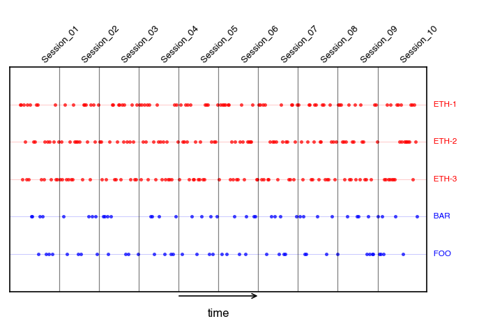
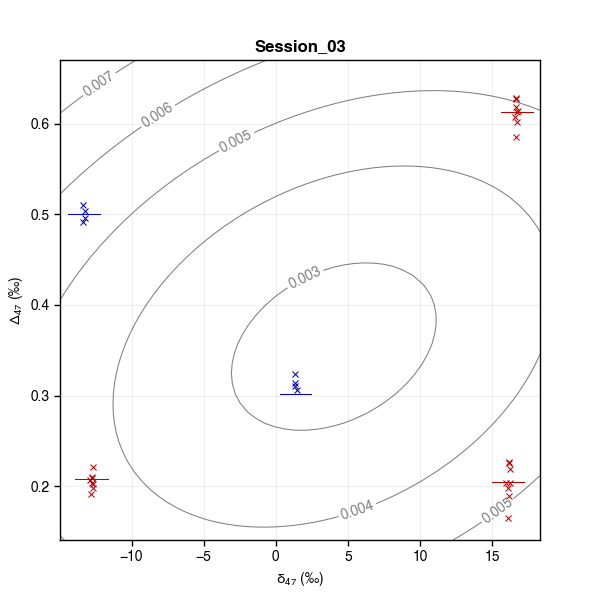
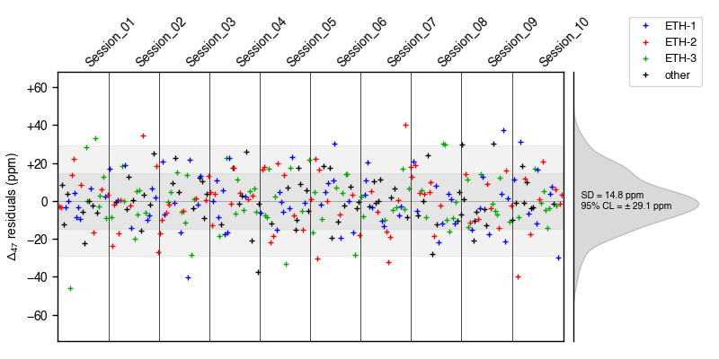
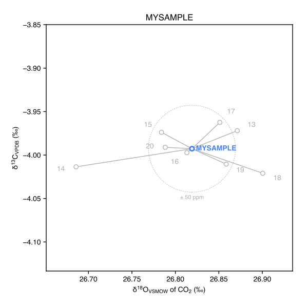

D47crunch
Standardization and analytical error propagation of Δ47 and Δ48 clumped-isotope measurements
Process and standardize carbonate and/or CO2 clumped-isotope analyses, from low-level data out of a dual-inlet mass spectrometer to final, “absolute” Δ47 and Δ48 values with fully propagated analytical error estimates (Daëron, 2021).
The tutorial section takes you through a series of simple steps to import/process data and print out the results. The how-to section provides instructions applicable to various specific tasks.
1. Tutorial
1.1 Installation
The easy option is to use pip; open a shell terminal and simply type:
python -m pip install D47crunch
For those wishing to experiment with the bleeding-edge development version, this can be done through the following steps:
- Download the
devbranch source code here and rename it toD47crunch.py. - Do any of the following:
- copy
D47crunch.pyto somewhere in your Python path - copy
D47crunch.pyto a working directory (import D47crunchwill only work if called within that directory) - copy
D47crunch.pyto any other location (e.g.,/foo/bar) and then use the following code snippet in your own code to importD47crunch:
- copy
import sys
sys.path.append('/foo/bar')
import D47crunch
Documentation for the development version can be downloaded here (save html file and open it locally).
1.2 Usage
Start by creating a file named rawdata.csv with the following contents:
UID, Sample, d45, d46, d47, d48, d49
A01, ETH-1, 5.79502, 11.62767, 16.89351, 24.56708, 0.79486
A02, MYSAMPLE-1, 6.21907, 11.49107, 17.27749, 24.58270, 1.56318
A03, ETH-2, -6.05868, -4.81718, -11.63506, -10.32578, 0.61352
A04, MYSAMPLE-2, -3.86184, 4.94184, 0.60612, 10.52732, 0.57118
A05, ETH-3, 5.54365, 12.05228, 17.40555, 25.96919, 0.74608
A06, ETH-2, -6.06706, -4.87710, -11.69927, -10.64421, 1.61234
A07, ETH-1, 5.78821, 11.55910, 16.80191, 24.56423, 1.47963
A08, MYSAMPLE-2, -3.87692, 4.86889, 0.52185, 10.40390, 1.07032
Then instantiate a D47data object which will store and process this data:
import D47crunch
mydata = D47crunch.D47data()
For now, this object is empty:
>>> print(mydata)
[]
To load the analyses saved in rawdata.csv into our D47data object and process the data:
mydata.read('rawdata.csv')
# compute δ13C, δ18O of working gas:
mydata.wg()
# compute δ13C, δ18O, raw Δ47 values for each analysis:
mydata.crunch()
# compute absolute Δ47 values for each analysis
# as well as average Δ47 values for each sample:
mydata.standardize()
We can now print a summary of the data processing:
>>> mydata.summary(verbose = True, save_to_file = False)
[summary]
––––––––––––––––––––––––––––––– –––––––––
N samples (anchors + unknowns) 5 (3 + 2)
N analyses (anchors + unknowns) 8 (5 + 3)
Repeatability of δ13C_VPDB 4.2 ppm
Repeatability of δ18O_VSMOW 47.5 ppm
Repeatability of Δ47 (anchors) 13.4 ppm
Repeatability of Δ47 (unknowns) 2.5 ppm
Repeatability of Δ47 (all) 9.6 ppm
Model degrees of freedom 3
Student's 95% t-factor 3.18
Standardization method pooled
––––––––––––––––––––––––––––––– –––––––––
This tells us that our data set contains 5 different samples: 3 anchors (ETH-1, ETH-2, ETH-3) and 2 unknowns (MYSAMPLE-1, MYSAMPLE-2). The total number of analyses is 8, with 5 anchor analyses and 3 unknown analyses. We get an estimate of the analytical repeatability (i.e. the overall, pooled standard deviation) for δ13C, δ18O and Δ47, as well as the number of degrees of freedom (here, 3) that these estimated standard deviations are based on, along with the corresponding Student's t-factor (here, 3.18) for 95 % confidence limits. Finally, the summary indicates that we used a “pooled” standardization approach (see [Daëron, 2021]).
To see the actual results:
>>> mydata.table_of_samples(verbose = True, save_to_file = False)
[table_of_samples]
–––––––––– – ––––––––– –––––––––– –––––– –––––– –––––––– –––––– ––––––––
Sample N d13C_VPDB d18O_VSMOW D47 SE 95% CL SD p_Levene
–––––––––– – ––––––––– –––––––––– –––––– –––––– –––––––– –––––– ––––––––
ETH-1 2 2.01 37.01 0.2052 0.0131
ETH-2 2 -10.17 19.88 0.2085 0.0026
ETH-3 1 1.73 37.49 0.6132
MYSAMPLE-1 1 2.48 36.90 0.2996 0.0091 ± 0.0291
MYSAMPLE-2 2 -8.17 30.05 0.6600 0.0115 ± 0.0366 0.0025
–––––––––– – ––––––––– –––––––––– –––––– –––––– –––––––– –––––– ––––––––
This table lists, for each sample, the number of analytical replicates, average δ13C and δ18O values (for the analyte CO2 , not for the carbonate itself), the average Δ47 value and the SD of Δ47 for all replicates of this sample. For unknown samples, the SE and 95 % confidence limits for mean Δ47 are also listed These 95 % CL take into account the number of degrees of freedom of the regression model, so that in large datasets the 95 % CL will tend to 1.96 times the SE, but in this case the applicable t-factor is much larger.
We can also generate a table of all analyses in the data set (again, note that d18O_VSMOW is the composition of the CO2 analyte):
>>> mydata.table_of_analyses(verbose = True, save_to_file = False)
[table_of_analyses]
––– ––––––––– –––––––––– ––––––––––– –––––––––––– ––––––––– ––––––––– –––––––––– –––––––––– –––––––– –––––––––– –––––––––– ––––––––– ––––––––– –––––––––– ––––––––
UID Session Sample d13Cwg_VPDB d18Owg_VSMOW d45 d46 d47 d48 d49 d13C_VPDB d18O_VSMOW D47raw D48raw D49raw D47
––– ––––––––– –––––––––– ––––––––––– –––––––––––– ––––––––– ––––––––– –––––––––– –––––––––– –––––––– –––––––––– –––––––––– ––––––––– ––––––––– –––––––––– ––––––––
A01 mySession ETH-1 -3.807 24.921 5.795020 11.627670 16.893510 24.567080 0.794860 2.014086 37.041843 -0.574686 1.149684 -27.690250 0.214454
A02 mySession MYSAMPLE-1 -3.807 24.921 6.219070 11.491070 17.277490 24.582700 1.563180 2.476827 36.898281 -0.499264 1.435380 -27.122614 0.299589
A03 mySession ETH-2 -3.807 24.921 -6.058680 -4.817180 -11.635060 -10.325780 0.613520 -10.166796 19.907706 -0.685979 -0.721617 16.716901 0.206693
A04 mySession MYSAMPLE-2 -3.807 24.921 -3.861840 4.941840 0.606120 10.527320 0.571180 -8.159927 30.087230 -0.248531 0.613099 -4.979413 0.658270
A05 mySession ETH-3 -3.807 24.921 5.543650 12.052280 17.405550 25.969190 0.746080 1.727029 37.485567 -0.226150 1.678699 -28.280301 0.613200
A06 mySession ETH-2 -3.807 24.921 -6.067060 -4.877100 -11.699270 -10.644210 1.612340 -10.173599 19.845192 -0.683054 -0.922832 17.861363 0.210328
A07 mySession ETH-1 -3.807 24.921 5.788210 11.559100 16.801910 24.564230 1.479630 2.009281 36.970298 -0.591129 1.282632 -26.888335 0.195926
A08 mySession MYSAMPLE-2 -3.807 24.921 -3.876920 4.868890 0.521850 10.403900 1.070320 -8.173486 30.011134 -0.245768 0.636159 -4.324964 0.661803
––– ––––––––– –––––––––– ––––––––––– –––––––––––– ––––––––– ––––––––– –––––––––– –––––––––– –––––––– –––––––––– –––––––––– ––––––––– ––––––––– –––––––––– ––––––––
2. How-to
2.1 Simulate a virtual data set to play with
It is sometimes convenient to quickly build a virtual data set of analyses, for instance to assess the final analytical precision achievable for a given combination of anchor and unknown analyses (see also Fig. 6 of Daëron, 2021).
This can be achieved with virtual_data(). The example below creates a dataset with four sessions, each of which comprises four analyses of anchor ETH-1, five of ETH-2, six of ETH-3, and two analyses of an unknown sample named FOO with an arbitrarily defined isotopic composition. Analytical repeatabilities for Δ47 and Δ48 are also specified arbitrarily. See the virtual_data() documentation for additional configuration parameters.
from D47crunch import *
args = dict(
samples = [
dict(Sample = 'ETH-1', N = 4),
dict(Sample = 'ETH-2', N = 5),
dict(Sample = 'ETH-3', N = 6),
dict(
Sample = 'FOO',
N = 2,
d13C_VPDB = -5.,
d18O_VPDB = -10.,
D47 = 0.3,
D48 = 0.15
),
],
rD47 = 0.010,
rD48 = 0.030,
)
session1 = virtual_data(session = 'Session_01', **args)
session2 = virtual_data(session = 'Session_02', **args)
session3 = virtual_data(session = 'Session_03', **args)
session4 = virtual_data(session = 'Session_04', **args)
D = D47data(session1 + session2 + session3 + session4)
D.crunch()
D.standardize()
D.table_of_sessions(verbose = True, save_to_file = False)
D.table_of_samples(verbose = True, save_to_file = False)
D.table_of_analyses(verbose = True, save_to_file = False)
2.2 Control data quality
D47crunch offers several tools to visualize processed data. The examples below use the same virtual data set, generated with:
from D47crunch import *
from random import shuffle
# generate virtual data:
args = dict(
samples = [
dict(Sample = 'ETH-1', N = 8),
dict(Sample = 'ETH-2', N = 8),
dict(Sample = 'ETH-3', N = 8),
dict(Sample = 'FOO', N = 4,
d13C_VPDB = -5., d18O_VPDB = -10.,
D47 = 0.3, D48 = 0.15),
dict(Sample = 'BAR', N = 4,
d13C_VPDB = -15., d18O_VPDB = -15.,
D47 = 0.5, D48 = 0.2),
])
sessions = [
virtual_data(session = f'Session_{k+1:02.0f}', seed = int('1234567890'[:k+1]), **args)
for k in range(10)]
# shuffle the data:
data = [r for s in sessions for r in s]
shuffle(data)
data = sorted(data, key = lambda r: r['Session'])
# create D47data instance:
data47 = D47data(data)
# process D47data instance:
data47.crunch()
data47.standardize()
2.2.1 Plotting the distribution of analyses through time
data47.plot_distribution_of_analyses(filename = 'time_distribution.pdf')

The plot above shows the succession of analyses as if they were all distributed at regular time intervals. See D4xdata.plot_distribution_of_analyses() for how to plot analyses as a function of “true” time (based on the TimeTag for each analysis).
2.2.2 Generating session plots
data47.plot_sessions()
Below is one of the resulting sessions plots. Each cross marker is an analysis. Anchors are in red and unknowns in blue. Short horizontal lines show the nominal Δ47 value for anchors, in red, or the average Δ47 value for unknowns, in blue (overall average for all sessions). Curved grey contours correspond to Δ47 standardization errors in this session.

2.2.3 Plotting Δ47 or Δ48 residuals
data47.plot_residuals(filename = 'residuals.pdf')

Again, note that this plot only shows the succession of analyses as if they were all distributed at regular time intervals.
2.2.4 Checking δ13C and δ18O dispersion
mydata = D47data(virtual_data(
session = 'mysession',
samples = [
dict(Sample = 'ETH-1', N = 4),
dict(Sample = 'ETH-2', N = 4),
dict(Sample = 'ETH-3', N = 4),
dict(Sample = 'MYSAMPLE', N = 8, D47 = 0.6, D48 = 0.1, d13C_VPDB = -4.0, d18O_VPDB = -12.0),
], seed = 123))
mydata.refresh()
mydata.wg()
mydata.crunch()
mydata.plot_bulk_compositions()
D4xdata.plot_bulk_compositions() produces a series of plots, one for each sample, and an additional plot with all samples together. For example, here is the plot for sample MYSAMPLE:

2.3 Use a different set of anchors, change anchor nominal values, and/or change oxygen-17 correction parameters
Nominal values for various carbonate standards are defined in four places:
D4xdata.Nominal_d13C_VPDBD4xdata.Nominal_d18O_VPDBD47data.Nominal_D4x(also accessible throughD47data.Nominal_D47)D48data.Nominal_D4x(also accessible throughD48data.Nominal_D48)
17O correction parameters are defined by:
D4xdata.R13_VPDBD4xdata.R18_VSMOWD4xdata.R18_VPDBD4xdata.LAMBDA_17D4xdata.R17_VSMOWD4xdata.R17_VPDB
When creating a new instance of D47data or D48data, the current values of these variables are copied as properties of the new object. Applying custom values for, e.g., R17_VSMOW and Nominal_D47 can thus be done in several ways:
Option 1: by redefining D4xdata.R17_VSMOW and D47data.Nominal_D47 _before_ creating a D47data object:
from D47crunch import D4xdata, D47data
# redefine R17_VSMOW:
D4xdata.R17_VSMOW = 0.00037 # new value
# redefine R17_VPDB for consistency:
D4xdata.R17_VPDB = D4xdata.R17_VSMOW * (D4xdata.R18_VPDB/D4xdata.R18_VSMOW) ** D4xdata.LAMBDA_17
# edit Nominal_D47 to only include ETH-1/2/3:
D47data.Nominal_D4x = {
a: D47data.Nominal_D4x[a]
for a in ['ETH-1', 'ETH-2', 'ETH-3']
}
# redefine ETH-3:
D47data.Nominal_D4x['ETH-3'] = 0.600
# only now create D47data object:
mydata = D47data()
# check the results:
print(mydata.R17_VSMOW, mydata.R17_VPDB)
print(mydata.Nominal_D47)
# NB: mydata.Nominal_D47 is just an alias for mydata.Nominal_D4x
# should print out:
# 0.00037 0.00037599710894149464
# {'ETH-1': 0.2052, 'ETH-2': 0.2085, 'ETH-3': 0.6}
Option 2: by redefining R17_VSMOW and Nominal_D47 _after_ creating a D47data object:
from D47crunch import D47data
# first create D47data object:
mydata = D47data()
# redefine R17_VSMOW:
mydata.R17_VSMOW = 0.00037 # new value
# redefine R17_VPDB for consistency:
mydata.R17_VPDB = mydata.R17_VSMOW * (mydata.R18_VPDB/mydata.R18_VSMOW) ** mydata.LAMBDA_17
# edit Nominal_D47 to only include ETH-1/2/3:
mydata.Nominal_D47 = {
a: mydata.Nominal_D47[a]
for a in ['ETH-1', 'ETH-2', 'ETH-3']
}
# redefine ETH-3:
mydata.Nominal_D47['ETH-3'] = 0.600
# check the results:
print(mydata.R17_VSMOW, mydata.R17_VPDB)
print(mydata.Nominal_D47)
# should print out:
# 0.00037 0.00037599710894149464
# {'ETH-1': 0.2052, 'ETH-2': 0.2085, 'ETH-3': 0.6}
The two options above are equivalent, but the latter provides a simple way to compare different data processing choices:
from D47crunch import D47data
# create two D47data objects:
foo = D47data()
bar = D47data()
# modify foo in various ways:
foo.LAMBDA_17 = 0.52
foo.R17_VSMOW = 0.00037 # new value
foo.R17_VPDB = foo.R17_VSMOW * (foo.R18_VPDB/foo.R18_VSMOW) ** foo.LAMBDA_17
foo.Nominal_D47 = {
'ETH-1': foo.Nominal_D47['ETH-1'],
'ETH-2': foo.Nominal_D47['ETH-1'],
'IAEA-C2': foo.Nominal_D47['IAEA-C2'],
'INLAB_REF_MATERIAL': 0.666,
}
# now import the same raw data into foo and bar:
foo.read('rawdata.csv')
foo.wg() # compute δ13C, δ18O of working gas
foo.crunch() # compute all δ13C, δ18O and raw Δ47 values
foo.standardize() # compute absolute Δ47 values
bar.read('rawdata.csv')
bar.wg() # compute δ13C, δ18O of working gas
bar.crunch() # compute all δ13C, δ18O and raw Δ47 values
bar.standardize() # compute absolute Δ47 values
# and compare the final results:
foo.table_of_samples(verbose = True, save_to_file = False)
bar.table_of_samples(verbose = True, save_to_file = False)
2.4 Process paired Δ47 and Δ48 values
Purely in terms of data processing, it is not obvious why Δ47 and Δ48 data should not be handled separately. For now, D47crunch uses two independent classes — D47data and D48data — which crunch numbers and deal with standardization in very similar ways. The following example demonstrates how to print out combined outputs for D47data and D48data.
from D47crunch import *
# generate virtual data:
args = dict(
samples = [
dict(Sample = 'ETH-1', N = 3),
dict(Sample = 'ETH-2', N = 3),
dict(Sample = 'ETH-3', N = 3),
dict(Sample = 'FOO', N = 3,
d13C_VPDB = -5., d18O_VPDB = -10.,
D47 = 0.3, D48 = 0.15),
], rD47 = 0.010, rD48 = 0.030)
session1 = virtual_data(session = 'Session_01', **args)
session2 = virtual_data(session = 'Session_02', **args)
# create D47data instance:
data47 = D47data(session1 + session2)
# process D47data instance:
data47.crunch()
data47.standardize()
# create D48data instance:
data48 = D48data(data47) # alternatively: data48 = D48data(session1 + session2)
# process D48data instance:
data48.crunch()
data48.standardize()
# output combined results:
table_of_sessions(data47, data48)
table_of_samples(data47, data48)
table_of_analyses(data47, data48)
Expected output:
–––––––––– –– –– ––––––––––– –––––––––––– –––––– –––––– –––––– ––––––––––––– ––––––––––––––– –––––––––––––– –––––– ––––––––––––– ––––––––––––––– ––––––––––––––
Session Na Nu d13Cwg_VPDB d18Owg_VSMOW r_d13C r_d18O r_D47 a_47 ± SE 1e3 x b_47 ± SE c_47 ± SE r_D48 a_48 ± SE 1e3 x b_48 ± SE c_48 ± SE
–––––––––– –– –– ––––––––––– –––––––––––– –––––– –––––– –––––– ––––––––––––– ––––––––––––––– –––––––––––––– –––––– ––––––––––––– ––––––––––––––– ––––––––––––––
Session_01 9 3 -4.000 26.000 0.0000 0.0000 0.0098 1.021 ± 0.019 -0.398 ± 0.260 -0.903 ± 0.006 0.0486 0.540 ± 0.151 1.235 ± 0.607 -0.390 ± 0.025
Session_02 9 3 -4.000 26.000 0.0000 0.0000 0.0090 1.015 ± 0.019 0.376 ± 0.260 -0.905 ± 0.006 0.0186 1.350 ± 0.156 -0.871 ± 0.608 -0.504 ± 0.027
–––––––––– –– –– ––––––––––– –––––––––––– –––––– –––––– –––––– ––––––––––––– ––––––––––––––– –––––––––––––– –––––– ––––––––––––– ––––––––––––––– ––––––––––––––
–––––– – ––––––––– –––––––––– –––––– –––––– –––––––– –––––– –––––––– –––––– –––––– –––––––– –––––– ––––––––
Sample N d13C_VPDB d18O_VSMOW D47 SE 95% CL SD p_Levene D48 SE 95% CL SD p_Levene
–––––– – ––––––––– –––––––––– –––––– –––––– –––––––– –––––– –––––––– –––––– –––––– –––––––– –––––– ––––––––
ETH-1 6 2.02 37.02 0.2052 0.0078 0.1380 0.0223
ETH-2 6 -10.17 19.88 0.2085 0.0036 0.1380 0.0482
ETH-3 6 1.71 37.45 0.6132 0.0080 0.2700 0.0176
FOO 6 -5.00 28.91 0.3026 0.0044 ± 0.0093 0.0121 0.164 0.1397 0.0121 ± 0.0255 0.0267 0.127
–––––– – ––––––––– –––––––––– –––––– –––––– –––––––– –––––– –––––––– –––––– –––––– –––––––– –––––– ––––––––
––– –––––––––– –––––– ––––––––––– –––––––––––– ––––––––– ––––––––– –––––––––– –––––––––– –––––––––– –––––––––– –––––––––– ––––––––– ––––––––– ––––––––– –––––––– ––––––––
UID Session Sample d13Cwg_VPDB d18Owg_VSMOW d45 d46 d47 d48 d49 d13C_VPDB d18O_VSMOW D47raw D48raw D49raw D47 D48
––– –––––––––– –––––– ––––––––––– –––––––––––– ––––––––– ––––––––– –––––––––– –––––––––– –––––––––– –––––––––– –––––––––– ––––––––– ––––––––– ––––––––– –––––––– ––––––––
1 Session_01 ETH-1 -4.000 26.000 6.018962 10.747026 16.120787 21.286237 27.780042 2.020000 37.024281 -0.708176 -0.316435 -0.000013 0.197297 0.087763
2 Session_01 ETH-1 -4.000 26.000 6.018962 10.747026 16.132240 21.307795 27.780042 2.020000 37.024281 -0.696913 -0.295333 -0.000013 0.208328 0.126791
3 Session_01 ETH-1 -4.000 26.000 6.018962 10.747026 16.132438 21.313884 27.780042 2.020000 37.024281 -0.696718 -0.289374 -0.000013 0.208519 0.137813
4 Session_01 ETH-2 -4.000 26.000 -5.995859 -5.976076 -12.700300 -12.210735 -18.023381 -10.170000 19.875825 -0.683938 -0.297902 -0.000002 0.209785 0.198705
5 Session_01 ETH-2 -4.000 26.000 -5.995859 -5.976076 -12.707421 -12.270781 -18.023381 -10.170000 19.875825 -0.691145 -0.358673 -0.000002 0.202726 0.086308
6 Session_01 ETH-2 -4.000 26.000 -5.995859 -5.976076 -12.700061 -12.278310 -18.023381 -10.170000 19.875825 -0.683696 -0.366292 -0.000002 0.210022 0.072215
7 Session_01 ETH-3 -4.000 26.000 5.742374 11.161270 16.684379 22.225827 28.306614 1.710000 37.450394 -0.273094 -0.216392 -0.000014 0.623472 0.270873
8 Session_01 ETH-3 -4.000 26.000 5.742374 11.161270 16.660163 22.233729 28.306614 1.710000 37.450394 -0.296906 -0.208664 -0.000014 0.600150 0.285167
9 Session_01 ETH-3 -4.000 26.000 5.742374 11.161270 16.675191 22.215632 28.306614 1.710000 37.450394 -0.282128 -0.226363 -0.000014 0.614623 0.252432
10 Session_01 FOO -4.000 26.000 -0.840413 2.828738 1.328380 5.374933 4.665655 -5.000000 28.907344 -0.582131 -0.288924 -0.000006 0.314928 0.175105
11 Session_01 FOO -4.000 26.000 -0.840413 2.828738 1.302220 5.384454 4.665655 -5.000000 28.907344 -0.608241 -0.279457 -0.000006 0.289356 0.192614
12 Session_01 FOO -4.000 26.000 -0.840413 2.828738 1.322530 5.372841 4.665655 -5.000000 28.907344 -0.587970 -0.291004 -0.000006 0.309209 0.171257
13 Session_02 ETH-1 -4.000 26.000 6.018962 10.747026 16.140853 21.267202 27.780042 2.020000 37.024281 -0.688442 -0.335067 -0.000013 0.207730 0.138730
14 Session_02 ETH-1 -4.000 26.000 6.018962 10.747026 16.127087 21.256983 27.780042 2.020000 37.024281 -0.701980 -0.345071 -0.000013 0.194396 0.131311
15 Session_02 ETH-1 -4.000 26.000 6.018962 10.747026 16.148253 21.287779 27.780042 2.020000 37.024281 -0.681165 -0.314926 -0.000013 0.214898 0.153668
16 Session_02 ETH-2 -4.000 26.000 -5.995859 -5.976076 -12.715859 -12.204791 -18.023381 -10.170000 19.875825 -0.699685 -0.291887 -0.000002 0.207349 0.149128
17 Session_02 ETH-2 -4.000 26.000 -5.995859 -5.976076 -12.709763 -12.188685 -18.023381 -10.170000 19.875825 -0.693516 -0.275587 -0.000002 0.213426 0.161217
18 Session_02 ETH-2 -4.000 26.000 -5.995859 -5.976076 -12.715427 -12.253049 -18.023381 -10.170000 19.875825 -0.699249 -0.340727 -0.000002 0.207780 0.112907
19 Session_02 ETH-3 -4.000 26.000 5.742374 11.161270 16.685994 22.249463 28.306614 1.710000 37.450394 -0.271506 -0.193275 -0.000014 0.618328 0.244431
20 Session_02 ETH-3 -4.000 26.000 5.742374 11.161270 16.681351 22.298166 28.306614 1.710000 37.450394 -0.276071 -0.145641 -0.000014 0.613831 0.279758
21 Session_02 ETH-3 -4.000 26.000 5.742374 11.161270 16.676169 22.306848 28.306614 1.710000 37.450394 -0.281167 -0.137150 -0.000014 0.608813 0.286056
22 Session_02 FOO -4.000 26.000 -0.840413 2.828738 1.324359 5.339497 4.665655 -5.000000 28.907344 -0.586144 -0.324160 -0.000006 0.314015 0.136535
23 Session_02 FOO -4.000 26.000 -0.840413 2.828738 1.297658 5.325854 4.665655 -5.000000 28.907344 -0.612794 -0.337727 -0.000006 0.287767 0.126473
24 Session_02 FOO -4.000 26.000 -0.840413 2.828738 1.310185 5.339898 4.665655 -5.000000 28.907344 -0.600291 -0.323761 -0.000006 0.300082 0.136830
––– –––––––––– –––––– ––––––––––– –––––––––––– ––––––––– ––––––––– –––––––––– –––––––––– –––––––––– –––––––––– –––––––––– ––––––––– ––––––––– ––––––––– –––––––– ––––––––
API Documentation
1''' 2Standardization and analytical error propagation of Δ47 and Δ48 clumped-isotope measurements 3 4Process and standardize carbonate and/or CO2 clumped-isotope analyses, 5from low-level data out of a dual-inlet mass spectrometer to final, “absolute” 6Δ47 and Δ48 values with fully propagated analytical error estimates 7([Daëron, 2021](https://doi.org/10.1029/2020GC009592)). 8 9The **tutorial** section takes you through a series of simple steps to import/process data and print out the results. 10The **how-to** section provides instructions applicable to various specific tasks. 11 12.. include:: ../docs/tutorial.md 13.. include:: ../docs/howto.md 14 15## API Documentation 16''' 17 18__docformat__ = "restructuredtext" 19__author__ = 'Mathieu Daëron' 20__contact__ = 'daeron@lsce.ipsl.fr' 21__copyright__ = 'Copyright (c) 2023 Mathieu Daëron' 22__license__ = 'Modified BSD License - https://opensource.org/licenses/BSD-3-Clause' 23__date__ = '2023-05-13' 24__version__ = '2.0.6' 25 26import os 27import numpy as np 28from statistics import stdev 29from scipy.stats import t as tstudent 30from scipy.stats import levene 31from scipy.interpolate import interp1d 32from numpy import linalg 33from lmfit import Minimizer, Parameters, report_fit 34from matplotlib import pyplot as ppl 35from datetime import datetime as dt 36from functools import wraps 37from colorsys import hls_to_rgb 38from matplotlib import rcParams 39 40rcParams['font.family'] = 'sans-serif' 41rcParams['font.sans-serif'] = 'Helvetica' 42rcParams['font.size'] = 10 43rcParams['mathtext.fontset'] = 'custom' 44rcParams['mathtext.rm'] = 'sans' 45rcParams['mathtext.bf'] = 'sans:bold' 46rcParams['mathtext.it'] = 'sans:italic' 47rcParams['mathtext.cal'] = 'sans:italic' 48rcParams['mathtext.default'] = 'rm' 49rcParams['xtick.major.size'] = 4 50rcParams['xtick.major.width'] = 1 51rcParams['ytick.major.size'] = 4 52rcParams['ytick.major.width'] = 1 53rcParams['axes.grid'] = False 54rcParams['axes.linewidth'] = 1 55rcParams['grid.linewidth'] = .75 56rcParams['grid.linestyle'] = '-' 57rcParams['grid.alpha'] = .15 58rcParams['savefig.dpi'] = 150 59 60Petersen_etal_CO2eqD47 = np.array([[-12, 1.147113572], [-11, 1.139961218], [-10, 1.132872856], [-9, 1.125847677], [-8, 1.118884889], [-7, 1.111983708], [-6, 1.105143366], [-5, 1.098363105], [-4, 1.091642182], [-3, 1.084979862], [-2, 1.078375423], [-1, 1.071828156], [0, 1.065337360], [1, 1.058902349], [2, 1.052522443], [3, 1.046196976], [4, 1.039925291], [5, 1.033706741], [6, 1.027540690], [7, 1.021426510], [8, 1.015363585], [9, 1.009351306], [10, 1.003389075], [11, 0.997476303], [12, 0.991612409], [13, 0.985796821], [14, 0.980028975], [15, 0.974308318], [16, 0.968634304], [17, 0.963006392], [18, 0.957424055], [19, 0.951886769], [20, 0.946394020], [21, 0.940945302], [22, 0.935540114], [23, 0.930177964], [24, 0.924858369], [25, 0.919580851], [26, 0.914344938], [27, 0.909150167], [28, 0.903996080], [29, 0.898882228], [30, 0.893808167], [31, 0.888773459], [32, 0.883777672], [33, 0.878820382], [34, 0.873901170], [35, 0.869019623], [36, 0.864175334], [37, 0.859367901], [38, 0.854596929], [39, 0.849862028], [40, 0.845162813], [41, 0.840498905], [42, 0.835869931], [43, 0.831275522], [44, 0.826715314], [45, 0.822188950], [46, 0.817696075], [47, 0.813236341], [48, 0.808809404], [49, 0.804414926], [50, 0.800052572], [51, 0.795722012], [52, 0.791422922], [53, 0.787154979], [54, 0.782917869], [55, 0.778711277], [56, 0.774534898], [57, 0.770388426], [58, 0.766271562], [59, 0.762184010], [60, 0.758125479], [61, 0.754095680], [62, 0.750094329], [63, 0.746121147], [64, 0.742175856], [65, 0.738258184], [66, 0.734367860], [67, 0.730504620], [68, 0.726668201], [69, 0.722858343], [70, 0.719074792], [71, 0.715317295], [72, 0.711585602], [73, 0.707879469], [74, 0.704198652], [75, 0.700542912], [76, 0.696912012], [77, 0.693305719], [78, 0.689723802], [79, 0.686166034], [80, 0.682632189], [81, 0.679122047], [82, 0.675635387], [83, 0.672171994], [84, 0.668731654], [85, 0.665314156], [86, 0.661919291], [87, 0.658546854], [88, 0.655196641], [89, 0.651868451], [90, 0.648562087], [91, 0.645277352], [92, 0.642014054], [93, 0.638771999], [94, 0.635551001], [95, 0.632350872], [96, 0.629171428], [97, 0.626012487], [98, 0.622873870], [99, 0.619755397], [100, 0.616656895], [102, 0.610519107], [104, 0.604459143], [106, 0.598475670], [108, 0.592567388], [110, 0.586733026], [112, 0.580971342], [114, 0.575281125], [116, 0.569661187], [118, 0.564110371], [120, 0.558627545], [122, 0.553211600], [124, 0.547861454], [126, 0.542576048], [128, 0.537354347], [130, 0.532195337], [132, 0.527098028], [134, 0.522061450], [136, 0.517084654], [138, 0.512166711], [140, 0.507306712], [142, 0.502503768], [144, 0.497757006], [146, 0.493065573], [148, 0.488428634], [150, 0.483845370], [152, 0.479314980], [154, 0.474836677], [156, 0.470409692], [158, 0.466033271], [160, 0.461706674], [162, 0.457429176], [164, 0.453200067], [166, 0.449018650], [168, 0.444884242], [170, 0.440796174], [172, 0.436753787], [174, 0.432756438], [176, 0.428803494], [178, 0.424894334], [180, 0.421028350], [182, 0.417204944], [184, 0.413423530], [186, 0.409683531], [188, 0.405984383], [190, 0.402325531], [192, 0.398706429], [194, 0.395126543], [196, 0.391585347], [198, 0.388082324], [200, 0.384616967], [202, 0.381188778], [204, 0.377797268], [206, 0.374441954], [208, 0.371122364], [210, 0.367838033], [212, 0.364588505], [214, 0.361373329], [216, 0.358192065], [218, 0.355044277], [220, 0.351929540], [222, 0.348847432], [224, 0.345797540], [226, 0.342779460], [228, 0.339792789], [230, 0.336837136], [232, 0.333912113], [234, 0.331017339], [236, 0.328152439], [238, 0.325317046], [240, 0.322510795], [242, 0.319733329], [244, 0.316984297], [246, 0.314263352], [248, 0.311570153], [250, 0.308904364], [252, 0.306265654], [254, 0.303653699], [256, 0.301068176], [258, 0.298508771], [260, 0.295975171], [262, 0.293467070], [264, 0.290984167], [266, 0.288526163], [268, 0.286092765], [270, 0.283683684], [272, 0.281298636], [274, 0.278937339], [276, 0.276599517], [278, 0.274284898], [280, 0.271993211], [282, 0.269724193], [284, 0.267477582], [286, 0.265253121], [288, 0.263050554], [290, 0.260869633], [292, 0.258710110], [294, 0.256571741], [296, 0.254454286], [298, 0.252357508], [300, 0.250281174], [302, 0.248225053], [304, 0.246188917], [306, 0.244172542], [308, 0.242175707], [310, 0.240198194], [312, 0.238239786], [314, 0.236300272], [316, 0.234379441], [318, 0.232477087], [320, 0.230593005], [322, 0.228726993], [324, 0.226878853], [326, 0.225048388], [328, 0.223235405], [330, 0.221439711], [332, 0.219661118], [334, 0.217899439], [336, 0.216154491], [338, 0.214426091], [340, 0.212714060], [342, 0.211018220], [344, 0.209338398], [346, 0.207674420], [348, 0.206026115], [350, 0.204393315], [355, 0.200378063], [360, 0.196456139], [365, 0.192625077], [370, 0.188882487], [375, 0.185226048], [380, 0.181653511], [385, 0.178162694], [390, 0.174751478], [395, 0.171417807], [400, 0.168159686], [405, 0.164975177], [410, 0.161862398], [415, 0.158819521], [420, 0.155844772], [425, 0.152936426], [430, 0.150092806], [435, 0.147312286], [440, 0.144593281], [445, 0.141934254], [450, 0.139333710], [455, 0.136790195], [460, 0.134302294], [465, 0.131868634], [470, 0.129487876], [475, 0.127158722], [480, 0.124879906], [485, 0.122650197], [490, 0.120468398], [495, 0.118333345], [500, 0.116243903], [505, 0.114198970], [510, 0.112197471], [515, 0.110238362], [520, 0.108320625], [525, 0.106443271], [530, 0.104605335], [535, 0.102805877], [540, 0.101043985], [545, 0.099318768], [550, 0.097629359], [555, 0.095974915], [560, 0.094354612], [565, 0.092767650], [570, 0.091213248], [575, 0.089690648], [580, 0.088199108], [585, 0.086737906], [590, 0.085306341], [595, 0.083903726], [600, 0.082529395], [605, 0.081182697], [610, 0.079862998], [615, 0.078569680], [620, 0.077302141], [625, 0.076059794], [630, 0.074842066], [635, 0.073648400], [640, 0.072478251], [645, 0.071331090], [650, 0.070206399], [655, 0.069103674], [660, 0.068022424], [665, 0.066962168], [670, 0.065922439], [675, 0.064902780], [680, 0.063902748], [685, 0.062921909], [690, 0.061959837], [695, 0.061016122], [700, 0.060090360], [705, 0.059182157], [710, 0.058291131], [715, 0.057416907], [720, 0.056559120], [725, 0.055717414], [730, 0.054891440], [735, 0.054080860], [740, 0.053285343], [745, 0.052504565], [750, 0.051738210], [755, 0.050985971], [760, 0.050247546], [765, 0.049522643], [770, 0.048810974], [775, 0.048112260], [780, 0.047426227], [785, 0.046752609], [790, 0.046091145], [795, 0.045441581], [800, 0.044803668], [805, 0.044177164], [810, 0.043561831], [815, 0.042957438], [820, 0.042363759], [825, 0.041780573], [830, 0.041207664], [835, 0.040644822], [840, 0.040091839], [845, 0.039548516], [850, 0.039014654], [855, 0.038490063], [860, 0.037974554], [865, 0.037467944], [870, 0.036970054], [875, 0.036480707], [880, 0.035999734], [885, 0.035526965], [890, 0.035062238], [895, 0.034605393], [900, 0.034156272], [905, 0.033714724], [910, 0.033280598], [915, 0.032853749], [920, 0.032434032], [925, 0.032021309], [930, 0.031615443], [935, 0.031216300], [940, 0.030823749], [945, 0.030437663], [950, 0.030057915], [955, 0.029684385], [960, 0.029316951], [965, 0.028955498], [970, 0.028599910], [975, 0.028250075], [980, 0.027905884], [985, 0.027567229], [990, 0.027234006], [995, 0.026906112], [1000, 0.026583445], [1005, 0.026265908], [1010, 0.025953405], [1015, 0.025645841], [1020, 0.025343124], [1025, 0.025045163], [1030, 0.024751871], [1035, 0.024463160], [1040, 0.024178947], [1045, 0.023899147], [1050, 0.023623680], [1055, 0.023352467], [1060, 0.023085429], [1065, 0.022822491], [1070, 0.022563577], [1075, 0.022308615], [1080, 0.022057533], [1085, 0.021810260], [1090, 0.021566729], [1095, 0.021326872], [1100, 0.021090622]]) 61_fCO2eqD47_Petersen = interp1d(Petersen_etal_CO2eqD47[:,0], Petersen_etal_CO2eqD47[:,1]) 62def fCO2eqD47_Petersen(T): 63 ''' 64 CO2 equilibrium Δ47 value as a function of T (in degrees C) 65 according to [Petersen et al. (2019)](https://doi.org/10.1029/2018GC008127). 66 67 ''' 68 return float(_fCO2eqD47_Petersen(T)) 69 70 71Wang_etal_CO2eqD47 = np.array([[-83., 1.8954], [-73., 1.7530], [-63., 1.6261], [-53., 1.5126], [-43., 1.4104], [-33., 1.3182], [-23., 1.2345], [-13., 1.1584], [-3., 1.0888], [7., 1.0251], [17., 0.9665], [27., 0.9125], [37., 0.8626], [47., 0.8164], [57., 0.7734], [67., 0.7334], [87., 0.6612], [97., 0.6286], [107., 0.5980], [117., 0.5693], [127., 0.5423], [137., 0.5169], [147., 0.4930], [157., 0.4704], [167., 0.4491], [177., 0.4289], [187., 0.4098], [197., 0.3918], [207., 0.3747], [217., 0.3585], [227., 0.3431], [237., 0.3285], [247., 0.3147], [257., 0.3015], [267., 0.2890], [277., 0.2771], [287., 0.2657], [297., 0.2550], [307., 0.2447], [317., 0.2349], [327., 0.2256], [337., 0.2167], [347., 0.2083], [357., 0.2002], [367., 0.1925], [377., 0.1851], [387., 0.1781], [397., 0.1714], [407., 0.1650], [417., 0.1589], [427., 0.1530], [437., 0.1474], [447., 0.1421], [457., 0.1370], [467., 0.1321], [477., 0.1274], [487., 0.1229], [497., 0.1186], [507., 0.1145], [517., 0.1105], [527., 0.1068], [537., 0.1031], [547., 0.0997], [557., 0.0963], [567., 0.0931], [577., 0.0901], [587., 0.0871], [597., 0.0843], [607., 0.0816], [617., 0.0790], [627., 0.0765], [637., 0.0741], [647., 0.0718], [657., 0.0695], [667., 0.0674], [677., 0.0654], [687., 0.0634], [697., 0.0615], [707., 0.0597], [717., 0.0579], [727., 0.0562], [737., 0.0546], [747., 0.0530], [757., 0.0515], [767., 0.0500], [777., 0.0486], [787., 0.0472], [797., 0.0459], [807., 0.0447], [817., 0.0435], [827., 0.0423], [837., 0.0411], [847., 0.0400], [857., 0.0390], [867., 0.0380], [877., 0.0370], [887., 0.0360], [897., 0.0351], [907., 0.0342], [917., 0.0333], [927., 0.0325], [937., 0.0317], [947., 0.0309], [957., 0.0302], [967., 0.0294], [977., 0.0287], [987., 0.0281], [997., 0.0274], [1007., 0.0268], [1017., 0.0261], [1027., 0.0255], [1037., 0.0249], [1047., 0.0244], [1057., 0.0238], [1067., 0.0233], [1077., 0.0228], [1087., 0.0223], [1097., 0.0218]]) 72_fCO2eqD47_Wang = interp1d(Wang_etal_CO2eqD47[:,0] - 0.15, Wang_etal_CO2eqD47[:,1]) 73def fCO2eqD47_Wang(T): 74 ''' 75 CO2 equilibrium Δ47 value as a function of `T` (in degrees C) 76 according to [Wang et al. (2004)](https://doi.org/10.1016/j.gca.2004.05.039) 77 (supplementary data of [Dennis et al., 2011](https://doi.org/10.1016/j.gca.2011.09.025)). 78 ''' 79 return float(_fCO2eqD47_Wang(T)) 80 81 82def correlated_sum(X, C, w = None): 83 ''' 84 Compute covariance-aware linear combinations 85 86 **Parameters** 87 88 + `X`: list or 1-D array of values to sum 89 + `C`: covariance matrix for the elements of `X` 90 + `w`: list or 1-D array of weights to apply to the elements of `X` 91 (all equal to 1 by default) 92 93 Return the sum (and its SE) of the elements of `X`, with optional weights equal 94 to the elements of `w`, accounting for covariances between the elements of `X`. 95 ''' 96 if w is None: 97 w = [1 for x in X] 98 return np.dot(w,X), (np.dot(w,np.dot(C,w)))**.5 99 100 101def make_csv(x, hsep = ',', vsep = '\n'): 102 ''' 103 Formats a list of lists of strings as a CSV 104 105 **Parameters** 106 107 + `x`: the list of lists of strings to format 108 + `hsep`: the field separator (`,` by default) 109 + `vsep`: the line-ending convention to use (`\\n` by default) 110 111 **Example** 112 113 ```py 114 print(make_csv([['a', 'b', 'c'], ['d', 'e', 'f']])) 115 ``` 116 117 outputs: 118 119 ```py 120 a,b,c 121 d,e,f 122 ``` 123 ''' 124 return vsep.join([hsep.join(l) for l in x]) 125 126 127def pf(txt): 128 ''' 129 Modify string `txt` to follow `lmfit.Parameter()` naming rules. 130 ''' 131 return txt.replace('-','_').replace('.','_').replace(' ','_') 132 133 134def smart_type(x): 135 ''' 136 Tries to convert string `x` to a float if it includes a decimal point, or 137 to an integer if it does not. If both attempts fail, return the original 138 string unchanged. 139 ''' 140 try: 141 y = float(x) 142 except ValueError: 143 return x 144 if '.' not in x: 145 return int(y) 146 return y 147 148 149def pretty_table(x, header = 1, hsep = ' ', vsep = '–', align = '<'): 150 ''' 151 Reads a list of lists of strings and outputs an ascii table 152 153 **Parameters** 154 155 + `x`: a list of lists of strings 156 + `header`: the number of lines to treat as header lines 157 + `hsep`: the horizontal separator between columns 158 + `vsep`: the character to use as vertical separator 159 + `align`: string of left (`<`) or right (`>`) alignment characters. 160 161 **Example** 162 163 ```py 164 x = [['A', 'B', 'C'], ['1', '1.9999', 'foo'], ['10', 'x', 'bar']] 165 print(pretty_table(x)) 166 ``` 167 yields: 168 ``` 169 -- ------ --- 170 A B C 171 -- ------ --- 172 1 1.9999 foo 173 10 x bar 174 -- ------ --- 175 ``` 176 177 ''' 178 txt = [] 179 widths = [np.max([len(e) for e in c]) for c in zip(*x)] 180 181 if len(widths) > len(align): 182 align += '>' * (len(widths)-len(align)) 183 sepline = hsep.join([vsep*w for w in widths]) 184 txt += [sepline] 185 for k,l in enumerate(x): 186 if k and k == header: 187 txt += [sepline] 188 txt += [hsep.join([f'{e:{a}{w}}' for e, w, a in zip(l, widths, align)])] 189 txt += [sepline] 190 txt += [''] 191 return '\n'.join(txt) 192 193 194def transpose_table(x): 195 ''' 196 Transpose a list if lists 197 198 **Parameters** 199 200 + `x`: a list of lists 201 202 **Example** 203 204 ```py 205 x = [[1, 2], [3, 4]] 206 print(transpose_table(x)) # yields: [[1, 3], [2, 4]] 207 ``` 208 ''' 209 return [[e for e in c] for c in zip(*x)] 210 211 212def w_avg(X, sX) : 213 ''' 214 Compute variance-weighted average 215 216 Returns the value and SE of the weighted average of the elements of `X`, 217 with relative weights equal to their inverse variances (`1/sX**2`). 218 219 **Parameters** 220 221 + `X`: array-like of elements to average 222 + `sX`: array-like of the corresponding SE values 223 224 **Tip** 225 226 If `X` and `sX` are initially arranged as a list of `(x, sx)` doublets, 227 they may be rearranged using `zip()`: 228 229 ```python 230 foo = [(0, 1), (1, 0.5), (2, 0.5)] 231 print(w_avg(*zip(*foo))) # yields: (1.3333333333333333, 0.3333333333333333) 232 ``` 233 ''' 234 X = [ x for x in X ] 235 sX = [ sx for sx in sX ] 236 W = [ sx**-2 for sx in sX ] 237 W = [ w/sum(W) for w in W ] 238 Xavg = sum([ w*x for w,x in zip(W,X) ]) 239 sXavg = sum([ w**2*sx**2 for w,sx in zip(W,sX) ])**.5 240 return Xavg, sXavg 241 242 243def read_csv(filename, sep = ''): 244 ''' 245 Read contents of `filename` in csv format and return a list of dictionaries. 246 247 In the csv string, spaces before and after field separators (`','` by default) 248 are optional. 249 250 **Parameters** 251 252 + `filename`: the csv file to read 253 + `sep`: csv separator delimiting the fields. By default, use `,`, `;`, or `\t`, 254 whichever appers most often in the contents of `filename`. 255 ''' 256 with open(filename) as fid: 257 txt = fid.read() 258 259 if sep == '': 260 sep = sorted(',;\t', key = lambda x: - txt.count(x))[0] 261 txt = [[x.strip() for x in l.split(sep)] for l in txt.splitlines() if l.strip()] 262 return [{k: smart_type(v) for k,v in zip(txt[0], l) if v} for l in txt[1:]] 263 264 265def simulate_single_analysis( 266 sample = 'MYSAMPLE', 267 d13Cwg_VPDB = -4., d18Owg_VSMOW = 26., 268 d13C_VPDB = None, d18O_VPDB = None, 269 D47 = None, D48 = None, D49 = 0., D17O = 0., 270 a47 = 1., b47 = 0., c47 = -0.9, 271 a48 = 1., b48 = 0., c48 = -0.45, 272 Nominal_D47 = None, 273 Nominal_D48 = None, 274 Nominal_d13C_VPDB = None, 275 Nominal_d18O_VPDB = None, 276 ALPHA_18O_ACID_REACTION = None, 277 R13_VPDB = None, 278 R17_VSMOW = None, 279 R18_VSMOW = None, 280 LAMBDA_17 = None, 281 R18_VPDB = None, 282 ): 283 ''' 284 Compute working-gas delta values for a single analysis, assuming a stochastic working 285 gas and a “perfect” measurement (i.e. raw Δ values are identical to absolute values). 286 287 **Parameters** 288 289 + `sample`: sample name 290 + `d13Cwg_VPDB`, `d18Owg_VSMOW`: bulk composition of the working gas 291 (respectively –4 and +26 ‰ by default) 292 + `d13C_VPDB`, `d18O_VPDB`: bulk composition of the carbonate sample 293 + `D47`, `D48`, `D49`, `D17O`: clumped-isotope and oxygen-17 anomalies 294 of the carbonate sample 295 + `Nominal_D47`, `Nominal_D48`: where to lookup Δ47 and 296 Δ48 values if `D47` or `D48` are not specified 297 + `Nominal_d13C_VPDB`, `Nominal_d18O_VPDB`: where to lookup δ13C and 298 δ18O values if `d13C_VPDB` or `d18O_VPDB` are not specified 299 + `ALPHA_18O_ACID_REACTION`: 18O/16O acid fractionation factor 300 + `R13_VPDB`, `R17_VSMOW`, `R18_VSMOW`, `LAMBDA_17`, `R18_VPDB`: oxygen-17 301 correction parameters (by default equal to the `D4xdata` default values) 302 303 Returns a dictionary with fields 304 `['Sample', 'D17O', 'd13Cwg_VPDB', 'd18Owg_VSMOW', 'd45', 'd46', 'd47', 'd48', 'd49']`. 305 ''' 306 307 if Nominal_d13C_VPDB is None: 308 Nominal_d13C_VPDB = D4xdata().Nominal_d13C_VPDB 309 310 if Nominal_d18O_VPDB is None: 311 Nominal_d18O_VPDB = D4xdata().Nominal_d18O_VPDB 312 313 if ALPHA_18O_ACID_REACTION is None: 314 ALPHA_18O_ACID_REACTION = D4xdata().ALPHA_18O_ACID_REACTION 315 316 if R13_VPDB is None: 317 R13_VPDB = D4xdata().R13_VPDB 318 319 if R17_VSMOW is None: 320 R17_VSMOW = D4xdata().R17_VSMOW 321 322 if R18_VSMOW is None: 323 R18_VSMOW = D4xdata().R18_VSMOW 324 325 if LAMBDA_17 is None: 326 LAMBDA_17 = D4xdata().LAMBDA_17 327 328 if R18_VPDB is None: 329 R18_VPDB = D4xdata().R18_VPDB 330 331 R17_VPDB = R17_VSMOW * (R18_VPDB / R18_VSMOW) ** LAMBDA_17 332 333 if Nominal_D47 is None: 334 Nominal_D47 = D47data().Nominal_D47 335 336 if Nominal_D48 is None: 337 Nominal_D48 = D48data().Nominal_D48 338 339 if d13C_VPDB is None: 340 if sample in Nominal_d13C_VPDB: 341 d13C_VPDB = Nominal_d13C_VPDB[sample] 342 else: 343 raise KeyError(f"Sample {sample} is missing d13C_VDP value, and it is not defined in Nominal_d13C_VDP.") 344 345 if d18O_VPDB is None: 346 if sample in Nominal_d18O_VPDB: 347 d18O_VPDB = Nominal_d18O_VPDB[sample] 348 else: 349 raise KeyError(f"Sample {sample} is missing d18O_VPDB value, and it is not defined in Nominal_d18O_VPDB.") 350 351 if D47 is None: 352 if sample in Nominal_D47: 353 D47 = Nominal_D47[sample] 354 else: 355 raise KeyError(f"Sample {sample} is missing D47 value, and it is not defined in Nominal_D47.") 356 357 if D48 is None: 358 if sample in Nominal_D48: 359 D48 = Nominal_D48[sample] 360 else: 361 raise KeyError(f"Sample {sample} is missing D48 value, and it is not defined in Nominal_D48.") 362 363 X = D4xdata() 364 X.R13_VPDB = R13_VPDB 365 X.R17_VSMOW = R17_VSMOW 366 X.R18_VSMOW = R18_VSMOW 367 X.LAMBDA_17 = LAMBDA_17 368 X.R18_VPDB = R18_VPDB 369 X.R17_VPDB = R17_VSMOW * (R18_VPDB / R18_VSMOW)**LAMBDA_17 370 371 R45wg, R46wg, R47wg, R48wg, R49wg = X.compute_isobar_ratios( 372 R13 = R13_VPDB * (1 + d13Cwg_VPDB/1000), 373 R18 = R18_VSMOW * (1 + d18Owg_VSMOW/1000), 374 ) 375 R45, R46, R47, R48, R49 = X.compute_isobar_ratios( 376 R13 = R13_VPDB * (1 + d13C_VPDB/1000), 377 R18 = R18_VPDB * (1 + d18O_VPDB/1000) * ALPHA_18O_ACID_REACTION, 378 D17O=D17O, D47=D47, D48=D48, D49=D49, 379 ) 380 R45stoch, R46stoch, R47stoch, R48stoch, R49stoch = X.compute_isobar_ratios( 381 R13 = R13_VPDB * (1 + d13C_VPDB/1000), 382 R18 = R18_VPDB * (1 + d18O_VPDB/1000) * ALPHA_18O_ACID_REACTION, 383 D17O=D17O, 384 ) 385 386 d45 = 1000 * (R45/R45wg - 1) 387 d46 = 1000 * (R46/R46wg - 1) 388 d47 = 1000 * (R47/R47wg - 1) 389 d48 = 1000 * (R48/R48wg - 1) 390 d49 = 1000 * (R49/R49wg - 1) 391 392 for k in range(3): # dumb iteration to adjust for small changes in d47 393 R47raw = (1 + (a47 * D47 + b47 * d47 + c47)/1000) * R47stoch 394 R48raw = (1 + (a48 * D48 + b48 * d48 + c48)/1000) * R48stoch 395 d47 = 1000 * (R47raw/R47wg - 1) 396 d48 = 1000 * (R48raw/R48wg - 1) 397 398 return dict( 399 Sample = sample, 400 D17O = D17O, 401 d13Cwg_VPDB = d13Cwg_VPDB, 402 d18Owg_VSMOW = d18Owg_VSMOW, 403 d45 = d45, 404 d46 = d46, 405 d47 = d47, 406 d48 = d48, 407 d49 = d49, 408 ) 409 410 411def virtual_data( 412 samples = [], 413 a47 = 1., b47 = 0., c47 = -0.9, 414 a48 = 1., b48 = 0., c48 = -0.45, 415 rd45 = 0.020, rd46 = 0.060, 416 rD47 = 0.015, rD48 = 0.045, 417 d13Cwg_VPDB = None, d18Owg_VSMOW = None, 418 session = None, 419 Nominal_D47 = None, Nominal_D48 = None, 420 Nominal_d13C_VPDB = None, Nominal_d18O_VPDB = None, 421 ALPHA_18O_ACID_REACTION = None, 422 R13_VPDB = None, 423 R17_VSMOW = None, 424 R18_VSMOW = None, 425 LAMBDA_17 = None, 426 R18_VPDB = None, 427 seed = 0, 428 ): 429 ''' 430 Return list with simulated analyses from a single session. 431 432 **Parameters** 433 434 + `samples`: a list of entries; each entry is a dictionary with the following fields: 435 * `Sample`: the name of the sample 436 * `d13C_VPDB`, `d18O_VPDB`: bulk composition of the carbonate sample 437 * `D47`, `D48`, `D49`, `D17O` (all optional): clumped-isotope and oxygen-17 anomalies of the carbonate sample 438 * `N`: how many analyses to generate for this sample 439 + `a47`: scrambling factor for Δ47 440 + `b47`: compositional nonlinearity for Δ47 441 + `c47`: working gas offset for Δ47 442 + `a48`: scrambling factor for Δ48 443 + `b48`: compositional nonlinearity for Δ48 444 + `c48`: working gas offset for Δ48 445 + `rd45`: analytical repeatability of δ45 446 + `rd46`: analytical repeatability of δ46 447 + `rD47`: analytical repeatability of Δ47 448 + `rD48`: analytical repeatability of Δ48 449 + `d13Cwg_VPDB`, `d18Owg_VSMOW`: bulk composition of the working gas 450 (by default equal to the `simulate_single_analysis` default values) 451 + `session`: name of the session (no name by default) 452 + `Nominal_D47`, `Nominal_D48`: where to lookup Δ47 and Δ48 values 453 if `D47` or `D48` are not specified (by default equal to the `simulate_single_analysis` defaults) 454 + `Nominal_d13C_VPDB`, `Nominal_d18O_VPDB`: where to lookup δ13C and 455 δ18O values if `d13C_VPDB` or `d18O_VPDB` are not specified 456 (by default equal to the `simulate_single_analysis` defaults) 457 + `ALPHA_18O_ACID_REACTION`: 18O/16O acid fractionation factor 458 (by default equal to the `simulate_single_analysis` defaults) 459 + `R13_VPDB`, `R17_VSMOW`, `R18_VSMOW`, `LAMBDA_17`, `R18_VPDB`: oxygen-17 460 correction parameters (by default equal to the `simulate_single_analysis` default) 461 + `seed`: explicitly set to a non-zero value to achieve random but repeatable simulations 462 463 464 Here is an example of using this method to generate an arbitrary combination of 465 anchors and unknowns for a bunch of sessions: 466 467 ```py 468 args = dict( 469 samples = [ 470 dict(Sample = 'ETH-1', N = 4), 471 dict(Sample = 'ETH-2', N = 5), 472 dict(Sample = 'ETH-3', N = 6), 473 dict(Sample = 'FOO', N = 2, 474 d13C_VPDB = -5., d18O_VPDB = -10., 475 D47 = 0.3, D48 = 0.15), 476 ], rD47 = 0.010, rD48 = 0.030) 477 478 session1 = virtual_data(session = 'Session_01', **args, seed = 123) 479 session2 = virtual_data(session = 'Session_02', **args, seed = 1234) 480 session3 = virtual_data(session = 'Session_03', **args, seed = 12345) 481 session4 = virtual_data(session = 'Session_04', **args, seed = 123456) 482 483 D = D47data(session1 + session2 + session3 + session4) 484 485 D.crunch() 486 D.standardize() 487 488 D.table_of_sessions(verbose = True, save_to_file = False) 489 D.table_of_samples(verbose = True, save_to_file = False) 490 D.table_of_analyses(verbose = True, save_to_file = False) 491 ``` 492 493 This should output something like: 494 495 ``` 496 [table_of_sessions] 497 –––––––––– –– –– ––––––––––– –––––––––––– –––––– –––––– –––––– ––––––––––––– –––––––––––––– –––––––––––––– 498 Session Na Nu d13Cwg_VPDB d18Owg_VSMOW r_d13C r_d18O r_D47 a ± SE 1e3 x b ± SE c ± SE 499 –––––––––– –– –– ––––––––––– –––––––––––– –––––– –––––– –––––– ––––––––––––– –––––––––––––– –––––––––––––– 500 Session_01 15 2 -4.000 26.000 0.0000 0.0000 0.0110 0.997 ± 0.017 -0.097 ± 0.244 -0.896 ± 0.006 501 Session_02 15 2 -4.000 26.000 0.0000 0.0000 0.0109 1.002 ± 0.017 -0.110 ± 0.244 -0.901 ± 0.006 502 Session_03 15 2 -4.000 26.000 0.0000 0.0000 0.0107 1.010 ± 0.017 -0.037 ± 0.244 -0.904 ± 0.006 503 Session_04 15 2 -4.000 26.000 0.0000 0.0000 0.0106 1.001 ± 0.017 -0.181 ± 0.244 -0.894 ± 0.006 504 –––––––––– –– –– ––––––––––– –––––––––––– –––––– –––––– –––––– ––––––––––––– –––––––––––––– –––––––––––––– 505 506 [table_of_samples] 507 –––––– –– ––––––––– –––––––––– –––––– –––––– –––––––– –––––– –––––––– 508 Sample N d13C_VPDB d18O_VSMOW D47 SE 95% CL SD p_Levene 509 –––––– –– ––––––––– –––––––––– –––––– –––––– –––––––– –––––– –––––––– 510 ETH-1 16 2.02 37.02 0.2052 0.0079 511 ETH-2 20 -10.17 19.88 0.2085 0.0100 512 ETH-3 24 1.71 37.45 0.6132 0.0105 513 FOO 8 -5.00 28.91 0.2989 0.0040 ± 0.0080 0.0101 0.638 514 –––––– –– ––––––––– –––––––––– –––––– –––––– –––––––– –––––– –––––––– 515 516 [table_of_analyses] 517 ––– –––––––––– –––––– ––––––––––– –––––––––––– ––––––––– ––––––––– –––––––––– –––––––––– –––––––––– –––––––––– –––––––––– ––––––––– ––––––––– ––––––––– –––––––– 518 UID Session Sample d13Cwg_VPDB d18Owg_VSMOW d45 d46 d47 d48 d49 d13C_VPDB d18O_VSMOW D47raw D48raw D49raw D47 519 ––– –––––––––– –––––– ––––––––––– –––––––––––– ––––––––– ––––––––– –––––––––– –––––––––– –––––––––– –––––––––– –––––––––– ––––––––– ––––––––– ––––––––– –––––––– 520 1 Session_01 ETH-1 -4.000 26.000 6.018962 10.747026 16.122986 21.273526 27.780042 2.020000 37.024281 -0.706013 -0.328878 -0.000013 0.192554 521 2 Session_01 ETH-1 -4.000 26.000 6.018962 10.747026 16.130144 21.282615 27.780042 2.020000 37.024281 -0.698974 -0.319981 -0.000013 0.199615 522 3 Session_01 ETH-1 -4.000 26.000 6.018962 10.747026 16.149219 21.299572 27.780042 2.020000 37.024281 -0.680215 -0.303383 -0.000013 0.218429 523 4 Session_01 ETH-1 -4.000 26.000 6.018962 10.747026 16.136616 21.233128 27.780042 2.020000 37.024281 -0.692609 -0.368421 -0.000013 0.205998 524 5 Session_01 ETH-2 -4.000 26.000 -5.995859 -5.976076 -12.697171 -12.203054 -18.023381 -10.170000 19.875825 -0.680771 -0.290128 -0.000002 0.215054 525 6 Session_01 ETH-2 -4.000 26.000 -5.995859 -5.976076 -12.701124 -12.184422 -18.023381 -10.170000 19.875825 -0.684772 -0.271272 -0.000002 0.211041 526 7 Session_01 ETH-2 -4.000 26.000 -5.995859 -5.976076 -12.715105 -12.195251 -18.023381 -10.170000 19.875825 -0.698923 -0.282232 -0.000002 0.196848 527 8 Session_01 ETH-2 -4.000 26.000 -5.995859 -5.976076 -12.701529 -12.204963 -18.023381 -10.170000 19.875825 -0.685182 -0.292061 -0.000002 0.210630 528 9 Session_01 ETH-2 -4.000 26.000 -5.995859 -5.976076 -12.711420 -12.228478 -18.023381 -10.170000 19.875825 -0.695193 -0.315859 -0.000002 0.200589 529 10 Session_01 ETH-3 -4.000 26.000 5.742374 11.161270 16.666719 22.296486 28.306614 1.710000 37.450394 -0.290459 -0.147284 -0.000014 0.609363 530 11 Session_01 ETH-3 -4.000 26.000 5.742374 11.161270 16.671553 22.291060 28.306614 1.710000 37.450394 -0.285706 -0.152592 -0.000014 0.614130 531 12 Session_01 ETH-3 -4.000 26.000 5.742374 11.161270 16.652854 22.273271 28.306614 1.710000 37.450394 -0.304093 -0.169990 -0.000014 0.595689 532 13 Session_01 ETH-3 -4.000 26.000 5.742374 11.161270 16.684168 22.263156 28.306614 1.710000 37.450394 -0.273302 -0.179883 -0.000014 0.626572 533 14 Session_01 ETH-3 -4.000 26.000 5.742374 11.161270 16.662702 22.253578 28.306614 1.710000 37.450394 -0.294409 -0.189251 -0.000014 0.605401 534 15 Session_01 ETH-3 -4.000 26.000 5.742374 11.161270 16.681957 22.230907 28.306614 1.710000 37.450394 -0.275476 -0.211424 -0.000014 0.624391 535 16 Session_01 FOO -4.000 26.000 -0.840413 2.828738 1.312044 5.395798 4.665655 -5.000000 28.907344 -0.598436 -0.268176 -0.000006 0.298996 536 17 Session_01 FOO -4.000 26.000 -0.840413 2.828738 1.328123 5.307086 4.665655 -5.000000 28.907344 -0.582387 -0.356389 -0.000006 0.315092 537 18 Session_02 ETH-1 -4.000 26.000 6.018962 10.747026 16.122201 21.340606 27.780042 2.020000 37.024281 -0.706785 -0.263217 -0.000013 0.195135 538 19 Session_02 ETH-1 -4.000 26.000 6.018962 10.747026 16.134868 21.305714 27.780042 2.020000 37.024281 -0.694328 -0.297370 -0.000013 0.207564 539 20 Session_02 ETH-1 -4.000 26.000 6.018962 10.747026 16.140008 21.261931 27.780042 2.020000 37.024281 -0.689273 -0.340227 -0.000013 0.212607 540 21 Session_02 ETH-1 -4.000 26.000 6.018962 10.747026 16.135540 21.298472 27.780042 2.020000 37.024281 -0.693667 -0.304459 -0.000013 0.208224 541 22 Session_02 ETH-2 -4.000 26.000 -5.995859 -5.976076 -12.701213 -12.202602 -18.023381 -10.170000 19.875825 -0.684862 -0.289671 -0.000002 0.213842 542 23 Session_02 ETH-2 -4.000 26.000 -5.995859 -5.976076 -12.685649 -12.190405 -18.023381 -10.170000 19.875825 -0.669108 -0.277327 -0.000002 0.229559 543 24 Session_02 ETH-2 -4.000 26.000 -5.995859 -5.976076 -12.719003 -12.257955 -18.023381 -10.170000 19.875825 -0.702869 -0.345692 -0.000002 0.195876 544 25 Session_02 ETH-2 -4.000 26.000 -5.995859 -5.976076 -12.700592 -12.204641 -18.023381 -10.170000 19.875825 -0.684233 -0.291735 -0.000002 0.214469 545 26 Session_02 ETH-2 -4.000 26.000 -5.995859 -5.976076 -12.720426 -12.214561 -18.023381 -10.170000 19.875825 -0.704308 -0.301774 -0.000002 0.194439 546 27 Session_02 ETH-3 -4.000 26.000 5.742374 11.161270 16.673044 22.262090 28.306614 1.710000 37.450394 -0.284240 -0.180926 -0.000014 0.616730 547 28 Session_02 ETH-3 -4.000 26.000 5.742374 11.161270 16.666542 22.263401 28.306614 1.710000 37.450394 -0.290634 -0.179643 -0.000014 0.610350 548 29 Session_02 ETH-3 -4.000 26.000 5.742374 11.161270 16.680487 22.243486 28.306614 1.710000 37.450394 -0.276921 -0.199121 -0.000014 0.624031 549 30 Session_02 ETH-3 -4.000 26.000 5.742374 11.161270 16.663900 22.245175 28.306614 1.710000 37.450394 -0.293231 -0.197469 -0.000014 0.607759 550 31 Session_02 ETH-3 -4.000 26.000 5.742374 11.161270 16.674379 22.301309 28.306614 1.710000 37.450394 -0.282927 -0.142568 -0.000014 0.618039 551 32 Session_02 ETH-3 -4.000 26.000 5.742374 11.161270 16.660825 22.270466 28.306614 1.710000 37.450394 -0.296255 -0.172733 -0.000014 0.604742 552 33 Session_02 FOO -4.000 26.000 -0.840413 2.828738 1.294076 5.349940 4.665655 -5.000000 28.907344 -0.616369 -0.313776 -0.000006 0.283707 553 34 Session_02 FOO -4.000 26.000 -0.840413 2.828738 1.313775 5.292121 4.665655 -5.000000 28.907344 -0.596708 -0.371269 -0.000006 0.303323 554 35 Session_03 ETH-1 -4.000 26.000 6.018962 10.747026 16.121613 21.259909 27.780042 2.020000 37.024281 -0.707364 -0.342207 -0.000013 0.194934 555 36 Session_03 ETH-1 -4.000 26.000 6.018962 10.747026 16.145714 21.304889 27.780042 2.020000 37.024281 -0.683661 -0.298178 -0.000013 0.218401 556 37 Session_03 ETH-1 -4.000 26.000 6.018962 10.747026 16.126573 21.325093 27.780042 2.020000 37.024281 -0.702485 -0.278401 -0.000013 0.199764 557 38 Session_03 ETH-1 -4.000 26.000 6.018962 10.747026 16.132057 21.323211 27.780042 2.020000 37.024281 -0.697092 -0.280244 -0.000013 0.205104 558 39 Session_03 ETH-2 -4.000 26.000 -5.995859 -5.976076 -12.708448 -12.232023 -18.023381 -10.170000 19.875825 -0.692185 -0.319447 -0.000002 0.208915 559 40 Session_03 ETH-2 -4.000 26.000 -5.995859 -5.976076 -12.714417 -12.202504 -18.023381 -10.170000 19.875825 -0.698226 -0.289572 -0.000002 0.202934 560 41 Session_03 ETH-2 -4.000 26.000 -5.995859 -5.976076 -12.720039 -12.264469 -18.023381 -10.170000 19.875825 -0.703917 -0.352285 -0.000002 0.197300 561 42 Session_03 ETH-2 -4.000 26.000 -5.995859 -5.976076 -12.701953 -12.228550 -18.023381 -10.170000 19.875825 -0.685611 -0.315932 -0.000002 0.215423 562 43 Session_03 ETH-2 -4.000 26.000 -5.995859 -5.976076 -12.704535 -12.213634 -18.023381 -10.170000 19.875825 -0.688224 -0.300836 -0.000002 0.212837 563 44 Session_03 ETH-3 -4.000 26.000 5.742374 11.161270 16.652920 22.230043 28.306614 1.710000 37.450394 -0.304028 -0.212269 -0.000014 0.594265 564 45 Session_03 ETH-3 -4.000 26.000 5.742374 11.161270 16.691485 22.261017 28.306614 1.710000 37.450394 -0.266106 -0.181975 -0.000014 0.631810 565 46 Session_03 ETH-3 -4.000 26.000 5.742374 11.161270 16.679119 22.305357 28.306614 1.710000 37.450394 -0.278266 -0.138609 -0.000014 0.619771 566 47 Session_03 ETH-3 -4.000 26.000 5.742374 11.161270 16.663623 22.327286 28.306614 1.710000 37.450394 -0.293503 -0.117161 -0.000014 0.604685 567 48 Session_03 ETH-3 -4.000 26.000 5.742374 11.161270 16.678524 22.282103 28.306614 1.710000 37.450394 -0.278851 -0.161352 -0.000014 0.619192 568 49 Session_03 ETH-3 -4.000 26.000 5.742374 11.161270 16.666246 22.283361 28.306614 1.710000 37.450394 -0.290925 -0.160121 -0.000014 0.607238 569 50 Session_03 FOO -4.000 26.000 -0.840413 2.828738 1.309929 5.340249 4.665655 -5.000000 28.907344 -0.600546 -0.323413 -0.000006 0.300148 570 51 Session_03 FOO -4.000 26.000 -0.840413 2.828738 1.317548 5.334102 4.665655 -5.000000 28.907344 -0.592942 -0.329524 -0.000006 0.307676 571 52 Session_04 ETH-1 -4.000 26.000 6.018962 10.747026 16.136865 21.300298 27.780042 2.020000 37.024281 -0.692364 -0.302672 -0.000013 0.204033 572 53 Session_04 ETH-1 -4.000 26.000 6.018962 10.747026 16.133538 21.291260 27.780042 2.020000 37.024281 -0.695637 -0.311519 -0.000013 0.200762 573 54 Session_04 ETH-1 -4.000 26.000 6.018962 10.747026 16.139991 21.319865 27.780042 2.020000 37.024281 -0.689290 -0.283519 -0.000013 0.207107 574 55 Session_04 ETH-1 -4.000 26.000 6.018962 10.747026 16.145748 21.330075 27.780042 2.020000 37.024281 -0.683629 -0.273524 -0.000013 0.212766 575 56 Session_04 ETH-2 -4.000 26.000 -5.995859 -5.976076 -12.702989 -12.202762 -18.023381 -10.170000 19.875825 -0.686660 -0.289833 -0.000002 0.204507 576 57 Session_04 ETH-2 -4.000 26.000 -5.995859 -5.976076 -12.692830 -12.240287 -18.023381 -10.170000 19.875825 -0.676377 -0.327811 -0.000002 0.214786 577 58 Session_04 ETH-2 -4.000 26.000 -5.995859 -5.976076 -12.702899 -12.180291 -18.023381 -10.170000 19.875825 -0.686568 -0.267091 -0.000002 0.204598 578 59 Session_04 ETH-2 -4.000 26.000 -5.995859 -5.976076 -12.709282 -12.282257 -18.023381 -10.170000 19.875825 -0.693029 -0.370287 -0.000002 0.198140 579 60 Session_04 ETH-2 -4.000 26.000 -5.995859 -5.976076 -12.679330 -12.235994 -18.023381 -10.170000 19.875825 -0.662712 -0.323466 -0.000002 0.228446 580 61 Session_04 ETH-3 -4.000 26.000 5.742374 11.161270 16.695594 22.238663 28.306614 1.710000 37.450394 -0.262066 -0.203838 -0.000014 0.634200 581 62 Session_04 ETH-3 -4.000 26.000 5.742374 11.161270 16.663504 22.286354 28.306614 1.710000 37.450394 -0.293620 -0.157194 -0.000014 0.602656 582 63 Session_04 ETH-3 -4.000 26.000 5.742374 11.161270 16.666457 22.254290 28.306614 1.710000 37.450394 -0.290717 -0.188555 -0.000014 0.605558 583 64 Session_04 ETH-3 -4.000 26.000 5.742374 11.161270 16.666910 22.223232 28.306614 1.710000 37.450394 -0.290271 -0.218930 -0.000014 0.606004 584 65 Session_04 ETH-3 -4.000 26.000 5.742374 11.161270 16.679662 22.257256 28.306614 1.710000 37.450394 -0.277732 -0.185653 -0.000014 0.618539 585 66 Session_04 ETH-3 -4.000 26.000 5.742374 11.161270 16.676768 22.267680 28.306614 1.710000 37.450394 -0.280578 -0.175459 -0.000014 0.615693 586 67 Session_04 FOO -4.000 26.000 -0.840413 2.828738 1.307663 5.317330 4.665655 -5.000000 28.907344 -0.602808 -0.346202 -0.000006 0.290853 587 68 Session_04 FOO -4.000 26.000 -0.840413 2.828738 1.308562 5.331400 4.665655 -5.000000 28.907344 -0.601911 -0.332212 -0.000006 0.291749 588 ––– –––––––––– –––––– ––––––––––– –––––––––––– ––––––––– ––––––––– –––––––––– –––––––––– –––––––––– –––––––––– –––––––––– ––––––––– ––––––––– ––––––––– –––––––– 589 ``` 590 ''' 591 592 kwargs = locals().copy() 593 594 from numpy import random as nprandom 595 if seed: 596 rng = nprandom.default_rng(seed) 597 else: 598 rng = nprandom.default_rng() 599 600 N = sum([s['N'] for s in samples]) 601 errors45 = rng.normal(loc = 0, scale = 1, size = N) # generate random measurement errors 602 errors45 *= rd45 / stdev(errors45) # scale errors to rd45 603 errors46 = rng.normal(loc = 0, scale = 1, size = N) # generate random measurement errors 604 errors46 *= rd46 / stdev(errors46) # scale errors to rd46 605 errors47 = rng.normal(loc = 0, scale = 1, size = N) # generate random measurement errors 606 errors47 *= rD47 / stdev(errors47) # scale errors to rD47 607 errors48 = rng.normal(loc = 0, scale = 1, size = N) # generate random measurement errors 608 errors48 *= rD48 / stdev(errors48) # scale errors to rD48 609 610 k = 0 611 out = [] 612 for s in samples: 613 kw = {} 614 kw['sample'] = s['Sample'] 615 kw = { 616 **kw, 617 **{var: kwargs[var] 618 for var in [ 619 'd13Cwg_VPDB', 'd18Owg_VSMOW', 'ALPHA_18O_ACID_REACTION', 620 'Nominal_D47', 'Nominal_D48', 'Nominal_d13C_VPDB', 'Nominal_d18O_VPDB', 621 'R13_VPDB', 'R17_VSMOW', 'R18_VSMOW', 'LAMBDA_17', 'R18_VPDB', 622 'a47', 'b47', 'c47', 'a48', 'b48', 'c48', 623 ] 624 if kwargs[var] is not None}, 625 **{var: s[var] 626 for var in ['d13C_VPDB', 'd18O_VPDB', 'D47', 'D48', 'D49', 'D17O'] 627 if var in s}, 628 } 629 630 sN = s['N'] 631 while sN: 632 out.append(simulate_single_analysis(**kw)) 633 out[-1]['d45'] += errors45[k] 634 out[-1]['d46'] += errors46[k] 635 out[-1]['d47'] += (errors45[k] + errors46[k] + errors47[k]) * a47 636 out[-1]['d48'] += (2*errors46[k] + errors48[k]) * a48 637 sN -= 1 638 k += 1 639 640 if session is not None: 641 for r in out: 642 r['Session'] = session 643 return out 644 645def table_of_samples( 646 data47 = None, 647 data48 = None, 648 dir = 'output', 649 filename = None, 650 save_to_file = True, 651 print_out = True, 652 output = None, 653 ): 654 ''' 655 Print out, save to disk and/or return a combined table of samples 656 for a pair of `D47data` and `D48data` objects. 657 658 **Parameters** 659 660 + `data47`: `D47data` instance 661 + `data48`: `D48data` instance 662 + `dir`: the directory in which to save the table 663 + `filename`: the name to the csv file to write to 664 + `save_to_file`: whether to save the table to disk 665 + `print_out`: whether to print out the table 666 + `output`: if set to `'pretty'`: return a pretty text table (see `pretty_table()`); 667 if set to `'raw'`: return a list of list of strings 668 (e.g., `[['header1', 'header2'], ['0.1', '0.2']]`) 669 ''' 670 if data47 is None: 671 if data48 is None: 672 raise TypeError("Arguments must include at least one D47data() or D48data() instance.") 673 else: 674 return data48.table_of_samples( 675 dir = dir, 676 filename = filename, 677 save_to_file = save_to_file, 678 print_out = print_out, 679 output = output 680 ) 681 else: 682 if data48 is None: 683 return data47.table_of_samples( 684 dir = dir, 685 filename = filename, 686 save_to_file = save_to_file, 687 print_out = print_out, 688 output = output 689 ) 690 else: 691 out47 = data47.table_of_samples(save_to_file = False, print_out = False, output = 'raw') 692 out48 = data48.table_of_samples(save_to_file = False, print_out = False, output = 'raw') 693 out = transpose_table(transpose_table(out47) + transpose_table(out48)[4:]) 694 695 if save_to_file: 696 if not os.path.exists(dir): 697 os.makedirs(dir) 698 if filename is None: 699 filename = f'D47D48_samples.csv' 700 with open(f'{dir}/{filename}', 'w') as fid: 701 fid.write(make_csv(out)) 702 if print_out: 703 print('\n'+pretty_table(out)) 704 if output == 'raw': 705 return out 706 elif output == 'pretty': 707 return pretty_table(out) 708 709 710def table_of_sessions( 711 data47 = None, 712 data48 = None, 713 dir = 'output', 714 filename = None, 715 save_to_file = True, 716 print_out = True, 717 output = None, 718 ): 719 ''' 720 Print out, save to disk and/or return a combined table of sessions 721 for a pair of `D47data` and `D48data` objects. 722 ***Only applicable if the sessions in `data47` and those in `data48` 723 consist of the exact same sets of analyses.*** 724 725 **Parameters** 726 727 + `data47`: `D47data` instance 728 + `data48`: `D48data` instance 729 + `dir`: the directory in which to save the table 730 + `filename`: the name to the csv file to write to 731 + `save_to_file`: whether to save the table to disk 732 + `print_out`: whether to print out the table 733 + `output`: if set to `'pretty'`: return a pretty text table (see `pretty_table()`); 734 if set to `'raw'`: return a list of list of strings 735 (e.g., `[['header1', 'header2'], ['0.1', '0.2']]`) 736 ''' 737 if data47 is None: 738 if data48 is None: 739 raise TypeError("Arguments must include at least one D47data() or D48data() instance.") 740 else: 741 return data48.table_of_sessions( 742 dir = dir, 743 filename = filename, 744 save_to_file = save_to_file, 745 print_out = print_out, 746 output = output 747 ) 748 else: 749 if data48 is None: 750 return data47.table_of_sessions( 751 dir = dir, 752 filename = filename, 753 save_to_file = save_to_file, 754 print_out = print_out, 755 output = output 756 ) 757 else: 758 out47 = data47.table_of_sessions(save_to_file = False, print_out = False, output = 'raw') 759 out48 = data48.table_of_sessions(save_to_file = False, print_out = False, output = 'raw') 760 for k,x in enumerate(out47[0]): 761 if k>7: 762 out47[0][k] = out47[0][k].replace('a', 'a_47').replace('b', 'b_47').replace('c', 'c_47') 763 out48[0][k] = out48[0][k].replace('a', 'a_48').replace('b', 'b_48').replace('c', 'c_48') 764 out = transpose_table(transpose_table(out47) + transpose_table(out48)[7:]) 765 766 if save_to_file: 767 if not os.path.exists(dir): 768 os.makedirs(dir) 769 if filename is None: 770 filename = f'D47D48_sessions.csv' 771 with open(f'{dir}/{filename}', 'w') as fid: 772 fid.write(make_csv(out)) 773 if print_out: 774 print('\n'+pretty_table(out)) 775 if output == 'raw': 776 return out 777 elif output == 'pretty': 778 return pretty_table(out) 779 780 781def table_of_analyses( 782 data47 = None, 783 data48 = None, 784 dir = 'output', 785 filename = None, 786 save_to_file = True, 787 print_out = True, 788 output = None, 789 ): 790 ''' 791 Print out, save to disk and/or return a combined table of analyses 792 for a pair of `D47data` and `D48data` objects. 793 794 If the sessions in `data47` and those in `data48` do not consist of 795 the exact same sets of analyses, the table will have two columns 796 `Session_47` and `Session_48` instead of a single `Session` column. 797 798 **Parameters** 799 800 + `data47`: `D47data` instance 801 + `data48`: `D48data` instance 802 + `dir`: the directory in which to save the table 803 + `filename`: the name to the csv file to write to 804 + `save_to_file`: whether to save the table to disk 805 + `print_out`: whether to print out the table 806 + `output`: if set to `'pretty'`: return a pretty text table (see `pretty_table()`); 807 if set to `'raw'`: return a list of list of strings 808 (e.g., `[['header1', 'header2'], ['0.1', '0.2']]`) 809 ''' 810 if data47 is None: 811 if data48 is None: 812 raise TypeError("Arguments must include at least one D47data() or D48data() instance.") 813 else: 814 return data48.table_of_analyses( 815 dir = dir, 816 filename = filename, 817 save_to_file = save_to_file, 818 print_out = print_out, 819 output = output 820 ) 821 else: 822 if data48 is None: 823 return data47.table_of_analyses( 824 dir = dir, 825 filename = filename, 826 save_to_file = save_to_file, 827 print_out = print_out, 828 output = output 829 ) 830 else: 831 out47 = data47.table_of_analyses(save_to_file = False, print_out = False, output = 'raw') 832 out48 = data48.table_of_analyses(save_to_file = False, print_out = False, output = 'raw') 833 834 if [l[1] for l in out47[1:]] == [l[1] for l in out48[1:]]: # if sessions are identical 835 out = transpose_table(transpose_table(out47) + transpose_table(out48)[-1:]) 836 else: 837 out47[0][1] = 'Session_47' 838 out48[0][1] = 'Session_48' 839 out47 = transpose_table(out47) 840 out48 = transpose_table(out48) 841 out = transpose_table(out47[:2] + out48[1:2] + out47[2:] + out48[-1:]) 842 843 if save_to_file: 844 if not os.path.exists(dir): 845 os.makedirs(dir) 846 if filename is None: 847 filename = f'D47D48_sessions.csv' 848 with open(f'{dir}/{filename}', 'w') as fid: 849 fid.write(make_csv(out)) 850 if print_out: 851 print('\n'+pretty_table(out)) 852 if output == 'raw': 853 return out 854 elif output == 'pretty': 855 return pretty_table(out) 856 857 858def _fullcovar(minresult, epsilon = 0.01, named = False): 859 ''' 860 Construct full covariance matrix in the case of constrained parameters 861 ''' 862 863 import asteval 864 865 def f(values): 866 interp = asteval.Interpreter() 867 for n,v in zip(minresult.var_names, values): 868 interp(f'{n} = {v}') 869 for q in minresult.params: 870 if minresult.params[q].expr: 871 interp(f'{q} = {minresult.params[q].expr}') 872 return np.array([interp.symtable[q] for q in minresult.params]) 873 874 # construct Jacobian 875 J = np.zeros((minresult.nvarys, len(minresult.params))) 876 X = np.array([minresult.params[p].value for p in minresult.var_names]) 877 sX = np.array([minresult.params[p].stderr for p in minresult.var_names]) 878 879 for j in range(minresult.nvarys): 880 x1 = [_ for _ in X] 881 x1[j] += epsilon * sX[j] 882 x2 = [_ for _ in X] 883 x2[j] -= epsilon * sX[j] 884 J[j,:] = (f(x1) - f(x2)) / (2 * epsilon * sX[j]) 885 886 _names = [q for q in minresult.params] 887 _covar = J.T @ minresult.covar @ J 888 _se = np.diag(_covar)**.5 889 _correl = _covar.copy() 890 for k,s in enumerate(_se): 891 if s: 892 _correl[k,:] /= s 893 _correl[:,k] /= s 894 895 if named: 896 _covar = {i: {j:_covar[i,j] for j in minresult.params} for i in minresult.params} 897 _se = {i: _se[i] for i in minresult.params} 898 _correl = {i: {j:_correl[i,j] for j in minresult.params} for i in minresult.params} 899 900 return _names, _covar, _se, _correl 901 902 903class D4xdata(list): 904 ''' 905 Store and process data for a large set of Δ47 and/or Δ48 906 analyses, usually comprising more than one analytical session. 907 ''' 908 909 ### 17O CORRECTION PARAMETERS 910 R13_VPDB = 0.01118 # (Chang & Li, 1990) 911 ''' 912 Absolute (13C/12C) ratio of VPDB. 913 By default equal to 0.01118 ([Chang & Li, 1990](http://www.cnki.com.cn/Article/CJFDTotal-JXTW199004006.htm)) 914 ''' 915 916 R18_VSMOW = 0.0020052 # (Baertschi, 1976) 917 ''' 918 Absolute (18O/16C) ratio of VSMOW. 919 By default equal to 0.0020052 ([Baertschi, 1976](https://doi.org/10.1016/0012-821X(76)90115-1)) 920 ''' 921 922 LAMBDA_17 = 0.528 # (Barkan & Luz, 2005) 923 ''' 924 Mass-dependent exponent for triple oxygen isotopes. 925 By default equal to 0.528 ([Barkan & Luz, 2005](https://doi.org/10.1002/rcm.2250)) 926 ''' 927 928 R17_VSMOW = 0.00038475 # (Assonov & Brenninkmeijer, 2003, rescaled to R13_VPDB) 929 ''' 930 Absolute (17O/16C) ratio of VSMOW. 931 By default equal to 0.00038475 932 ([Assonov & Brenninkmeijer, 2003](https://dx.doi.org/10.1002/rcm.1011), 933 rescaled to `R13_VPDB`) 934 ''' 935 936 R18_VPDB = R18_VSMOW * 1.03092 937 ''' 938 Absolute (18O/16C) ratio of VPDB. 939 By definition equal to `R18_VSMOW * 1.03092`. 940 ''' 941 942 R17_VPDB = R17_VSMOW * 1.03092 ** LAMBDA_17 943 ''' 944 Absolute (17O/16C) ratio of VPDB. 945 By definition equal to `R17_VSMOW * 1.03092 ** LAMBDA_17`. 946 ''' 947 948 LEVENE_REF_SAMPLE = 'ETH-3' 949 ''' 950 After the Δ4x standardization step, each sample is tested to 951 assess whether the Δ4x variance within all analyses for that 952 sample differs significantly from that observed for a given reference 953 sample (using [Levene's test](https://en.wikipedia.org/wiki/Levene%27s_test), 954 which yields a p-value corresponding to the null hypothesis that the 955 underlying variances are equal). 956 957 `LEVENE_REF_SAMPLE` (by default equal to `'ETH-3'`) specifies which 958 sample should be used as a reference for this test. 959 ''' 960 961 ALPHA_18O_ACID_REACTION = round(np.exp(3.59 / (90 + 273.15) - 1.79e-3), 6) # (Kim et al., 2007, calcite) 962 ''' 963 Specifies the 18O/16O fractionation factor generally applicable 964 to acid reactions in the dataset. Currently used by `D4xdata.wg()`, 965 `D4xdata.standardize_d13C`, and `D4xdata.standardize_d18O`. 966 967 By default equal to 1.008129 (calcite reacted at 90 °C, 968 [Kim et al., 2007](https://dx.doi.org/10.1016/j.chemgeo.2007.08.005)). 969 ''' 970 971 Nominal_d13C_VPDB = { 972 'ETH-1': 2.02, 973 'ETH-2': -10.17, 974 'ETH-3': 1.71, 975 } # (Bernasconi et al., 2018) 976 ''' 977 Nominal δ13C_VPDB values assigned to carbonate standards, used by 978 `D4xdata.standardize_d13C()`. 979 980 By default equal to `{'ETH-1': 2.02, 'ETH-2': -10.17, 'ETH-3': 1.71}` after 981 [Bernasconi et al. (2018)](https://doi.org/10.1029/2017GC007385). 982 ''' 983 984 Nominal_d18O_VPDB = { 985 'ETH-1': -2.19, 986 'ETH-2': -18.69, 987 'ETH-3': -1.78, 988 } # (Bernasconi et al., 2018) 989 ''' 990 Nominal δ18O_VPDB values assigned to carbonate standards, used by 991 `D4xdata.standardize_d18O()`. 992 993 By default equal to `{'ETH-1': -2.19, 'ETH-2': -18.69, 'ETH-3': -1.78}` after 994 [Bernasconi et al. (2018)](https://doi.org/10.1029/2017GC007385). 995 ''' 996 997 d13C_STANDARDIZATION_METHOD = '2pt' 998 ''' 999 Method by which to standardize δ13C values: 1000 1001 + `none`: do not apply any δ13C standardization. 1002 + `'1pt'`: within each session, offset all initial δ13C values so as to 1003 minimize the difference between final δ13C_VPDB values and 1004 `Nominal_d13C_VPDB` (averaged over all analyses for which `Nominal_d13C_VPDB` is defined). 1005 + `'2pt'`: within each session, apply a affine trasformation to all δ13C 1006 values so as to minimize the difference between final δ13C_VPDB 1007 values and `Nominal_d13C_VPDB` (averaged over all analyses for which `Nominal_d13C_VPDB` 1008 is defined). 1009 ''' 1010 1011 d18O_STANDARDIZATION_METHOD = '2pt' 1012 ''' 1013 Method by which to standardize δ18O values: 1014 1015 + `none`: do not apply any δ18O standardization. 1016 + `'1pt'`: within each session, offset all initial δ18O values so as to 1017 minimize the difference between final δ18O_VPDB values and 1018 `Nominal_d18O_VPDB` (averaged over all analyses for which `Nominal_d18O_VPDB` is defined). 1019 + `'2pt'`: within each session, apply a affine trasformation to all δ18O 1020 values so as to minimize the difference between final δ18O_VPDB 1021 values and `Nominal_d18O_VPDB` (averaged over all analyses for which `Nominal_d18O_VPDB` 1022 is defined). 1023 ''' 1024 1025 def __init__(self, l = [], mass = '47', logfile = '', session = 'mySession', verbose = False): 1026 ''' 1027 **Parameters** 1028 1029 + `l`: a list of dictionaries, with each dictionary including at least the keys 1030 `Sample`, `d45`, `d46`, and `d47` or `d48`. 1031 + `mass`: `'47'` or `'48'` 1032 + `logfile`: if specified, write detailed logs to this file path when calling `D4xdata` methods. 1033 + `session`: define session name for analyses without a `Session` key 1034 + `verbose`: if `True`, print out detailed logs when calling `D4xdata` methods. 1035 1036 Returns a `D4xdata` object derived from `list`. 1037 ''' 1038 self._4x = mass 1039 self.verbose = verbose 1040 self.prefix = 'D4xdata' 1041 self.logfile = logfile 1042 list.__init__(self, l) 1043 self.Nf = None 1044 self.repeatability = {} 1045 self.refresh(session = session) 1046 1047 1048 def make_verbal(oldfun): 1049 ''' 1050 Decorator: allow temporarily changing `self.prefix` and overriding `self.verbose`. 1051 ''' 1052 @wraps(oldfun) 1053 def newfun(*args, verbose = '', **kwargs): 1054 myself = args[0] 1055 oldprefix = myself.prefix 1056 myself.prefix = oldfun.__name__ 1057 if verbose != '': 1058 oldverbose = myself.verbose 1059 myself.verbose = verbose 1060 out = oldfun(*args, **kwargs) 1061 myself.prefix = oldprefix 1062 if verbose != '': 1063 myself.verbose = oldverbose 1064 return out 1065 return newfun 1066 1067 1068 def msg(self, txt): 1069 ''' 1070 Log a message to `self.logfile`, and print it out if `verbose = True` 1071 ''' 1072 self.log(txt) 1073 if self.verbose: 1074 print(f'{f"[{self.prefix}]":<16} {txt}') 1075 1076 1077 def vmsg(self, txt): 1078 ''' 1079 Log a message to `self.logfile` and print it out 1080 ''' 1081 self.log(txt) 1082 print(txt) 1083 1084 1085 def log(self, *txts): 1086 ''' 1087 Log a message to `self.logfile` 1088 ''' 1089 if self.logfile: 1090 with open(self.logfile, 'a') as fid: 1091 for txt in txts: 1092 fid.write(f'\n{dt.now().strftime("%Y-%m-%d %H:%M:%S")} {f"[{self.prefix}]":<16} {txt}') 1093 1094 1095 def refresh(self, session = 'mySession'): 1096 ''' 1097 Update `self.sessions`, `self.samples`, `self.anchors`, and `self.unknowns`. 1098 ''' 1099 self.fill_in_missing_info(session = session) 1100 self.refresh_sessions() 1101 self.refresh_samples() 1102 1103 1104 def refresh_sessions(self): 1105 ''' 1106 Update `self.sessions` and set `scrambling_drift`, `slope_drift`, and `wg_drift` 1107 to `False` for all sessions. 1108 ''' 1109 self.sessions = { 1110 s: {'data': [r for r in self if r['Session'] == s]} 1111 for s in sorted({r['Session'] for r in self}) 1112 } 1113 for s in self.sessions: 1114 self.sessions[s]['scrambling_drift'] = False 1115 self.sessions[s]['slope_drift'] = False 1116 self.sessions[s]['wg_drift'] = False 1117 self.sessions[s]['d13C_standardization_method'] = self.d13C_STANDARDIZATION_METHOD 1118 self.sessions[s]['d18O_standardization_method'] = self.d18O_STANDARDIZATION_METHOD 1119 1120 1121 def refresh_samples(self): 1122 ''' 1123 Define `self.samples`, `self.anchors`, and `self.unknowns`. 1124 ''' 1125 self.samples = { 1126 s: {'data': [r for r in self if r['Sample'] == s]} 1127 for s in sorted({r['Sample'] for r in self}) 1128 } 1129 self.anchors = {s: self.samples[s] for s in self.samples if s in self.Nominal_D4x} 1130 self.unknowns = {s: self.samples[s] for s in self.samples if s not in self.Nominal_D4x} 1131 1132 1133 def read(self, filename, sep = '', session = ''): 1134 ''' 1135 Read file in csv format to load data into a `D47data` object. 1136 1137 In the csv file, spaces before and after field separators (`','` by default) 1138 are optional. Each line corresponds to a single analysis. 1139 1140 The required fields are: 1141 1142 + `UID`: a unique identifier 1143 + `Session`: an identifier for the analytical session 1144 + `Sample`: a sample identifier 1145 + `d45`, `d46`, and at least one of `d47` or `d48`: the working-gas delta values 1146 1147 Independently known oxygen-17 anomalies may be provided as `D17O` (in ‰ relative to 1148 VSMOW, λ = `self.LAMBDA_17`), and are otherwise assumed to be zero. Working-gas deltas `d47`, `d48` 1149 and `d49` are optional, and set to NaN by default. 1150 1151 **Parameters** 1152 1153 + `fileneme`: the path of the file to read 1154 + `sep`: csv separator delimiting the fields 1155 + `session`: set `Session` field to this string for all analyses 1156 ''' 1157 with open(filename) as fid: 1158 self.input(fid.read(), sep = sep, session = session) 1159 1160 1161 def input(self, txt, sep = '', session = ''): 1162 ''' 1163 Read `txt` string in csv format to load analysis data into a `D47data` object. 1164 1165 In the csv string, spaces before and after field separators (`','` by default) 1166 are optional. Each line corresponds to a single analysis. 1167 1168 The required fields are: 1169 1170 + `UID`: a unique identifier 1171 + `Session`: an identifier for the analytical session 1172 + `Sample`: a sample identifier 1173 + `d45`, `d46`, and at least one of `d47` or `d48`: the working-gas delta values 1174 1175 Independently known oxygen-17 anomalies may be provided as `D17O` (in ‰ relative to 1176 VSMOW, λ = `self.LAMBDA_17`), and are otherwise assumed to be zero. Working-gas deltas `d47`, `d48` 1177 and `d49` are optional, and set to NaN by default. 1178 1179 **Parameters** 1180 1181 + `txt`: the csv string to read 1182 + `sep`: csv separator delimiting the fields. By default, use `,`, `;`, or `\t`, 1183 whichever appers most often in `txt`. 1184 + `session`: set `Session` field to this string for all analyses 1185 ''' 1186 if sep == '': 1187 sep = sorted(',;\t', key = lambda x: - txt.count(x))[0] 1188 txt = [[x.strip() for x in l.split(sep)] for l in txt.splitlines() if l.strip()] 1189 data = [{k: v if k in ['UID', 'Session', 'Sample'] else smart_type(v) for k,v in zip(txt[0], l) if v != ''} for l in txt[1:]] 1190 1191 if session != '': 1192 for r in data: 1193 r['Session'] = session 1194 1195 self += data 1196 self.refresh() 1197 1198 1199 @make_verbal 1200 def wg(self, samples = None, a18_acid = None): 1201 ''' 1202 Compute bulk composition of the working gas for each session based on 1203 the carbonate standards defined in both `self.Nominal_d13C_VPDB` and 1204 `self.Nominal_d18O_VPDB`. 1205 ''' 1206 1207 self.msg('Computing WG composition:') 1208 1209 if a18_acid is None: 1210 a18_acid = self.ALPHA_18O_ACID_REACTION 1211 if samples is None: 1212 samples = [s for s in self.Nominal_d13C_VPDB if s in self.Nominal_d18O_VPDB] 1213 1214 assert a18_acid, f'Acid fractionation factor should not be zero.' 1215 1216 samples = [s for s in samples if s in self.Nominal_d13C_VPDB and s in self.Nominal_d18O_VPDB] 1217 R45R46_standards = {} 1218 for sample in samples: 1219 d13C_vpdb = self.Nominal_d13C_VPDB[sample] 1220 d18O_vpdb = self.Nominal_d18O_VPDB[sample] 1221 R13_s = self.R13_VPDB * (1 + d13C_vpdb / 1000) 1222 R17_s = self.R17_VPDB * ((1 + d18O_vpdb / 1000) * a18_acid) ** self.LAMBDA_17 1223 R18_s = self.R18_VPDB * (1 + d18O_vpdb / 1000) * a18_acid 1224 1225 C12_s = 1 / (1 + R13_s) 1226 C13_s = R13_s / (1 + R13_s) 1227 C16_s = 1 / (1 + R17_s + R18_s) 1228 C17_s = R17_s / (1 + R17_s + R18_s) 1229 C18_s = R18_s / (1 + R17_s + R18_s) 1230 1231 C626_s = C12_s * C16_s ** 2 1232 C627_s = 2 * C12_s * C16_s * C17_s 1233 C628_s = 2 * C12_s * C16_s * C18_s 1234 C636_s = C13_s * C16_s ** 2 1235 C637_s = 2 * C13_s * C16_s * C17_s 1236 C727_s = C12_s * C17_s ** 2 1237 1238 R45_s = (C627_s + C636_s) / C626_s 1239 R46_s = (C628_s + C637_s + C727_s) / C626_s 1240 R45R46_standards[sample] = (R45_s, R46_s) 1241 1242 for s in self.sessions: 1243 db = [r for r in self.sessions[s]['data'] if r['Sample'] in samples] 1244 assert db, f'No sample from {samples} found in session "{s}".' 1245# dbsamples = sorted({r['Sample'] for r in db}) 1246 1247 X = [r['d45'] for r in db] 1248 Y = [R45R46_standards[r['Sample']][0] for r in db] 1249 x1, x2 = np.min(X), np.max(X) 1250 1251 if x1 < x2: 1252 wgcoord = x1/(x1-x2) 1253 else: 1254 wgcoord = 999 1255 1256 if wgcoord < -.5 or wgcoord > 1.5: 1257 # unreasonable to extrapolate to d45 = 0 1258 R45_wg = np.mean([y/(1+x/1000) for x,y in zip(X,Y)]) 1259 else : 1260 # d45 = 0 is reasonably well bracketed 1261 R45_wg = np.polyfit(X, Y, 1)[1] 1262 1263 X = [r['d46'] for r in db] 1264 Y = [R45R46_standards[r['Sample']][1] for r in db] 1265 x1, x2 = np.min(X), np.max(X) 1266 1267 if x1 < x2: 1268 wgcoord = x1/(x1-x2) 1269 else: 1270 wgcoord = 999 1271 1272 if wgcoord < -.5 or wgcoord > 1.5: 1273 # unreasonable to extrapolate to d46 = 0 1274 R46_wg = np.mean([y/(1+x/1000) for x,y in zip(X,Y)]) 1275 else : 1276 # d46 = 0 is reasonably well bracketed 1277 R46_wg = np.polyfit(X, Y, 1)[1] 1278 1279 d13Cwg_VPDB, d18Owg_VSMOW = self.compute_bulk_delta(R45_wg, R46_wg) 1280 1281 self.msg(f'Session {s} WG: δ13C_VPDB = {d13Cwg_VPDB:.3f} δ18O_VSMOW = {d18Owg_VSMOW:.3f}') 1282 1283 self.sessions[s]['d13Cwg_VPDB'] = d13Cwg_VPDB 1284 self.sessions[s]['d18Owg_VSMOW'] = d18Owg_VSMOW 1285 for r in self.sessions[s]['data']: 1286 r['d13Cwg_VPDB'] = d13Cwg_VPDB 1287 r['d18Owg_VSMOW'] = d18Owg_VSMOW 1288 1289 1290 def compute_bulk_delta(self, R45, R46, D17O = 0): 1291 ''' 1292 Compute δ13C_VPDB and δ18O_VSMOW, 1293 by solving the generalized form of equation (17) from 1294 [Brand et al. (2010)](https://doi.org/10.1351/PAC-REP-09-01-05), 1295 assuming that δ18O_VSMOW is not too big (0 ± 50 ‰) and 1296 solving the corresponding second-order Taylor polynomial. 1297 (Appendix A of [Daëron et al., 2016](https://doi.org/10.1016/j.chemgeo.2016.08.014)) 1298 ''' 1299 1300 K = np.exp(D17O / 1000) * self.R17_VSMOW * self.R18_VSMOW ** -self.LAMBDA_17 1301 1302 A = -3 * K ** 2 * self.R18_VSMOW ** (2 * self.LAMBDA_17) 1303 B = 2 * K * R45 * self.R18_VSMOW ** self.LAMBDA_17 1304 C = 2 * self.R18_VSMOW 1305 D = -R46 1306 1307 aa = A * self.LAMBDA_17 * (2 * self.LAMBDA_17 - 1) + B * self.LAMBDA_17 * (self.LAMBDA_17 - 1) / 2 1308 bb = 2 * A * self.LAMBDA_17 + B * self.LAMBDA_17 + C 1309 cc = A + B + C + D 1310 1311 d18O_VSMOW = 1000 * (-bb + (bb ** 2 - 4 * aa * cc) ** .5) / (2 * aa) 1312 1313 R18 = (1 + d18O_VSMOW / 1000) * self.R18_VSMOW 1314 R17 = K * R18 ** self.LAMBDA_17 1315 R13 = R45 - 2 * R17 1316 1317 d13C_VPDB = 1000 * (R13 / self.R13_VPDB - 1) 1318 1319 return d13C_VPDB, d18O_VSMOW 1320 1321 1322 @make_verbal 1323 def crunch(self, verbose = ''): 1324 ''' 1325 Compute bulk composition and raw clumped isotope anomalies for all analyses. 1326 ''' 1327 for r in self: 1328 self.compute_bulk_and_clumping_deltas(r) 1329 self.standardize_d13C() 1330 self.standardize_d18O() 1331 self.msg(f"Crunched {len(self)} analyses.") 1332 1333 1334 def fill_in_missing_info(self, session = 'mySession'): 1335 ''' 1336 Fill in optional fields with default values 1337 ''' 1338 for i,r in enumerate(self): 1339 if 'D17O' not in r: 1340 r['D17O'] = 0. 1341 if 'UID' not in r: 1342 r['UID'] = f'{i+1}' 1343 if 'Session' not in r: 1344 r['Session'] = session 1345 for k in ['d47', 'd48', 'd49']: 1346 if k not in r: 1347 r[k] = np.nan 1348 1349 1350 def standardize_d13C(self): 1351 ''' 1352 Perform δ13C standadization within each session `s` according to 1353 `self.sessions[s]['d13C_standardization_method']`, which is defined by default 1354 by `D47data.refresh_sessions()`as equal to `self.d13C_STANDARDIZATION_METHOD`, but 1355 may be redefined abitrarily at a later stage. 1356 ''' 1357 for s in self.sessions: 1358 if self.sessions[s]['d13C_standardization_method'] in ['1pt', '2pt']: 1359 XY = [(r['d13C_VPDB'], self.Nominal_d13C_VPDB[r['Sample']]) for r in self.sessions[s]['data'] if r['Sample'] in self.Nominal_d13C_VPDB] 1360 X,Y = zip(*XY) 1361 if self.sessions[s]['d13C_standardization_method'] == '1pt': 1362 offset = np.mean(Y) - np.mean(X) 1363 for r in self.sessions[s]['data']: 1364 r['d13C_VPDB'] += offset 1365 elif self.sessions[s]['d13C_standardization_method'] == '2pt': 1366 a,b = np.polyfit(X,Y,1) 1367 for r in self.sessions[s]['data']: 1368 r['d13C_VPDB'] = a * r['d13C_VPDB'] + b 1369 1370 def standardize_d18O(self): 1371 ''' 1372 Perform δ18O standadization within each session `s` according to 1373 `self.ALPHA_18O_ACID_REACTION` and `self.sessions[s]['d18O_standardization_method']`, 1374 which is defined by default by `D47data.refresh_sessions()`as equal to 1375 `self.d18O_STANDARDIZATION_METHOD`, but may be redefined abitrarily at a later stage. 1376 ''' 1377 for s in self.sessions: 1378 if self.sessions[s]['d18O_standardization_method'] in ['1pt', '2pt']: 1379 XY = [(r['d18O_VSMOW'], self.Nominal_d18O_VPDB[r['Sample']]) for r in self.sessions[s]['data'] if r['Sample'] in self.Nominal_d18O_VPDB] 1380 X,Y = zip(*XY) 1381 Y = [(1000+y) * self.R18_VPDB * self.ALPHA_18O_ACID_REACTION / self.R18_VSMOW - 1000 for y in Y] 1382 if self.sessions[s]['d18O_standardization_method'] == '1pt': 1383 offset = np.mean(Y) - np.mean(X) 1384 for r in self.sessions[s]['data']: 1385 r['d18O_VSMOW'] += offset 1386 elif self.sessions[s]['d18O_standardization_method'] == '2pt': 1387 a,b = np.polyfit(X,Y,1) 1388 for r in self.sessions[s]['data']: 1389 r['d18O_VSMOW'] = a * r['d18O_VSMOW'] + b 1390 1391 1392 def compute_bulk_and_clumping_deltas(self, r): 1393 ''' 1394 Compute δ13C_VPDB, δ18O_VSMOW, and raw Δ47, Δ48, Δ49 values for a single analysis `r`. 1395 ''' 1396 1397 # Compute working gas R13, R18, and isobar ratios 1398 R13_wg = self.R13_VPDB * (1 + r['d13Cwg_VPDB'] / 1000) 1399 R18_wg = self.R18_VSMOW * (1 + r['d18Owg_VSMOW'] / 1000) 1400 R45_wg, R46_wg, R47_wg, R48_wg, R49_wg = self.compute_isobar_ratios(R13_wg, R18_wg) 1401 1402 # Compute analyte isobar ratios 1403 R45 = (1 + r['d45'] / 1000) * R45_wg 1404 R46 = (1 + r['d46'] / 1000) * R46_wg 1405 R47 = (1 + r['d47'] / 1000) * R47_wg 1406 R48 = (1 + r['d48'] / 1000) * R48_wg 1407 R49 = (1 + r['d49'] / 1000) * R49_wg 1408 1409 r['d13C_VPDB'], r['d18O_VSMOW'] = self.compute_bulk_delta(R45, R46, D17O = r['D17O']) 1410 R13 = (1 + r['d13C_VPDB'] / 1000) * self.R13_VPDB 1411 R18 = (1 + r['d18O_VSMOW'] / 1000) * self.R18_VSMOW 1412 1413 # Compute stochastic isobar ratios of the analyte 1414 R45stoch, R46stoch, R47stoch, R48stoch, R49stoch = self.compute_isobar_ratios( 1415 R13, R18, D17O = r['D17O'] 1416 ) 1417 1418 # Check that R45/R45stoch and R46/R46stoch are undistinguishable from 1, 1419 # and raise a warning if the corresponding anomalies exceed 0.02 ppm. 1420 if (R45 / R45stoch - 1) > 5e-8: 1421 self.vmsg(f'This is unexpected: R45/R45stoch - 1 = {1e6 * (R45 / R45stoch - 1):.3f} ppm') 1422 if (R46 / R46stoch - 1) > 5e-8: 1423 self.vmsg(f'This is unexpected: R46/R46stoch - 1 = {1e6 * (R46 / R46stoch - 1):.3f} ppm') 1424 1425 # Compute raw clumped isotope anomalies 1426 r['D47raw'] = 1000 * (R47 / R47stoch - 1) 1427 r['D48raw'] = 1000 * (R48 / R48stoch - 1) 1428 r['D49raw'] = 1000 * (R49 / R49stoch - 1) 1429 1430 1431 def compute_isobar_ratios(self, R13, R18, D17O=0, D47=0, D48=0, D49=0): 1432 ''' 1433 Compute isobar ratios for a sample with isotopic ratios `R13` and `R18`, 1434 optionally accounting for non-zero values of Δ17O (`D17O`) and clumped isotope 1435 anomalies (`D47`, `D48`, `D49`), all expressed in permil. 1436 ''' 1437 1438 # Compute R17 1439 R17 = self.R17_VSMOW * np.exp(D17O / 1000) * (R18 / self.R18_VSMOW) ** self.LAMBDA_17 1440 1441 # Compute isotope concentrations 1442 C12 = (1 + R13) ** -1 1443 C13 = C12 * R13 1444 C16 = (1 + R17 + R18) ** -1 1445 C17 = C16 * R17 1446 C18 = C16 * R18 1447 1448 # Compute stochastic isotopologue concentrations 1449 C626 = C16 * C12 * C16 1450 C627 = C16 * C12 * C17 * 2 1451 C628 = C16 * C12 * C18 * 2 1452 C636 = C16 * C13 * C16 1453 C637 = C16 * C13 * C17 * 2 1454 C638 = C16 * C13 * C18 * 2 1455 C727 = C17 * C12 * C17 1456 C728 = C17 * C12 * C18 * 2 1457 C737 = C17 * C13 * C17 1458 C738 = C17 * C13 * C18 * 2 1459 C828 = C18 * C12 * C18 1460 C838 = C18 * C13 * C18 1461 1462 # Compute stochastic isobar ratios 1463 R45 = (C636 + C627) / C626 1464 R46 = (C628 + C637 + C727) / C626 1465 R47 = (C638 + C728 + C737) / C626 1466 R48 = (C738 + C828) / C626 1467 R49 = C838 / C626 1468 1469 # Account for stochastic anomalies 1470 R47 *= 1 + D47 / 1000 1471 R48 *= 1 + D48 / 1000 1472 R49 *= 1 + D49 / 1000 1473 1474 # Return isobar ratios 1475 return R45, R46, R47, R48, R49 1476 1477 1478 def split_samples(self, samples_to_split = 'all', grouping = 'by_session'): 1479 ''' 1480 Split unknown samples by UID (treat all analyses as different samples) 1481 or by session (treat analyses of a given sample in different sessions as 1482 different samples). 1483 1484 **Parameters** 1485 1486 + `samples_to_split`: a list of samples to split, e.g., `['IAEA-C1', 'IAEA-C2']` 1487 + `grouping`: `by_uid` | `by_session` 1488 ''' 1489 if samples_to_split == 'all': 1490 samples_to_split = [s for s in self.unknowns] 1491 gkeys = {'by_uid':'UID', 'by_session':'Session'} 1492 self.grouping = grouping.lower() 1493 if self.grouping in gkeys: 1494 gkey = gkeys[self.grouping] 1495 for r in self: 1496 if r['Sample'] in samples_to_split: 1497 r['Sample_original'] = r['Sample'] 1498 r['Sample'] = f"{r['Sample']}__{r[gkey]}" 1499 elif r['Sample'] in self.unknowns: 1500 r['Sample_original'] = r['Sample'] 1501 self.refresh_samples() 1502 1503 1504 def unsplit_samples(self, tables = False): 1505 ''' 1506 Reverse the effects of `D47data.split_samples()`. 1507 1508 This should only be used after `D4xdata.standardize()` with `method='pooled'`. 1509 1510 After `D4xdata.standardize()` with `method='indep_sessions'`, one should 1511 probably use `D4xdata.combine_samples()` instead to reverse the effects of 1512 `D47data.split_samples()` with `grouping='by_uid'`, or `w_avg()` to reverse the 1513 effects of `D47data.split_samples()` with `grouping='by_sessions'` (because in 1514 that case session-averaged Δ4x values are statistically independent). 1515 ''' 1516 unknowns_old = sorted({s for s in self.unknowns}) 1517 CM_old = self.standardization.covar[:,:] 1518 VD_old = self.standardization.params.valuesdict().copy() 1519 vars_old = self.standardization.var_names 1520 1521 unknowns_new = sorted({r['Sample_original'] for r in self if 'Sample_original' in r}) 1522 1523 Ns = len(vars_old) - len(unknowns_old) 1524 vars_new = vars_old[:Ns] + [f'D{self._4x}_{pf(u)}' for u in unknowns_new] 1525 VD_new = {k: VD_old[k] for k in vars_old[:Ns]} 1526 1527 W = np.zeros((len(vars_new), len(vars_old))) 1528 W[:Ns,:Ns] = np.eye(Ns) 1529 for u in unknowns_new: 1530 splits = sorted({r['Sample'] for r in self if 'Sample_original' in r and r['Sample_original'] == u}) 1531 if self.grouping == 'by_session': 1532 weights = [self.samples[s][f'SE_D{self._4x}']**-2 for s in splits] 1533 elif self.grouping == 'by_uid': 1534 weights = [1 for s in splits] 1535 sw = sum(weights) 1536 weights = [w/sw for w in weights] 1537 W[vars_new.index(f'D{self._4x}_{pf(u)}'),[vars_old.index(f'D{self._4x}_{pf(s)}') for s in splits]] = weights[:] 1538 1539 CM_new = W @ CM_old @ W.T 1540 V = W @ np.array([[VD_old[k]] for k in vars_old]) 1541 VD_new = {k:v[0] for k,v in zip(vars_new, V)} 1542 1543 self.standardization.covar = CM_new 1544 self.standardization.params.valuesdict = lambda : VD_new 1545 self.standardization.var_names = vars_new 1546 1547 for r in self: 1548 if r['Sample'] in self.unknowns: 1549 r['Sample_split'] = r['Sample'] 1550 r['Sample'] = r['Sample_original'] 1551 1552 self.refresh_samples() 1553 self.consolidate_samples() 1554 self.repeatabilities() 1555 1556 if tables: 1557 self.table_of_analyses() 1558 self.table_of_samples() 1559 1560 def assign_timestamps(self): 1561 ''' 1562 Assign a time field `t` of type `float` to each analysis. 1563 1564 If `TimeTag` is one of the data fields, `t` is equal within a given session 1565 to `TimeTag` minus the mean value of `TimeTag` for that session. 1566 Otherwise, `TimeTag` is by default equal to the index of each analysis 1567 in the dataset and `t` is defined as above. 1568 ''' 1569 for session in self.sessions: 1570 sdata = self.sessions[session]['data'] 1571 try: 1572 t0 = np.mean([r['TimeTag'] for r in sdata]) 1573 for r in sdata: 1574 r['t'] = r['TimeTag'] - t0 1575 except KeyError: 1576 t0 = (len(sdata)-1)/2 1577 for t,r in enumerate(sdata): 1578 r['t'] = t - t0 1579 1580 1581 def report(self): 1582 ''' 1583 Prints a report on the standardization fit. 1584 Only applicable after `D4xdata.standardize(method='pooled')`. 1585 ''' 1586 report_fit(self.standardization) 1587 1588 1589 def combine_samples(self, sample_groups): 1590 ''' 1591 Combine analyses of different samples to compute weighted average Δ4x 1592 and new error (co)variances corresponding to the groups defined by the `sample_groups` 1593 dictionary. 1594 1595 Caution: samples are weighted by number of replicate analyses, which is a 1596 reasonable default behavior but is not always optimal (e.g., in the case of strongly 1597 correlated analytical errors for one or more samples). 1598 1599 Returns a tuplet of: 1600 1601 + the list of group names 1602 + an array of the corresponding Δ4x values 1603 + the corresponding (co)variance matrix 1604 1605 **Parameters** 1606 1607 + `sample_groups`: a dictionary of the form: 1608 ```py 1609 {'group1': ['sample_1', 'sample_2'], 1610 'group2': ['sample_3', 'sample_4', 'sample_5']} 1611 ``` 1612 ''' 1613 1614 samples = [s for k in sorted(sample_groups.keys()) for s in sorted(sample_groups[k])] 1615 groups = sorted(sample_groups.keys()) 1616 group_total_weights = {k: sum([self.samples[s]['N'] for s in sample_groups[k]]) for k in groups} 1617 D4x_old = np.array([[self.samples[x][f'D{self._4x}']] for x in samples]) 1618 CM_old = np.array([[self.sample_D4x_covar(x,y) for x in samples] for y in samples]) 1619 W = np.array([ 1620 [self.samples[i]['N']/group_total_weights[j] if i in sample_groups[j] else 0 for i in samples] 1621 for j in groups]) 1622 D4x_new = W @ D4x_old 1623 CM_new = W @ CM_old @ W.T 1624 1625 return groups, D4x_new[:,0], CM_new 1626 1627 1628 @make_verbal 1629 def standardize(self, 1630 method = 'pooled', 1631 weighted_sessions = [], 1632 consolidate = True, 1633 consolidate_tables = False, 1634 consolidate_plots = False, 1635 constraints = {}, 1636 ): 1637 ''' 1638 Compute absolute Δ4x values for all replicate analyses and for sample averages. 1639 If `method` argument is set to `'pooled'`, the standardization processes all sessions 1640 in a single step, assuming that all samples (anchors and unknowns alike) are homogeneous, 1641 i.e. that their true Δ4x value does not change between sessions, 1642 ([Daëron, 2021](https://doi.org/10.1029/2020GC009592)). If `method` argument is set to 1643 `'indep_sessions'`, the standardization processes each session independently, based only 1644 on anchors analyses. 1645 ''' 1646 1647 self.standardization_method = method 1648 self.assign_timestamps() 1649 1650 if method == 'pooled': 1651 if weighted_sessions: 1652 for session_group in weighted_sessions: 1653 if self._4x == '47': 1654 X = D47data([r for r in self if r['Session'] in session_group]) 1655 elif self._4x == '48': 1656 X = D48data([r for r in self if r['Session'] in session_group]) 1657 X.Nominal_D4x = self.Nominal_D4x.copy() 1658 X.refresh() 1659 result = X.standardize(method = 'pooled', weighted_sessions = [], consolidate = False) 1660 w = np.sqrt(result.redchi) 1661 self.msg(f'Session group {session_group} MRSWD = {w:.4f}') 1662 for r in X: 1663 r[f'wD{self._4x}raw'] *= w 1664 else: 1665 self.msg(f'All D{self._4x}raw weights set to 1 ‰') 1666 for r in self: 1667 r[f'wD{self._4x}raw'] = 1. 1668 1669 params = Parameters() 1670 for k,session in enumerate(self.sessions): 1671 self.msg(f"Session {session}: scrambling_drift is {self.sessions[session]['scrambling_drift']}.") 1672 self.msg(f"Session {session}: slope_drift is {self.sessions[session]['slope_drift']}.") 1673 self.msg(f"Session {session}: wg_drift is {self.sessions[session]['wg_drift']}.") 1674 s = pf(session) 1675 params.add(f'a_{s}', value = 0.9) 1676 params.add(f'b_{s}', value = 0.) 1677 params.add(f'c_{s}', value = -0.9) 1678 params.add(f'a2_{s}', value = 0., 1679# vary = self.sessions[session]['scrambling_drift'], 1680 ) 1681 params.add(f'b2_{s}', value = 0., 1682# vary = self.sessions[session]['slope_drift'], 1683 ) 1684 params.add(f'c2_{s}', value = 0., 1685# vary = self.sessions[session]['wg_drift'], 1686 ) 1687 if not self.sessions[session]['scrambling_drift']: 1688 params[f'a2_{s}'].expr = '0' 1689 if not self.sessions[session]['slope_drift']: 1690 params[f'b2_{s}'].expr = '0' 1691 if not self.sessions[session]['wg_drift']: 1692 params[f'c2_{s}'].expr = '0' 1693 1694 for sample in self.unknowns: 1695 params.add(f'D{self._4x}_{pf(sample)}', value = 0.5) 1696 1697 for k in constraints: 1698 params[k].expr = constraints[k] 1699 1700 def residuals(p): 1701 R = [] 1702 for r in self: 1703 session = pf(r['Session']) 1704 sample = pf(r['Sample']) 1705 if r['Sample'] in self.Nominal_D4x: 1706 R += [ ( 1707 r[f'D{self._4x}raw'] - ( 1708 p[f'a_{session}'] * self.Nominal_D4x[r['Sample']] 1709 + p[f'b_{session}'] * r[f'd{self._4x}'] 1710 + p[f'c_{session}'] 1711 + r['t'] * ( 1712 p[f'a2_{session}'] * self.Nominal_D4x[r['Sample']] 1713 + p[f'b2_{session}'] * r[f'd{self._4x}'] 1714 + p[f'c2_{session}'] 1715 ) 1716 ) 1717 ) / r[f'wD{self._4x}raw'] ] 1718 else: 1719 R += [ ( 1720 r[f'D{self._4x}raw'] - ( 1721 p[f'a_{session}'] * p[f'D{self._4x}_{sample}'] 1722 + p[f'b_{session}'] * r[f'd{self._4x}'] 1723 + p[f'c_{session}'] 1724 + r['t'] * ( 1725 p[f'a2_{session}'] * p[f'D{self._4x}_{sample}'] 1726 + p[f'b2_{session}'] * r[f'd{self._4x}'] 1727 + p[f'c2_{session}'] 1728 ) 1729 ) 1730 ) / r[f'wD{self._4x}raw'] ] 1731 return R 1732 1733 M = Minimizer(residuals, params) 1734 result = M.least_squares() 1735 self.Nf = result.nfree 1736 self.t95 = tstudent.ppf(1 - 0.05/2, self.Nf) 1737 new_names, new_covar, new_se = _fullcovar(result)[:3] 1738 result.var_names = new_names 1739 result.covar = new_covar 1740 1741 for r in self: 1742 s = pf(r["Session"]) 1743 a = result.params.valuesdict()[f'a_{s}'] 1744 b = result.params.valuesdict()[f'b_{s}'] 1745 c = result.params.valuesdict()[f'c_{s}'] 1746 a2 = result.params.valuesdict()[f'a2_{s}'] 1747 b2 = result.params.valuesdict()[f'b2_{s}'] 1748 c2 = result.params.valuesdict()[f'c2_{s}'] 1749 r[f'D{self._4x}'] = (r[f'D{self._4x}raw'] - c - b * r[f'd{self._4x}'] - c2 * r['t'] - b2 * r['t'] * r[f'd{self._4x}']) / (a + a2 * r['t']) 1750 1751 self.standardization = result 1752 1753 for session in self.sessions: 1754 self.sessions[session]['Np'] = 3 1755 for k in ['scrambling', 'slope', 'wg']: 1756 if self.sessions[session][f'{k}_drift']: 1757 self.sessions[session]['Np'] += 1 1758 1759 if consolidate: 1760 self.consolidate(tables = consolidate_tables, plots = consolidate_plots) 1761 return result 1762 1763 1764 elif method == 'indep_sessions': 1765 1766 if weighted_sessions: 1767 for session_group in weighted_sessions: 1768 X = D4xdata([r for r in self if r['Session'] in session_group], mass = self._4x) 1769 X.Nominal_D4x = self.Nominal_D4x.copy() 1770 X.refresh() 1771 # This is only done to assign r['wD47raw'] for r in X: 1772 X.standardize(method = method, weighted_sessions = [], consolidate = False) 1773 self.msg(f'D{self._4x}raw weights set to {1000*X[0][f"wD{self._4x}raw"]:.1f} ppm for sessions in {session_group}') 1774 else: 1775 self.msg('All weights set to 1 ‰') 1776 for r in self: 1777 r[f'wD{self._4x}raw'] = 1 1778 1779 for session in self.sessions: 1780 s = self.sessions[session] 1781 p_names = ['a', 'b', 'c', 'a2', 'b2', 'c2'] 1782 p_active = [True, True, True, s['scrambling_drift'], s['slope_drift'], s['wg_drift']] 1783 s['Np'] = sum(p_active) 1784 sdata = s['data'] 1785 1786 A = np.array([ 1787 [ 1788 self.Nominal_D4x[r['Sample']] / r[f'wD{self._4x}raw'], 1789 r[f'd{self._4x}'] / r[f'wD{self._4x}raw'], 1790 1 / r[f'wD{self._4x}raw'], 1791 self.Nominal_D4x[r['Sample']] * r['t'] / r[f'wD{self._4x}raw'], 1792 r[f'd{self._4x}'] * r['t'] / r[f'wD{self._4x}raw'], 1793 r['t'] / r[f'wD{self._4x}raw'] 1794 ] 1795 for r in sdata if r['Sample'] in self.anchors 1796 ])[:,p_active] # only keep columns for the active parameters 1797 Y = np.array([[r[f'D{self._4x}raw'] / r[f'wD{self._4x}raw']] for r in sdata if r['Sample'] in self.anchors]) 1798 s['Na'] = Y.size 1799 CM = linalg.inv(A.T @ A) 1800 bf = (CM @ A.T @ Y).T[0,:] 1801 k = 0 1802 for n,a in zip(p_names, p_active): 1803 if a: 1804 s[n] = bf[k] 1805# self.msg(f'{n} = {bf[k]}') 1806 k += 1 1807 else: 1808 s[n] = 0. 1809# self.msg(f'{n} = 0.0') 1810 1811 for r in sdata : 1812 a, b, c, a2, b2, c2 = s['a'], s['b'], s['c'], s['a2'], s['b2'], s['c2'] 1813 r[f'D{self._4x}'] = (r[f'D{self._4x}raw'] - c - b * r[f'd{self._4x}'] - c2 * r['t'] - b2 * r['t'] * r[f'd{self._4x}']) / (a + a2 * r['t']) 1814 r[f'wD{self._4x}'] = r[f'wD{self._4x}raw'] / (a + a2 * r['t']) 1815 1816 s['CM'] = np.zeros((6,6)) 1817 i = 0 1818 k_active = [j for j,a in enumerate(p_active) if a] 1819 for j,a in enumerate(p_active): 1820 if a: 1821 s['CM'][j,k_active] = CM[i,:] 1822 i += 1 1823 1824 if not weighted_sessions: 1825 w = self.rmswd()['rmswd'] 1826 for r in self: 1827 r[f'wD{self._4x}'] *= w 1828 r[f'wD{self._4x}raw'] *= w 1829 for session in self.sessions: 1830 self.sessions[session]['CM'] *= w**2 1831 1832 for session in self.sessions: 1833 s = self.sessions[session] 1834 s['SE_a'] = s['CM'][0,0]**.5 1835 s['SE_b'] = s['CM'][1,1]**.5 1836 s['SE_c'] = s['CM'][2,2]**.5 1837 s['SE_a2'] = s['CM'][3,3]**.5 1838 s['SE_b2'] = s['CM'][4,4]**.5 1839 s['SE_c2'] = s['CM'][5,5]**.5 1840 1841 if not weighted_sessions: 1842 self.Nf = len(self) - len(self.unknowns) - np.sum([self.sessions[s]['Np'] for s in self.sessions]) 1843 else: 1844 self.Nf = 0 1845 for sg in weighted_sessions: 1846 self.Nf += self.rmswd(sessions = sg)['Nf'] 1847 1848 self.t95 = tstudent.ppf(1 - 0.05/2, self.Nf) 1849 1850 avgD4x = { 1851 sample: np.mean([r[f'D{self._4x}'] for r in self if r['Sample'] == sample]) 1852 for sample in self.samples 1853 } 1854 chi2 = np.sum([(r[f'D{self._4x}'] - avgD4x[r['Sample']])**2 for r in self]) 1855 rD4x = (chi2/self.Nf)**.5 1856 self.repeatability[f'sigma_{self._4x}'] = rD4x 1857 1858 if consolidate: 1859 self.consolidate(tables = consolidate_tables, plots = consolidate_plots) 1860 1861 1862 def standardization_error(self, session, d4x, D4x, t = 0): 1863 ''' 1864 Compute standardization error for a given session and 1865 (δ47, Δ47) composition. 1866 ''' 1867 a = self.sessions[session]['a'] 1868 b = self.sessions[session]['b'] 1869 c = self.sessions[session]['c'] 1870 a2 = self.sessions[session]['a2'] 1871 b2 = self.sessions[session]['b2'] 1872 c2 = self.sessions[session]['c2'] 1873 CM = self.sessions[session]['CM'] 1874 1875 x, y = D4x, d4x 1876 z = a * x + b * y + c + a2 * x * t + b2 * y * t + c2 * t 1877# x = (z - b*y - b2*y*t - c - c2*t) / (a+a2*t) 1878 dxdy = -(b+b2*t) / (a+a2*t) 1879 dxdz = 1. / (a+a2*t) 1880 dxda = -x / (a+a2*t) 1881 dxdb = -y / (a+a2*t) 1882 dxdc = -1. / (a+a2*t) 1883 dxda2 = -x * a2 / (a+a2*t) 1884 dxdb2 = -y * t / (a+a2*t) 1885 dxdc2 = -t / (a+a2*t) 1886 V = np.array([dxda, dxdb, dxdc, dxda2, dxdb2, dxdc2]) 1887 sx = (V @ CM @ V.T) ** .5 1888 return sx 1889 1890 1891 @make_verbal 1892 def summary(self, 1893 dir = 'output', 1894 filename = None, 1895 save_to_file = True, 1896 print_out = True, 1897 ): 1898 ''' 1899 Print out an/or save to disk a summary of the standardization results. 1900 1901 **Parameters** 1902 1903 + `dir`: the directory in which to save the table 1904 + `filename`: the name to the csv file to write to 1905 + `save_to_file`: whether to save the table to disk 1906 + `print_out`: whether to print out the table 1907 ''' 1908 1909 out = [] 1910 out += [['N samples (anchors + unknowns)', f"{len(self.samples)} ({len(self.anchors)} + {len(self.unknowns)})"]] 1911 out += [['N analyses (anchors + unknowns)', f"{len(self)} ({len([r for r in self if r['Sample'] in self.anchors])} + {len([r for r in self if r['Sample'] in self.unknowns])})"]] 1912 out += [['Repeatability of δ13C_VPDB', f"{1000 * self.repeatability['r_d13C_VPDB']:.1f} ppm"]] 1913 out += [['Repeatability of δ18O_VSMOW', f"{1000 * self.repeatability['r_d18O_VSMOW']:.1f} ppm"]] 1914 out += [[f'Repeatability of Δ{self._4x} (anchors)', f"{1000 * self.repeatability[f'r_D{self._4x}a']:.1f} ppm"]] 1915 out += [[f'Repeatability of Δ{self._4x} (unknowns)', f"{1000 * self.repeatability[f'r_D{self._4x}u']:.1f} ppm"]] 1916 out += [[f'Repeatability of Δ{self._4x} (all)', f"{1000 * self.repeatability[f'r_D{self._4x}']:.1f} ppm"]] 1917 out += [['Model degrees of freedom', f"{self.Nf}"]] 1918 out += [['Student\'s 95% t-factor', f"{self.t95:.2f}"]] 1919 out += [['Standardization method', self.standardization_method]] 1920 1921 if save_to_file: 1922 if not os.path.exists(dir): 1923 os.makedirs(dir) 1924 if filename is None: 1925 filename = f'D{self._4x}_summary.csv' 1926 with open(f'{dir}/{filename}', 'w') as fid: 1927 fid.write(make_csv(out)) 1928 if print_out: 1929 self.msg('\n' + pretty_table(out, header = 0)) 1930 1931 1932 @make_verbal 1933 def table_of_sessions(self, 1934 dir = 'output', 1935 filename = None, 1936 save_to_file = True, 1937 print_out = True, 1938 output = None, 1939 ): 1940 ''' 1941 Print out an/or save to disk a table of sessions. 1942 1943 **Parameters** 1944 1945 + `dir`: the directory in which to save the table 1946 + `filename`: the name to the csv file to write to 1947 + `save_to_file`: whether to save the table to disk 1948 + `print_out`: whether to print out the table 1949 + `output`: if set to `'pretty'`: return a pretty text table (see `pretty_table()`); 1950 if set to `'raw'`: return a list of list of strings 1951 (e.g., `[['header1', 'header2'], ['0.1', '0.2']]`) 1952 ''' 1953 include_a2 = any([self.sessions[session]['scrambling_drift'] for session in self.sessions]) 1954 include_b2 = any([self.sessions[session]['slope_drift'] for session in self.sessions]) 1955 include_c2 = any([self.sessions[session]['wg_drift'] for session in self.sessions]) 1956 1957 out = [['Session','Na','Nu','d13Cwg_VPDB','d18Owg_VSMOW','r_d13C','r_d18O',f'r_D{self._4x}','a ± SE','1e3 x b ± SE','c ± SE']] 1958 if include_a2: 1959 out[-1] += ['a2 ± SE'] 1960 if include_b2: 1961 out[-1] += ['b2 ± SE'] 1962 if include_c2: 1963 out[-1] += ['c2 ± SE'] 1964 for session in self.sessions: 1965 out += [[ 1966 session, 1967 f"{self.sessions[session]['Na']}", 1968 f"{self.sessions[session]['Nu']}", 1969 f"{self.sessions[session]['d13Cwg_VPDB']:.3f}", 1970 f"{self.sessions[session]['d18Owg_VSMOW']:.3f}", 1971 f"{self.sessions[session]['r_d13C_VPDB']:.4f}", 1972 f"{self.sessions[session]['r_d18O_VSMOW']:.4f}", 1973 f"{self.sessions[session][f'r_D{self._4x}']:.4f}", 1974 f"{self.sessions[session]['a']:.3f} ± {self.sessions[session]['SE_a']:.3f}", 1975 f"{1e3*self.sessions[session]['b']:.3f} ± {1e3*self.sessions[session]['SE_b']:.3f}", 1976 f"{self.sessions[session]['c']:.3f} ± {self.sessions[session]['SE_c']:.3f}", 1977 ]] 1978 if include_a2: 1979 if self.sessions[session]['scrambling_drift']: 1980 out[-1] += [f"{self.sessions[session]['a2']:.1e} ± {self.sessions[session]['SE_a2']:.1e}"] 1981 else: 1982 out[-1] += [''] 1983 if include_b2: 1984 if self.sessions[session]['slope_drift']: 1985 out[-1] += [f"{self.sessions[session]['b2']:.1e} ± {self.sessions[session]['SE_b2']:.1e}"] 1986 else: 1987 out[-1] += [''] 1988 if include_c2: 1989 if self.sessions[session]['wg_drift']: 1990 out[-1] += [f"{self.sessions[session]['c2']:.1e} ± {self.sessions[session]['SE_c2']:.1e}"] 1991 else: 1992 out[-1] += [''] 1993 1994 if save_to_file: 1995 if not os.path.exists(dir): 1996 os.makedirs(dir) 1997 if filename is None: 1998 filename = f'D{self._4x}_sessions.csv' 1999 with open(f'{dir}/{filename}', 'w') as fid: 2000 fid.write(make_csv(out)) 2001 if print_out: 2002 self.msg('\n' + pretty_table(out)) 2003 if output == 'raw': 2004 return out 2005 elif output == 'pretty': 2006 return pretty_table(out) 2007 2008 2009 @make_verbal 2010 def table_of_analyses( 2011 self, 2012 dir = 'output', 2013 filename = None, 2014 save_to_file = True, 2015 print_out = True, 2016 output = None, 2017 ): 2018 ''' 2019 Print out an/or save to disk a table of analyses. 2020 2021 **Parameters** 2022 2023 + `dir`: the directory in which to save the table 2024 + `filename`: the name to the csv file to write to 2025 + `save_to_file`: whether to save the table to disk 2026 + `print_out`: whether to print out the table 2027 + `output`: if set to `'pretty'`: return a pretty text table (see `pretty_table()`); 2028 if set to `'raw'`: return a list of list of strings 2029 (e.g., `[['header1', 'header2'], ['0.1', '0.2']]`) 2030 ''' 2031 2032 out = [['UID','Session','Sample']] 2033 extra_fields = [f for f in [('SampleMass','.2f'),('ColdFingerPressure','.1f'),('AcidReactionYield','.3f')] if f[0] in {k for r in self for k in r}] 2034 for f in extra_fields: 2035 out[-1] += [f[0]] 2036 out[-1] += ['d13Cwg_VPDB','d18Owg_VSMOW','d45','d46','d47','d48','d49','d13C_VPDB','d18O_VSMOW','D47raw','D48raw','D49raw',f'D{self._4x}'] 2037 for r in self: 2038 out += [[f"{r['UID']}",f"{r['Session']}",f"{r['Sample']}"]] 2039 for f in extra_fields: 2040 out[-1] += [f"{r[f[0]]:{f[1]}}"] 2041 out[-1] += [ 2042 f"{r['d13Cwg_VPDB']:.3f}", 2043 f"{r['d18Owg_VSMOW']:.3f}", 2044 f"{r['d45']:.6f}", 2045 f"{r['d46']:.6f}", 2046 f"{r['d47']:.6f}", 2047 f"{r['d48']:.6f}", 2048 f"{r['d49']:.6f}", 2049 f"{r['d13C_VPDB']:.6f}", 2050 f"{r['d18O_VSMOW']:.6f}", 2051 f"{r['D47raw']:.6f}", 2052 f"{r['D48raw']:.6f}", 2053 f"{r['D49raw']:.6f}", 2054 f"{r[f'D{self._4x}']:.6f}" 2055 ] 2056 if save_to_file: 2057 if not os.path.exists(dir): 2058 os.makedirs(dir) 2059 if filename is None: 2060 filename = f'D{self._4x}_analyses.csv' 2061 with open(f'{dir}/{filename}', 'w') as fid: 2062 fid.write(make_csv(out)) 2063 if print_out: 2064 self.msg('\n' + pretty_table(out)) 2065 return out 2066 2067 @make_verbal 2068 def covar_table( 2069 self, 2070 correl = False, 2071 dir = 'output', 2072 filename = None, 2073 save_to_file = True, 2074 print_out = True, 2075 output = None, 2076 ): 2077 ''' 2078 Print out, save to disk and/or return the variance-covariance matrix of D4x 2079 for all unknown samples. 2080 2081 **Parameters** 2082 2083 + `dir`: the directory in which to save the csv 2084 + `filename`: the name of the csv file to write to 2085 + `save_to_file`: whether to save the csv 2086 + `print_out`: whether to print out the matrix 2087 + `output`: if set to `'pretty'`: return a pretty text matrix (see `pretty_table()`); 2088 if set to `'raw'`: return a list of list of strings 2089 (e.g., `[['header1', 'header2'], ['0.1', '0.2']]`) 2090 ''' 2091 samples = sorted([u for u in self.unknowns]) 2092 out = [[''] + samples] 2093 for s1 in samples: 2094 out.append([s1]) 2095 for s2 in samples: 2096 if correl: 2097 out[-1].append(f'{self.sample_D4x_correl(s1, s2):.6f}') 2098 else: 2099 out[-1].append(f'{self.sample_D4x_covar(s1, s2):.8e}') 2100 2101 if save_to_file: 2102 if not os.path.exists(dir): 2103 os.makedirs(dir) 2104 if filename is None: 2105 if correl: 2106 filename = f'D{self._4x}_correl.csv' 2107 else: 2108 filename = f'D{self._4x}_covar.csv' 2109 with open(f'{dir}/{filename}', 'w') as fid: 2110 fid.write(make_csv(out)) 2111 if print_out: 2112 self.msg('\n'+pretty_table(out)) 2113 if output == 'raw': 2114 return out 2115 elif output == 'pretty': 2116 return pretty_table(out) 2117 2118 @make_verbal 2119 def table_of_samples( 2120 self, 2121 dir = 'output', 2122 filename = None, 2123 save_to_file = True, 2124 print_out = True, 2125 output = None, 2126 ): 2127 ''' 2128 Print out, save to disk and/or return a table of samples. 2129 2130 **Parameters** 2131 2132 + `dir`: the directory in which to save the csv 2133 + `filename`: the name of the csv file to write to 2134 + `save_to_file`: whether to save the csv 2135 + `print_out`: whether to print out the table 2136 + `output`: if set to `'pretty'`: return a pretty text table (see `pretty_table()`); 2137 if set to `'raw'`: return a list of list of strings 2138 (e.g., `[['header1', 'header2'], ['0.1', '0.2']]`) 2139 ''' 2140 2141 out = [['Sample','N','d13C_VPDB','d18O_VSMOW',f'D{self._4x}','SE','95% CL','SD','p_Levene']] 2142 for sample in self.anchors: 2143 out += [[ 2144 f"{sample}", 2145 f"{self.samples[sample]['N']}", 2146 f"{self.samples[sample]['d13C_VPDB']:.2f}", 2147 f"{self.samples[sample]['d18O_VSMOW']:.2f}", 2148 f"{self.samples[sample][f'D{self._4x}']:.4f}",'','', 2149 f"{self.samples[sample][f'SD_D{self._4x}']:.4f}" if self.samples[sample]['N'] > 1 else '', '' 2150 ]] 2151 for sample in self.unknowns: 2152 out += [[ 2153 f"{sample}", 2154 f"{self.samples[sample]['N']}", 2155 f"{self.samples[sample]['d13C_VPDB']:.2f}", 2156 f"{self.samples[sample]['d18O_VSMOW']:.2f}", 2157 f"{self.samples[sample][f'D{self._4x}']:.4f}", 2158 f"{self.samples[sample][f'SE_D{self._4x}']:.4f}", 2159 f"± {self.samples[sample][f'SE_D{self._4x}'] * self.t95:.4f}", 2160 f"{self.samples[sample][f'SD_D{self._4x}']:.4f}" if self.samples[sample]['N'] > 1 else '', 2161 f"{self.samples[sample]['p_Levene']:.3f}" if self.samples[sample]['N'] > 2 else '' 2162 ]] 2163 if save_to_file: 2164 if not os.path.exists(dir): 2165 os.makedirs(dir) 2166 if filename is None: 2167 filename = f'D{self._4x}_samples.csv' 2168 with open(f'{dir}/{filename}', 'w') as fid: 2169 fid.write(make_csv(out)) 2170 if print_out: 2171 self.msg('\n'+pretty_table(out)) 2172 if output == 'raw': 2173 return out 2174 elif output == 'pretty': 2175 return pretty_table(out) 2176 2177 2178 def plot_sessions(self, dir = 'output', figsize = (8,8)): 2179 ''' 2180 Generate session plots and save them to disk. 2181 2182 **Parameters** 2183 2184 + `dir`: the directory in which to save the plots 2185 + `figsize`: the width and height (in inches) of each plot 2186 ''' 2187 if not os.path.exists(dir): 2188 os.makedirs(dir) 2189 2190 for session in self.sessions: 2191 sp = self.plot_single_session(session, xylimits = 'constant') 2192 ppl.savefig(f'{dir}/D{self._4x}_plot_{session}.pdf') 2193 ppl.close(sp.fig) 2194 2195 2196 @make_verbal 2197 def consolidate_samples(self): 2198 ''' 2199 Compile various statistics for each sample. 2200 2201 For each anchor sample: 2202 2203 + `D47` or `D48`: the nominal Δ4x value for this anchor, specified by `self.Nominal_D4x` 2204 + `SE_D47` or `SE_D48`: set to zero by definition 2205 2206 For each unknown sample: 2207 2208 + `D47` or `D48`: the standardized Δ4x value for this unknown 2209 + `SE_D47` or `SE_D48`: the standard error of Δ4x for this unknown 2210 2211 For each anchor and unknown: 2212 2213 + `N`: the total number of analyses of this sample 2214 + `SD_D47` or `SD_D48`: the “sample” (in the statistical sense) standard deviation for this sample 2215 + `d13C_VPDB`: the average δ13C_VPDB value for this sample 2216 + `d18O_VSMOW`: the average δ18O_VSMOW value for this sample (as CO2) 2217 + `p_Levene`: the p-value from a [Levene test](https://en.wikipedia.org/wiki/Levene%27s_test) of equal 2218 variance, indicating whether the Δ4x repeatability this sample differs significantly from 2219 that observed for the reference sample specified by `self.LEVENE_REF_SAMPLE`. 2220 ''' 2221 D4x_ref_pop = [r[f'D{self._4x}'] for r in self.samples[self.LEVENE_REF_SAMPLE]['data']] 2222 for sample in self.samples: 2223 self.samples[sample]['N'] = len(self.samples[sample]['data']) 2224 if self.samples[sample]['N'] > 1: 2225 self.samples[sample][f'SD_D{self._4x}'] = stdev([r[f'D{self._4x}'] for r in self.samples[sample]['data']]) 2226 2227 self.samples[sample]['d13C_VPDB'] = np.mean([r['d13C_VPDB'] for r in self.samples[sample]['data']]) 2228 self.samples[sample]['d18O_VSMOW'] = np.mean([r['d18O_VSMOW'] for r in self.samples[sample]['data']]) 2229 2230 D4x_pop = [r[f'D{self._4x}'] for r in self.samples[sample]['data']] 2231 if len(D4x_pop) > 2: 2232 self.samples[sample]['p_Levene'] = levene(D4x_ref_pop, D4x_pop, center = 'median')[1] 2233 2234 if self.standardization_method == 'pooled': 2235 for sample in self.anchors: 2236 self.samples[sample][f'D{self._4x}'] = self.Nominal_D4x[sample] 2237 self.samples[sample][f'SE_D{self._4x}'] = 0. 2238 for sample in self.unknowns: 2239 self.samples[sample][f'D{self._4x}'] = self.standardization.params.valuesdict()[f'D{self._4x}_{pf(sample)}'] 2240 try: 2241 self.samples[sample][f'SE_D{self._4x}'] = self.sample_D4x_covar(sample)**.5 2242 except ValueError: 2243 # when `sample` is constrained by self.standardize(constraints = {...}), 2244 # it is no longer listed in self.standardization.var_names. 2245 # Temporary fix: define SE as zero for now 2246 self.samples[sample][f'SE_D4{self._4x}'] = 0. 2247 2248 elif self.standardization_method == 'indep_sessions': 2249 for sample in self.anchors: 2250 self.samples[sample][f'D{self._4x}'] = self.Nominal_D4x[sample] 2251 self.samples[sample][f'SE_D{self._4x}'] = 0. 2252 for sample in self.unknowns: 2253 self.msg(f'Consolidating sample {sample}') 2254 self.unknowns[sample][f'session_D{self._4x}'] = {} 2255 session_avg = [] 2256 for session in self.sessions: 2257 sdata = [r for r in self.sessions[session]['data'] if r['Sample'] == sample] 2258 if sdata: 2259 self.msg(f'{sample} found in session {session}') 2260 avg_D4x = np.mean([r[f'D{self._4x}'] for r in sdata]) 2261 avg_d4x = np.mean([r[f'd{self._4x}'] for r in sdata]) 2262 # !! TODO: sigma_s below does not account for temporal changes in standardization error 2263 sigma_s = self.standardization_error(session, avg_d4x, avg_D4x) 2264 sigma_u = sdata[0][f'wD{self._4x}raw'] / self.sessions[session]['a'] / len(sdata)**.5 2265 session_avg.append([avg_D4x, (sigma_u**2 + sigma_s**2)**.5]) 2266 self.unknowns[sample][f'session_D{self._4x}'][session] = session_avg[-1] 2267 self.samples[sample][f'D{self._4x}'], self.samples[sample][f'SE_D{self._4x}'] = w_avg(*zip(*session_avg)) 2268 weights = {s: self.unknowns[sample][f'session_D{self._4x}'][s][1]**-2 for s in self.unknowns[sample][f'session_D{self._4x}']} 2269 wsum = sum([weights[s] for s in weights]) 2270 for s in weights: 2271 self.unknowns[sample][f'session_D{self._4x}'][s] += [self.unknowns[sample][f'session_D{self._4x}'][s][1]**-2 / wsum] 2272 2273 2274 def consolidate_sessions(self): 2275 ''' 2276 Compute various statistics for each session. 2277 2278 + `Na`: Number of anchor analyses in the session 2279 + `Nu`: Number of unknown analyses in the session 2280 + `r_d13C_VPDB`: δ13C_VPDB repeatability of analyses within the session 2281 + `r_d18O_VSMOW`: δ18O_VSMOW repeatability of analyses within the session 2282 + `r_D47` or `r_D48`: Δ4x repeatability of analyses within the session 2283 + `a`: scrambling factor 2284 + `b`: compositional slope 2285 + `c`: WG offset 2286 + `SE_a`: Model stadard erorr of `a` 2287 + `SE_b`: Model stadard erorr of `b` 2288 + `SE_c`: Model stadard erorr of `c` 2289 + `scrambling_drift` (boolean): whether to allow a temporal drift in the scrambling factor (`a`) 2290 + `slope_drift` (boolean): whether to allow a temporal drift in the compositional slope (`b`) 2291 + `wg_drift` (boolean): whether to allow a temporal drift in the WG offset (`c`) 2292 + `a2`: scrambling factor drift 2293 + `b2`: compositional slope drift 2294 + `c2`: WG offset drift 2295 + `Np`: Number of standardization parameters to fit 2296 + `CM`: model covariance matrix for (`a`, `b`, `c`, `a2`, `b2`, `c2`) 2297 + `d13Cwg_VPDB`: δ13C_VPDB of WG 2298 + `d18Owg_VSMOW`: δ18O_VSMOW of WG 2299 ''' 2300 for session in self.sessions: 2301 if 'd13Cwg_VPDB' not in self.sessions[session]: 2302 self.sessions[session]['d13Cwg_VPDB'] = self.sessions[session]['data'][0]['d13Cwg_VPDB'] 2303 if 'd18Owg_VSMOW' not in self.sessions[session]: 2304 self.sessions[session]['d18Owg_VSMOW'] = self.sessions[session]['data'][0]['d18Owg_VSMOW'] 2305 self.sessions[session]['Na'] = len([r for r in self.sessions[session]['data'] if r['Sample'] in self.anchors]) 2306 self.sessions[session]['Nu'] = len([r for r in self.sessions[session]['data'] if r['Sample'] in self.unknowns]) 2307 2308 self.msg(f'Computing repeatabilities for session {session}') 2309 self.sessions[session]['r_d13C_VPDB'] = self.compute_r('d13C_VPDB', samples = 'anchors', sessions = [session]) 2310 self.sessions[session]['r_d18O_VSMOW'] = self.compute_r('d18O_VSMOW', samples = 'anchors', sessions = [session]) 2311 self.sessions[session][f'r_D{self._4x}'] = self.compute_r(f'D{self._4x}', sessions = [session]) 2312 2313 if self.standardization_method == 'pooled': 2314 for session in self.sessions: 2315 2316 self.sessions[session]['a'] = self.standardization.params.valuesdict()[f'a_{pf(session)}'] 2317 i = self.standardization.var_names.index(f'a_{pf(session)}') 2318 self.sessions[session]['SE_a'] = self.standardization.covar[i,i]**.5 2319 2320 self.sessions[session]['b'] = self.standardization.params.valuesdict()[f'b_{pf(session)}'] 2321 i = self.standardization.var_names.index(f'b_{pf(session)}') 2322 self.sessions[session]['SE_b'] = self.standardization.covar[i,i]**.5 2323 2324 self.sessions[session]['c'] = self.standardization.params.valuesdict()[f'c_{pf(session)}'] 2325 i = self.standardization.var_names.index(f'c_{pf(session)}') 2326 self.sessions[session]['SE_c'] = self.standardization.covar[i,i]**.5 2327 2328 self.sessions[session]['a2'] = self.standardization.params.valuesdict()[f'a2_{pf(session)}'] 2329 if self.sessions[session]['scrambling_drift']: 2330 i = self.standardization.var_names.index(f'a2_{pf(session)}') 2331 self.sessions[session]['SE_a2'] = self.standardization.covar[i,i]**.5 2332 else: 2333 self.sessions[session]['SE_a2'] = 0. 2334 2335 self.sessions[session]['b2'] = self.standardization.params.valuesdict()[f'b2_{pf(session)}'] 2336 if self.sessions[session]['slope_drift']: 2337 i = self.standardization.var_names.index(f'b2_{pf(session)}') 2338 self.sessions[session]['SE_b2'] = self.standardization.covar[i,i]**.5 2339 else: 2340 self.sessions[session]['SE_b2'] = 0. 2341 2342 self.sessions[session]['c2'] = self.standardization.params.valuesdict()[f'c2_{pf(session)}'] 2343 if self.sessions[session]['wg_drift']: 2344 i = self.standardization.var_names.index(f'c2_{pf(session)}') 2345 self.sessions[session]['SE_c2'] = self.standardization.covar[i,i]**.5 2346 else: 2347 self.sessions[session]['SE_c2'] = 0. 2348 2349 i = self.standardization.var_names.index(f'a_{pf(session)}') 2350 j = self.standardization.var_names.index(f'b_{pf(session)}') 2351 k = self.standardization.var_names.index(f'c_{pf(session)}') 2352 CM = np.zeros((6,6)) 2353 CM[:3,:3] = self.standardization.covar[[i,j,k],:][:,[i,j,k]] 2354 try: 2355 i2 = self.standardization.var_names.index(f'a2_{pf(session)}') 2356 CM[3,[0,1,2,3]] = self.standardization.covar[i2,[i,j,k,i2]] 2357 CM[[0,1,2,3],3] = self.standardization.covar[[i,j,k,i2],i2] 2358 try: 2359 j2 = self.standardization.var_names.index(f'b2_{pf(session)}') 2360 CM[3,4] = self.standardization.covar[i2,j2] 2361 CM[4,3] = self.standardization.covar[j2,i2] 2362 except ValueError: 2363 pass 2364 try: 2365 k2 = self.standardization.var_names.index(f'c2_{pf(session)}') 2366 CM[3,5] = self.standardization.covar[i2,k2] 2367 CM[5,3] = self.standardization.covar[k2,i2] 2368 except ValueError: 2369 pass 2370 except ValueError: 2371 pass 2372 try: 2373 j2 = self.standardization.var_names.index(f'b2_{pf(session)}') 2374 CM[4,[0,1,2,4]] = self.standardization.covar[j2,[i,j,k,j2]] 2375 CM[[0,1,2,4],4] = self.standardization.covar[[i,j,k,j2],j2] 2376 try: 2377 k2 = self.standardization.var_names.index(f'c2_{pf(session)}') 2378 CM[4,5] = self.standardization.covar[j2,k2] 2379 CM[5,4] = self.standardization.covar[k2,j2] 2380 except ValueError: 2381 pass 2382 except ValueError: 2383 pass 2384 try: 2385 k2 = self.standardization.var_names.index(f'c2_{pf(session)}') 2386 CM[5,[0,1,2,5]] = self.standardization.covar[k2,[i,j,k,k2]] 2387 CM[[0,1,2,5],5] = self.standardization.covar[[i,j,k,k2],k2] 2388 except ValueError: 2389 pass 2390 2391 self.sessions[session]['CM'] = CM 2392 2393 elif self.standardization_method == 'indep_sessions': 2394 pass # Not implemented yet 2395 2396 2397 @make_verbal 2398 def repeatabilities(self): 2399 ''' 2400 Compute analytical repeatabilities for δ13C_VPDB, δ18O_VSMOW, Δ4x 2401 (for all samples, for anchors, and for unknowns). 2402 ''' 2403 self.msg('Computing reproducibilities for all sessions') 2404 2405 self.repeatability['r_d13C_VPDB'] = self.compute_r('d13C_VPDB', samples = 'anchors') 2406 self.repeatability['r_d18O_VSMOW'] = self.compute_r('d18O_VSMOW', samples = 'anchors') 2407 self.repeatability[f'r_D{self._4x}a'] = self.compute_r(f'D{self._4x}', samples = 'anchors') 2408 self.repeatability[f'r_D{self._4x}u'] = self.compute_r(f'D{self._4x}', samples = 'unknowns') 2409 self.repeatability[f'r_D{self._4x}'] = self.compute_r(f'D{self._4x}', samples = 'all samples') 2410 2411 2412 @make_verbal 2413 def consolidate(self, tables = True, plots = True): 2414 ''' 2415 Collect information about samples, sessions and repeatabilities. 2416 ''' 2417 self.consolidate_samples() 2418 self.consolidate_sessions() 2419 self.repeatabilities() 2420 2421 if tables: 2422 self.summary() 2423 self.table_of_sessions() 2424 self.table_of_analyses() 2425 self.table_of_samples() 2426 2427 if plots: 2428 self.plot_sessions() 2429 2430 2431 @make_verbal 2432 def rmswd(self, 2433 samples = 'all samples', 2434 sessions = 'all sessions', 2435 ): 2436 ''' 2437 Compute the χ2, root mean squared weighted deviation 2438 (i.e. reduced χ2), and corresponding degrees of freedom of the 2439 Δ4x values for samples in `samples` and sessions in `sessions`. 2440 2441 Only used in `D4xdata.standardize()` with `method='indep_sessions'`. 2442 ''' 2443 if samples == 'all samples': 2444 mysamples = [k for k in self.samples] 2445 elif samples == 'anchors': 2446 mysamples = [k for k in self.anchors] 2447 elif samples == 'unknowns': 2448 mysamples = [k for k in self.unknowns] 2449 else: 2450 mysamples = samples 2451 2452 if sessions == 'all sessions': 2453 sessions = [k for k in self.sessions] 2454 2455 chisq, Nf = 0, 0 2456 for sample in mysamples : 2457 G = [ r for r in self if r['Sample'] == sample and r['Session'] in sessions ] 2458 if len(G) > 1 : 2459 X, sX = w_avg([r[f'D{self._4x}'] for r in G], [r[f'wD{self._4x}'] for r in G]) 2460 Nf += (len(G) - 1) 2461 chisq += np.sum([ ((r[f'D{self._4x}']-X)/r[f'wD{self._4x}'])**2 for r in G]) 2462 r = (chisq / Nf)**.5 if Nf > 0 else 0 2463 self.msg(f'RMSWD of r["D{self._4x}"] is {r:.6f} for {samples}.') 2464 return {'rmswd': r, 'chisq': chisq, 'Nf': Nf} 2465 2466 2467 @make_verbal 2468 def compute_r(self, key, samples = 'all samples', sessions = 'all sessions'): 2469 ''' 2470 Compute the repeatability of `[r[key] for r in self]` 2471 ''' 2472 # NB: it's debatable whether rD47 should be computed 2473 # with Nf = len(self)-len(self.samples) instead of 2474 # Nf = len(self) - len(self.unknwons) - 3*len(self.sessions) 2475 2476 if samples == 'all samples': 2477 mysamples = [k for k in self.samples] 2478 elif samples == 'anchors': 2479 mysamples = [k for k in self.anchors] 2480 elif samples == 'unknowns': 2481 mysamples = [k for k in self.unknowns] 2482 else: 2483 mysamples = samples 2484 2485 if sessions == 'all sessions': 2486 sessions = [k for k in self.sessions] 2487 2488 if key in ['D47', 'D48']: 2489 chisq, Nf = 0, 0 2490 for sample in mysamples : 2491 X = [ r[key] for r in self if r['Sample'] == sample and r['Session'] in sessions ] 2492 if len(X) > 1 : 2493 chisq += np.sum([ (x-self.samples[sample][key])**2 for x in X ]) 2494 if sample in self.unknowns: 2495 Nf += len(X) - 1 2496 else: 2497 Nf += len(X) 2498 if samples in ['anchors', 'all samples']: 2499 Nf -= sum([self.sessions[s]['Np'] for s in sessions]) 2500 r = (chisq / Nf)**.5 if Nf > 0 else 0 2501 2502 else: # if key not in ['D47', 'D48'] 2503 chisq, Nf = 0, 0 2504 for sample in mysamples : 2505 X = [ r[key] for r in self if r['Sample'] == sample and r['Session'] in sessions ] 2506 if len(X) > 1 : 2507 Nf += len(X) - 1 2508 chisq += np.sum([ (x-np.mean(X))**2 for x in X ]) 2509 r = (chisq / Nf)**.5 if Nf > 0 else 0 2510 2511 self.msg(f'Repeatability of r["{key}"] is {1000*r:.1f} ppm for {samples}.') 2512 return r 2513 2514 def sample_average(self, samples, weights = 'equal', normalize = True): 2515 ''' 2516 Weighted average Δ4x value of a group of samples, accounting for covariance. 2517 2518 Returns the weighed average Δ4x value and associated SE 2519 of a group of samples. Weights are equal by default. If `normalize` is 2520 true, `weights` will be rescaled so that their sum equals 1. 2521 2522 **Examples** 2523 2524 ```python 2525 self.sample_average(['X','Y'], [1, 2]) 2526 ``` 2527 2528 returns the value and SE of [Δ4x(X) + 2 Δ4x(Y)]/3, 2529 where Δ4x(X) and Δ4x(Y) are the average Δ4x 2530 values of samples X and Y, respectively. 2531 2532 ```python 2533 self.sample_average(['X','Y'], [1, -1], normalize = False) 2534 ``` 2535 2536 returns the value and SE of the difference Δ4x(X) - Δ4x(Y). 2537 ''' 2538 if weights == 'equal': 2539 weights = [1/len(samples)] * len(samples) 2540 2541 if normalize: 2542 s = sum(weights) 2543 if s: 2544 weights = [w/s for w in weights] 2545 2546 try: 2547# indices = [self.standardization.var_names.index(f'D47_{pf(sample)}') for sample in samples] 2548# C = self.standardization.covar[indices,:][:,indices] 2549 C = np.array([[self.sample_D4x_covar(x, y) for x in samples] for y in samples]) 2550 X = [self.samples[sample][f'D{self._4x}'] for sample in samples] 2551 return correlated_sum(X, C, weights) 2552 except ValueError: 2553 return (0., 0.) 2554 2555 2556 def sample_D4x_covar(self, sample1, sample2 = None): 2557 ''' 2558 Covariance between Δ4x values of samples 2559 2560 Returns the error covariance between the average Δ4x values of two 2561 samples. If if only `sample_1` is specified, or if `sample_1 == sample_2`), 2562 returns the Δ4x variance for that sample. 2563 ''' 2564 if sample2 is None: 2565 sample2 = sample1 2566 if self.standardization_method == 'pooled': 2567 i = self.standardization.var_names.index(f'D{self._4x}_{pf(sample1)}') 2568 j = self.standardization.var_names.index(f'D{self._4x}_{pf(sample2)}') 2569 return self.standardization.covar[i, j] 2570 elif self.standardization_method == 'indep_sessions': 2571 if sample1 == sample2: 2572 return self.samples[sample1][f'SE_D{self._4x}']**2 2573 else: 2574 c = 0 2575 for session in self.sessions: 2576 sdata1 = [r for r in self.sessions[session]['data'] if r['Sample'] == sample1] 2577 sdata2 = [r for r in self.sessions[session]['data'] if r['Sample'] == sample2] 2578 if sdata1 and sdata2: 2579 a = self.sessions[session]['a'] 2580 # !! TODO: CM below does not account for temporal changes in standardization parameters 2581 CM = self.sessions[session]['CM'][:3,:3] 2582 avg_D4x_1 = np.mean([r[f'D{self._4x}'] for r in sdata1]) 2583 avg_d4x_1 = np.mean([r[f'd{self._4x}'] for r in sdata1]) 2584 avg_D4x_2 = np.mean([r[f'D{self._4x}'] for r in sdata2]) 2585 avg_d4x_2 = np.mean([r[f'd{self._4x}'] for r in sdata2]) 2586 c += ( 2587 self.unknowns[sample1][f'session_D{self._4x}'][session][2] 2588 * self.unknowns[sample2][f'session_D{self._4x}'][session][2] 2589 * np.array([[avg_D4x_1, avg_d4x_1, 1]]) 2590 @ CM 2591 @ np.array([[avg_D4x_2, avg_d4x_2, 1]]).T 2592 ) / a**2 2593 return float(c) 2594 2595 def sample_D4x_correl(self, sample1, sample2 = None): 2596 ''' 2597 Correlation between Δ4x errors of samples 2598 2599 Returns the error correlation between the average Δ4x values of two samples. 2600 ''' 2601 if sample2 is None or sample2 == sample1: 2602 return 1. 2603 return ( 2604 self.sample_D4x_covar(sample1, sample2) 2605 / self.unknowns[sample1][f'SE_D{self._4x}'] 2606 / self.unknowns[sample2][f'SE_D{self._4x}'] 2607 ) 2608 2609 def plot_single_session(self, 2610 session, 2611 kw_plot_anchors = dict(ls='None', marker='x', mec=(.75, 0, 0), mew = .75, ms = 4), 2612 kw_plot_unknowns = dict(ls='None', marker='x', mec=(0, 0, .75), mew = .75, ms = 4), 2613 kw_plot_anchor_avg = dict(ls='-', marker='None', color=(.75, 0, 0), lw = .75), 2614 kw_plot_unknown_avg = dict(ls='-', marker='None', color=(0, 0, .75), lw = .75), 2615 kw_contour_error = dict(colors = [[0, 0, 0]], alpha = .5, linewidths = 0.75), 2616 xylimits = 'free', # | 'constant' 2617 x_label = None, 2618 y_label = None, 2619 error_contour_interval = 'auto', 2620 fig = 'new', 2621 ): 2622 ''' 2623 Generate plot for a single session 2624 ''' 2625 if x_label is None: 2626 x_label = f'δ$_{{{self._4x}}}$ (‰)' 2627 if y_label is None: 2628 y_label = f'Δ$_{{{self._4x}}}$ (‰)' 2629 2630 out = _SessionPlot() 2631 anchors = [a for a in self.anchors if [r for r in self.sessions[session]['data'] if r['Sample'] == a]] 2632 unknowns = [u for u in self.unknowns if [r for r in self.sessions[session]['data'] if r['Sample'] == u]] 2633 2634 if fig == 'new': 2635 out.fig = ppl.figure(figsize = (6,6)) 2636 ppl.subplots_adjust(.1,.1,.9,.9) 2637 2638 out.anchor_analyses, = ppl.plot( 2639 [r[f'd{self._4x}'] for r in self.sessions[session]['data'] if r['Sample'] in self.anchors], 2640 [r[f'D{self._4x}'] for r in self.sessions[session]['data'] if r['Sample'] in self.anchors], 2641 **kw_plot_anchors) 2642 out.unknown_analyses, = ppl.plot( 2643 [r[f'd{self._4x}'] for r in self.sessions[session]['data'] if r['Sample'] in self.unknowns], 2644 [r[f'D{self._4x}'] for r in self.sessions[session]['data'] if r['Sample'] in self.unknowns], 2645 **kw_plot_unknowns) 2646 out.anchor_avg = ppl.plot( 2647 np.array([ np.array([ 2648 np.min([r[f'd{self._4x}'] for r in self.sessions[session]['data'] if r['Sample'] == sample]) - 1, 2649 np.max([r[f'd{self._4x}'] for r in self.sessions[session]['data'] if r['Sample'] == sample]) + 1 2650 ]) for sample in anchors]).T, 2651 np.array([ np.array([0, 0]) + self.Nominal_D4x[sample] for sample in anchors]).T, 2652 **kw_plot_anchor_avg) 2653 out.unknown_avg = ppl.plot( 2654 np.array([ np.array([ 2655 np.min([r[f'd{self._4x}'] for r in self.sessions[session]['data'] if r['Sample'] == sample]) - 1, 2656 np.max([r[f'd{self._4x}'] for r in self.sessions[session]['data'] if r['Sample'] == sample]) + 1 2657 ]) for sample in unknowns]).T, 2658 np.array([ np.array([0, 0]) + self.unknowns[sample][f'D{self._4x}'] for sample in unknowns]).T, 2659 **kw_plot_unknown_avg) 2660 if xylimits == 'constant': 2661 x = [r[f'd{self._4x}'] for r in self] 2662 y = [r[f'D{self._4x}'] for r in self] 2663 x1, x2, y1, y2 = np.min(x), np.max(x), np.min(y), np.max(y) 2664 w, h = x2-x1, y2-y1 2665 x1 -= w/20 2666 x2 += w/20 2667 y1 -= h/20 2668 y2 += h/20 2669 ppl.axis([x1, x2, y1, y2]) 2670 elif xylimits == 'free': 2671 x1, x2, y1, y2 = ppl.axis() 2672 else: 2673 x1, x2, y1, y2 = ppl.axis(xylimits) 2674 2675 if error_contour_interval != 'none': 2676 xi, yi = np.linspace(x1, x2), np.linspace(y1, y2) 2677 XI,YI = np.meshgrid(xi, yi) 2678 SI = np.array([[self.standardization_error(session, x, y) for x in xi] for y in yi]) 2679 if error_contour_interval == 'auto': 2680 rng = np.max(SI) - np.min(SI) 2681 if rng <= 0.01: 2682 cinterval = 0.001 2683 elif rng <= 0.03: 2684 cinterval = 0.004 2685 elif rng <= 0.1: 2686 cinterval = 0.01 2687 elif rng <= 0.3: 2688 cinterval = 0.03 2689 elif rng <= 1.: 2690 cinterval = 0.1 2691 else: 2692 cinterval = 0.5 2693 else: 2694 cinterval = error_contour_interval 2695 2696 cval = np.arange(np.ceil(SI.min() / .001) * .001, np.ceil(SI.max() / .001 + 1) * .001, cinterval) 2697 out.contour = ppl.contour(XI, YI, SI, cval, **kw_contour_error) 2698 out.clabel = ppl.clabel(out.contour) 2699 2700 ppl.xlabel(x_label) 2701 ppl.ylabel(y_label) 2702 ppl.title(session, weight = 'bold') 2703 ppl.grid(alpha = .2) 2704 out.ax = ppl.gca() 2705 2706 return out 2707 2708 def plot_residuals( 2709 self, 2710 hist = False, 2711 binwidth = 2/3, 2712 dir = 'output', 2713 filename = None, 2714 highlight = [], 2715 colors = None, 2716 figsize = None, 2717 ): 2718 ''' 2719 Plot residuals of each analysis as a function of time (actually, as a function of 2720 the order of analyses in the `D4xdata` object) 2721 2722 + `hist`: whether to add a histogram of residuals 2723 + `histbins`: specify bin edges for the histogram 2724 + `dir`: the directory in which to save the plot 2725 + `highlight`: a list of samples to highlight 2726 + `colors`: a dict of `{<sample>: <color>}` for all samples 2727 + `figsize`: (width, height) of figure 2728 ''' 2729 # Layout 2730 fig = ppl.figure(figsize = (8,4) if figsize is None else figsize) 2731 if hist: 2732 ppl.subplots_adjust(left = .08, bottom = .05, right = .98, top = .8, wspace = -0.72) 2733 ax1, ax2 = ppl.subplot(121), ppl.subplot(1,15,15) 2734 else: 2735 ppl.subplots_adjust(.08,.05,.78,.8) 2736 ax1 = ppl.subplot(111) 2737 2738 # Colors 2739 N = len(self.anchors) 2740 if colors is None: 2741 if len(highlight) > 0: 2742 Nh = len(highlight) 2743 if Nh == 1: 2744 colors = {highlight[0]: (0,0,0)} 2745 elif Nh == 3: 2746 colors = {a: c for a,c in zip(highlight, [(0,0,1), (1,0,0), (0,2/3,0)])} 2747 elif Nh == 4: 2748 colors = {a: c for a,c in zip(highlight, [(0,0,1), (1,0,0), (0,2/3,0), (.75,0,.75)])} 2749 else: 2750 colors = {a: hls_to_rgb(k/Nh, .4, 1) for k,a in enumerate(highlight)} 2751 else: 2752 if N == 3: 2753 colors = {a: c for a,c in zip(self.anchors, [(0,0,1), (1,0,0), (0,2/3,0)])} 2754 elif N == 4: 2755 colors = {a: c for a,c in zip(self.anchors, [(0,0,1), (1,0,0), (0,2/3,0), (.75,0,.75)])} 2756 else: 2757 colors = {a: hls_to_rgb(k/N, .4, 1) for k,a in enumerate(self.anchors)} 2758 2759 ppl.sca(ax1) 2760 2761 ppl.axhline(0, color = 'k', alpha = .25, lw = 0.75) 2762 2763 session = self[0]['Session'] 2764 x1 = 0 2765# ymax = np.max([1e3 * (r['D47'] - self.samples[r['Sample']]['D47']) for r in self]) 2766 x_sessions = {} 2767 one_or_more_singlets = False 2768 one_or_more_multiplets = False 2769 multiplets = set() 2770 for k,r in enumerate(self): 2771 if r['Session'] != session: 2772 x2 = k-1 2773 x_sessions[session] = (x1+x2)/2 2774 ppl.axvline(k - 0.5, color = 'k', lw = .5) 2775 session = r['Session'] 2776 x1 = k 2777 singlet = len(self.samples[r['Sample']]['data']) == 1 2778 if not singlet: 2779 multiplets.add(r['Sample']) 2780 if r['Sample'] in self.unknowns: 2781 if singlet: 2782 one_or_more_singlets = True 2783 else: 2784 one_or_more_multiplets = True 2785 kw = dict( 2786 marker = 'x' if singlet else '+', 2787 ms = 4 if singlet else 5, 2788 ls = 'None', 2789 mec = colors[r['Sample']] if r['Sample'] in colors else (0,0,0), 2790 mew = 1, 2791 alpha = 0.2 if singlet else 1, 2792 ) 2793 if highlight and r['Sample'] not in highlight: 2794 kw['alpha'] = 0.2 2795 ppl.plot(k, 1e3 * (r['D47'] - self.samples[r['Sample']]['D47']), **kw) 2796 x2 = k 2797 x_sessions[session] = (x1+x2)/2 2798 2799 ppl.axhspan(-self.repeatability['r_D47']*1000, self.repeatability['r_D47']*1000, color = 'k', alpha = .05, lw = 1) 2800 ppl.axhspan(-self.repeatability['r_D47']*1000*self.t95, self.repeatability['r_D47']*1000*self.t95, color = 'k', alpha = .05, lw = 1) 2801 if not hist: 2802 ppl.text(len(self), self.repeatability['r_D47']*1000, f" SD = {self.repeatability['r_D47']*1000:.1f} ppm", size = 9, alpha = 1, va = 'center') 2803 ppl.text(len(self), self.repeatability['r_D47']*1000*self.t95, f" 95% CL = ± {self.repeatability['r_D47']*1000*self.t95:.1f} ppm", size = 9, alpha = 1, va = 'center') 2804 2805 xmin, xmax, ymin, ymax = ppl.axis() 2806 for s in x_sessions: 2807 ppl.text( 2808 x_sessions[s], 2809 ymax +1, 2810 s, 2811 va = 'bottom', 2812 **( 2813 dict(ha = 'center') 2814 if len(self.sessions[s]['data']) > (0.15 * len(self)) 2815 else dict(ha = 'left', rotation = 45) 2816 ) 2817 ) 2818 2819 if hist: 2820 ppl.sca(ax2) 2821 2822 for s in colors: 2823 kw['marker'] = '+' 2824 kw['ms'] = 5 2825 kw['mec'] = colors[s] 2826 kw['label'] = s 2827 kw['alpha'] = 1 2828 ppl.plot([], [], **kw) 2829 2830 kw['mec'] = (0,0,0) 2831 2832 if one_or_more_singlets: 2833 kw['marker'] = 'x' 2834 kw['ms'] = 4 2835 kw['alpha'] = .2 2836 kw['label'] = 'other (N$\\,$=$\\,$1)' if one_or_more_multiplets else 'other' 2837 ppl.plot([], [], **kw) 2838 2839 if one_or_more_multiplets: 2840 kw['marker'] = '+' 2841 kw['ms'] = 4 2842 kw['alpha'] = 1 2843 kw['label'] = 'other (N$\\,$>$\\,$1)' if one_or_more_singlets else 'other' 2844 ppl.plot([], [], **kw) 2845 2846 if hist: 2847 leg = ppl.legend(loc = 'upper right', bbox_to_anchor = (1, 1), bbox_transform=fig.transFigure, borderaxespad = 1.5, fontsize = 9) 2848 else: 2849 leg = ppl.legend(loc = 'lower right', bbox_to_anchor = (1, 0), bbox_transform=fig.transFigure, borderaxespad = 1.5) 2850 leg.set_zorder(-1000) 2851 2852 ppl.sca(ax1) 2853 2854 ppl.ylabel('Δ$_{47}$ residuals (ppm)') 2855 ppl.xticks([]) 2856 ppl.axis([-1, len(self), None, None]) 2857 2858 if hist: 2859 ppl.sca(ax2) 2860 X = [1e3 * (r['D47'] - self.samples[r['Sample']]['D47']) for r in self if r['Sample'] in multiplets] 2861 ppl.hist( 2862 X, 2863 orientation = 'horizontal', 2864 histtype = 'stepfilled', 2865 ec = [.4]*3, 2866 fc = [.25]*3, 2867 alpha = .25, 2868 bins = np.linspace(-9e3*self.repeatability['r_D47'], 9e3*self.repeatability['r_D47'], int(18/binwidth+1)), 2869 ) 2870 ppl.axis([None, None, ymin, ymax]) 2871 ppl.text(0, 0, 2872 f" SD = {self.repeatability['r_D47']*1000:.1f} ppm\n 95% CL = ± {self.repeatability['r_D47']*1000*self.t95:.1f} ppm", 2873 size = 8, 2874 alpha = 1, 2875 va = 'center', 2876 ha = 'left', 2877 ) 2878 2879 ppl.xticks([]) 2880 ppl.yticks([]) 2881# ax2.spines['left'].set_visible(False) 2882 ax2.spines['right'].set_visible(False) 2883 ax2.spines['top'].set_visible(False) 2884 ax2.spines['bottom'].set_visible(False) 2885 2886 2887 if not os.path.exists(dir): 2888 os.makedirs(dir) 2889 if filename is None: 2890 return fig 2891 elif filename == '': 2892 filename = f'D{self._4x}_residuals.pdf' 2893 ppl.savefig(f'{dir}/{filename}') 2894 ppl.close(fig) 2895 2896 2897 def simulate(self, *args, **kwargs): 2898 ''' 2899 Legacy function with warning message pointing to `virtual_data()` 2900 ''' 2901 raise DeprecationWarning('D4xdata.simulate is deprecated and has been replaced by virtual_data()') 2902 2903 def plot_distribution_of_analyses( 2904 self, 2905 dir = 'output', 2906 filename = None, 2907 vs_time = False, 2908 figsize = (6,4), 2909 subplots_adjust = (0.02, 0.13, 0.85, 0.8), 2910 output = None, 2911 ): 2912 ''' 2913 Plot temporal distribution of all analyses in the data set. 2914 2915 **Parameters** 2916 2917 + `vs_time`: if `True`, plot as a function of `TimeTag` rather than sequentially. 2918 ''' 2919 2920 asamples = [s for s in self.anchors] 2921 usamples = [s for s in self.unknowns] 2922 if output is None or output == 'fig': 2923 fig = ppl.figure(figsize = figsize) 2924 ppl.subplots_adjust(*subplots_adjust) 2925 Xmin = min([r['TimeTag'] if vs_time else j for j,r in enumerate(self)]) 2926 Xmax = max([r['TimeTag'] if vs_time else j for j,r in enumerate(self)]) 2927 Xmax += (Xmax-Xmin)/40 2928 Xmin -= (Xmax-Xmin)/41 2929 for k, s in enumerate(asamples + usamples): 2930 if vs_time: 2931 X = [r['TimeTag'] for r in self if r['Sample'] == s] 2932 else: 2933 X = [x for x,r in enumerate(self) if r['Sample'] == s] 2934 Y = [-k for x in X] 2935 ppl.plot(X, Y, 'o', mec = None, mew = 0, mfc = 'b' if s in usamples else 'r', ms = 3, alpha = .75) 2936 ppl.axhline(-k, color = 'b' if s in usamples else 'r', lw = .5, alpha = .25) 2937 ppl.text(Xmax, -k, f' {s}', va = 'center', ha = 'left', size = 7, color = 'b' if s in usamples else 'r') 2938 ppl.axis([Xmin, Xmax, -k-1, 1]) 2939 ppl.xlabel('\ntime') 2940 ppl.gca().annotate('', 2941 xy = (0.6, -0.02), 2942 xycoords = 'axes fraction', 2943 xytext = (.4, -0.02), 2944 arrowprops = dict(arrowstyle = "->", color = 'k'), 2945 ) 2946 2947 2948 x2 = -1 2949 for session in self.sessions: 2950 x1 = min([r['TimeTag'] if vs_time else j for j,r in enumerate(self) if r['Session'] == session]) 2951 if vs_time: 2952 ppl.axvline(x1, color = 'k', lw = .75) 2953 if x2 > -1: 2954 if not vs_time: 2955 ppl.axvline((x1+x2)/2, color = 'k', lw = .75, alpha = .5) 2956 x2 = max([r['TimeTag'] if vs_time else j for j,r in enumerate(self) if r['Session'] == session]) 2957# from xlrd import xldate_as_datetime 2958# print(session, xldate_as_datetime(x1, 0), xldate_as_datetime(x2, 0)) 2959 if vs_time: 2960 ppl.axvline(x2, color = 'k', lw = .75) 2961 ppl.axvspan(x1,x2,color = 'k', zorder = -100, alpha = .15) 2962 ppl.text((x1+x2)/2, 1, f' {session}', ha = 'left', va = 'bottom', rotation = 45, size = 8) 2963 2964 ppl.xticks([]) 2965 ppl.yticks([]) 2966 2967 if output is None: 2968 if not os.path.exists(dir): 2969 os.makedirs(dir) 2970 if filename == None: 2971 filename = f'D{self._4x}_distribution_of_analyses.pdf' 2972 ppl.savefig(f'{dir}/{filename}') 2973 ppl.close(fig) 2974 elif output == 'ax': 2975 return ppl.gca() 2976 elif output == 'fig': 2977 return fig 2978 2979 2980 def plot_bulk_compositions( 2981 self, 2982 samples = None, 2983 dir = 'output/bulk_compositions', 2984 figsize = (6,6), 2985 subplots_adjust = (0.15, 0.12, 0.95, 0.92), 2986 show = False, 2987 sample_color = (0,.5,1), 2988 analysis_color = (.7,.7,.7), 2989 labeldist = 0.3, 2990 radius = 0.05, 2991 ): 2992 ''' 2993 Plot δ13C_VBDP vs δ18O_VSMOW (of CO2) for all analyses. 2994 2995 By default, creates a directory `./output/bulk_compositions` where plots for 2996 each sample are saved. Another plot named `__all__.pdf` shows all analyses together. 2997 2998 2999 **Parameters** 3000 3001 + `samples`: Only these samples are processed (by default: all samples). 3002 + `dir`: where to save the plots 3003 + `figsize`: (width, height) of figure 3004 + `subplots_adjust`: passed to `subplots_adjust()` 3005 + `show`: whether to call `matplotlib.pyplot.show()` on the plot with all samples, 3006 allowing for interactive visualization/exploration in (δ13C, δ18O) space. 3007 + `sample_color`: color used for replicate markers/labels 3008 + `analysis_color`: color used for sample markers/labels 3009 + `labeldist`: distance (in inches) from replicate markers to replicate labels 3010 + `radius`: radius of the dashed circle providing scale. No circle if `radius = 0`. 3011 ''' 3012 3013 from matplotlib.patches import Ellipse 3014 3015 if samples is None: 3016 samples = [_ for _ in self.samples] 3017 3018 saved = {} 3019 3020 for s in samples: 3021 3022 fig = ppl.figure(figsize = figsize) 3023 fig.subplots_adjust(*subplots_adjust) 3024 ax = ppl.subplot(111) 3025 ppl.xlabel('$δ^{18}O_{VSMOW}$ of $CO_2$ (‰)') 3026 ppl.ylabel('$δ^{13}C_{VPDB}$ (‰)') 3027 ppl.title(s) 3028 3029 3030 XY = np.array([[_['d18O_VSMOW'], _['d13C_VPDB']] for _ in self.samples[s]['data']]) 3031 UID = [_['UID'] for _ in self.samples[s]['data']] 3032 XY0 = XY.mean(0) 3033 3034 for xy in XY: 3035 ppl.plot([xy[0], XY0[0]], [xy[1], XY0[1]], '-', lw = 1, color = analysis_color) 3036 3037 ppl.plot(*XY.T, 'wo', mew = 1, mec = analysis_color) 3038 ppl.plot(*XY0, 'wo', mew = 2, mec = sample_color) 3039 ppl.text(*XY0, f' {s}', va = 'center', ha = 'left', color = sample_color, weight = 'bold') 3040 saved[s] = [XY, XY0] 3041 3042 x1, x2, y1, y2 = ppl.axis() 3043 x0, dx = (x1+x2)/2, (x2-x1)/2 3044 y0, dy = (y1+y2)/2, (y2-y1)/2 3045 dx, dy = [max(max(dx, dy), radius)]*2 3046 3047 ppl.axis([ 3048 x0 - 1.2*dx, 3049 x0 + 1.2*dx, 3050 y0 - 1.2*dy, 3051 y0 + 1.2*dy, 3052 ]) 3053 3054 XY0_in_display_space = fig.dpi_scale_trans.inverted().transform(ax.transData.transform(XY0)) 3055 3056 for xy, uid in zip(XY, UID): 3057 3058 xy_in_display_space = fig.dpi_scale_trans.inverted().transform(ax.transData.transform(xy)) 3059 vector_in_display_space = xy_in_display_space - XY0_in_display_space 3060 3061 if (vector_in_display_space**2).sum() > 0: 3062 3063 unit_vector_in_display_space = vector_in_display_space / ((vector_in_display_space**2).sum())**0.5 3064 label_vector_in_display_space = vector_in_display_space + unit_vector_in_display_space * labeldist 3065 label_xy_in_display_space = XY0_in_display_space + label_vector_in_display_space 3066 label_xy_in_data_space = ax.transData.inverted().transform(fig.dpi_scale_trans.transform(label_xy_in_display_space)) 3067 3068 ppl.text(*label_xy_in_data_space, uid, va = 'center', ha = 'center', color = analysis_color) 3069 3070 else: 3071 3072 ppl.text(*xy, f'{uid} ', va = 'center', ha = 'right', color = analysis_color) 3073 3074 if radius: 3075 ax.add_artist(Ellipse( 3076 xy = XY0, 3077 width = radius*2, 3078 height = radius*2, 3079 ls = (0, (2,2)), 3080 lw = .7, 3081 ec = analysis_color, 3082 fc = 'None', 3083 )) 3084 ppl.text( 3085 XY0[0], 3086 XY0[1]-radius, 3087 f'\n± {radius*1e3:.0f} ppm', 3088 color = analysis_color, 3089 va = 'top', 3090 ha = 'center', 3091 linespacing = 0.4, 3092 size = 8, 3093 ) 3094 3095 if not os.path.exists(dir): 3096 os.makedirs(dir) 3097 fig.savefig(f'{dir}/{s}.pdf') 3098 ppl.close(fig) 3099 3100 fig = ppl.figure(figsize = figsize) 3101 fig.subplots_adjust(*subplots_adjust) 3102 ppl.xlabel('$δ^{18}O_{VSMOW}$ of $CO_2$ (‰)') 3103 ppl.ylabel('$δ^{13}C_{VPDB}$ (‰)') 3104 3105 for s in saved: 3106 for xy in saved[s][0]: 3107 ppl.plot([xy[0], saved[s][1][0]], [xy[1], saved[s][1][1]], '-', lw = 1, color = analysis_color) 3108 ppl.plot(*saved[s][0].T, 'wo', mew = 1, mec = analysis_color) 3109 ppl.plot(*saved[s][1], 'wo', mew = 1.5, mec = sample_color) 3110 ppl.text(*saved[s][1], f' {s}', va = 'center', ha = 'left', color = sample_color, weight = 'bold') 3111 3112 x1, x2, y1, y2 = ppl.axis() 3113 ppl.axis([ 3114 x1 - (x2-x1)/10, 3115 x2 + (x2-x1)/10, 3116 y1 - (y2-y1)/10, 3117 y2 + (y2-y1)/10, 3118 ]) 3119 3120 3121 if not os.path.exists(dir): 3122 os.makedirs(dir) 3123 fig.savefig(f'{dir}/__all__.pdf') 3124 if show: 3125 ppl.show() 3126 ppl.close(fig) 3127 3128 3129 3130class D47data(D4xdata): 3131 ''' 3132 Store and process data for a large set of Δ47 analyses, 3133 usually comprising more than one analytical session. 3134 ''' 3135 3136 Nominal_D4x = { 3137 'ETH-1': 0.2052, 3138 'ETH-2': 0.2085, 3139 'ETH-3': 0.6132, 3140 'ETH-4': 0.4511, 3141 'IAEA-C1': 0.3018, 3142 'IAEA-C2': 0.6409, 3143 'MERCK': 0.5135, 3144 } # I-CDES (Bernasconi et al., 2021) 3145 ''' 3146 Nominal Δ47 values assigned to the Δ47 anchor samples, used by 3147 `D47data.standardize()` to normalize unknown samples to an absolute Δ47 3148 reference frame. 3149 3150 By default equal to (after [Bernasconi et al. (2021)](https://doi.org/10.1029/2020GC009588)): 3151 ```py 3152 { 3153 'ETH-1' : 0.2052, 3154 'ETH-2' : 0.2085, 3155 'ETH-3' : 0.6132, 3156 'ETH-4' : 0.4511, 3157 'IAEA-C1' : 0.3018, 3158 'IAEA-C2' : 0.6409, 3159 'MERCK' : 0.5135, 3160 } 3161 ``` 3162 ''' 3163 3164 3165 @property 3166 def Nominal_D47(self): 3167 return self.Nominal_D4x 3168 3169 3170 @Nominal_D47.setter 3171 def Nominal_D47(self, new): 3172 self.Nominal_D4x = dict(**new) 3173 self.refresh() 3174 3175 3176 def __init__(self, l = [], **kwargs): 3177 ''' 3178 **Parameters:** same as `D4xdata.__init__()` 3179 ''' 3180 D4xdata.__init__(self, l = l, mass = '47', **kwargs) 3181 3182 3183 def D47fromTeq(self, fCo2eqD47 = 'petersen', priority = 'new'): 3184 ''' 3185 Find all samples for which `Teq` is specified, compute equilibrium Δ47 3186 value for that temperature, and add treat these samples as additional anchors. 3187 3188 **Parameters** 3189 3190 + `fCo2eqD47`: Which CO2 equilibrium law to use 3191 (`petersen`: [Petersen et al. (2019)](https://doi.org/10.1029/2018GC008127); 3192 `wang`: [Wang et al. (2019)](https://doi.org/10.1016/j.gca.2004.05.039)). 3193 + `priority`: if `replace`: forget old anchors and only use the new ones; 3194 if `new`: keep pre-existing anchors but update them in case of conflict 3195 between old and new Δ47 values; 3196 if `old`: keep pre-existing anchors but preserve their original Δ47 3197 values in case of conflict. 3198 ''' 3199 f = { 3200 'petersen': fCO2eqD47_Petersen, 3201 'wang': fCO2eqD47_Wang, 3202 }[fCo2eqD47] 3203 foo = {} 3204 for r in self: 3205 if 'Teq' in r: 3206 if r['Sample'] in foo: 3207 assert foo[r['Sample']] == f(r['Teq']), f'Different values of `Teq` provided for sample `{r["Sample"]}`.' 3208 else: 3209 foo[r['Sample']] = f(r['Teq']) 3210 else: 3211 assert r['Sample'] not in foo, f'`Teq` is inconsistently specified for sample `{r["Sample"]}`.' 3212 3213 if priority == 'replace': 3214 self.Nominal_D47 = {} 3215 for s in foo: 3216 if priority != 'old' or s not in self.Nominal_D47: 3217 self.Nominal_D47[s] = foo[s] 3218 3219 3220 3221 3222class D48data(D4xdata): 3223 ''' 3224 Store and process data for a large set of Δ48 analyses, 3225 usually comprising more than one analytical session. 3226 ''' 3227 3228 Nominal_D4x = { 3229 'ETH-1': 0.138, 3230 'ETH-2': 0.138, 3231 'ETH-3': 0.270, 3232 'ETH-4': 0.223, 3233 'GU-1': -0.419, 3234 } # (Fiebig et al., 2019, 2021) 3235 ''' 3236 Nominal Δ48 values assigned to the Δ48 anchor samples, used by 3237 `D48data.standardize()` to normalize unknown samples to an absolute Δ48 3238 reference frame. 3239 3240 By default equal to (after [Fiebig et al. (2019)](https://doi.org/10.1016/j.chemgeo.2019.05.019), 3241 Fiebig et al. (in press)): 3242 3243 ```py 3244 { 3245 'ETH-1' : 0.138, 3246 'ETH-2' : 0.138, 3247 'ETH-3' : 0.270, 3248 'ETH-4' : 0.223, 3249 'GU-1' : -0.419, 3250 } 3251 ``` 3252 ''' 3253 3254 3255 @property 3256 def Nominal_D48(self): 3257 return self.Nominal_D4x 3258 3259 3260 @Nominal_D48.setter 3261 def Nominal_D48(self, new): 3262 self.Nominal_D4x = dict(**new) 3263 self.refresh() 3264 3265 3266 def __init__(self, l = [], **kwargs): 3267 ''' 3268 **Parameters:** same as `D4xdata.__init__()` 3269 ''' 3270 D4xdata.__init__(self, l = l, mass = '48', **kwargs) 3271 3272 3273class _SessionPlot(): 3274 ''' 3275 Simple placeholder class 3276 ''' 3277 def __init__(self): 3278 pass
63def fCO2eqD47_Petersen(T): 64 ''' 65 CO2 equilibrium Δ47 value as a function of T (in degrees C) 66 according to [Petersen et al. (2019)](https://doi.org/10.1029/2018GC008127). 67 68 ''' 69 return float(_fCO2eqD47_Petersen(T))
CO2 equilibrium Δ47 value as a function of T (in degrees C) according to Petersen et al. (2019).
74def fCO2eqD47_Wang(T): 75 ''' 76 CO2 equilibrium Δ47 value as a function of `T` (in degrees C) 77 according to [Wang et al. (2004)](https://doi.org/10.1016/j.gca.2004.05.039) 78 (supplementary data of [Dennis et al., 2011](https://doi.org/10.1016/j.gca.2011.09.025)). 79 ''' 80 return float(_fCO2eqD47_Wang(T))
CO2 equilibrium Δ47 value as a function of T (in degrees C)
according to Wang et al. (2004)
(supplementary data of Dennis et al., 2011).
102def make_csv(x, hsep = ',', vsep = '\n'): 103 ''' 104 Formats a list of lists of strings as a CSV 105 106 **Parameters** 107 108 + `x`: the list of lists of strings to format 109 + `hsep`: the field separator (`,` by default) 110 + `vsep`: the line-ending convention to use (`\\n` by default) 111 112 **Example** 113 114 ```py 115 print(make_csv([['a', 'b', 'c'], ['d', 'e', 'f']])) 116 ``` 117 118 outputs: 119 120 ```py 121 a,b,c 122 d,e,f 123 ``` 124 ''' 125 return vsep.join([hsep.join(l) for l in x])
Formats a list of lists of strings as a CSV
Parameters
x: the list of lists of strings to formathsep: the field separator (,by default)vsep: the line-ending convention to use (\nby default)
Example
print(make_csv([['a', 'b', 'c'], ['d', 'e', 'f']]))
outputs:
a,b,c
d,e,f
128def pf(txt): 129 ''' 130 Modify string `txt` to follow `lmfit.Parameter()` naming rules. 131 ''' 132 return txt.replace('-','_').replace('.','_').replace(' ','_')
Modify string txt to follow lmfit.Parameter() naming rules.
135def smart_type(x): 136 ''' 137 Tries to convert string `x` to a float if it includes a decimal point, or 138 to an integer if it does not. If both attempts fail, return the original 139 string unchanged. 140 ''' 141 try: 142 y = float(x) 143 except ValueError: 144 return x 145 if '.' not in x: 146 return int(y) 147 return y
Tries to convert string x to a float if it includes a decimal point, or
to an integer if it does not. If both attempts fail, return the original
string unchanged.
150def pretty_table(x, header = 1, hsep = ' ', vsep = '–', align = '<'): 151 ''' 152 Reads a list of lists of strings and outputs an ascii table 153 154 **Parameters** 155 156 + `x`: a list of lists of strings 157 + `header`: the number of lines to treat as header lines 158 + `hsep`: the horizontal separator between columns 159 + `vsep`: the character to use as vertical separator 160 + `align`: string of left (`<`) or right (`>`) alignment characters. 161 162 **Example** 163 164 ```py 165 x = [['A', 'B', 'C'], ['1', '1.9999', 'foo'], ['10', 'x', 'bar']] 166 print(pretty_table(x)) 167 ``` 168 yields: 169 ``` 170 -- ------ --- 171 A B C 172 -- ------ --- 173 1 1.9999 foo 174 10 x bar 175 -- ------ --- 176 ``` 177 178 ''' 179 txt = [] 180 widths = [np.max([len(e) for e in c]) for c in zip(*x)] 181 182 if len(widths) > len(align): 183 align += '>' * (len(widths)-len(align)) 184 sepline = hsep.join([vsep*w for w in widths]) 185 txt += [sepline] 186 for k,l in enumerate(x): 187 if k and k == header: 188 txt += [sepline] 189 txt += [hsep.join([f'{e:{a}{w}}' for e, w, a in zip(l, widths, align)])] 190 txt += [sepline] 191 txt += [''] 192 return '\n'.join(txt)
Reads a list of lists of strings and outputs an ascii table
Parameters
x: a list of lists of stringsheader: the number of lines to treat as header lineshsep: the horizontal separator between columnsvsep: the character to use as vertical separatoralign: string of left (<) or right (>) alignment characters.
Example
x = [['A', 'B', 'C'], ['1', '1.9999', 'foo'], ['10', 'x', 'bar']]
print(pretty_table(x))
yields:
-- ------ ---
A B C
-- ------ ---
1 1.9999 foo
10 x bar
-- ------ ---
195def transpose_table(x): 196 ''' 197 Transpose a list if lists 198 199 **Parameters** 200 201 + `x`: a list of lists 202 203 **Example** 204 205 ```py 206 x = [[1, 2], [3, 4]] 207 print(transpose_table(x)) # yields: [[1, 3], [2, 4]] 208 ``` 209 ''' 210 return [[e for e in c] for c in zip(*x)]
Transpose a list if lists
Parameters
x: a list of lists
Example
x = [[1, 2], [3, 4]]
print(transpose_table(x)) # yields: [[1, 3], [2, 4]]
213def w_avg(X, sX) : 214 ''' 215 Compute variance-weighted average 216 217 Returns the value and SE of the weighted average of the elements of `X`, 218 with relative weights equal to their inverse variances (`1/sX**2`). 219 220 **Parameters** 221 222 + `X`: array-like of elements to average 223 + `sX`: array-like of the corresponding SE values 224 225 **Tip** 226 227 If `X` and `sX` are initially arranged as a list of `(x, sx)` doublets, 228 they may be rearranged using `zip()`: 229 230 ```python 231 foo = [(0, 1), (1, 0.5), (2, 0.5)] 232 print(w_avg(*zip(*foo))) # yields: (1.3333333333333333, 0.3333333333333333) 233 ``` 234 ''' 235 X = [ x for x in X ] 236 sX = [ sx for sx in sX ] 237 W = [ sx**-2 for sx in sX ] 238 W = [ w/sum(W) for w in W ] 239 Xavg = sum([ w*x for w,x in zip(W,X) ]) 240 sXavg = sum([ w**2*sx**2 for w,sx in zip(W,sX) ])**.5 241 return Xavg, sXavg
Compute variance-weighted average
Returns the value and SE of the weighted average of the elements of X,
with relative weights equal to their inverse variances (1/sX**2).
Parameters
X: array-like of elements to averagesX: array-like of the corresponding SE values
Tip
If X and sX are initially arranged as a list of (x, sx) doublets,
they may be rearranged using zip():
foo = [(0, 1), (1, 0.5), (2, 0.5)]
print(w_avg(*zip(*foo))) # yields: (1.3333333333333333, 0.3333333333333333)
244def read_csv(filename, sep = ''): 245 ''' 246 Read contents of `filename` in csv format and return a list of dictionaries. 247 248 In the csv string, spaces before and after field separators (`','` by default) 249 are optional. 250 251 **Parameters** 252 253 + `filename`: the csv file to read 254 + `sep`: csv separator delimiting the fields. By default, use `,`, `;`, or `\t`, 255 whichever appers most often in the contents of `filename`. 256 ''' 257 with open(filename) as fid: 258 txt = fid.read() 259 260 if sep == '': 261 sep = sorted(',;\t', key = lambda x: - txt.count(x))[0] 262 txt = [[x.strip() for x in l.split(sep)] for l in txt.splitlines() if l.strip()] 263 return [{k: smart_type(v) for k,v in zip(txt[0], l) if v} for l in txt[1:]]
Read contents of filename in csv format and return a list of dictionaries.
In the csv string, spaces before and after field separators (',' by default)
are optional.
Parameters
filename: the csv file to readsep: csv separator delimiting the fields. By default, use,,;, or, whichever appers most often in the contents offilename.
266def simulate_single_analysis( 267 sample = 'MYSAMPLE', 268 d13Cwg_VPDB = -4., d18Owg_VSMOW = 26., 269 d13C_VPDB = None, d18O_VPDB = None, 270 D47 = None, D48 = None, D49 = 0., D17O = 0., 271 a47 = 1., b47 = 0., c47 = -0.9, 272 a48 = 1., b48 = 0., c48 = -0.45, 273 Nominal_D47 = None, 274 Nominal_D48 = None, 275 Nominal_d13C_VPDB = None, 276 Nominal_d18O_VPDB = None, 277 ALPHA_18O_ACID_REACTION = None, 278 R13_VPDB = None, 279 R17_VSMOW = None, 280 R18_VSMOW = None, 281 LAMBDA_17 = None, 282 R18_VPDB = None, 283 ): 284 ''' 285 Compute working-gas delta values for a single analysis, assuming a stochastic working 286 gas and a “perfect” measurement (i.e. raw Δ values are identical to absolute values). 287 288 **Parameters** 289 290 + `sample`: sample name 291 + `d13Cwg_VPDB`, `d18Owg_VSMOW`: bulk composition of the working gas 292 (respectively –4 and +26 ‰ by default) 293 + `d13C_VPDB`, `d18O_VPDB`: bulk composition of the carbonate sample 294 + `D47`, `D48`, `D49`, `D17O`: clumped-isotope and oxygen-17 anomalies 295 of the carbonate sample 296 + `Nominal_D47`, `Nominal_D48`: where to lookup Δ47 and 297 Δ48 values if `D47` or `D48` are not specified 298 + `Nominal_d13C_VPDB`, `Nominal_d18O_VPDB`: where to lookup δ13C and 299 δ18O values if `d13C_VPDB` or `d18O_VPDB` are not specified 300 + `ALPHA_18O_ACID_REACTION`: 18O/16O acid fractionation factor 301 + `R13_VPDB`, `R17_VSMOW`, `R18_VSMOW`, `LAMBDA_17`, `R18_VPDB`: oxygen-17 302 correction parameters (by default equal to the `D4xdata` default values) 303 304 Returns a dictionary with fields 305 `['Sample', 'D17O', 'd13Cwg_VPDB', 'd18Owg_VSMOW', 'd45', 'd46', 'd47', 'd48', 'd49']`. 306 ''' 307 308 if Nominal_d13C_VPDB is None: 309 Nominal_d13C_VPDB = D4xdata().Nominal_d13C_VPDB 310 311 if Nominal_d18O_VPDB is None: 312 Nominal_d18O_VPDB = D4xdata().Nominal_d18O_VPDB 313 314 if ALPHA_18O_ACID_REACTION is None: 315 ALPHA_18O_ACID_REACTION = D4xdata().ALPHA_18O_ACID_REACTION 316 317 if R13_VPDB is None: 318 R13_VPDB = D4xdata().R13_VPDB 319 320 if R17_VSMOW is None: 321 R17_VSMOW = D4xdata().R17_VSMOW 322 323 if R18_VSMOW is None: 324 R18_VSMOW = D4xdata().R18_VSMOW 325 326 if LAMBDA_17 is None: 327 LAMBDA_17 = D4xdata().LAMBDA_17 328 329 if R18_VPDB is None: 330 R18_VPDB = D4xdata().R18_VPDB 331 332 R17_VPDB = R17_VSMOW * (R18_VPDB / R18_VSMOW) ** LAMBDA_17 333 334 if Nominal_D47 is None: 335 Nominal_D47 = D47data().Nominal_D47 336 337 if Nominal_D48 is None: 338 Nominal_D48 = D48data().Nominal_D48 339 340 if d13C_VPDB is None: 341 if sample in Nominal_d13C_VPDB: 342 d13C_VPDB = Nominal_d13C_VPDB[sample] 343 else: 344 raise KeyError(f"Sample {sample} is missing d13C_VDP value, and it is not defined in Nominal_d13C_VDP.") 345 346 if d18O_VPDB is None: 347 if sample in Nominal_d18O_VPDB: 348 d18O_VPDB = Nominal_d18O_VPDB[sample] 349 else: 350 raise KeyError(f"Sample {sample} is missing d18O_VPDB value, and it is not defined in Nominal_d18O_VPDB.") 351 352 if D47 is None: 353 if sample in Nominal_D47: 354 D47 = Nominal_D47[sample] 355 else: 356 raise KeyError(f"Sample {sample} is missing D47 value, and it is not defined in Nominal_D47.") 357 358 if D48 is None: 359 if sample in Nominal_D48: 360 D48 = Nominal_D48[sample] 361 else: 362 raise KeyError(f"Sample {sample} is missing D48 value, and it is not defined in Nominal_D48.") 363 364 X = D4xdata() 365 X.R13_VPDB = R13_VPDB 366 X.R17_VSMOW = R17_VSMOW 367 X.R18_VSMOW = R18_VSMOW 368 X.LAMBDA_17 = LAMBDA_17 369 X.R18_VPDB = R18_VPDB 370 X.R17_VPDB = R17_VSMOW * (R18_VPDB / R18_VSMOW)**LAMBDA_17 371 372 R45wg, R46wg, R47wg, R48wg, R49wg = X.compute_isobar_ratios( 373 R13 = R13_VPDB * (1 + d13Cwg_VPDB/1000), 374 R18 = R18_VSMOW * (1 + d18Owg_VSMOW/1000), 375 ) 376 R45, R46, R47, R48, R49 = X.compute_isobar_ratios( 377 R13 = R13_VPDB * (1 + d13C_VPDB/1000), 378 R18 = R18_VPDB * (1 + d18O_VPDB/1000) * ALPHA_18O_ACID_REACTION, 379 D17O=D17O, D47=D47, D48=D48, D49=D49, 380 ) 381 R45stoch, R46stoch, R47stoch, R48stoch, R49stoch = X.compute_isobar_ratios( 382 R13 = R13_VPDB * (1 + d13C_VPDB/1000), 383 R18 = R18_VPDB * (1 + d18O_VPDB/1000) * ALPHA_18O_ACID_REACTION, 384 D17O=D17O, 385 ) 386 387 d45 = 1000 * (R45/R45wg - 1) 388 d46 = 1000 * (R46/R46wg - 1) 389 d47 = 1000 * (R47/R47wg - 1) 390 d48 = 1000 * (R48/R48wg - 1) 391 d49 = 1000 * (R49/R49wg - 1) 392 393 for k in range(3): # dumb iteration to adjust for small changes in d47 394 R47raw = (1 + (a47 * D47 + b47 * d47 + c47)/1000) * R47stoch 395 R48raw = (1 + (a48 * D48 + b48 * d48 + c48)/1000) * R48stoch 396 d47 = 1000 * (R47raw/R47wg - 1) 397 d48 = 1000 * (R48raw/R48wg - 1) 398 399 return dict( 400 Sample = sample, 401 D17O = D17O, 402 d13Cwg_VPDB = d13Cwg_VPDB, 403 d18Owg_VSMOW = d18Owg_VSMOW, 404 d45 = d45, 405 d46 = d46, 406 d47 = d47, 407 d48 = d48, 408 d49 = d49, 409 )
Compute working-gas delta values for a single analysis, assuming a stochastic working gas and a “perfect” measurement (i.e. raw Δ values are identical to absolute values).
Parameters
sample: sample named13Cwg_VPDB,d18Owg_VSMOW: bulk composition of the working gas (respectively –4 and +26 ‰ by default)d13C_VPDB,d18O_VPDB: bulk composition of the carbonate sampleD47,D48,D49,D17O: clumped-isotope and oxygen-17 anomalies of the carbonate sampleNominal_D47,Nominal_D48: where to lookup Δ47 and Δ48 values ifD47orD48are not specifiedNominal_d13C_VPDB,Nominal_d18O_VPDB: where to lookup δ13C and δ18O values ifd13C_VPDBord18O_VPDBare not specifiedALPHA_18O_ACID_REACTION: 18O/16O acid fractionation factorR13_VPDB,R17_VSMOW,R18_VSMOW,LAMBDA_17,R18_VPDB: oxygen-17 correction parameters (by default equal to theD4xdatadefault values)
Returns a dictionary with fields
['Sample', 'D17O', 'd13Cwg_VPDB', 'd18Owg_VSMOW', 'd45', 'd46', 'd47', 'd48', 'd49'].
412def virtual_data( 413 samples = [], 414 a47 = 1., b47 = 0., c47 = -0.9, 415 a48 = 1., b48 = 0., c48 = -0.45, 416 rd45 = 0.020, rd46 = 0.060, 417 rD47 = 0.015, rD48 = 0.045, 418 d13Cwg_VPDB = None, d18Owg_VSMOW = None, 419 session = None, 420 Nominal_D47 = None, Nominal_D48 = None, 421 Nominal_d13C_VPDB = None, Nominal_d18O_VPDB = None, 422 ALPHA_18O_ACID_REACTION = None, 423 R13_VPDB = None, 424 R17_VSMOW = None, 425 R18_VSMOW = None, 426 LAMBDA_17 = None, 427 R18_VPDB = None, 428 seed = 0, 429 ): 430 ''' 431 Return list with simulated analyses from a single session. 432 433 **Parameters** 434 435 + `samples`: a list of entries; each entry is a dictionary with the following fields: 436 * `Sample`: the name of the sample 437 * `d13C_VPDB`, `d18O_VPDB`: bulk composition of the carbonate sample 438 * `D47`, `D48`, `D49`, `D17O` (all optional): clumped-isotope and oxygen-17 anomalies of the carbonate sample 439 * `N`: how many analyses to generate for this sample 440 + `a47`: scrambling factor for Δ47 441 + `b47`: compositional nonlinearity for Δ47 442 + `c47`: working gas offset for Δ47 443 + `a48`: scrambling factor for Δ48 444 + `b48`: compositional nonlinearity for Δ48 445 + `c48`: working gas offset for Δ48 446 + `rd45`: analytical repeatability of δ45 447 + `rd46`: analytical repeatability of δ46 448 + `rD47`: analytical repeatability of Δ47 449 + `rD48`: analytical repeatability of Δ48 450 + `d13Cwg_VPDB`, `d18Owg_VSMOW`: bulk composition of the working gas 451 (by default equal to the `simulate_single_analysis` default values) 452 + `session`: name of the session (no name by default) 453 + `Nominal_D47`, `Nominal_D48`: where to lookup Δ47 and Δ48 values 454 if `D47` or `D48` are not specified (by default equal to the `simulate_single_analysis` defaults) 455 + `Nominal_d13C_VPDB`, `Nominal_d18O_VPDB`: where to lookup δ13C and 456 δ18O values if `d13C_VPDB` or `d18O_VPDB` are not specified 457 (by default equal to the `simulate_single_analysis` defaults) 458 + `ALPHA_18O_ACID_REACTION`: 18O/16O acid fractionation factor 459 (by default equal to the `simulate_single_analysis` defaults) 460 + `R13_VPDB`, `R17_VSMOW`, `R18_VSMOW`, `LAMBDA_17`, `R18_VPDB`: oxygen-17 461 correction parameters (by default equal to the `simulate_single_analysis` default) 462 + `seed`: explicitly set to a non-zero value to achieve random but repeatable simulations 463 464 465 Here is an example of using this method to generate an arbitrary combination of 466 anchors and unknowns for a bunch of sessions: 467 468 ```py 469 args = dict( 470 samples = [ 471 dict(Sample = 'ETH-1', N = 4), 472 dict(Sample = 'ETH-2', N = 5), 473 dict(Sample = 'ETH-3', N = 6), 474 dict(Sample = 'FOO', N = 2, 475 d13C_VPDB = -5., d18O_VPDB = -10., 476 D47 = 0.3, D48 = 0.15), 477 ], rD47 = 0.010, rD48 = 0.030) 478 479 session1 = virtual_data(session = 'Session_01', **args, seed = 123) 480 session2 = virtual_data(session = 'Session_02', **args, seed = 1234) 481 session3 = virtual_data(session = 'Session_03', **args, seed = 12345) 482 session4 = virtual_data(session = 'Session_04', **args, seed = 123456) 483 484 D = D47data(session1 + session2 + session3 + session4) 485 486 D.crunch() 487 D.standardize() 488 489 D.table_of_sessions(verbose = True, save_to_file = False) 490 D.table_of_samples(verbose = True, save_to_file = False) 491 D.table_of_analyses(verbose = True, save_to_file = False) 492 ``` 493 494 This should output something like: 495 496 ``` 497 [table_of_sessions] 498 –––––––––– –– –– ––––––––––– –––––––––––– –––––– –––––– –––––– ––––––––––––– –––––––––––––– –––––––––––––– 499 Session Na Nu d13Cwg_VPDB d18Owg_VSMOW r_d13C r_d18O r_D47 a ± SE 1e3 x b ± SE c ± SE 500 –––––––––– –– –– ––––––––––– –––––––––––– –––––– –––––– –––––– ––––––––––––– –––––––––––––– –––––––––––––– 501 Session_01 15 2 -4.000 26.000 0.0000 0.0000 0.0110 0.997 ± 0.017 -0.097 ± 0.244 -0.896 ± 0.006 502 Session_02 15 2 -4.000 26.000 0.0000 0.0000 0.0109 1.002 ± 0.017 -0.110 ± 0.244 -0.901 ± 0.006 503 Session_03 15 2 -4.000 26.000 0.0000 0.0000 0.0107 1.010 ± 0.017 -0.037 ± 0.244 -0.904 ± 0.006 504 Session_04 15 2 -4.000 26.000 0.0000 0.0000 0.0106 1.001 ± 0.017 -0.181 ± 0.244 -0.894 ± 0.006 505 –––––––––– –– –– ––––––––––– –––––––––––– –––––– –––––– –––––– ––––––––––––– –––––––––––––– –––––––––––––– 506 507 [table_of_samples] 508 –––––– –– ––––––––– –––––––––– –––––– –––––– –––––––– –––––– –––––––– 509 Sample N d13C_VPDB d18O_VSMOW D47 SE 95% CL SD p_Levene 510 –––––– –– ––––––––– –––––––––– –––––– –––––– –––––––– –––––– –––––––– 511 ETH-1 16 2.02 37.02 0.2052 0.0079 512 ETH-2 20 -10.17 19.88 0.2085 0.0100 513 ETH-3 24 1.71 37.45 0.6132 0.0105 514 FOO 8 -5.00 28.91 0.2989 0.0040 ± 0.0080 0.0101 0.638 515 –––––– –– ––––––––– –––––––––– –––––– –––––– –––––––– –––––– –––––––– 516 517 [table_of_analyses] 518 ––– –––––––––– –––––– ––––––––––– –––––––––––– ––––––––– ––––––––– –––––––––– –––––––––– –––––––––– –––––––––– –––––––––– ––––––––– ––––––––– ––––––––– –––––––– 519 UID Session Sample d13Cwg_VPDB d18Owg_VSMOW d45 d46 d47 d48 d49 d13C_VPDB d18O_VSMOW D47raw D48raw D49raw D47 520 ––– –––––––––– –––––– ––––––––––– –––––––––––– ––––––––– ––––––––– –––––––––– –––––––––– –––––––––– –––––––––– –––––––––– ––––––––– ––––––––– ––––––––– –––––––– 521 1 Session_01 ETH-1 -4.000 26.000 6.018962 10.747026 16.122986 21.273526 27.780042 2.020000 37.024281 -0.706013 -0.328878 -0.000013 0.192554 522 2 Session_01 ETH-1 -4.000 26.000 6.018962 10.747026 16.130144 21.282615 27.780042 2.020000 37.024281 -0.698974 -0.319981 -0.000013 0.199615 523 3 Session_01 ETH-1 -4.000 26.000 6.018962 10.747026 16.149219 21.299572 27.780042 2.020000 37.024281 -0.680215 -0.303383 -0.000013 0.218429 524 4 Session_01 ETH-1 -4.000 26.000 6.018962 10.747026 16.136616 21.233128 27.780042 2.020000 37.024281 -0.692609 -0.368421 -0.000013 0.205998 525 5 Session_01 ETH-2 -4.000 26.000 -5.995859 -5.976076 -12.697171 -12.203054 -18.023381 -10.170000 19.875825 -0.680771 -0.290128 -0.000002 0.215054 526 6 Session_01 ETH-2 -4.000 26.000 -5.995859 -5.976076 -12.701124 -12.184422 -18.023381 -10.170000 19.875825 -0.684772 -0.271272 -0.000002 0.211041 527 7 Session_01 ETH-2 -4.000 26.000 -5.995859 -5.976076 -12.715105 -12.195251 -18.023381 -10.170000 19.875825 -0.698923 -0.282232 -0.000002 0.196848 528 8 Session_01 ETH-2 -4.000 26.000 -5.995859 -5.976076 -12.701529 -12.204963 -18.023381 -10.170000 19.875825 -0.685182 -0.292061 -0.000002 0.210630 529 9 Session_01 ETH-2 -4.000 26.000 -5.995859 -5.976076 -12.711420 -12.228478 -18.023381 -10.170000 19.875825 -0.695193 -0.315859 -0.000002 0.200589 530 10 Session_01 ETH-3 -4.000 26.000 5.742374 11.161270 16.666719 22.296486 28.306614 1.710000 37.450394 -0.290459 -0.147284 -0.000014 0.609363 531 11 Session_01 ETH-3 -4.000 26.000 5.742374 11.161270 16.671553 22.291060 28.306614 1.710000 37.450394 -0.285706 -0.152592 -0.000014 0.614130 532 12 Session_01 ETH-3 -4.000 26.000 5.742374 11.161270 16.652854 22.273271 28.306614 1.710000 37.450394 -0.304093 -0.169990 -0.000014 0.595689 533 13 Session_01 ETH-3 -4.000 26.000 5.742374 11.161270 16.684168 22.263156 28.306614 1.710000 37.450394 -0.273302 -0.179883 -0.000014 0.626572 534 14 Session_01 ETH-3 -4.000 26.000 5.742374 11.161270 16.662702 22.253578 28.306614 1.710000 37.450394 -0.294409 -0.189251 -0.000014 0.605401 535 15 Session_01 ETH-3 -4.000 26.000 5.742374 11.161270 16.681957 22.230907 28.306614 1.710000 37.450394 -0.275476 -0.211424 -0.000014 0.624391 536 16 Session_01 FOO -4.000 26.000 -0.840413 2.828738 1.312044 5.395798 4.665655 -5.000000 28.907344 -0.598436 -0.268176 -0.000006 0.298996 537 17 Session_01 FOO -4.000 26.000 -0.840413 2.828738 1.328123 5.307086 4.665655 -5.000000 28.907344 -0.582387 -0.356389 -0.000006 0.315092 538 18 Session_02 ETH-1 -4.000 26.000 6.018962 10.747026 16.122201 21.340606 27.780042 2.020000 37.024281 -0.706785 -0.263217 -0.000013 0.195135 539 19 Session_02 ETH-1 -4.000 26.000 6.018962 10.747026 16.134868 21.305714 27.780042 2.020000 37.024281 -0.694328 -0.297370 -0.000013 0.207564 540 20 Session_02 ETH-1 -4.000 26.000 6.018962 10.747026 16.140008 21.261931 27.780042 2.020000 37.024281 -0.689273 -0.340227 -0.000013 0.212607 541 21 Session_02 ETH-1 -4.000 26.000 6.018962 10.747026 16.135540 21.298472 27.780042 2.020000 37.024281 -0.693667 -0.304459 -0.000013 0.208224 542 22 Session_02 ETH-2 -4.000 26.000 -5.995859 -5.976076 -12.701213 -12.202602 -18.023381 -10.170000 19.875825 -0.684862 -0.289671 -0.000002 0.213842 543 23 Session_02 ETH-2 -4.000 26.000 -5.995859 -5.976076 -12.685649 -12.190405 -18.023381 -10.170000 19.875825 -0.669108 -0.277327 -0.000002 0.229559 544 24 Session_02 ETH-2 -4.000 26.000 -5.995859 -5.976076 -12.719003 -12.257955 -18.023381 -10.170000 19.875825 -0.702869 -0.345692 -0.000002 0.195876 545 25 Session_02 ETH-2 -4.000 26.000 -5.995859 -5.976076 -12.700592 -12.204641 -18.023381 -10.170000 19.875825 -0.684233 -0.291735 -0.000002 0.214469 546 26 Session_02 ETH-2 -4.000 26.000 -5.995859 -5.976076 -12.720426 -12.214561 -18.023381 -10.170000 19.875825 -0.704308 -0.301774 -0.000002 0.194439 547 27 Session_02 ETH-3 -4.000 26.000 5.742374 11.161270 16.673044 22.262090 28.306614 1.710000 37.450394 -0.284240 -0.180926 -0.000014 0.616730 548 28 Session_02 ETH-3 -4.000 26.000 5.742374 11.161270 16.666542 22.263401 28.306614 1.710000 37.450394 -0.290634 -0.179643 -0.000014 0.610350 549 29 Session_02 ETH-3 -4.000 26.000 5.742374 11.161270 16.680487 22.243486 28.306614 1.710000 37.450394 -0.276921 -0.199121 -0.000014 0.624031 550 30 Session_02 ETH-3 -4.000 26.000 5.742374 11.161270 16.663900 22.245175 28.306614 1.710000 37.450394 -0.293231 -0.197469 -0.000014 0.607759 551 31 Session_02 ETH-3 -4.000 26.000 5.742374 11.161270 16.674379 22.301309 28.306614 1.710000 37.450394 -0.282927 -0.142568 -0.000014 0.618039 552 32 Session_02 ETH-3 -4.000 26.000 5.742374 11.161270 16.660825 22.270466 28.306614 1.710000 37.450394 -0.296255 -0.172733 -0.000014 0.604742 553 33 Session_02 FOO -4.000 26.000 -0.840413 2.828738 1.294076 5.349940 4.665655 -5.000000 28.907344 -0.616369 -0.313776 -0.000006 0.283707 554 34 Session_02 FOO -4.000 26.000 -0.840413 2.828738 1.313775 5.292121 4.665655 -5.000000 28.907344 -0.596708 -0.371269 -0.000006 0.303323 555 35 Session_03 ETH-1 -4.000 26.000 6.018962 10.747026 16.121613 21.259909 27.780042 2.020000 37.024281 -0.707364 -0.342207 -0.000013 0.194934 556 36 Session_03 ETH-1 -4.000 26.000 6.018962 10.747026 16.145714 21.304889 27.780042 2.020000 37.024281 -0.683661 -0.298178 -0.000013 0.218401 557 37 Session_03 ETH-1 -4.000 26.000 6.018962 10.747026 16.126573 21.325093 27.780042 2.020000 37.024281 -0.702485 -0.278401 -0.000013 0.199764 558 38 Session_03 ETH-1 -4.000 26.000 6.018962 10.747026 16.132057 21.323211 27.780042 2.020000 37.024281 -0.697092 -0.280244 -0.000013 0.205104 559 39 Session_03 ETH-2 -4.000 26.000 -5.995859 -5.976076 -12.708448 -12.232023 -18.023381 -10.170000 19.875825 -0.692185 -0.319447 -0.000002 0.208915 560 40 Session_03 ETH-2 -4.000 26.000 -5.995859 -5.976076 -12.714417 -12.202504 -18.023381 -10.170000 19.875825 -0.698226 -0.289572 -0.000002 0.202934 561 41 Session_03 ETH-2 -4.000 26.000 -5.995859 -5.976076 -12.720039 -12.264469 -18.023381 -10.170000 19.875825 -0.703917 -0.352285 -0.000002 0.197300 562 42 Session_03 ETH-2 -4.000 26.000 -5.995859 -5.976076 -12.701953 -12.228550 -18.023381 -10.170000 19.875825 -0.685611 -0.315932 -0.000002 0.215423 563 43 Session_03 ETH-2 -4.000 26.000 -5.995859 -5.976076 -12.704535 -12.213634 -18.023381 -10.170000 19.875825 -0.688224 -0.300836 -0.000002 0.212837 564 44 Session_03 ETH-3 -4.000 26.000 5.742374 11.161270 16.652920 22.230043 28.306614 1.710000 37.450394 -0.304028 -0.212269 -0.000014 0.594265 565 45 Session_03 ETH-3 -4.000 26.000 5.742374 11.161270 16.691485 22.261017 28.306614 1.710000 37.450394 -0.266106 -0.181975 -0.000014 0.631810 566 46 Session_03 ETH-3 -4.000 26.000 5.742374 11.161270 16.679119 22.305357 28.306614 1.710000 37.450394 -0.278266 -0.138609 -0.000014 0.619771 567 47 Session_03 ETH-3 -4.000 26.000 5.742374 11.161270 16.663623 22.327286 28.306614 1.710000 37.450394 -0.293503 -0.117161 -0.000014 0.604685 568 48 Session_03 ETH-3 -4.000 26.000 5.742374 11.161270 16.678524 22.282103 28.306614 1.710000 37.450394 -0.278851 -0.161352 -0.000014 0.619192 569 49 Session_03 ETH-3 -4.000 26.000 5.742374 11.161270 16.666246 22.283361 28.306614 1.710000 37.450394 -0.290925 -0.160121 -0.000014 0.607238 570 50 Session_03 FOO -4.000 26.000 -0.840413 2.828738 1.309929 5.340249 4.665655 -5.000000 28.907344 -0.600546 -0.323413 -0.000006 0.300148 571 51 Session_03 FOO -4.000 26.000 -0.840413 2.828738 1.317548 5.334102 4.665655 -5.000000 28.907344 -0.592942 -0.329524 -0.000006 0.307676 572 52 Session_04 ETH-1 -4.000 26.000 6.018962 10.747026 16.136865 21.300298 27.780042 2.020000 37.024281 -0.692364 -0.302672 -0.000013 0.204033 573 53 Session_04 ETH-1 -4.000 26.000 6.018962 10.747026 16.133538 21.291260 27.780042 2.020000 37.024281 -0.695637 -0.311519 -0.000013 0.200762 574 54 Session_04 ETH-1 -4.000 26.000 6.018962 10.747026 16.139991 21.319865 27.780042 2.020000 37.024281 -0.689290 -0.283519 -0.000013 0.207107 575 55 Session_04 ETH-1 -4.000 26.000 6.018962 10.747026 16.145748 21.330075 27.780042 2.020000 37.024281 -0.683629 -0.273524 -0.000013 0.212766 576 56 Session_04 ETH-2 -4.000 26.000 -5.995859 -5.976076 -12.702989 -12.202762 -18.023381 -10.170000 19.875825 -0.686660 -0.289833 -0.000002 0.204507 577 57 Session_04 ETH-2 -4.000 26.000 -5.995859 -5.976076 -12.692830 -12.240287 -18.023381 -10.170000 19.875825 -0.676377 -0.327811 -0.000002 0.214786 578 58 Session_04 ETH-2 -4.000 26.000 -5.995859 -5.976076 -12.702899 -12.180291 -18.023381 -10.170000 19.875825 -0.686568 -0.267091 -0.000002 0.204598 579 59 Session_04 ETH-2 -4.000 26.000 -5.995859 -5.976076 -12.709282 -12.282257 -18.023381 -10.170000 19.875825 -0.693029 -0.370287 -0.000002 0.198140 580 60 Session_04 ETH-2 -4.000 26.000 -5.995859 -5.976076 -12.679330 -12.235994 -18.023381 -10.170000 19.875825 -0.662712 -0.323466 -0.000002 0.228446 581 61 Session_04 ETH-3 -4.000 26.000 5.742374 11.161270 16.695594 22.238663 28.306614 1.710000 37.450394 -0.262066 -0.203838 -0.000014 0.634200 582 62 Session_04 ETH-3 -4.000 26.000 5.742374 11.161270 16.663504 22.286354 28.306614 1.710000 37.450394 -0.293620 -0.157194 -0.000014 0.602656 583 63 Session_04 ETH-3 -4.000 26.000 5.742374 11.161270 16.666457 22.254290 28.306614 1.710000 37.450394 -0.290717 -0.188555 -0.000014 0.605558 584 64 Session_04 ETH-3 -4.000 26.000 5.742374 11.161270 16.666910 22.223232 28.306614 1.710000 37.450394 -0.290271 -0.218930 -0.000014 0.606004 585 65 Session_04 ETH-3 -4.000 26.000 5.742374 11.161270 16.679662 22.257256 28.306614 1.710000 37.450394 -0.277732 -0.185653 -0.000014 0.618539 586 66 Session_04 ETH-3 -4.000 26.000 5.742374 11.161270 16.676768 22.267680 28.306614 1.710000 37.450394 -0.280578 -0.175459 -0.000014 0.615693 587 67 Session_04 FOO -4.000 26.000 -0.840413 2.828738 1.307663 5.317330 4.665655 -5.000000 28.907344 -0.602808 -0.346202 -0.000006 0.290853 588 68 Session_04 FOO -4.000 26.000 -0.840413 2.828738 1.308562 5.331400 4.665655 -5.000000 28.907344 -0.601911 -0.332212 -0.000006 0.291749 589 ––– –––––––––– –––––– ––––––––––– –––––––––––– ––––––––– ––––––––– –––––––––– –––––––––– –––––––––– –––––––––– –––––––––– ––––––––– ––––––––– ––––––––– –––––––– 590 ``` 591 ''' 592 593 kwargs = locals().copy() 594 595 from numpy import random as nprandom 596 if seed: 597 rng = nprandom.default_rng(seed) 598 else: 599 rng = nprandom.default_rng() 600 601 N = sum([s['N'] for s in samples]) 602 errors45 = rng.normal(loc = 0, scale = 1, size = N) # generate random measurement errors 603 errors45 *= rd45 / stdev(errors45) # scale errors to rd45 604 errors46 = rng.normal(loc = 0, scale = 1, size = N) # generate random measurement errors 605 errors46 *= rd46 / stdev(errors46) # scale errors to rd46 606 errors47 = rng.normal(loc = 0, scale = 1, size = N) # generate random measurement errors 607 errors47 *= rD47 / stdev(errors47) # scale errors to rD47 608 errors48 = rng.normal(loc = 0, scale = 1, size = N) # generate random measurement errors 609 errors48 *= rD48 / stdev(errors48) # scale errors to rD48 610 611 k = 0 612 out = [] 613 for s in samples: 614 kw = {} 615 kw['sample'] = s['Sample'] 616 kw = { 617 **kw, 618 **{var: kwargs[var] 619 for var in [ 620 'd13Cwg_VPDB', 'd18Owg_VSMOW', 'ALPHA_18O_ACID_REACTION', 621 'Nominal_D47', 'Nominal_D48', 'Nominal_d13C_VPDB', 'Nominal_d18O_VPDB', 622 'R13_VPDB', 'R17_VSMOW', 'R18_VSMOW', 'LAMBDA_17', 'R18_VPDB', 623 'a47', 'b47', 'c47', 'a48', 'b48', 'c48', 624 ] 625 if kwargs[var] is not None}, 626 **{var: s[var] 627 for var in ['d13C_VPDB', 'd18O_VPDB', 'D47', 'D48', 'D49', 'D17O'] 628 if var in s}, 629 } 630 631 sN = s['N'] 632 while sN: 633 out.append(simulate_single_analysis(**kw)) 634 out[-1]['d45'] += errors45[k] 635 out[-1]['d46'] += errors46[k] 636 out[-1]['d47'] += (errors45[k] + errors46[k] + errors47[k]) * a47 637 out[-1]['d48'] += (2*errors46[k] + errors48[k]) * a48 638 sN -= 1 639 k += 1 640 641 if session is not None: 642 for r in out: 643 r['Session'] = session 644 return out
Return list with simulated analyses from a single session.
Parameters
samples: a list of entries; each entry is a dictionary with the following fields:Sample: the name of the sampled13C_VPDB,d18O_VPDB: bulk composition of the carbonate sampleD47,D48,D49,D17O(all optional): clumped-isotope and oxygen-17 anomalies of the carbonate sampleN: how many analyses to generate for this sample
a47: scrambling factor for Δ47b47: compositional nonlinearity for Δ47c47: working gas offset for Δ47a48: scrambling factor for Δ48b48: compositional nonlinearity for Δ48c48: working gas offset for Δ48rd45: analytical repeatability of δ45rd46: analytical repeatability of δ46rD47: analytical repeatability of Δ47rD48: analytical repeatability of Δ48d13Cwg_VPDB,d18Owg_VSMOW: bulk composition of the working gas (by default equal to thesimulate_single_analysisdefault values)session: name of the session (no name by default)Nominal_D47,Nominal_D48: where to lookup Δ47 and Δ48 values ifD47orD48are not specified (by default equal to thesimulate_single_analysisdefaults)Nominal_d13C_VPDB,Nominal_d18O_VPDB: where to lookup δ13C and δ18O values ifd13C_VPDBord18O_VPDBare not specified (by default equal to thesimulate_single_analysisdefaults)ALPHA_18O_ACID_REACTION: 18O/16O acid fractionation factor (by default equal to thesimulate_single_analysisdefaults)R13_VPDB,R17_VSMOW,R18_VSMOW,LAMBDA_17,R18_VPDB: oxygen-17 correction parameters (by default equal to thesimulate_single_analysisdefault)seed: explicitly set to a non-zero value to achieve random but repeatable simulations
Here is an example of using this method to generate an arbitrary combination of anchors and unknowns for a bunch of sessions:
args = dict(
samples = [
dict(Sample = 'ETH-1', N = 4),
dict(Sample = 'ETH-2', N = 5),
dict(Sample = 'ETH-3', N = 6),
dict(Sample = 'FOO', N = 2,
d13C_VPDB = -5., d18O_VPDB = -10.,
D47 = 0.3, D48 = 0.15),
], rD47 = 0.010, rD48 = 0.030)
session1 = virtual_data(session = 'Session_01', **args, seed = 123)
session2 = virtual_data(session = 'Session_02', **args, seed = 1234)
session3 = virtual_data(session = 'Session_03', **args, seed = 12345)
session4 = virtual_data(session = 'Session_04', **args, seed = 123456)
D = D47data(session1 + session2 + session3 + session4)
D.crunch()
D.standardize()
D.table_of_sessions(verbose = True, save_to_file = False)
D.table_of_samples(verbose = True, save_to_file = False)
D.table_of_analyses(verbose = True, save_to_file = False)
This should output something like:
[table_of_sessions]
–––––––––– –– –– ––––––––––– –––––––––––– –––––– –––––– –––––– ––––––––––––– –––––––––––––– ––––––––––––––
Session Na Nu d13Cwg_VPDB d18Owg_VSMOW r_d13C r_d18O r_D47 a ± SE 1e3 x b ± SE c ± SE
–––––––––– –– –– ––––––––––– –––––––––––– –––––– –––––– –––––– ––––––––––––– –––––––––––––– ––––––––––––––
Session_01 15 2 -4.000 26.000 0.0000 0.0000 0.0110 0.997 ± 0.017 -0.097 ± 0.244 -0.896 ± 0.006
Session_02 15 2 -4.000 26.000 0.0000 0.0000 0.0109 1.002 ± 0.017 -0.110 ± 0.244 -0.901 ± 0.006
Session_03 15 2 -4.000 26.000 0.0000 0.0000 0.0107 1.010 ± 0.017 -0.037 ± 0.244 -0.904 ± 0.006
Session_04 15 2 -4.000 26.000 0.0000 0.0000 0.0106 1.001 ± 0.017 -0.181 ± 0.244 -0.894 ± 0.006
–––––––––– –– –– ––––––––––– –––––––––––– –––––– –––––– –––––– ––––––––––––– –––––––––––––– ––––––––––––––
[table_of_samples]
–––––– –– ––––––––– –––––––––– –––––– –––––– –––––––– –––––– ––––––––
Sample N d13C_VPDB d18O_VSMOW D47 SE 95% CL SD p_Levene
–––––– –– ––––––––– –––––––––– –––––– –––––– –––––––– –––––– ––––––––
ETH-1 16 2.02 37.02 0.2052 0.0079
ETH-2 20 -10.17 19.88 0.2085 0.0100
ETH-3 24 1.71 37.45 0.6132 0.0105
FOO 8 -5.00 28.91 0.2989 0.0040 ± 0.0080 0.0101 0.638
–––––– –– ––––––––– –––––––––– –––––– –––––– –––––––– –––––– ––––––––
[table_of_analyses]
––– –––––––––– –––––– ––––––––––– –––––––––––– ––––––––– ––––––––– –––––––––– –––––––––– –––––––––– –––––––––– –––––––––– ––––––––– ––––––––– ––––––––– ––––––––
UID Session Sample d13Cwg_VPDB d18Owg_VSMOW d45 d46 d47 d48 d49 d13C_VPDB d18O_VSMOW D47raw D48raw D49raw D47
––– –––––––––– –––––– ––––––––––– –––––––––––– ––––––––– ––––––––– –––––––––– –––––––––– –––––––––– –––––––––– –––––––––– ––––––––– ––––––––– ––––––––– ––––––––
1 Session_01 ETH-1 -4.000 26.000 6.018962 10.747026 16.122986 21.273526 27.780042 2.020000 37.024281 -0.706013 -0.328878 -0.000013 0.192554
2 Session_01 ETH-1 -4.000 26.000 6.018962 10.747026 16.130144 21.282615 27.780042 2.020000 37.024281 -0.698974 -0.319981 -0.000013 0.199615
3 Session_01 ETH-1 -4.000 26.000 6.018962 10.747026 16.149219 21.299572 27.780042 2.020000 37.024281 -0.680215 -0.303383 -0.000013 0.218429
4 Session_01 ETH-1 -4.000 26.000 6.018962 10.747026 16.136616 21.233128 27.780042 2.020000 37.024281 -0.692609 -0.368421 -0.000013 0.205998
5 Session_01 ETH-2 -4.000 26.000 -5.995859 -5.976076 -12.697171 -12.203054 -18.023381 -10.170000 19.875825 -0.680771 -0.290128 -0.000002 0.215054
6 Session_01 ETH-2 -4.000 26.000 -5.995859 -5.976076 -12.701124 -12.184422 -18.023381 -10.170000 19.875825 -0.684772 -0.271272 -0.000002 0.211041
7 Session_01 ETH-2 -4.000 26.000 -5.995859 -5.976076 -12.715105 -12.195251 -18.023381 -10.170000 19.875825 -0.698923 -0.282232 -0.000002 0.196848
8 Session_01 ETH-2 -4.000 26.000 -5.995859 -5.976076 -12.701529 -12.204963 -18.023381 -10.170000 19.875825 -0.685182 -0.292061 -0.000002 0.210630
9 Session_01 ETH-2 -4.000 26.000 -5.995859 -5.976076 -12.711420 -12.228478 -18.023381 -10.170000 19.875825 -0.695193 -0.315859 -0.000002 0.200589
10 Session_01 ETH-3 -4.000 26.000 5.742374 11.161270 16.666719 22.296486 28.306614 1.710000 37.450394 -0.290459 -0.147284 -0.000014 0.609363
11 Session_01 ETH-3 -4.000 26.000 5.742374 11.161270 16.671553 22.291060 28.306614 1.710000 37.450394 -0.285706 -0.152592 -0.000014 0.614130
12 Session_01 ETH-3 -4.000 26.000 5.742374 11.161270 16.652854 22.273271 28.306614 1.710000 37.450394 -0.304093 -0.169990 -0.000014 0.595689
13 Session_01 ETH-3 -4.000 26.000 5.742374 11.161270 16.684168 22.263156 28.306614 1.710000 37.450394 -0.273302 -0.179883 -0.000014 0.626572
14 Session_01 ETH-3 -4.000 26.000 5.742374 11.161270 16.662702 22.253578 28.306614 1.710000 37.450394 -0.294409 -0.189251 -0.000014 0.605401
15 Session_01 ETH-3 -4.000 26.000 5.742374 11.161270 16.681957 22.230907 28.306614 1.710000 37.450394 -0.275476 -0.211424 -0.000014 0.624391
16 Session_01 FOO -4.000 26.000 -0.840413 2.828738 1.312044 5.395798 4.665655 -5.000000 28.907344 -0.598436 -0.268176 -0.000006 0.298996
17 Session_01 FOO -4.000 26.000 -0.840413 2.828738 1.328123 5.307086 4.665655 -5.000000 28.907344 -0.582387 -0.356389 -0.000006 0.315092
18 Session_02 ETH-1 -4.000 26.000 6.018962 10.747026 16.122201 21.340606 27.780042 2.020000 37.024281 -0.706785 -0.263217 -0.000013 0.195135
19 Session_02 ETH-1 -4.000 26.000 6.018962 10.747026 16.134868 21.305714 27.780042 2.020000 37.024281 -0.694328 -0.297370 -0.000013 0.207564
20 Session_02 ETH-1 -4.000 26.000 6.018962 10.747026 16.140008 21.261931 27.780042 2.020000 37.024281 -0.689273 -0.340227 -0.000013 0.212607
21 Session_02 ETH-1 -4.000 26.000 6.018962 10.747026 16.135540 21.298472 27.780042 2.020000 37.024281 -0.693667 -0.304459 -0.000013 0.208224
22 Session_02 ETH-2 -4.000 26.000 -5.995859 -5.976076 -12.701213 -12.202602 -18.023381 -10.170000 19.875825 -0.684862 -0.289671 -0.000002 0.213842
23 Session_02 ETH-2 -4.000 26.000 -5.995859 -5.976076 -12.685649 -12.190405 -18.023381 -10.170000 19.875825 -0.669108 -0.277327 -0.000002 0.229559
24 Session_02 ETH-2 -4.000 26.000 -5.995859 -5.976076 -12.719003 -12.257955 -18.023381 -10.170000 19.875825 -0.702869 -0.345692 -0.000002 0.195876
25 Session_02 ETH-2 -4.000 26.000 -5.995859 -5.976076 -12.700592 -12.204641 -18.023381 -10.170000 19.875825 -0.684233 -0.291735 -0.000002 0.214469
26 Session_02 ETH-2 -4.000 26.000 -5.995859 -5.976076 -12.720426 -12.214561 -18.023381 -10.170000 19.875825 -0.704308 -0.301774 -0.000002 0.194439
27 Session_02 ETH-3 -4.000 26.000 5.742374 11.161270 16.673044 22.262090 28.306614 1.710000 37.450394 -0.284240 -0.180926 -0.000014 0.616730
28 Session_02 ETH-3 -4.000 26.000 5.742374 11.161270 16.666542 22.263401 28.306614 1.710000 37.450394 -0.290634 -0.179643 -0.000014 0.610350
29 Session_02 ETH-3 -4.000 26.000 5.742374 11.161270 16.680487 22.243486 28.306614 1.710000 37.450394 -0.276921 -0.199121 -0.000014 0.624031
30 Session_02 ETH-3 -4.000 26.000 5.742374 11.161270 16.663900 22.245175 28.306614 1.710000 37.450394 -0.293231 -0.197469 -0.000014 0.607759
31 Session_02 ETH-3 -4.000 26.000 5.742374 11.161270 16.674379 22.301309 28.306614 1.710000 37.450394 -0.282927 -0.142568 -0.000014 0.618039
32 Session_02 ETH-3 -4.000 26.000 5.742374 11.161270 16.660825 22.270466 28.306614 1.710000 37.450394 -0.296255 -0.172733 -0.000014 0.604742
33 Session_02 FOO -4.000 26.000 -0.840413 2.828738 1.294076 5.349940 4.665655 -5.000000 28.907344 -0.616369 -0.313776 -0.000006 0.283707
34 Session_02 FOO -4.000 26.000 -0.840413 2.828738 1.313775 5.292121 4.665655 -5.000000 28.907344 -0.596708 -0.371269 -0.000006 0.303323
35 Session_03 ETH-1 -4.000 26.000 6.018962 10.747026 16.121613 21.259909 27.780042 2.020000 37.024281 -0.707364 -0.342207 -0.000013 0.194934
36 Session_03 ETH-1 -4.000 26.000 6.018962 10.747026 16.145714 21.304889 27.780042 2.020000 37.024281 -0.683661 -0.298178 -0.000013 0.218401
37 Session_03 ETH-1 -4.000 26.000 6.018962 10.747026 16.126573 21.325093 27.780042 2.020000 37.024281 -0.702485 -0.278401 -0.000013 0.199764
38 Session_03 ETH-1 -4.000 26.000 6.018962 10.747026 16.132057 21.323211 27.780042 2.020000 37.024281 -0.697092 -0.280244 -0.000013 0.205104
39 Session_03 ETH-2 -4.000 26.000 -5.995859 -5.976076 -12.708448 -12.232023 -18.023381 -10.170000 19.875825 -0.692185 -0.319447 -0.000002 0.208915
40 Session_03 ETH-2 -4.000 26.000 -5.995859 -5.976076 -12.714417 -12.202504 -18.023381 -10.170000 19.875825 -0.698226 -0.289572 -0.000002 0.202934
41 Session_03 ETH-2 -4.000 26.000 -5.995859 -5.976076 -12.720039 -12.264469 -18.023381 -10.170000 19.875825 -0.703917 -0.352285 -0.000002 0.197300
42 Session_03 ETH-2 -4.000 26.000 -5.995859 -5.976076 -12.701953 -12.228550 -18.023381 -10.170000 19.875825 -0.685611 -0.315932 -0.000002 0.215423
43 Session_03 ETH-2 -4.000 26.000 -5.995859 -5.976076 -12.704535 -12.213634 -18.023381 -10.170000 19.875825 -0.688224 -0.300836 -0.000002 0.212837
44 Session_03 ETH-3 -4.000 26.000 5.742374 11.161270 16.652920 22.230043 28.306614 1.710000 37.450394 -0.304028 -0.212269 -0.000014 0.594265
45 Session_03 ETH-3 -4.000 26.000 5.742374 11.161270 16.691485 22.261017 28.306614 1.710000 37.450394 -0.266106 -0.181975 -0.000014 0.631810
46 Session_03 ETH-3 -4.000 26.000 5.742374 11.161270 16.679119 22.305357 28.306614 1.710000 37.450394 -0.278266 -0.138609 -0.000014 0.619771
47 Session_03 ETH-3 -4.000 26.000 5.742374 11.161270 16.663623 22.327286 28.306614 1.710000 37.450394 -0.293503 -0.117161 -0.000014 0.604685
48 Session_03 ETH-3 -4.000 26.000 5.742374 11.161270 16.678524 22.282103 28.306614 1.710000 37.450394 -0.278851 -0.161352 -0.000014 0.619192
49 Session_03 ETH-3 -4.000 26.000 5.742374 11.161270 16.666246 22.283361 28.306614 1.710000 37.450394 -0.290925 -0.160121 -0.000014 0.607238
50 Session_03 FOO -4.000 26.000 -0.840413 2.828738 1.309929 5.340249 4.665655 -5.000000 28.907344 -0.600546 -0.323413 -0.000006 0.300148
51 Session_03 FOO -4.000 26.000 -0.840413 2.828738 1.317548 5.334102 4.665655 -5.000000 28.907344 -0.592942 -0.329524 -0.000006 0.307676
52 Session_04 ETH-1 -4.000 26.000 6.018962 10.747026 16.136865 21.300298 27.780042 2.020000 37.024281 -0.692364 -0.302672 -0.000013 0.204033
53 Session_04 ETH-1 -4.000 26.000 6.018962 10.747026 16.133538 21.291260 27.780042 2.020000 37.024281 -0.695637 -0.311519 -0.000013 0.200762
54 Session_04 ETH-1 -4.000 26.000 6.018962 10.747026 16.139991 21.319865 27.780042 2.020000 37.024281 -0.689290 -0.283519 -0.000013 0.207107
55 Session_04 ETH-1 -4.000 26.000 6.018962 10.747026 16.145748 21.330075 27.780042 2.020000 37.024281 -0.683629 -0.273524 -0.000013 0.212766
56 Session_04 ETH-2 -4.000 26.000 -5.995859 -5.976076 -12.702989 -12.202762 -18.023381 -10.170000 19.875825 -0.686660 -0.289833 -0.000002 0.204507
57 Session_04 ETH-2 -4.000 26.000 -5.995859 -5.976076 -12.692830 -12.240287 -18.023381 -10.170000 19.875825 -0.676377 -0.327811 -0.000002 0.214786
58 Session_04 ETH-2 -4.000 26.000 -5.995859 -5.976076 -12.702899 -12.180291 -18.023381 -10.170000 19.875825 -0.686568 -0.267091 -0.000002 0.204598
59 Session_04 ETH-2 -4.000 26.000 -5.995859 -5.976076 -12.709282 -12.282257 -18.023381 -10.170000 19.875825 -0.693029 -0.370287 -0.000002 0.198140
60 Session_04 ETH-2 -4.000 26.000 -5.995859 -5.976076 -12.679330 -12.235994 -18.023381 -10.170000 19.875825 -0.662712 -0.323466 -0.000002 0.228446
61 Session_04 ETH-3 -4.000 26.000 5.742374 11.161270 16.695594 22.238663 28.306614 1.710000 37.450394 -0.262066 -0.203838 -0.000014 0.634200
62 Session_04 ETH-3 -4.000 26.000 5.742374 11.161270 16.663504 22.286354 28.306614 1.710000 37.450394 -0.293620 -0.157194 -0.000014 0.602656
63 Session_04 ETH-3 -4.000 26.000 5.742374 11.161270 16.666457 22.254290 28.306614 1.710000 37.450394 -0.290717 -0.188555 -0.000014 0.605558
64 Session_04 ETH-3 -4.000 26.000 5.742374 11.161270 16.666910 22.223232 28.306614 1.710000 37.450394 -0.290271 -0.218930 -0.000014 0.606004
65 Session_04 ETH-3 -4.000 26.000 5.742374 11.161270 16.679662 22.257256 28.306614 1.710000 37.450394 -0.277732 -0.185653 -0.000014 0.618539
66 Session_04 ETH-3 -4.000 26.000 5.742374 11.161270 16.676768 22.267680 28.306614 1.710000 37.450394 -0.280578 -0.175459 -0.000014 0.615693
67 Session_04 FOO -4.000 26.000 -0.840413 2.828738 1.307663 5.317330 4.665655 -5.000000 28.907344 -0.602808 -0.346202 -0.000006 0.290853
68 Session_04 FOO -4.000 26.000 -0.840413 2.828738 1.308562 5.331400 4.665655 -5.000000 28.907344 -0.601911 -0.332212 -0.000006 0.291749
––– –––––––––– –––––– ––––––––––– –––––––––––– ––––––––– ––––––––– –––––––––– –––––––––– –––––––––– –––––––––– –––––––––– ––––––––– ––––––––– ––––––––– ––––––––
646def table_of_samples( 647 data47 = None, 648 data48 = None, 649 dir = 'output', 650 filename = None, 651 save_to_file = True, 652 print_out = True, 653 output = None, 654 ): 655 ''' 656 Print out, save to disk and/or return a combined table of samples 657 for a pair of `D47data` and `D48data` objects. 658 659 **Parameters** 660 661 + `data47`: `D47data` instance 662 + `data48`: `D48data` instance 663 + `dir`: the directory in which to save the table 664 + `filename`: the name to the csv file to write to 665 + `save_to_file`: whether to save the table to disk 666 + `print_out`: whether to print out the table 667 + `output`: if set to `'pretty'`: return a pretty text table (see `pretty_table()`); 668 if set to `'raw'`: return a list of list of strings 669 (e.g., `[['header1', 'header2'], ['0.1', '0.2']]`) 670 ''' 671 if data47 is None: 672 if data48 is None: 673 raise TypeError("Arguments must include at least one D47data() or D48data() instance.") 674 else: 675 return data48.table_of_samples( 676 dir = dir, 677 filename = filename, 678 save_to_file = save_to_file, 679 print_out = print_out, 680 output = output 681 ) 682 else: 683 if data48 is None: 684 return data47.table_of_samples( 685 dir = dir, 686 filename = filename, 687 save_to_file = save_to_file, 688 print_out = print_out, 689 output = output 690 ) 691 else: 692 out47 = data47.table_of_samples(save_to_file = False, print_out = False, output = 'raw') 693 out48 = data48.table_of_samples(save_to_file = False, print_out = False, output = 'raw') 694 out = transpose_table(transpose_table(out47) + transpose_table(out48)[4:]) 695 696 if save_to_file: 697 if not os.path.exists(dir): 698 os.makedirs(dir) 699 if filename is None: 700 filename = f'D47D48_samples.csv' 701 with open(f'{dir}/{filename}', 'w') as fid: 702 fid.write(make_csv(out)) 703 if print_out: 704 print('\n'+pretty_table(out)) 705 if output == 'raw': 706 return out 707 elif output == 'pretty': 708 return pretty_table(out)
Print out, save to disk and/or return a combined table of samples
for a pair of D47data and D48data objects.
Parameters
data47:D47datainstancedata48:D48datainstancedir: the directory in which to save the tablefilename: the name to the csv file to write tosave_to_file: whether to save the table to diskprint_out: whether to print out the tableoutput: if set to'pretty': return a pretty text table (seepretty_table()); if set to'raw': return a list of list of strings (e.g.,[['header1', 'header2'], ['0.1', '0.2']])
711def table_of_sessions( 712 data47 = None, 713 data48 = None, 714 dir = 'output', 715 filename = None, 716 save_to_file = True, 717 print_out = True, 718 output = None, 719 ): 720 ''' 721 Print out, save to disk and/or return a combined table of sessions 722 for a pair of `D47data` and `D48data` objects. 723 ***Only applicable if the sessions in `data47` and those in `data48` 724 consist of the exact same sets of analyses.*** 725 726 **Parameters** 727 728 + `data47`: `D47data` instance 729 + `data48`: `D48data` instance 730 + `dir`: the directory in which to save the table 731 + `filename`: the name to the csv file to write to 732 + `save_to_file`: whether to save the table to disk 733 + `print_out`: whether to print out the table 734 + `output`: if set to `'pretty'`: return a pretty text table (see `pretty_table()`); 735 if set to `'raw'`: return a list of list of strings 736 (e.g., `[['header1', 'header2'], ['0.1', '0.2']]`) 737 ''' 738 if data47 is None: 739 if data48 is None: 740 raise TypeError("Arguments must include at least one D47data() or D48data() instance.") 741 else: 742 return data48.table_of_sessions( 743 dir = dir, 744 filename = filename, 745 save_to_file = save_to_file, 746 print_out = print_out, 747 output = output 748 ) 749 else: 750 if data48 is None: 751 return data47.table_of_sessions( 752 dir = dir, 753 filename = filename, 754 save_to_file = save_to_file, 755 print_out = print_out, 756 output = output 757 ) 758 else: 759 out47 = data47.table_of_sessions(save_to_file = False, print_out = False, output = 'raw') 760 out48 = data48.table_of_sessions(save_to_file = False, print_out = False, output = 'raw') 761 for k,x in enumerate(out47[0]): 762 if k>7: 763 out47[0][k] = out47[0][k].replace('a', 'a_47').replace('b', 'b_47').replace('c', 'c_47') 764 out48[0][k] = out48[0][k].replace('a', 'a_48').replace('b', 'b_48').replace('c', 'c_48') 765 out = transpose_table(transpose_table(out47) + transpose_table(out48)[7:]) 766 767 if save_to_file: 768 if not os.path.exists(dir): 769 os.makedirs(dir) 770 if filename is None: 771 filename = f'D47D48_sessions.csv' 772 with open(f'{dir}/{filename}', 'w') as fid: 773 fid.write(make_csv(out)) 774 if print_out: 775 print('\n'+pretty_table(out)) 776 if output == 'raw': 777 return out 778 elif output == 'pretty': 779 return pretty_table(out)
Print out, save to disk and/or return a combined table of sessions
for a pair of D47data and D48data objects.
Only applicable if the sessions in data47 and those in data48
consist of the exact same sets of analyses.
Parameters
data47:D47datainstancedata48:D48datainstancedir: the directory in which to save the tablefilename: the name to the csv file to write tosave_to_file: whether to save the table to diskprint_out: whether to print out the tableoutput: if set to'pretty': return a pretty text table (seepretty_table()); if set to'raw': return a list of list of strings (e.g.,[['header1', 'header2'], ['0.1', '0.2']])
782def table_of_analyses( 783 data47 = None, 784 data48 = None, 785 dir = 'output', 786 filename = None, 787 save_to_file = True, 788 print_out = True, 789 output = None, 790 ): 791 ''' 792 Print out, save to disk and/or return a combined table of analyses 793 for a pair of `D47data` and `D48data` objects. 794 795 If the sessions in `data47` and those in `data48` do not consist of 796 the exact same sets of analyses, the table will have two columns 797 `Session_47` and `Session_48` instead of a single `Session` column. 798 799 **Parameters** 800 801 + `data47`: `D47data` instance 802 + `data48`: `D48data` instance 803 + `dir`: the directory in which to save the table 804 + `filename`: the name to the csv file to write to 805 + `save_to_file`: whether to save the table to disk 806 + `print_out`: whether to print out the table 807 + `output`: if set to `'pretty'`: return a pretty text table (see `pretty_table()`); 808 if set to `'raw'`: return a list of list of strings 809 (e.g., `[['header1', 'header2'], ['0.1', '0.2']]`) 810 ''' 811 if data47 is None: 812 if data48 is None: 813 raise TypeError("Arguments must include at least one D47data() or D48data() instance.") 814 else: 815 return data48.table_of_analyses( 816 dir = dir, 817 filename = filename, 818 save_to_file = save_to_file, 819 print_out = print_out, 820 output = output 821 ) 822 else: 823 if data48 is None: 824 return data47.table_of_analyses( 825 dir = dir, 826 filename = filename, 827 save_to_file = save_to_file, 828 print_out = print_out, 829 output = output 830 ) 831 else: 832 out47 = data47.table_of_analyses(save_to_file = False, print_out = False, output = 'raw') 833 out48 = data48.table_of_analyses(save_to_file = False, print_out = False, output = 'raw') 834 835 if [l[1] for l in out47[1:]] == [l[1] for l in out48[1:]]: # if sessions are identical 836 out = transpose_table(transpose_table(out47) + transpose_table(out48)[-1:]) 837 else: 838 out47[0][1] = 'Session_47' 839 out48[0][1] = 'Session_48' 840 out47 = transpose_table(out47) 841 out48 = transpose_table(out48) 842 out = transpose_table(out47[:2] + out48[1:2] + out47[2:] + out48[-1:]) 843 844 if save_to_file: 845 if not os.path.exists(dir): 846 os.makedirs(dir) 847 if filename is None: 848 filename = f'D47D48_sessions.csv' 849 with open(f'{dir}/{filename}', 'w') as fid: 850 fid.write(make_csv(out)) 851 if print_out: 852 print('\n'+pretty_table(out)) 853 if output == 'raw': 854 return out 855 elif output == 'pretty': 856 return pretty_table(out)
Print out, save to disk and/or return a combined table of analyses
for a pair of D47data and D48data objects.
If the sessions in data47 and those in data48 do not consist of
the exact same sets of analyses, the table will have two columns
Session_47 and Session_48 instead of a single Session column.
Parameters
data47:D47datainstancedata48:D48datainstancedir: the directory in which to save the tablefilename: the name to the csv file to write tosave_to_file: whether to save the table to diskprint_out: whether to print out the tableoutput: if set to'pretty': return a pretty text table (seepretty_table()); if set to'raw': return a list of list of strings (e.g.,[['header1', 'header2'], ['0.1', '0.2']])
904class D4xdata(list): 905 ''' 906 Store and process data for a large set of Δ47 and/or Δ48 907 analyses, usually comprising more than one analytical session. 908 ''' 909 910 ### 17O CORRECTION PARAMETERS 911 R13_VPDB = 0.01118 # (Chang & Li, 1990) 912 ''' 913 Absolute (13C/12C) ratio of VPDB. 914 By default equal to 0.01118 ([Chang & Li, 1990](http://www.cnki.com.cn/Article/CJFDTotal-JXTW199004006.htm)) 915 ''' 916 917 R18_VSMOW = 0.0020052 # (Baertschi, 1976) 918 ''' 919 Absolute (18O/16C) ratio of VSMOW. 920 By default equal to 0.0020052 ([Baertschi, 1976](https://doi.org/10.1016/0012-821X(76)90115-1)) 921 ''' 922 923 LAMBDA_17 = 0.528 # (Barkan & Luz, 2005) 924 ''' 925 Mass-dependent exponent for triple oxygen isotopes. 926 By default equal to 0.528 ([Barkan & Luz, 2005](https://doi.org/10.1002/rcm.2250)) 927 ''' 928 929 R17_VSMOW = 0.00038475 # (Assonov & Brenninkmeijer, 2003, rescaled to R13_VPDB) 930 ''' 931 Absolute (17O/16C) ratio of VSMOW. 932 By default equal to 0.00038475 933 ([Assonov & Brenninkmeijer, 2003](https://dx.doi.org/10.1002/rcm.1011), 934 rescaled to `R13_VPDB`) 935 ''' 936 937 R18_VPDB = R18_VSMOW * 1.03092 938 ''' 939 Absolute (18O/16C) ratio of VPDB. 940 By definition equal to `R18_VSMOW * 1.03092`. 941 ''' 942 943 R17_VPDB = R17_VSMOW * 1.03092 ** LAMBDA_17 944 ''' 945 Absolute (17O/16C) ratio of VPDB. 946 By definition equal to `R17_VSMOW * 1.03092 ** LAMBDA_17`. 947 ''' 948 949 LEVENE_REF_SAMPLE = 'ETH-3' 950 ''' 951 After the Δ4x standardization step, each sample is tested to 952 assess whether the Δ4x variance within all analyses for that 953 sample differs significantly from that observed for a given reference 954 sample (using [Levene's test](https://en.wikipedia.org/wiki/Levene%27s_test), 955 which yields a p-value corresponding to the null hypothesis that the 956 underlying variances are equal). 957 958 `LEVENE_REF_SAMPLE` (by default equal to `'ETH-3'`) specifies which 959 sample should be used as a reference for this test. 960 ''' 961 962 ALPHA_18O_ACID_REACTION = round(np.exp(3.59 / (90 + 273.15) - 1.79e-3), 6) # (Kim et al., 2007, calcite) 963 ''' 964 Specifies the 18O/16O fractionation factor generally applicable 965 to acid reactions in the dataset. Currently used by `D4xdata.wg()`, 966 `D4xdata.standardize_d13C`, and `D4xdata.standardize_d18O`. 967 968 By default equal to 1.008129 (calcite reacted at 90 °C, 969 [Kim et al., 2007](https://dx.doi.org/10.1016/j.chemgeo.2007.08.005)). 970 ''' 971 972 Nominal_d13C_VPDB = { 973 'ETH-1': 2.02, 974 'ETH-2': -10.17, 975 'ETH-3': 1.71, 976 } # (Bernasconi et al., 2018) 977 ''' 978 Nominal δ13C_VPDB values assigned to carbonate standards, used by 979 `D4xdata.standardize_d13C()`. 980 981 By default equal to `{'ETH-1': 2.02, 'ETH-2': -10.17, 'ETH-3': 1.71}` after 982 [Bernasconi et al. (2018)](https://doi.org/10.1029/2017GC007385). 983 ''' 984 985 Nominal_d18O_VPDB = { 986 'ETH-1': -2.19, 987 'ETH-2': -18.69, 988 'ETH-3': -1.78, 989 } # (Bernasconi et al., 2018) 990 ''' 991 Nominal δ18O_VPDB values assigned to carbonate standards, used by 992 `D4xdata.standardize_d18O()`. 993 994 By default equal to `{'ETH-1': -2.19, 'ETH-2': -18.69, 'ETH-3': -1.78}` after 995 [Bernasconi et al. (2018)](https://doi.org/10.1029/2017GC007385). 996 ''' 997 998 d13C_STANDARDIZATION_METHOD = '2pt' 999 ''' 1000 Method by which to standardize δ13C values: 1001 1002 + `none`: do not apply any δ13C standardization. 1003 + `'1pt'`: within each session, offset all initial δ13C values so as to 1004 minimize the difference between final δ13C_VPDB values and 1005 `Nominal_d13C_VPDB` (averaged over all analyses for which `Nominal_d13C_VPDB` is defined). 1006 + `'2pt'`: within each session, apply a affine trasformation to all δ13C 1007 values so as to minimize the difference between final δ13C_VPDB 1008 values and `Nominal_d13C_VPDB` (averaged over all analyses for which `Nominal_d13C_VPDB` 1009 is defined). 1010 ''' 1011 1012 d18O_STANDARDIZATION_METHOD = '2pt' 1013 ''' 1014 Method by which to standardize δ18O values: 1015 1016 + `none`: do not apply any δ18O standardization. 1017 + `'1pt'`: within each session, offset all initial δ18O values so as to 1018 minimize the difference between final δ18O_VPDB values and 1019 `Nominal_d18O_VPDB` (averaged over all analyses for which `Nominal_d18O_VPDB` is defined). 1020 + `'2pt'`: within each session, apply a affine trasformation to all δ18O 1021 values so as to minimize the difference between final δ18O_VPDB 1022 values and `Nominal_d18O_VPDB` (averaged over all analyses for which `Nominal_d18O_VPDB` 1023 is defined). 1024 ''' 1025 1026 def __init__(self, l = [], mass = '47', logfile = '', session = 'mySession', verbose = False): 1027 ''' 1028 **Parameters** 1029 1030 + `l`: a list of dictionaries, with each dictionary including at least the keys 1031 `Sample`, `d45`, `d46`, and `d47` or `d48`. 1032 + `mass`: `'47'` or `'48'` 1033 + `logfile`: if specified, write detailed logs to this file path when calling `D4xdata` methods. 1034 + `session`: define session name for analyses without a `Session` key 1035 + `verbose`: if `True`, print out detailed logs when calling `D4xdata` methods. 1036 1037 Returns a `D4xdata` object derived from `list`. 1038 ''' 1039 self._4x = mass 1040 self.verbose = verbose 1041 self.prefix = 'D4xdata' 1042 self.logfile = logfile 1043 list.__init__(self, l) 1044 self.Nf = None 1045 self.repeatability = {} 1046 self.refresh(session = session) 1047 1048 1049 def make_verbal(oldfun): 1050 ''' 1051 Decorator: allow temporarily changing `self.prefix` and overriding `self.verbose`. 1052 ''' 1053 @wraps(oldfun) 1054 def newfun(*args, verbose = '', **kwargs): 1055 myself = args[0] 1056 oldprefix = myself.prefix 1057 myself.prefix = oldfun.__name__ 1058 if verbose != '': 1059 oldverbose = myself.verbose 1060 myself.verbose = verbose 1061 out = oldfun(*args, **kwargs) 1062 myself.prefix = oldprefix 1063 if verbose != '': 1064 myself.verbose = oldverbose 1065 return out 1066 return newfun 1067 1068 1069 def msg(self, txt): 1070 ''' 1071 Log a message to `self.logfile`, and print it out if `verbose = True` 1072 ''' 1073 self.log(txt) 1074 if self.verbose: 1075 print(f'{f"[{self.prefix}]":<16} {txt}') 1076 1077 1078 def vmsg(self, txt): 1079 ''' 1080 Log a message to `self.logfile` and print it out 1081 ''' 1082 self.log(txt) 1083 print(txt) 1084 1085 1086 def log(self, *txts): 1087 ''' 1088 Log a message to `self.logfile` 1089 ''' 1090 if self.logfile: 1091 with open(self.logfile, 'a') as fid: 1092 for txt in txts: 1093 fid.write(f'\n{dt.now().strftime("%Y-%m-%d %H:%M:%S")} {f"[{self.prefix}]":<16} {txt}') 1094 1095 1096 def refresh(self, session = 'mySession'): 1097 ''' 1098 Update `self.sessions`, `self.samples`, `self.anchors`, and `self.unknowns`. 1099 ''' 1100 self.fill_in_missing_info(session = session) 1101 self.refresh_sessions() 1102 self.refresh_samples() 1103 1104 1105 def refresh_sessions(self): 1106 ''' 1107 Update `self.sessions` and set `scrambling_drift`, `slope_drift`, and `wg_drift` 1108 to `False` for all sessions. 1109 ''' 1110 self.sessions = { 1111 s: {'data': [r for r in self if r['Session'] == s]} 1112 for s in sorted({r['Session'] for r in self}) 1113 } 1114 for s in self.sessions: 1115 self.sessions[s]['scrambling_drift'] = False 1116 self.sessions[s]['slope_drift'] = False 1117 self.sessions[s]['wg_drift'] = False 1118 self.sessions[s]['d13C_standardization_method'] = self.d13C_STANDARDIZATION_METHOD 1119 self.sessions[s]['d18O_standardization_method'] = self.d18O_STANDARDIZATION_METHOD 1120 1121 1122 def refresh_samples(self): 1123 ''' 1124 Define `self.samples`, `self.anchors`, and `self.unknowns`. 1125 ''' 1126 self.samples = { 1127 s: {'data': [r for r in self if r['Sample'] == s]} 1128 for s in sorted({r['Sample'] for r in self}) 1129 } 1130 self.anchors = {s: self.samples[s] for s in self.samples if s in self.Nominal_D4x} 1131 self.unknowns = {s: self.samples[s] for s in self.samples if s not in self.Nominal_D4x} 1132 1133 1134 def read(self, filename, sep = '', session = ''): 1135 ''' 1136 Read file in csv format to load data into a `D47data` object. 1137 1138 In the csv file, spaces before and after field separators (`','` by default) 1139 are optional. Each line corresponds to a single analysis. 1140 1141 The required fields are: 1142 1143 + `UID`: a unique identifier 1144 + `Session`: an identifier for the analytical session 1145 + `Sample`: a sample identifier 1146 + `d45`, `d46`, and at least one of `d47` or `d48`: the working-gas delta values 1147 1148 Independently known oxygen-17 anomalies may be provided as `D17O` (in ‰ relative to 1149 VSMOW, λ = `self.LAMBDA_17`), and are otherwise assumed to be zero. Working-gas deltas `d47`, `d48` 1150 and `d49` are optional, and set to NaN by default. 1151 1152 **Parameters** 1153 1154 + `fileneme`: the path of the file to read 1155 + `sep`: csv separator delimiting the fields 1156 + `session`: set `Session` field to this string for all analyses 1157 ''' 1158 with open(filename) as fid: 1159 self.input(fid.read(), sep = sep, session = session) 1160 1161 1162 def input(self, txt, sep = '', session = ''): 1163 ''' 1164 Read `txt` string in csv format to load analysis data into a `D47data` object. 1165 1166 In the csv string, spaces before and after field separators (`','` by default) 1167 are optional. Each line corresponds to a single analysis. 1168 1169 The required fields are: 1170 1171 + `UID`: a unique identifier 1172 + `Session`: an identifier for the analytical session 1173 + `Sample`: a sample identifier 1174 + `d45`, `d46`, and at least one of `d47` or `d48`: the working-gas delta values 1175 1176 Independently known oxygen-17 anomalies may be provided as `D17O` (in ‰ relative to 1177 VSMOW, λ = `self.LAMBDA_17`), and are otherwise assumed to be zero. Working-gas deltas `d47`, `d48` 1178 and `d49` are optional, and set to NaN by default. 1179 1180 **Parameters** 1181 1182 + `txt`: the csv string to read 1183 + `sep`: csv separator delimiting the fields. By default, use `,`, `;`, or `\t`, 1184 whichever appers most often in `txt`. 1185 + `session`: set `Session` field to this string for all analyses 1186 ''' 1187 if sep == '': 1188 sep = sorted(',;\t', key = lambda x: - txt.count(x))[0] 1189 txt = [[x.strip() for x in l.split(sep)] for l in txt.splitlines() if l.strip()] 1190 data = [{k: v if k in ['UID', 'Session', 'Sample'] else smart_type(v) for k,v in zip(txt[0], l) if v != ''} for l in txt[1:]] 1191 1192 if session != '': 1193 for r in data: 1194 r['Session'] = session 1195 1196 self += data 1197 self.refresh() 1198 1199 1200 @make_verbal 1201 def wg(self, samples = None, a18_acid = None): 1202 ''' 1203 Compute bulk composition of the working gas for each session based on 1204 the carbonate standards defined in both `self.Nominal_d13C_VPDB` and 1205 `self.Nominal_d18O_VPDB`. 1206 ''' 1207 1208 self.msg('Computing WG composition:') 1209 1210 if a18_acid is None: 1211 a18_acid = self.ALPHA_18O_ACID_REACTION 1212 if samples is None: 1213 samples = [s for s in self.Nominal_d13C_VPDB if s in self.Nominal_d18O_VPDB] 1214 1215 assert a18_acid, f'Acid fractionation factor should not be zero.' 1216 1217 samples = [s for s in samples if s in self.Nominal_d13C_VPDB and s in self.Nominal_d18O_VPDB] 1218 R45R46_standards = {} 1219 for sample in samples: 1220 d13C_vpdb = self.Nominal_d13C_VPDB[sample] 1221 d18O_vpdb = self.Nominal_d18O_VPDB[sample] 1222 R13_s = self.R13_VPDB * (1 + d13C_vpdb / 1000) 1223 R17_s = self.R17_VPDB * ((1 + d18O_vpdb / 1000) * a18_acid) ** self.LAMBDA_17 1224 R18_s = self.R18_VPDB * (1 + d18O_vpdb / 1000) * a18_acid 1225 1226 C12_s = 1 / (1 + R13_s) 1227 C13_s = R13_s / (1 + R13_s) 1228 C16_s = 1 / (1 + R17_s + R18_s) 1229 C17_s = R17_s / (1 + R17_s + R18_s) 1230 C18_s = R18_s / (1 + R17_s + R18_s) 1231 1232 C626_s = C12_s * C16_s ** 2 1233 C627_s = 2 * C12_s * C16_s * C17_s 1234 C628_s = 2 * C12_s * C16_s * C18_s 1235 C636_s = C13_s * C16_s ** 2 1236 C637_s = 2 * C13_s * C16_s * C17_s 1237 C727_s = C12_s * C17_s ** 2 1238 1239 R45_s = (C627_s + C636_s) / C626_s 1240 R46_s = (C628_s + C637_s + C727_s) / C626_s 1241 R45R46_standards[sample] = (R45_s, R46_s) 1242 1243 for s in self.sessions: 1244 db = [r for r in self.sessions[s]['data'] if r['Sample'] in samples] 1245 assert db, f'No sample from {samples} found in session "{s}".' 1246# dbsamples = sorted({r['Sample'] for r in db}) 1247 1248 X = [r['d45'] for r in db] 1249 Y = [R45R46_standards[r['Sample']][0] for r in db] 1250 x1, x2 = np.min(X), np.max(X) 1251 1252 if x1 < x2: 1253 wgcoord = x1/(x1-x2) 1254 else: 1255 wgcoord = 999 1256 1257 if wgcoord < -.5 or wgcoord > 1.5: 1258 # unreasonable to extrapolate to d45 = 0 1259 R45_wg = np.mean([y/(1+x/1000) for x,y in zip(X,Y)]) 1260 else : 1261 # d45 = 0 is reasonably well bracketed 1262 R45_wg = np.polyfit(X, Y, 1)[1] 1263 1264 X = [r['d46'] for r in db] 1265 Y = [R45R46_standards[r['Sample']][1] for r in db] 1266 x1, x2 = np.min(X), np.max(X) 1267 1268 if x1 < x2: 1269 wgcoord = x1/(x1-x2) 1270 else: 1271 wgcoord = 999 1272 1273 if wgcoord < -.5 or wgcoord > 1.5: 1274 # unreasonable to extrapolate to d46 = 0 1275 R46_wg = np.mean([y/(1+x/1000) for x,y in zip(X,Y)]) 1276 else : 1277 # d46 = 0 is reasonably well bracketed 1278 R46_wg = np.polyfit(X, Y, 1)[1] 1279 1280 d13Cwg_VPDB, d18Owg_VSMOW = self.compute_bulk_delta(R45_wg, R46_wg) 1281 1282 self.msg(f'Session {s} WG: δ13C_VPDB = {d13Cwg_VPDB:.3f} δ18O_VSMOW = {d18Owg_VSMOW:.3f}') 1283 1284 self.sessions[s]['d13Cwg_VPDB'] = d13Cwg_VPDB 1285 self.sessions[s]['d18Owg_VSMOW'] = d18Owg_VSMOW 1286 for r in self.sessions[s]['data']: 1287 r['d13Cwg_VPDB'] = d13Cwg_VPDB 1288 r['d18Owg_VSMOW'] = d18Owg_VSMOW 1289 1290 1291 def compute_bulk_delta(self, R45, R46, D17O = 0): 1292 ''' 1293 Compute δ13C_VPDB and δ18O_VSMOW, 1294 by solving the generalized form of equation (17) from 1295 [Brand et al. (2010)](https://doi.org/10.1351/PAC-REP-09-01-05), 1296 assuming that δ18O_VSMOW is not too big (0 ± 50 ‰) and 1297 solving the corresponding second-order Taylor polynomial. 1298 (Appendix A of [Daëron et al., 2016](https://doi.org/10.1016/j.chemgeo.2016.08.014)) 1299 ''' 1300 1301 K = np.exp(D17O / 1000) * self.R17_VSMOW * self.R18_VSMOW ** -self.LAMBDA_17 1302 1303 A = -3 * K ** 2 * self.R18_VSMOW ** (2 * self.LAMBDA_17) 1304 B = 2 * K * R45 * self.R18_VSMOW ** self.LAMBDA_17 1305 C = 2 * self.R18_VSMOW 1306 D = -R46 1307 1308 aa = A * self.LAMBDA_17 * (2 * self.LAMBDA_17 - 1) + B * self.LAMBDA_17 * (self.LAMBDA_17 - 1) / 2 1309 bb = 2 * A * self.LAMBDA_17 + B * self.LAMBDA_17 + C 1310 cc = A + B + C + D 1311 1312 d18O_VSMOW = 1000 * (-bb + (bb ** 2 - 4 * aa * cc) ** .5) / (2 * aa) 1313 1314 R18 = (1 + d18O_VSMOW / 1000) * self.R18_VSMOW 1315 R17 = K * R18 ** self.LAMBDA_17 1316 R13 = R45 - 2 * R17 1317 1318 d13C_VPDB = 1000 * (R13 / self.R13_VPDB - 1) 1319 1320 return d13C_VPDB, d18O_VSMOW 1321 1322 1323 @make_verbal 1324 def crunch(self, verbose = ''): 1325 ''' 1326 Compute bulk composition and raw clumped isotope anomalies for all analyses. 1327 ''' 1328 for r in self: 1329 self.compute_bulk_and_clumping_deltas(r) 1330 self.standardize_d13C() 1331 self.standardize_d18O() 1332 self.msg(f"Crunched {len(self)} analyses.") 1333 1334 1335 def fill_in_missing_info(self, session = 'mySession'): 1336 ''' 1337 Fill in optional fields with default values 1338 ''' 1339 for i,r in enumerate(self): 1340 if 'D17O' not in r: 1341 r['D17O'] = 0. 1342 if 'UID' not in r: 1343 r['UID'] = f'{i+1}' 1344 if 'Session' not in r: 1345 r['Session'] = session 1346 for k in ['d47', 'd48', 'd49']: 1347 if k not in r: 1348 r[k] = np.nan 1349 1350 1351 def standardize_d13C(self): 1352 ''' 1353 Perform δ13C standadization within each session `s` according to 1354 `self.sessions[s]['d13C_standardization_method']`, which is defined by default 1355 by `D47data.refresh_sessions()`as equal to `self.d13C_STANDARDIZATION_METHOD`, but 1356 may be redefined abitrarily at a later stage. 1357 ''' 1358 for s in self.sessions: 1359 if self.sessions[s]['d13C_standardization_method'] in ['1pt', '2pt']: 1360 XY = [(r['d13C_VPDB'], self.Nominal_d13C_VPDB[r['Sample']]) for r in self.sessions[s]['data'] if r['Sample'] in self.Nominal_d13C_VPDB] 1361 X,Y = zip(*XY) 1362 if self.sessions[s]['d13C_standardization_method'] == '1pt': 1363 offset = np.mean(Y) - np.mean(X) 1364 for r in self.sessions[s]['data']: 1365 r['d13C_VPDB'] += offset 1366 elif self.sessions[s]['d13C_standardization_method'] == '2pt': 1367 a,b = np.polyfit(X,Y,1) 1368 for r in self.sessions[s]['data']: 1369 r['d13C_VPDB'] = a * r['d13C_VPDB'] + b 1370 1371 def standardize_d18O(self): 1372 ''' 1373 Perform δ18O standadization within each session `s` according to 1374 `self.ALPHA_18O_ACID_REACTION` and `self.sessions[s]['d18O_standardization_method']`, 1375 which is defined by default by `D47data.refresh_sessions()`as equal to 1376 `self.d18O_STANDARDIZATION_METHOD`, but may be redefined abitrarily at a later stage. 1377 ''' 1378 for s in self.sessions: 1379 if self.sessions[s]['d18O_standardization_method'] in ['1pt', '2pt']: 1380 XY = [(r['d18O_VSMOW'], self.Nominal_d18O_VPDB[r['Sample']]) for r in self.sessions[s]['data'] if r['Sample'] in self.Nominal_d18O_VPDB] 1381 X,Y = zip(*XY) 1382 Y = [(1000+y) * self.R18_VPDB * self.ALPHA_18O_ACID_REACTION / self.R18_VSMOW - 1000 for y in Y] 1383 if self.sessions[s]['d18O_standardization_method'] == '1pt': 1384 offset = np.mean(Y) - np.mean(X) 1385 for r in self.sessions[s]['data']: 1386 r['d18O_VSMOW'] += offset 1387 elif self.sessions[s]['d18O_standardization_method'] == '2pt': 1388 a,b = np.polyfit(X,Y,1) 1389 for r in self.sessions[s]['data']: 1390 r['d18O_VSMOW'] = a * r['d18O_VSMOW'] + b 1391 1392 1393 def compute_bulk_and_clumping_deltas(self, r): 1394 ''' 1395 Compute δ13C_VPDB, δ18O_VSMOW, and raw Δ47, Δ48, Δ49 values for a single analysis `r`. 1396 ''' 1397 1398 # Compute working gas R13, R18, and isobar ratios 1399 R13_wg = self.R13_VPDB * (1 + r['d13Cwg_VPDB'] / 1000) 1400 R18_wg = self.R18_VSMOW * (1 + r['d18Owg_VSMOW'] / 1000) 1401 R45_wg, R46_wg, R47_wg, R48_wg, R49_wg = self.compute_isobar_ratios(R13_wg, R18_wg) 1402 1403 # Compute analyte isobar ratios 1404 R45 = (1 + r['d45'] / 1000) * R45_wg 1405 R46 = (1 + r['d46'] / 1000) * R46_wg 1406 R47 = (1 + r['d47'] / 1000) * R47_wg 1407 R48 = (1 + r['d48'] / 1000) * R48_wg 1408 R49 = (1 + r['d49'] / 1000) * R49_wg 1409 1410 r['d13C_VPDB'], r['d18O_VSMOW'] = self.compute_bulk_delta(R45, R46, D17O = r['D17O']) 1411 R13 = (1 + r['d13C_VPDB'] / 1000) * self.R13_VPDB 1412 R18 = (1 + r['d18O_VSMOW'] / 1000) * self.R18_VSMOW 1413 1414 # Compute stochastic isobar ratios of the analyte 1415 R45stoch, R46stoch, R47stoch, R48stoch, R49stoch = self.compute_isobar_ratios( 1416 R13, R18, D17O = r['D17O'] 1417 ) 1418 1419 # Check that R45/R45stoch and R46/R46stoch are undistinguishable from 1, 1420 # and raise a warning if the corresponding anomalies exceed 0.02 ppm. 1421 if (R45 / R45stoch - 1) > 5e-8: 1422 self.vmsg(f'This is unexpected: R45/R45stoch - 1 = {1e6 * (R45 / R45stoch - 1):.3f} ppm') 1423 if (R46 / R46stoch - 1) > 5e-8: 1424 self.vmsg(f'This is unexpected: R46/R46stoch - 1 = {1e6 * (R46 / R46stoch - 1):.3f} ppm') 1425 1426 # Compute raw clumped isotope anomalies 1427 r['D47raw'] = 1000 * (R47 / R47stoch - 1) 1428 r['D48raw'] = 1000 * (R48 / R48stoch - 1) 1429 r['D49raw'] = 1000 * (R49 / R49stoch - 1) 1430 1431 1432 def compute_isobar_ratios(self, R13, R18, D17O=0, D47=0, D48=0, D49=0): 1433 ''' 1434 Compute isobar ratios for a sample with isotopic ratios `R13` and `R18`, 1435 optionally accounting for non-zero values of Δ17O (`D17O`) and clumped isotope 1436 anomalies (`D47`, `D48`, `D49`), all expressed in permil. 1437 ''' 1438 1439 # Compute R17 1440 R17 = self.R17_VSMOW * np.exp(D17O / 1000) * (R18 / self.R18_VSMOW) ** self.LAMBDA_17 1441 1442 # Compute isotope concentrations 1443 C12 = (1 + R13) ** -1 1444 C13 = C12 * R13 1445 C16 = (1 + R17 + R18) ** -1 1446 C17 = C16 * R17 1447 C18 = C16 * R18 1448 1449 # Compute stochastic isotopologue concentrations 1450 C626 = C16 * C12 * C16 1451 C627 = C16 * C12 * C17 * 2 1452 C628 = C16 * C12 * C18 * 2 1453 C636 = C16 * C13 * C16 1454 C637 = C16 * C13 * C17 * 2 1455 C638 = C16 * C13 * C18 * 2 1456 C727 = C17 * C12 * C17 1457 C728 = C17 * C12 * C18 * 2 1458 C737 = C17 * C13 * C17 1459 C738 = C17 * C13 * C18 * 2 1460 C828 = C18 * C12 * C18 1461 C838 = C18 * C13 * C18 1462 1463 # Compute stochastic isobar ratios 1464 R45 = (C636 + C627) / C626 1465 R46 = (C628 + C637 + C727) / C626 1466 R47 = (C638 + C728 + C737) / C626 1467 R48 = (C738 + C828) / C626 1468 R49 = C838 / C626 1469 1470 # Account for stochastic anomalies 1471 R47 *= 1 + D47 / 1000 1472 R48 *= 1 + D48 / 1000 1473 R49 *= 1 + D49 / 1000 1474 1475 # Return isobar ratios 1476 return R45, R46, R47, R48, R49 1477 1478 1479 def split_samples(self, samples_to_split = 'all', grouping = 'by_session'): 1480 ''' 1481 Split unknown samples by UID (treat all analyses as different samples) 1482 or by session (treat analyses of a given sample in different sessions as 1483 different samples). 1484 1485 **Parameters** 1486 1487 + `samples_to_split`: a list of samples to split, e.g., `['IAEA-C1', 'IAEA-C2']` 1488 + `grouping`: `by_uid` | `by_session` 1489 ''' 1490 if samples_to_split == 'all': 1491 samples_to_split = [s for s in self.unknowns] 1492 gkeys = {'by_uid':'UID', 'by_session':'Session'} 1493 self.grouping = grouping.lower() 1494 if self.grouping in gkeys: 1495 gkey = gkeys[self.grouping] 1496 for r in self: 1497 if r['Sample'] in samples_to_split: 1498 r['Sample_original'] = r['Sample'] 1499 r['Sample'] = f"{r['Sample']}__{r[gkey]}" 1500 elif r['Sample'] in self.unknowns: 1501 r['Sample_original'] = r['Sample'] 1502 self.refresh_samples() 1503 1504 1505 def unsplit_samples(self, tables = False): 1506 ''' 1507 Reverse the effects of `D47data.split_samples()`. 1508 1509 This should only be used after `D4xdata.standardize()` with `method='pooled'`. 1510 1511 After `D4xdata.standardize()` with `method='indep_sessions'`, one should 1512 probably use `D4xdata.combine_samples()` instead to reverse the effects of 1513 `D47data.split_samples()` with `grouping='by_uid'`, or `w_avg()` to reverse the 1514 effects of `D47data.split_samples()` with `grouping='by_sessions'` (because in 1515 that case session-averaged Δ4x values are statistically independent). 1516 ''' 1517 unknowns_old = sorted({s for s in self.unknowns}) 1518 CM_old = self.standardization.covar[:,:] 1519 VD_old = self.standardization.params.valuesdict().copy() 1520 vars_old = self.standardization.var_names 1521 1522 unknowns_new = sorted({r['Sample_original'] for r in self if 'Sample_original' in r}) 1523 1524 Ns = len(vars_old) - len(unknowns_old) 1525 vars_new = vars_old[:Ns] + [f'D{self._4x}_{pf(u)}' for u in unknowns_new] 1526 VD_new = {k: VD_old[k] for k in vars_old[:Ns]} 1527 1528 W = np.zeros((len(vars_new), len(vars_old))) 1529 W[:Ns,:Ns] = np.eye(Ns) 1530 for u in unknowns_new: 1531 splits = sorted({r['Sample'] for r in self if 'Sample_original' in r and r['Sample_original'] == u}) 1532 if self.grouping == 'by_session': 1533 weights = [self.samples[s][f'SE_D{self._4x}']**-2 for s in splits] 1534 elif self.grouping == 'by_uid': 1535 weights = [1 for s in splits] 1536 sw = sum(weights) 1537 weights = [w/sw for w in weights] 1538 W[vars_new.index(f'D{self._4x}_{pf(u)}'),[vars_old.index(f'D{self._4x}_{pf(s)}') for s in splits]] = weights[:] 1539 1540 CM_new = W @ CM_old @ W.T 1541 V = W @ np.array([[VD_old[k]] for k in vars_old]) 1542 VD_new = {k:v[0] for k,v in zip(vars_new, V)} 1543 1544 self.standardization.covar = CM_new 1545 self.standardization.params.valuesdict = lambda : VD_new 1546 self.standardization.var_names = vars_new 1547 1548 for r in self: 1549 if r['Sample'] in self.unknowns: 1550 r['Sample_split'] = r['Sample'] 1551 r['Sample'] = r['Sample_original'] 1552 1553 self.refresh_samples() 1554 self.consolidate_samples() 1555 self.repeatabilities() 1556 1557 if tables: 1558 self.table_of_analyses() 1559 self.table_of_samples() 1560 1561 def assign_timestamps(self): 1562 ''' 1563 Assign a time field `t` of type `float` to each analysis. 1564 1565 If `TimeTag` is one of the data fields, `t` is equal within a given session 1566 to `TimeTag` minus the mean value of `TimeTag` for that session. 1567 Otherwise, `TimeTag` is by default equal to the index of each analysis 1568 in the dataset and `t` is defined as above. 1569 ''' 1570 for session in self.sessions: 1571 sdata = self.sessions[session]['data'] 1572 try: 1573 t0 = np.mean([r['TimeTag'] for r in sdata]) 1574 for r in sdata: 1575 r['t'] = r['TimeTag'] - t0 1576 except KeyError: 1577 t0 = (len(sdata)-1)/2 1578 for t,r in enumerate(sdata): 1579 r['t'] = t - t0 1580 1581 1582 def report(self): 1583 ''' 1584 Prints a report on the standardization fit. 1585 Only applicable after `D4xdata.standardize(method='pooled')`. 1586 ''' 1587 report_fit(self.standardization) 1588 1589 1590 def combine_samples(self, sample_groups): 1591 ''' 1592 Combine analyses of different samples to compute weighted average Δ4x 1593 and new error (co)variances corresponding to the groups defined by the `sample_groups` 1594 dictionary. 1595 1596 Caution: samples are weighted by number of replicate analyses, which is a 1597 reasonable default behavior but is not always optimal (e.g., in the case of strongly 1598 correlated analytical errors for one or more samples). 1599 1600 Returns a tuplet of: 1601 1602 + the list of group names 1603 + an array of the corresponding Δ4x values 1604 + the corresponding (co)variance matrix 1605 1606 **Parameters** 1607 1608 + `sample_groups`: a dictionary of the form: 1609 ```py 1610 {'group1': ['sample_1', 'sample_2'], 1611 'group2': ['sample_3', 'sample_4', 'sample_5']} 1612 ``` 1613 ''' 1614 1615 samples = [s for k in sorted(sample_groups.keys()) for s in sorted(sample_groups[k])] 1616 groups = sorted(sample_groups.keys()) 1617 group_total_weights = {k: sum([self.samples[s]['N'] for s in sample_groups[k]]) for k in groups} 1618 D4x_old = np.array([[self.samples[x][f'D{self._4x}']] for x in samples]) 1619 CM_old = np.array([[self.sample_D4x_covar(x,y) for x in samples] for y in samples]) 1620 W = np.array([ 1621 [self.samples[i]['N']/group_total_weights[j] if i in sample_groups[j] else 0 for i in samples] 1622 for j in groups]) 1623 D4x_new = W @ D4x_old 1624 CM_new = W @ CM_old @ W.T 1625 1626 return groups, D4x_new[:,0], CM_new 1627 1628 1629 @make_verbal 1630 def standardize(self, 1631 method = 'pooled', 1632 weighted_sessions = [], 1633 consolidate = True, 1634 consolidate_tables = False, 1635 consolidate_plots = False, 1636 constraints = {}, 1637 ): 1638 ''' 1639 Compute absolute Δ4x values for all replicate analyses and for sample averages. 1640 If `method` argument is set to `'pooled'`, the standardization processes all sessions 1641 in a single step, assuming that all samples (anchors and unknowns alike) are homogeneous, 1642 i.e. that their true Δ4x value does not change between sessions, 1643 ([Daëron, 2021](https://doi.org/10.1029/2020GC009592)). If `method` argument is set to 1644 `'indep_sessions'`, the standardization processes each session independently, based only 1645 on anchors analyses. 1646 ''' 1647 1648 self.standardization_method = method 1649 self.assign_timestamps() 1650 1651 if method == 'pooled': 1652 if weighted_sessions: 1653 for session_group in weighted_sessions: 1654 if self._4x == '47': 1655 X = D47data([r for r in self if r['Session'] in session_group]) 1656 elif self._4x == '48': 1657 X = D48data([r for r in self if r['Session'] in session_group]) 1658 X.Nominal_D4x = self.Nominal_D4x.copy() 1659 X.refresh() 1660 result = X.standardize(method = 'pooled', weighted_sessions = [], consolidate = False) 1661 w = np.sqrt(result.redchi) 1662 self.msg(f'Session group {session_group} MRSWD = {w:.4f}') 1663 for r in X: 1664 r[f'wD{self._4x}raw'] *= w 1665 else: 1666 self.msg(f'All D{self._4x}raw weights set to 1 ‰') 1667 for r in self: 1668 r[f'wD{self._4x}raw'] = 1. 1669 1670 params = Parameters() 1671 for k,session in enumerate(self.sessions): 1672 self.msg(f"Session {session}: scrambling_drift is {self.sessions[session]['scrambling_drift']}.") 1673 self.msg(f"Session {session}: slope_drift is {self.sessions[session]['slope_drift']}.") 1674 self.msg(f"Session {session}: wg_drift is {self.sessions[session]['wg_drift']}.") 1675 s = pf(session) 1676 params.add(f'a_{s}', value = 0.9) 1677 params.add(f'b_{s}', value = 0.) 1678 params.add(f'c_{s}', value = -0.9) 1679 params.add(f'a2_{s}', value = 0., 1680# vary = self.sessions[session]['scrambling_drift'], 1681 ) 1682 params.add(f'b2_{s}', value = 0., 1683# vary = self.sessions[session]['slope_drift'], 1684 ) 1685 params.add(f'c2_{s}', value = 0., 1686# vary = self.sessions[session]['wg_drift'], 1687 ) 1688 if not self.sessions[session]['scrambling_drift']: 1689 params[f'a2_{s}'].expr = '0' 1690 if not self.sessions[session]['slope_drift']: 1691 params[f'b2_{s}'].expr = '0' 1692 if not self.sessions[session]['wg_drift']: 1693 params[f'c2_{s}'].expr = '0' 1694 1695 for sample in self.unknowns: 1696 params.add(f'D{self._4x}_{pf(sample)}', value = 0.5) 1697 1698 for k in constraints: 1699 params[k].expr = constraints[k] 1700 1701 def residuals(p): 1702 R = [] 1703 for r in self: 1704 session = pf(r['Session']) 1705 sample = pf(r['Sample']) 1706 if r['Sample'] in self.Nominal_D4x: 1707 R += [ ( 1708 r[f'D{self._4x}raw'] - ( 1709 p[f'a_{session}'] * self.Nominal_D4x[r['Sample']] 1710 + p[f'b_{session}'] * r[f'd{self._4x}'] 1711 + p[f'c_{session}'] 1712 + r['t'] * ( 1713 p[f'a2_{session}'] * self.Nominal_D4x[r['Sample']] 1714 + p[f'b2_{session}'] * r[f'd{self._4x}'] 1715 + p[f'c2_{session}'] 1716 ) 1717 ) 1718 ) / r[f'wD{self._4x}raw'] ] 1719 else: 1720 R += [ ( 1721 r[f'D{self._4x}raw'] - ( 1722 p[f'a_{session}'] * p[f'D{self._4x}_{sample}'] 1723 + p[f'b_{session}'] * r[f'd{self._4x}'] 1724 + p[f'c_{session}'] 1725 + r['t'] * ( 1726 p[f'a2_{session}'] * p[f'D{self._4x}_{sample}'] 1727 + p[f'b2_{session}'] * r[f'd{self._4x}'] 1728 + p[f'c2_{session}'] 1729 ) 1730 ) 1731 ) / r[f'wD{self._4x}raw'] ] 1732 return R 1733 1734 M = Minimizer(residuals, params) 1735 result = M.least_squares() 1736 self.Nf = result.nfree 1737 self.t95 = tstudent.ppf(1 - 0.05/2, self.Nf) 1738 new_names, new_covar, new_se = _fullcovar(result)[:3] 1739 result.var_names = new_names 1740 result.covar = new_covar 1741 1742 for r in self: 1743 s = pf(r["Session"]) 1744 a = result.params.valuesdict()[f'a_{s}'] 1745 b = result.params.valuesdict()[f'b_{s}'] 1746 c = result.params.valuesdict()[f'c_{s}'] 1747 a2 = result.params.valuesdict()[f'a2_{s}'] 1748 b2 = result.params.valuesdict()[f'b2_{s}'] 1749 c2 = result.params.valuesdict()[f'c2_{s}'] 1750 r[f'D{self._4x}'] = (r[f'D{self._4x}raw'] - c - b * r[f'd{self._4x}'] - c2 * r['t'] - b2 * r['t'] * r[f'd{self._4x}']) / (a + a2 * r['t']) 1751 1752 self.standardization = result 1753 1754 for session in self.sessions: 1755 self.sessions[session]['Np'] = 3 1756 for k in ['scrambling', 'slope', 'wg']: 1757 if self.sessions[session][f'{k}_drift']: 1758 self.sessions[session]['Np'] += 1 1759 1760 if consolidate: 1761 self.consolidate(tables = consolidate_tables, plots = consolidate_plots) 1762 return result 1763 1764 1765 elif method == 'indep_sessions': 1766 1767 if weighted_sessions: 1768 for session_group in weighted_sessions: 1769 X = D4xdata([r for r in self if r['Session'] in session_group], mass = self._4x) 1770 X.Nominal_D4x = self.Nominal_D4x.copy() 1771 X.refresh() 1772 # This is only done to assign r['wD47raw'] for r in X: 1773 X.standardize(method = method, weighted_sessions = [], consolidate = False) 1774 self.msg(f'D{self._4x}raw weights set to {1000*X[0][f"wD{self._4x}raw"]:.1f} ppm for sessions in {session_group}') 1775 else: 1776 self.msg('All weights set to 1 ‰') 1777 for r in self: 1778 r[f'wD{self._4x}raw'] = 1 1779 1780 for session in self.sessions: 1781 s = self.sessions[session] 1782 p_names = ['a', 'b', 'c', 'a2', 'b2', 'c2'] 1783 p_active = [True, True, True, s['scrambling_drift'], s['slope_drift'], s['wg_drift']] 1784 s['Np'] = sum(p_active) 1785 sdata = s['data'] 1786 1787 A = np.array([ 1788 [ 1789 self.Nominal_D4x[r['Sample']] / r[f'wD{self._4x}raw'], 1790 r[f'd{self._4x}'] / r[f'wD{self._4x}raw'], 1791 1 / r[f'wD{self._4x}raw'], 1792 self.Nominal_D4x[r['Sample']] * r['t'] / r[f'wD{self._4x}raw'], 1793 r[f'd{self._4x}'] * r['t'] / r[f'wD{self._4x}raw'], 1794 r['t'] / r[f'wD{self._4x}raw'] 1795 ] 1796 for r in sdata if r['Sample'] in self.anchors 1797 ])[:,p_active] # only keep columns for the active parameters 1798 Y = np.array([[r[f'D{self._4x}raw'] / r[f'wD{self._4x}raw']] for r in sdata if r['Sample'] in self.anchors]) 1799 s['Na'] = Y.size 1800 CM = linalg.inv(A.T @ A) 1801 bf = (CM @ A.T @ Y).T[0,:] 1802 k = 0 1803 for n,a in zip(p_names, p_active): 1804 if a: 1805 s[n] = bf[k] 1806# self.msg(f'{n} = {bf[k]}') 1807 k += 1 1808 else: 1809 s[n] = 0. 1810# self.msg(f'{n} = 0.0') 1811 1812 for r in sdata : 1813 a, b, c, a2, b2, c2 = s['a'], s['b'], s['c'], s['a2'], s['b2'], s['c2'] 1814 r[f'D{self._4x}'] = (r[f'D{self._4x}raw'] - c - b * r[f'd{self._4x}'] - c2 * r['t'] - b2 * r['t'] * r[f'd{self._4x}']) / (a + a2 * r['t']) 1815 r[f'wD{self._4x}'] = r[f'wD{self._4x}raw'] / (a + a2 * r['t']) 1816 1817 s['CM'] = np.zeros((6,6)) 1818 i = 0 1819 k_active = [j for j,a in enumerate(p_active) if a] 1820 for j,a in enumerate(p_active): 1821 if a: 1822 s['CM'][j,k_active] = CM[i,:] 1823 i += 1 1824 1825 if not weighted_sessions: 1826 w = self.rmswd()['rmswd'] 1827 for r in self: 1828 r[f'wD{self._4x}'] *= w 1829 r[f'wD{self._4x}raw'] *= w 1830 for session in self.sessions: 1831 self.sessions[session]['CM'] *= w**2 1832 1833 for session in self.sessions: 1834 s = self.sessions[session] 1835 s['SE_a'] = s['CM'][0,0]**.5 1836 s['SE_b'] = s['CM'][1,1]**.5 1837 s['SE_c'] = s['CM'][2,2]**.5 1838 s['SE_a2'] = s['CM'][3,3]**.5 1839 s['SE_b2'] = s['CM'][4,4]**.5 1840 s['SE_c2'] = s['CM'][5,5]**.5 1841 1842 if not weighted_sessions: 1843 self.Nf = len(self) - len(self.unknowns) - np.sum([self.sessions[s]['Np'] for s in self.sessions]) 1844 else: 1845 self.Nf = 0 1846 for sg in weighted_sessions: 1847 self.Nf += self.rmswd(sessions = sg)['Nf'] 1848 1849 self.t95 = tstudent.ppf(1 - 0.05/2, self.Nf) 1850 1851 avgD4x = { 1852 sample: np.mean([r[f'D{self._4x}'] for r in self if r['Sample'] == sample]) 1853 for sample in self.samples 1854 } 1855 chi2 = np.sum([(r[f'D{self._4x}'] - avgD4x[r['Sample']])**2 for r in self]) 1856 rD4x = (chi2/self.Nf)**.5 1857 self.repeatability[f'sigma_{self._4x}'] = rD4x 1858 1859 if consolidate: 1860 self.consolidate(tables = consolidate_tables, plots = consolidate_plots) 1861 1862 1863 def standardization_error(self, session, d4x, D4x, t = 0): 1864 ''' 1865 Compute standardization error for a given session and 1866 (δ47, Δ47) composition. 1867 ''' 1868 a = self.sessions[session]['a'] 1869 b = self.sessions[session]['b'] 1870 c = self.sessions[session]['c'] 1871 a2 = self.sessions[session]['a2'] 1872 b2 = self.sessions[session]['b2'] 1873 c2 = self.sessions[session]['c2'] 1874 CM = self.sessions[session]['CM'] 1875 1876 x, y = D4x, d4x 1877 z = a * x + b * y + c + a2 * x * t + b2 * y * t + c2 * t 1878# x = (z - b*y - b2*y*t - c - c2*t) / (a+a2*t) 1879 dxdy = -(b+b2*t) / (a+a2*t) 1880 dxdz = 1. / (a+a2*t) 1881 dxda = -x / (a+a2*t) 1882 dxdb = -y / (a+a2*t) 1883 dxdc = -1. / (a+a2*t) 1884 dxda2 = -x * a2 / (a+a2*t) 1885 dxdb2 = -y * t / (a+a2*t) 1886 dxdc2 = -t / (a+a2*t) 1887 V = np.array([dxda, dxdb, dxdc, dxda2, dxdb2, dxdc2]) 1888 sx = (V @ CM @ V.T) ** .5 1889 return sx 1890 1891 1892 @make_verbal 1893 def summary(self, 1894 dir = 'output', 1895 filename = None, 1896 save_to_file = True, 1897 print_out = True, 1898 ): 1899 ''' 1900 Print out an/or save to disk a summary of the standardization results. 1901 1902 **Parameters** 1903 1904 + `dir`: the directory in which to save the table 1905 + `filename`: the name to the csv file to write to 1906 + `save_to_file`: whether to save the table to disk 1907 + `print_out`: whether to print out the table 1908 ''' 1909 1910 out = [] 1911 out += [['N samples (anchors + unknowns)', f"{len(self.samples)} ({len(self.anchors)} + {len(self.unknowns)})"]] 1912 out += [['N analyses (anchors + unknowns)', f"{len(self)} ({len([r for r in self if r['Sample'] in self.anchors])} + {len([r for r in self if r['Sample'] in self.unknowns])})"]] 1913 out += [['Repeatability of δ13C_VPDB', f"{1000 * self.repeatability['r_d13C_VPDB']:.1f} ppm"]] 1914 out += [['Repeatability of δ18O_VSMOW', f"{1000 * self.repeatability['r_d18O_VSMOW']:.1f} ppm"]] 1915 out += [[f'Repeatability of Δ{self._4x} (anchors)', f"{1000 * self.repeatability[f'r_D{self._4x}a']:.1f} ppm"]] 1916 out += [[f'Repeatability of Δ{self._4x} (unknowns)', f"{1000 * self.repeatability[f'r_D{self._4x}u']:.1f} ppm"]] 1917 out += [[f'Repeatability of Δ{self._4x} (all)', f"{1000 * self.repeatability[f'r_D{self._4x}']:.1f} ppm"]] 1918 out += [['Model degrees of freedom', f"{self.Nf}"]] 1919 out += [['Student\'s 95% t-factor', f"{self.t95:.2f}"]] 1920 out += [['Standardization method', self.standardization_method]] 1921 1922 if save_to_file: 1923 if not os.path.exists(dir): 1924 os.makedirs(dir) 1925 if filename is None: 1926 filename = f'D{self._4x}_summary.csv' 1927 with open(f'{dir}/{filename}', 'w') as fid: 1928 fid.write(make_csv(out)) 1929 if print_out: 1930 self.msg('\n' + pretty_table(out, header = 0)) 1931 1932 1933 @make_verbal 1934 def table_of_sessions(self, 1935 dir = 'output', 1936 filename = None, 1937 save_to_file = True, 1938 print_out = True, 1939 output = None, 1940 ): 1941 ''' 1942 Print out an/or save to disk a table of sessions. 1943 1944 **Parameters** 1945 1946 + `dir`: the directory in which to save the table 1947 + `filename`: the name to the csv file to write to 1948 + `save_to_file`: whether to save the table to disk 1949 + `print_out`: whether to print out the table 1950 + `output`: if set to `'pretty'`: return a pretty text table (see `pretty_table()`); 1951 if set to `'raw'`: return a list of list of strings 1952 (e.g., `[['header1', 'header2'], ['0.1', '0.2']]`) 1953 ''' 1954 include_a2 = any([self.sessions[session]['scrambling_drift'] for session in self.sessions]) 1955 include_b2 = any([self.sessions[session]['slope_drift'] for session in self.sessions]) 1956 include_c2 = any([self.sessions[session]['wg_drift'] for session in self.sessions]) 1957 1958 out = [['Session','Na','Nu','d13Cwg_VPDB','d18Owg_VSMOW','r_d13C','r_d18O',f'r_D{self._4x}','a ± SE','1e3 x b ± SE','c ± SE']] 1959 if include_a2: 1960 out[-1] += ['a2 ± SE'] 1961 if include_b2: 1962 out[-1] += ['b2 ± SE'] 1963 if include_c2: 1964 out[-1] += ['c2 ± SE'] 1965 for session in self.sessions: 1966 out += [[ 1967 session, 1968 f"{self.sessions[session]['Na']}", 1969 f"{self.sessions[session]['Nu']}", 1970 f"{self.sessions[session]['d13Cwg_VPDB']:.3f}", 1971 f"{self.sessions[session]['d18Owg_VSMOW']:.3f}", 1972 f"{self.sessions[session]['r_d13C_VPDB']:.4f}", 1973 f"{self.sessions[session]['r_d18O_VSMOW']:.4f}", 1974 f"{self.sessions[session][f'r_D{self._4x}']:.4f}", 1975 f"{self.sessions[session]['a']:.3f} ± {self.sessions[session]['SE_a']:.3f}", 1976 f"{1e3*self.sessions[session]['b']:.3f} ± {1e3*self.sessions[session]['SE_b']:.3f}", 1977 f"{self.sessions[session]['c']:.3f} ± {self.sessions[session]['SE_c']:.3f}", 1978 ]] 1979 if include_a2: 1980 if self.sessions[session]['scrambling_drift']: 1981 out[-1] += [f"{self.sessions[session]['a2']:.1e} ± {self.sessions[session]['SE_a2']:.1e}"] 1982 else: 1983 out[-1] += [''] 1984 if include_b2: 1985 if self.sessions[session]['slope_drift']: 1986 out[-1] += [f"{self.sessions[session]['b2']:.1e} ± {self.sessions[session]['SE_b2']:.1e}"] 1987 else: 1988 out[-1] += [''] 1989 if include_c2: 1990 if self.sessions[session]['wg_drift']: 1991 out[-1] += [f"{self.sessions[session]['c2']:.1e} ± {self.sessions[session]['SE_c2']:.1e}"] 1992 else: 1993 out[-1] += [''] 1994 1995 if save_to_file: 1996 if not os.path.exists(dir): 1997 os.makedirs(dir) 1998 if filename is None: 1999 filename = f'D{self._4x}_sessions.csv' 2000 with open(f'{dir}/{filename}', 'w') as fid: 2001 fid.write(make_csv(out)) 2002 if print_out: 2003 self.msg('\n' + pretty_table(out)) 2004 if output == 'raw': 2005 return out 2006 elif output == 'pretty': 2007 return pretty_table(out) 2008 2009 2010 @make_verbal 2011 def table_of_analyses( 2012 self, 2013 dir = 'output', 2014 filename = None, 2015 save_to_file = True, 2016 print_out = True, 2017 output = None, 2018 ): 2019 ''' 2020 Print out an/or save to disk a table of analyses. 2021 2022 **Parameters** 2023 2024 + `dir`: the directory in which to save the table 2025 + `filename`: the name to the csv file to write to 2026 + `save_to_file`: whether to save the table to disk 2027 + `print_out`: whether to print out the table 2028 + `output`: if set to `'pretty'`: return a pretty text table (see `pretty_table()`); 2029 if set to `'raw'`: return a list of list of strings 2030 (e.g., `[['header1', 'header2'], ['0.1', '0.2']]`) 2031 ''' 2032 2033 out = [['UID','Session','Sample']] 2034 extra_fields = [f for f in [('SampleMass','.2f'),('ColdFingerPressure','.1f'),('AcidReactionYield','.3f')] if f[0] in {k for r in self for k in r}] 2035 for f in extra_fields: 2036 out[-1] += [f[0]] 2037 out[-1] += ['d13Cwg_VPDB','d18Owg_VSMOW','d45','d46','d47','d48','d49','d13C_VPDB','d18O_VSMOW','D47raw','D48raw','D49raw',f'D{self._4x}'] 2038 for r in self: 2039 out += [[f"{r['UID']}",f"{r['Session']}",f"{r['Sample']}"]] 2040 for f in extra_fields: 2041 out[-1] += [f"{r[f[0]]:{f[1]}}"] 2042 out[-1] += [ 2043 f"{r['d13Cwg_VPDB']:.3f}", 2044 f"{r['d18Owg_VSMOW']:.3f}", 2045 f"{r['d45']:.6f}", 2046 f"{r['d46']:.6f}", 2047 f"{r['d47']:.6f}", 2048 f"{r['d48']:.6f}", 2049 f"{r['d49']:.6f}", 2050 f"{r['d13C_VPDB']:.6f}", 2051 f"{r['d18O_VSMOW']:.6f}", 2052 f"{r['D47raw']:.6f}", 2053 f"{r['D48raw']:.6f}", 2054 f"{r['D49raw']:.6f}", 2055 f"{r[f'D{self._4x}']:.6f}" 2056 ] 2057 if save_to_file: 2058 if not os.path.exists(dir): 2059 os.makedirs(dir) 2060 if filename is None: 2061 filename = f'D{self._4x}_analyses.csv' 2062 with open(f'{dir}/{filename}', 'w') as fid: 2063 fid.write(make_csv(out)) 2064 if print_out: 2065 self.msg('\n' + pretty_table(out)) 2066 return out 2067 2068 @make_verbal 2069 def covar_table( 2070 self, 2071 correl = False, 2072 dir = 'output', 2073 filename = None, 2074 save_to_file = True, 2075 print_out = True, 2076 output = None, 2077 ): 2078 ''' 2079 Print out, save to disk and/or return the variance-covariance matrix of D4x 2080 for all unknown samples. 2081 2082 **Parameters** 2083 2084 + `dir`: the directory in which to save the csv 2085 + `filename`: the name of the csv file to write to 2086 + `save_to_file`: whether to save the csv 2087 + `print_out`: whether to print out the matrix 2088 + `output`: if set to `'pretty'`: return a pretty text matrix (see `pretty_table()`); 2089 if set to `'raw'`: return a list of list of strings 2090 (e.g., `[['header1', 'header2'], ['0.1', '0.2']]`) 2091 ''' 2092 samples = sorted([u for u in self.unknowns]) 2093 out = [[''] + samples] 2094 for s1 in samples: 2095 out.append([s1]) 2096 for s2 in samples: 2097 if correl: 2098 out[-1].append(f'{self.sample_D4x_correl(s1, s2):.6f}') 2099 else: 2100 out[-1].append(f'{self.sample_D4x_covar(s1, s2):.8e}') 2101 2102 if save_to_file: 2103 if not os.path.exists(dir): 2104 os.makedirs(dir) 2105 if filename is None: 2106 if correl: 2107 filename = f'D{self._4x}_correl.csv' 2108 else: 2109 filename = f'D{self._4x}_covar.csv' 2110 with open(f'{dir}/{filename}', 'w') as fid: 2111 fid.write(make_csv(out)) 2112 if print_out: 2113 self.msg('\n'+pretty_table(out)) 2114 if output == 'raw': 2115 return out 2116 elif output == 'pretty': 2117 return pretty_table(out) 2118 2119 @make_verbal 2120 def table_of_samples( 2121 self, 2122 dir = 'output', 2123 filename = None, 2124 save_to_file = True, 2125 print_out = True, 2126 output = None, 2127 ): 2128 ''' 2129 Print out, save to disk and/or return a table of samples. 2130 2131 **Parameters** 2132 2133 + `dir`: the directory in which to save the csv 2134 + `filename`: the name of the csv file to write to 2135 + `save_to_file`: whether to save the csv 2136 + `print_out`: whether to print out the table 2137 + `output`: if set to `'pretty'`: return a pretty text table (see `pretty_table()`); 2138 if set to `'raw'`: return a list of list of strings 2139 (e.g., `[['header1', 'header2'], ['0.1', '0.2']]`) 2140 ''' 2141 2142 out = [['Sample','N','d13C_VPDB','d18O_VSMOW',f'D{self._4x}','SE','95% CL','SD','p_Levene']] 2143 for sample in self.anchors: 2144 out += [[ 2145 f"{sample}", 2146 f"{self.samples[sample]['N']}", 2147 f"{self.samples[sample]['d13C_VPDB']:.2f}", 2148 f"{self.samples[sample]['d18O_VSMOW']:.2f}", 2149 f"{self.samples[sample][f'D{self._4x}']:.4f}",'','', 2150 f"{self.samples[sample][f'SD_D{self._4x}']:.4f}" if self.samples[sample]['N'] > 1 else '', '' 2151 ]] 2152 for sample in self.unknowns: 2153 out += [[ 2154 f"{sample}", 2155 f"{self.samples[sample]['N']}", 2156 f"{self.samples[sample]['d13C_VPDB']:.2f}", 2157 f"{self.samples[sample]['d18O_VSMOW']:.2f}", 2158 f"{self.samples[sample][f'D{self._4x}']:.4f}", 2159 f"{self.samples[sample][f'SE_D{self._4x}']:.4f}", 2160 f"± {self.samples[sample][f'SE_D{self._4x}'] * self.t95:.4f}", 2161 f"{self.samples[sample][f'SD_D{self._4x}']:.4f}" if self.samples[sample]['N'] > 1 else '', 2162 f"{self.samples[sample]['p_Levene']:.3f}" if self.samples[sample]['N'] > 2 else '' 2163 ]] 2164 if save_to_file: 2165 if not os.path.exists(dir): 2166 os.makedirs(dir) 2167 if filename is None: 2168 filename = f'D{self._4x}_samples.csv' 2169 with open(f'{dir}/{filename}', 'w') as fid: 2170 fid.write(make_csv(out)) 2171 if print_out: 2172 self.msg('\n'+pretty_table(out)) 2173 if output == 'raw': 2174 return out 2175 elif output == 'pretty': 2176 return pretty_table(out) 2177 2178 2179 def plot_sessions(self, dir = 'output', figsize = (8,8)): 2180 ''' 2181 Generate session plots and save them to disk. 2182 2183 **Parameters** 2184 2185 + `dir`: the directory in which to save the plots 2186 + `figsize`: the width and height (in inches) of each plot 2187 ''' 2188 if not os.path.exists(dir): 2189 os.makedirs(dir) 2190 2191 for session in self.sessions: 2192 sp = self.plot_single_session(session, xylimits = 'constant') 2193 ppl.savefig(f'{dir}/D{self._4x}_plot_{session}.pdf') 2194 ppl.close(sp.fig) 2195 2196 2197 @make_verbal 2198 def consolidate_samples(self): 2199 ''' 2200 Compile various statistics for each sample. 2201 2202 For each anchor sample: 2203 2204 + `D47` or `D48`: the nominal Δ4x value for this anchor, specified by `self.Nominal_D4x` 2205 + `SE_D47` or `SE_D48`: set to zero by definition 2206 2207 For each unknown sample: 2208 2209 + `D47` or `D48`: the standardized Δ4x value for this unknown 2210 + `SE_D47` or `SE_D48`: the standard error of Δ4x for this unknown 2211 2212 For each anchor and unknown: 2213 2214 + `N`: the total number of analyses of this sample 2215 + `SD_D47` or `SD_D48`: the “sample” (in the statistical sense) standard deviation for this sample 2216 + `d13C_VPDB`: the average δ13C_VPDB value for this sample 2217 + `d18O_VSMOW`: the average δ18O_VSMOW value for this sample (as CO2) 2218 + `p_Levene`: the p-value from a [Levene test](https://en.wikipedia.org/wiki/Levene%27s_test) of equal 2219 variance, indicating whether the Δ4x repeatability this sample differs significantly from 2220 that observed for the reference sample specified by `self.LEVENE_REF_SAMPLE`. 2221 ''' 2222 D4x_ref_pop = [r[f'D{self._4x}'] for r in self.samples[self.LEVENE_REF_SAMPLE]['data']] 2223 for sample in self.samples: 2224 self.samples[sample]['N'] = len(self.samples[sample]['data']) 2225 if self.samples[sample]['N'] > 1: 2226 self.samples[sample][f'SD_D{self._4x}'] = stdev([r[f'D{self._4x}'] for r in self.samples[sample]['data']]) 2227 2228 self.samples[sample]['d13C_VPDB'] = np.mean([r['d13C_VPDB'] for r in self.samples[sample]['data']]) 2229 self.samples[sample]['d18O_VSMOW'] = np.mean([r['d18O_VSMOW'] for r in self.samples[sample]['data']]) 2230 2231 D4x_pop = [r[f'D{self._4x}'] for r in self.samples[sample]['data']] 2232 if len(D4x_pop) > 2: 2233 self.samples[sample]['p_Levene'] = levene(D4x_ref_pop, D4x_pop, center = 'median')[1] 2234 2235 if self.standardization_method == 'pooled': 2236 for sample in self.anchors: 2237 self.samples[sample][f'D{self._4x}'] = self.Nominal_D4x[sample] 2238 self.samples[sample][f'SE_D{self._4x}'] = 0. 2239 for sample in self.unknowns: 2240 self.samples[sample][f'D{self._4x}'] = self.standardization.params.valuesdict()[f'D{self._4x}_{pf(sample)}'] 2241 try: 2242 self.samples[sample][f'SE_D{self._4x}'] = self.sample_D4x_covar(sample)**.5 2243 except ValueError: 2244 # when `sample` is constrained by self.standardize(constraints = {...}), 2245 # it is no longer listed in self.standardization.var_names. 2246 # Temporary fix: define SE as zero for now 2247 self.samples[sample][f'SE_D4{self._4x}'] = 0. 2248 2249 elif self.standardization_method == 'indep_sessions': 2250 for sample in self.anchors: 2251 self.samples[sample][f'D{self._4x}'] = self.Nominal_D4x[sample] 2252 self.samples[sample][f'SE_D{self._4x}'] = 0. 2253 for sample in self.unknowns: 2254 self.msg(f'Consolidating sample {sample}') 2255 self.unknowns[sample][f'session_D{self._4x}'] = {} 2256 session_avg = [] 2257 for session in self.sessions: 2258 sdata = [r for r in self.sessions[session]['data'] if r['Sample'] == sample] 2259 if sdata: 2260 self.msg(f'{sample} found in session {session}') 2261 avg_D4x = np.mean([r[f'D{self._4x}'] for r in sdata]) 2262 avg_d4x = np.mean([r[f'd{self._4x}'] for r in sdata]) 2263 # !! TODO: sigma_s below does not account for temporal changes in standardization error 2264 sigma_s = self.standardization_error(session, avg_d4x, avg_D4x) 2265 sigma_u = sdata[0][f'wD{self._4x}raw'] / self.sessions[session]['a'] / len(sdata)**.5 2266 session_avg.append([avg_D4x, (sigma_u**2 + sigma_s**2)**.5]) 2267 self.unknowns[sample][f'session_D{self._4x}'][session] = session_avg[-1] 2268 self.samples[sample][f'D{self._4x}'], self.samples[sample][f'SE_D{self._4x}'] = w_avg(*zip(*session_avg)) 2269 weights = {s: self.unknowns[sample][f'session_D{self._4x}'][s][1]**-2 for s in self.unknowns[sample][f'session_D{self._4x}']} 2270 wsum = sum([weights[s] for s in weights]) 2271 for s in weights: 2272 self.unknowns[sample][f'session_D{self._4x}'][s] += [self.unknowns[sample][f'session_D{self._4x}'][s][1]**-2 / wsum] 2273 2274 2275 def consolidate_sessions(self): 2276 ''' 2277 Compute various statistics for each session. 2278 2279 + `Na`: Number of anchor analyses in the session 2280 + `Nu`: Number of unknown analyses in the session 2281 + `r_d13C_VPDB`: δ13C_VPDB repeatability of analyses within the session 2282 + `r_d18O_VSMOW`: δ18O_VSMOW repeatability of analyses within the session 2283 + `r_D47` or `r_D48`: Δ4x repeatability of analyses within the session 2284 + `a`: scrambling factor 2285 + `b`: compositional slope 2286 + `c`: WG offset 2287 + `SE_a`: Model stadard erorr of `a` 2288 + `SE_b`: Model stadard erorr of `b` 2289 + `SE_c`: Model stadard erorr of `c` 2290 + `scrambling_drift` (boolean): whether to allow a temporal drift in the scrambling factor (`a`) 2291 + `slope_drift` (boolean): whether to allow a temporal drift in the compositional slope (`b`) 2292 + `wg_drift` (boolean): whether to allow a temporal drift in the WG offset (`c`) 2293 + `a2`: scrambling factor drift 2294 + `b2`: compositional slope drift 2295 + `c2`: WG offset drift 2296 + `Np`: Number of standardization parameters to fit 2297 + `CM`: model covariance matrix for (`a`, `b`, `c`, `a2`, `b2`, `c2`) 2298 + `d13Cwg_VPDB`: δ13C_VPDB of WG 2299 + `d18Owg_VSMOW`: δ18O_VSMOW of WG 2300 ''' 2301 for session in self.sessions: 2302 if 'd13Cwg_VPDB' not in self.sessions[session]: 2303 self.sessions[session]['d13Cwg_VPDB'] = self.sessions[session]['data'][0]['d13Cwg_VPDB'] 2304 if 'd18Owg_VSMOW' not in self.sessions[session]: 2305 self.sessions[session]['d18Owg_VSMOW'] = self.sessions[session]['data'][0]['d18Owg_VSMOW'] 2306 self.sessions[session]['Na'] = len([r for r in self.sessions[session]['data'] if r['Sample'] in self.anchors]) 2307 self.sessions[session]['Nu'] = len([r for r in self.sessions[session]['data'] if r['Sample'] in self.unknowns]) 2308 2309 self.msg(f'Computing repeatabilities for session {session}') 2310 self.sessions[session]['r_d13C_VPDB'] = self.compute_r('d13C_VPDB', samples = 'anchors', sessions = [session]) 2311 self.sessions[session]['r_d18O_VSMOW'] = self.compute_r('d18O_VSMOW', samples = 'anchors', sessions = [session]) 2312 self.sessions[session][f'r_D{self._4x}'] = self.compute_r(f'D{self._4x}', sessions = [session]) 2313 2314 if self.standardization_method == 'pooled': 2315 for session in self.sessions: 2316 2317 self.sessions[session]['a'] = self.standardization.params.valuesdict()[f'a_{pf(session)}'] 2318 i = self.standardization.var_names.index(f'a_{pf(session)}') 2319 self.sessions[session]['SE_a'] = self.standardization.covar[i,i]**.5 2320 2321 self.sessions[session]['b'] = self.standardization.params.valuesdict()[f'b_{pf(session)}'] 2322 i = self.standardization.var_names.index(f'b_{pf(session)}') 2323 self.sessions[session]['SE_b'] = self.standardization.covar[i,i]**.5 2324 2325 self.sessions[session]['c'] = self.standardization.params.valuesdict()[f'c_{pf(session)}'] 2326 i = self.standardization.var_names.index(f'c_{pf(session)}') 2327 self.sessions[session]['SE_c'] = self.standardization.covar[i,i]**.5 2328 2329 self.sessions[session]['a2'] = self.standardization.params.valuesdict()[f'a2_{pf(session)}'] 2330 if self.sessions[session]['scrambling_drift']: 2331 i = self.standardization.var_names.index(f'a2_{pf(session)}') 2332 self.sessions[session]['SE_a2'] = self.standardization.covar[i,i]**.5 2333 else: 2334 self.sessions[session]['SE_a2'] = 0. 2335 2336 self.sessions[session]['b2'] = self.standardization.params.valuesdict()[f'b2_{pf(session)}'] 2337 if self.sessions[session]['slope_drift']: 2338 i = self.standardization.var_names.index(f'b2_{pf(session)}') 2339 self.sessions[session]['SE_b2'] = self.standardization.covar[i,i]**.5 2340 else: 2341 self.sessions[session]['SE_b2'] = 0. 2342 2343 self.sessions[session]['c2'] = self.standardization.params.valuesdict()[f'c2_{pf(session)}'] 2344 if self.sessions[session]['wg_drift']: 2345 i = self.standardization.var_names.index(f'c2_{pf(session)}') 2346 self.sessions[session]['SE_c2'] = self.standardization.covar[i,i]**.5 2347 else: 2348 self.sessions[session]['SE_c2'] = 0. 2349 2350 i = self.standardization.var_names.index(f'a_{pf(session)}') 2351 j = self.standardization.var_names.index(f'b_{pf(session)}') 2352 k = self.standardization.var_names.index(f'c_{pf(session)}') 2353 CM = np.zeros((6,6)) 2354 CM[:3,:3] = self.standardization.covar[[i,j,k],:][:,[i,j,k]] 2355 try: 2356 i2 = self.standardization.var_names.index(f'a2_{pf(session)}') 2357 CM[3,[0,1,2,3]] = self.standardization.covar[i2,[i,j,k,i2]] 2358 CM[[0,1,2,3],3] = self.standardization.covar[[i,j,k,i2],i2] 2359 try: 2360 j2 = self.standardization.var_names.index(f'b2_{pf(session)}') 2361 CM[3,4] = self.standardization.covar[i2,j2] 2362 CM[4,3] = self.standardization.covar[j2,i2] 2363 except ValueError: 2364 pass 2365 try: 2366 k2 = self.standardization.var_names.index(f'c2_{pf(session)}') 2367 CM[3,5] = self.standardization.covar[i2,k2] 2368 CM[5,3] = self.standardization.covar[k2,i2] 2369 except ValueError: 2370 pass 2371 except ValueError: 2372 pass 2373 try: 2374 j2 = self.standardization.var_names.index(f'b2_{pf(session)}') 2375 CM[4,[0,1,2,4]] = self.standardization.covar[j2,[i,j,k,j2]] 2376 CM[[0,1,2,4],4] = self.standardization.covar[[i,j,k,j2],j2] 2377 try: 2378 k2 = self.standardization.var_names.index(f'c2_{pf(session)}') 2379 CM[4,5] = self.standardization.covar[j2,k2] 2380 CM[5,4] = self.standardization.covar[k2,j2] 2381 except ValueError: 2382 pass 2383 except ValueError: 2384 pass 2385 try: 2386 k2 = self.standardization.var_names.index(f'c2_{pf(session)}') 2387 CM[5,[0,1,2,5]] = self.standardization.covar[k2,[i,j,k,k2]] 2388 CM[[0,1,2,5],5] = self.standardization.covar[[i,j,k,k2],k2] 2389 except ValueError: 2390 pass 2391 2392 self.sessions[session]['CM'] = CM 2393 2394 elif self.standardization_method == 'indep_sessions': 2395 pass # Not implemented yet 2396 2397 2398 @make_verbal 2399 def repeatabilities(self): 2400 ''' 2401 Compute analytical repeatabilities for δ13C_VPDB, δ18O_VSMOW, Δ4x 2402 (for all samples, for anchors, and for unknowns). 2403 ''' 2404 self.msg('Computing reproducibilities for all sessions') 2405 2406 self.repeatability['r_d13C_VPDB'] = self.compute_r('d13C_VPDB', samples = 'anchors') 2407 self.repeatability['r_d18O_VSMOW'] = self.compute_r('d18O_VSMOW', samples = 'anchors') 2408 self.repeatability[f'r_D{self._4x}a'] = self.compute_r(f'D{self._4x}', samples = 'anchors') 2409 self.repeatability[f'r_D{self._4x}u'] = self.compute_r(f'D{self._4x}', samples = 'unknowns') 2410 self.repeatability[f'r_D{self._4x}'] = self.compute_r(f'D{self._4x}', samples = 'all samples') 2411 2412 2413 @make_verbal 2414 def consolidate(self, tables = True, plots = True): 2415 ''' 2416 Collect information about samples, sessions and repeatabilities. 2417 ''' 2418 self.consolidate_samples() 2419 self.consolidate_sessions() 2420 self.repeatabilities() 2421 2422 if tables: 2423 self.summary() 2424 self.table_of_sessions() 2425 self.table_of_analyses() 2426 self.table_of_samples() 2427 2428 if plots: 2429 self.plot_sessions() 2430 2431 2432 @make_verbal 2433 def rmswd(self, 2434 samples = 'all samples', 2435 sessions = 'all sessions', 2436 ): 2437 ''' 2438 Compute the χ2, root mean squared weighted deviation 2439 (i.e. reduced χ2), and corresponding degrees of freedom of the 2440 Δ4x values for samples in `samples` and sessions in `sessions`. 2441 2442 Only used in `D4xdata.standardize()` with `method='indep_sessions'`. 2443 ''' 2444 if samples == 'all samples': 2445 mysamples = [k for k in self.samples] 2446 elif samples == 'anchors': 2447 mysamples = [k for k in self.anchors] 2448 elif samples == 'unknowns': 2449 mysamples = [k for k in self.unknowns] 2450 else: 2451 mysamples = samples 2452 2453 if sessions == 'all sessions': 2454 sessions = [k for k in self.sessions] 2455 2456 chisq, Nf = 0, 0 2457 for sample in mysamples : 2458 G = [ r for r in self if r['Sample'] == sample and r['Session'] in sessions ] 2459 if len(G) > 1 : 2460 X, sX = w_avg([r[f'D{self._4x}'] for r in G], [r[f'wD{self._4x}'] for r in G]) 2461 Nf += (len(G) - 1) 2462 chisq += np.sum([ ((r[f'D{self._4x}']-X)/r[f'wD{self._4x}'])**2 for r in G]) 2463 r = (chisq / Nf)**.5 if Nf > 0 else 0 2464 self.msg(f'RMSWD of r["D{self._4x}"] is {r:.6f} for {samples}.') 2465 return {'rmswd': r, 'chisq': chisq, 'Nf': Nf} 2466 2467 2468 @make_verbal 2469 def compute_r(self, key, samples = 'all samples', sessions = 'all sessions'): 2470 ''' 2471 Compute the repeatability of `[r[key] for r in self]` 2472 ''' 2473 # NB: it's debatable whether rD47 should be computed 2474 # with Nf = len(self)-len(self.samples) instead of 2475 # Nf = len(self) - len(self.unknwons) - 3*len(self.sessions) 2476 2477 if samples == 'all samples': 2478 mysamples = [k for k in self.samples] 2479 elif samples == 'anchors': 2480 mysamples = [k for k in self.anchors] 2481 elif samples == 'unknowns': 2482 mysamples = [k for k in self.unknowns] 2483 else: 2484 mysamples = samples 2485 2486 if sessions == 'all sessions': 2487 sessions = [k for k in self.sessions] 2488 2489 if key in ['D47', 'D48']: 2490 chisq, Nf = 0, 0 2491 for sample in mysamples : 2492 X = [ r[key] for r in self if r['Sample'] == sample and r['Session'] in sessions ] 2493 if len(X) > 1 : 2494 chisq += np.sum([ (x-self.samples[sample][key])**2 for x in X ]) 2495 if sample in self.unknowns: 2496 Nf += len(X) - 1 2497 else: 2498 Nf += len(X) 2499 if samples in ['anchors', 'all samples']: 2500 Nf -= sum([self.sessions[s]['Np'] for s in sessions]) 2501 r = (chisq / Nf)**.5 if Nf > 0 else 0 2502 2503 else: # if key not in ['D47', 'D48'] 2504 chisq, Nf = 0, 0 2505 for sample in mysamples : 2506 X = [ r[key] for r in self if r['Sample'] == sample and r['Session'] in sessions ] 2507 if len(X) > 1 : 2508 Nf += len(X) - 1 2509 chisq += np.sum([ (x-np.mean(X))**2 for x in X ]) 2510 r = (chisq / Nf)**.5 if Nf > 0 else 0 2511 2512 self.msg(f'Repeatability of r["{key}"] is {1000*r:.1f} ppm for {samples}.') 2513 return r 2514 2515 def sample_average(self, samples, weights = 'equal', normalize = True): 2516 ''' 2517 Weighted average Δ4x value of a group of samples, accounting for covariance. 2518 2519 Returns the weighed average Δ4x value and associated SE 2520 of a group of samples. Weights are equal by default. If `normalize` is 2521 true, `weights` will be rescaled so that their sum equals 1. 2522 2523 **Examples** 2524 2525 ```python 2526 self.sample_average(['X','Y'], [1, 2]) 2527 ``` 2528 2529 returns the value and SE of [Δ4x(X) + 2 Δ4x(Y)]/3, 2530 where Δ4x(X) and Δ4x(Y) are the average Δ4x 2531 values of samples X and Y, respectively. 2532 2533 ```python 2534 self.sample_average(['X','Y'], [1, -1], normalize = False) 2535 ``` 2536 2537 returns the value and SE of the difference Δ4x(X) - Δ4x(Y). 2538 ''' 2539 if weights == 'equal': 2540 weights = [1/len(samples)] * len(samples) 2541 2542 if normalize: 2543 s = sum(weights) 2544 if s: 2545 weights = [w/s for w in weights] 2546 2547 try: 2548# indices = [self.standardization.var_names.index(f'D47_{pf(sample)}') for sample in samples] 2549# C = self.standardization.covar[indices,:][:,indices] 2550 C = np.array([[self.sample_D4x_covar(x, y) for x in samples] for y in samples]) 2551 X = [self.samples[sample][f'D{self._4x}'] for sample in samples] 2552 return correlated_sum(X, C, weights) 2553 except ValueError: 2554 return (0., 0.) 2555 2556 2557 def sample_D4x_covar(self, sample1, sample2 = None): 2558 ''' 2559 Covariance between Δ4x values of samples 2560 2561 Returns the error covariance between the average Δ4x values of two 2562 samples. If if only `sample_1` is specified, or if `sample_1 == sample_2`), 2563 returns the Δ4x variance for that sample. 2564 ''' 2565 if sample2 is None: 2566 sample2 = sample1 2567 if self.standardization_method == 'pooled': 2568 i = self.standardization.var_names.index(f'D{self._4x}_{pf(sample1)}') 2569 j = self.standardization.var_names.index(f'D{self._4x}_{pf(sample2)}') 2570 return self.standardization.covar[i, j] 2571 elif self.standardization_method == 'indep_sessions': 2572 if sample1 == sample2: 2573 return self.samples[sample1][f'SE_D{self._4x}']**2 2574 else: 2575 c = 0 2576 for session in self.sessions: 2577 sdata1 = [r for r in self.sessions[session]['data'] if r['Sample'] == sample1] 2578 sdata2 = [r for r in self.sessions[session]['data'] if r['Sample'] == sample2] 2579 if sdata1 and sdata2: 2580 a = self.sessions[session]['a'] 2581 # !! TODO: CM below does not account for temporal changes in standardization parameters 2582 CM = self.sessions[session]['CM'][:3,:3] 2583 avg_D4x_1 = np.mean([r[f'D{self._4x}'] for r in sdata1]) 2584 avg_d4x_1 = np.mean([r[f'd{self._4x}'] for r in sdata1]) 2585 avg_D4x_2 = np.mean([r[f'D{self._4x}'] for r in sdata2]) 2586 avg_d4x_2 = np.mean([r[f'd{self._4x}'] for r in sdata2]) 2587 c += ( 2588 self.unknowns[sample1][f'session_D{self._4x}'][session][2] 2589 * self.unknowns[sample2][f'session_D{self._4x}'][session][2] 2590 * np.array([[avg_D4x_1, avg_d4x_1, 1]]) 2591 @ CM 2592 @ np.array([[avg_D4x_2, avg_d4x_2, 1]]).T 2593 ) / a**2 2594 return float(c) 2595 2596 def sample_D4x_correl(self, sample1, sample2 = None): 2597 ''' 2598 Correlation between Δ4x errors of samples 2599 2600 Returns the error correlation between the average Δ4x values of two samples. 2601 ''' 2602 if sample2 is None or sample2 == sample1: 2603 return 1. 2604 return ( 2605 self.sample_D4x_covar(sample1, sample2) 2606 / self.unknowns[sample1][f'SE_D{self._4x}'] 2607 / self.unknowns[sample2][f'SE_D{self._4x}'] 2608 ) 2609 2610 def plot_single_session(self, 2611 session, 2612 kw_plot_anchors = dict(ls='None', marker='x', mec=(.75, 0, 0), mew = .75, ms = 4), 2613 kw_plot_unknowns = dict(ls='None', marker='x', mec=(0, 0, .75), mew = .75, ms = 4), 2614 kw_plot_anchor_avg = dict(ls='-', marker='None', color=(.75, 0, 0), lw = .75), 2615 kw_plot_unknown_avg = dict(ls='-', marker='None', color=(0, 0, .75), lw = .75), 2616 kw_contour_error = dict(colors = [[0, 0, 0]], alpha = .5, linewidths = 0.75), 2617 xylimits = 'free', # | 'constant' 2618 x_label = None, 2619 y_label = None, 2620 error_contour_interval = 'auto', 2621 fig = 'new', 2622 ): 2623 ''' 2624 Generate plot for a single session 2625 ''' 2626 if x_label is None: 2627 x_label = f'δ$_{{{self._4x}}}$ (‰)' 2628 if y_label is None: 2629 y_label = f'Δ$_{{{self._4x}}}$ (‰)' 2630 2631 out = _SessionPlot() 2632 anchors = [a for a in self.anchors if [r for r in self.sessions[session]['data'] if r['Sample'] == a]] 2633 unknowns = [u for u in self.unknowns if [r for r in self.sessions[session]['data'] if r['Sample'] == u]] 2634 2635 if fig == 'new': 2636 out.fig = ppl.figure(figsize = (6,6)) 2637 ppl.subplots_adjust(.1,.1,.9,.9) 2638 2639 out.anchor_analyses, = ppl.plot( 2640 [r[f'd{self._4x}'] for r in self.sessions[session]['data'] if r['Sample'] in self.anchors], 2641 [r[f'D{self._4x}'] for r in self.sessions[session]['data'] if r['Sample'] in self.anchors], 2642 **kw_plot_anchors) 2643 out.unknown_analyses, = ppl.plot( 2644 [r[f'd{self._4x}'] for r in self.sessions[session]['data'] if r['Sample'] in self.unknowns], 2645 [r[f'D{self._4x}'] for r in self.sessions[session]['data'] if r['Sample'] in self.unknowns], 2646 **kw_plot_unknowns) 2647 out.anchor_avg = ppl.plot( 2648 np.array([ np.array([ 2649 np.min([r[f'd{self._4x}'] for r in self.sessions[session]['data'] if r['Sample'] == sample]) - 1, 2650 np.max([r[f'd{self._4x}'] for r in self.sessions[session]['data'] if r['Sample'] == sample]) + 1 2651 ]) for sample in anchors]).T, 2652 np.array([ np.array([0, 0]) + self.Nominal_D4x[sample] for sample in anchors]).T, 2653 **kw_plot_anchor_avg) 2654 out.unknown_avg = ppl.plot( 2655 np.array([ np.array([ 2656 np.min([r[f'd{self._4x}'] for r in self.sessions[session]['data'] if r['Sample'] == sample]) - 1, 2657 np.max([r[f'd{self._4x}'] for r in self.sessions[session]['data'] if r['Sample'] == sample]) + 1 2658 ]) for sample in unknowns]).T, 2659 np.array([ np.array([0, 0]) + self.unknowns[sample][f'D{self._4x}'] for sample in unknowns]).T, 2660 **kw_plot_unknown_avg) 2661 if xylimits == 'constant': 2662 x = [r[f'd{self._4x}'] for r in self] 2663 y = [r[f'D{self._4x}'] for r in self] 2664 x1, x2, y1, y2 = np.min(x), np.max(x), np.min(y), np.max(y) 2665 w, h = x2-x1, y2-y1 2666 x1 -= w/20 2667 x2 += w/20 2668 y1 -= h/20 2669 y2 += h/20 2670 ppl.axis([x1, x2, y1, y2]) 2671 elif xylimits == 'free': 2672 x1, x2, y1, y2 = ppl.axis() 2673 else: 2674 x1, x2, y1, y2 = ppl.axis(xylimits) 2675 2676 if error_contour_interval != 'none': 2677 xi, yi = np.linspace(x1, x2), np.linspace(y1, y2) 2678 XI,YI = np.meshgrid(xi, yi) 2679 SI = np.array([[self.standardization_error(session, x, y) for x in xi] for y in yi]) 2680 if error_contour_interval == 'auto': 2681 rng = np.max(SI) - np.min(SI) 2682 if rng <= 0.01: 2683 cinterval = 0.001 2684 elif rng <= 0.03: 2685 cinterval = 0.004 2686 elif rng <= 0.1: 2687 cinterval = 0.01 2688 elif rng <= 0.3: 2689 cinterval = 0.03 2690 elif rng <= 1.: 2691 cinterval = 0.1 2692 else: 2693 cinterval = 0.5 2694 else: 2695 cinterval = error_contour_interval 2696 2697 cval = np.arange(np.ceil(SI.min() / .001) * .001, np.ceil(SI.max() / .001 + 1) * .001, cinterval) 2698 out.contour = ppl.contour(XI, YI, SI, cval, **kw_contour_error) 2699 out.clabel = ppl.clabel(out.contour) 2700 2701 ppl.xlabel(x_label) 2702 ppl.ylabel(y_label) 2703 ppl.title(session, weight = 'bold') 2704 ppl.grid(alpha = .2) 2705 out.ax = ppl.gca() 2706 2707 return out 2708 2709 def plot_residuals( 2710 self, 2711 hist = False, 2712 binwidth = 2/3, 2713 dir = 'output', 2714 filename = None, 2715 highlight = [], 2716 colors = None, 2717 figsize = None, 2718 ): 2719 ''' 2720 Plot residuals of each analysis as a function of time (actually, as a function of 2721 the order of analyses in the `D4xdata` object) 2722 2723 + `hist`: whether to add a histogram of residuals 2724 + `histbins`: specify bin edges for the histogram 2725 + `dir`: the directory in which to save the plot 2726 + `highlight`: a list of samples to highlight 2727 + `colors`: a dict of `{<sample>: <color>}` for all samples 2728 + `figsize`: (width, height) of figure 2729 ''' 2730 # Layout 2731 fig = ppl.figure(figsize = (8,4) if figsize is None else figsize) 2732 if hist: 2733 ppl.subplots_adjust(left = .08, bottom = .05, right = .98, top = .8, wspace = -0.72) 2734 ax1, ax2 = ppl.subplot(121), ppl.subplot(1,15,15) 2735 else: 2736 ppl.subplots_adjust(.08,.05,.78,.8) 2737 ax1 = ppl.subplot(111) 2738 2739 # Colors 2740 N = len(self.anchors) 2741 if colors is None: 2742 if len(highlight) > 0: 2743 Nh = len(highlight) 2744 if Nh == 1: 2745 colors = {highlight[0]: (0,0,0)} 2746 elif Nh == 3: 2747 colors = {a: c for a,c in zip(highlight, [(0,0,1), (1,0,0), (0,2/3,0)])} 2748 elif Nh == 4: 2749 colors = {a: c for a,c in zip(highlight, [(0,0,1), (1,0,0), (0,2/3,0), (.75,0,.75)])} 2750 else: 2751 colors = {a: hls_to_rgb(k/Nh, .4, 1) for k,a in enumerate(highlight)} 2752 else: 2753 if N == 3: 2754 colors = {a: c for a,c in zip(self.anchors, [(0,0,1), (1,0,0), (0,2/3,0)])} 2755 elif N == 4: 2756 colors = {a: c for a,c in zip(self.anchors, [(0,0,1), (1,0,0), (0,2/3,0), (.75,0,.75)])} 2757 else: 2758 colors = {a: hls_to_rgb(k/N, .4, 1) for k,a in enumerate(self.anchors)} 2759 2760 ppl.sca(ax1) 2761 2762 ppl.axhline(0, color = 'k', alpha = .25, lw = 0.75) 2763 2764 session = self[0]['Session'] 2765 x1 = 0 2766# ymax = np.max([1e3 * (r['D47'] - self.samples[r['Sample']]['D47']) for r in self]) 2767 x_sessions = {} 2768 one_or_more_singlets = False 2769 one_or_more_multiplets = False 2770 multiplets = set() 2771 for k,r in enumerate(self): 2772 if r['Session'] != session: 2773 x2 = k-1 2774 x_sessions[session] = (x1+x2)/2 2775 ppl.axvline(k - 0.5, color = 'k', lw = .5) 2776 session = r['Session'] 2777 x1 = k 2778 singlet = len(self.samples[r['Sample']]['data']) == 1 2779 if not singlet: 2780 multiplets.add(r['Sample']) 2781 if r['Sample'] in self.unknowns: 2782 if singlet: 2783 one_or_more_singlets = True 2784 else: 2785 one_or_more_multiplets = True 2786 kw = dict( 2787 marker = 'x' if singlet else '+', 2788 ms = 4 if singlet else 5, 2789 ls = 'None', 2790 mec = colors[r['Sample']] if r['Sample'] in colors else (0,0,0), 2791 mew = 1, 2792 alpha = 0.2 if singlet else 1, 2793 ) 2794 if highlight and r['Sample'] not in highlight: 2795 kw['alpha'] = 0.2 2796 ppl.plot(k, 1e3 * (r['D47'] - self.samples[r['Sample']]['D47']), **kw) 2797 x2 = k 2798 x_sessions[session] = (x1+x2)/2 2799 2800 ppl.axhspan(-self.repeatability['r_D47']*1000, self.repeatability['r_D47']*1000, color = 'k', alpha = .05, lw = 1) 2801 ppl.axhspan(-self.repeatability['r_D47']*1000*self.t95, self.repeatability['r_D47']*1000*self.t95, color = 'k', alpha = .05, lw = 1) 2802 if not hist: 2803 ppl.text(len(self), self.repeatability['r_D47']*1000, f" SD = {self.repeatability['r_D47']*1000:.1f} ppm", size = 9, alpha = 1, va = 'center') 2804 ppl.text(len(self), self.repeatability['r_D47']*1000*self.t95, f" 95% CL = ± {self.repeatability['r_D47']*1000*self.t95:.1f} ppm", size = 9, alpha = 1, va = 'center') 2805 2806 xmin, xmax, ymin, ymax = ppl.axis() 2807 for s in x_sessions: 2808 ppl.text( 2809 x_sessions[s], 2810 ymax +1, 2811 s, 2812 va = 'bottom', 2813 **( 2814 dict(ha = 'center') 2815 if len(self.sessions[s]['data']) > (0.15 * len(self)) 2816 else dict(ha = 'left', rotation = 45) 2817 ) 2818 ) 2819 2820 if hist: 2821 ppl.sca(ax2) 2822 2823 for s in colors: 2824 kw['marker'] = '+' 2825 kw['ms'] = 5 2826 kw['mec'] = colors[s] 2827 kw['label'] = s 2828 kw['alpha'] = 1 2829 ppl.plot([], [], **kw) 2830 2831 kw['mec'] = (0,0,0) 2832 2833 if one_or_more_singlets: 2834 kw['marker'] = 'x' 2835 kw['ms'] = 4 2836 kw['alpha'] = .2 2837 kw['label'] = 'other (N$\\,$=$\\,$1)' if one_or_more_multiplets else 'other' 2838 ppl.plot([], [], **kw) 2839 2840 if one_or_more_multiplets: 2841 kw['marker'] = '+' 2842 kw['ms'] = 4 2843 kw['alpha'] = 1 2844 kw['label'] = 'other (N$\\,$>$\\,$1)' if one_or_more_singlets else 'other' 2845 ppl.plot([], [], **kw) 2846 2847 if hist: 2848 leg = ppl.legend(loc = 'upper right', bbox_to_anchor = (1, 1), bbox_transform=fig.transFigure, borderaxespad = 1.5, fontsize = 9) 2849 else: 2850 leg = ppl.legend(loc = 'lower right', bbox_to_anchor = (1, 0), bbox_transform=fig.transFigure, borderaxespad = 1.5) 2851 leg.set_zorder(-1000) 2852 2853 ppl.sca(ax1) 2854 2855 ppl.ylabel('Δ$_{47}$ residuals (ppm)') 2856 ppl.xticks([]) 2857 ppl.axis([-1, len(self), None, None]) 2858 2859 if hist: 2860 ppl.sca(ax2) 2861 X = [1e3 * (r['D47'] - self.samples[r['Sample']]['D47']) for r in self if r['Sample'] in multiplets] 2862 ppl.hist( 2863 X, 2864 orientation = 'horizontal', 2865 histtype = 'stepfilled', 2866 ec = [.4]*3, 2867 fc = [.25]*3, 2868 alpha = .25, 2869 bins = np.linspace(-9e3*self.repeatability['r_D47'], 9e3*self.repeatability['r_D47'], int(18/binwidth+1)), 2870 ) 2871 ppl.axis([None, None, ymin, ymax]) 2872 ppl.text(0, 0, 2873 f" SD = {self.repeatability['r_D47']*1000:.1f} ppm\n 95% CL = ± {self.repeatability['r_D47']*1000*self.t95:.1f} ppm", 2874 size = 8, 2875 alpha = 1, 2876 va = 'center', 2877 ha = 'left', 2878 ) 2879 2880 ppl.xticks([]) 2881 ppl.yticks([]) 2882# ax2.spines['left'].set_visible(False) 2883 ax2.spines['right'].set_visible(False) 2884 ax2.spines['top'].set_visible(False) 2885 ax2.spines['bottom'].set_visible(False) 2886 2887 2888 if not os.path.exists(dir): 2889 os.makedirs(dir) 2890 if filename is None: 2891 return fig 2892 elif filename == '': 2893 filename = f'D{self._4x}_residuals.pdf' 2894 ppl.savefig(f'{dir}/{filename}') 2895 ppl.close(fig) 2896 2897 2898 def simulate(self, *args, **kwargs): 2899 ''' 2900 Legacy function with warning message pointing to `virtual_data()` 2901 ''' 2902 raise DeprecationWarning('D4xdata.simulate is deprecated and has been replaced by virtual_data()') 2903 2904 def plot_distribution_of_analyses( 2905 self, 2906 dir = 'output', 2907 filename = None, 2908 vs_time = False, 2909 figsize = (6,4), 2910 subplots_adjust = (0.02, 0.13, 0.85, 0.8), 2911 output = None, 2912 ): 2913 ''' 2914 Plot temporal distribution of all analyses in the data set. 2915 2916 **Parameters** 2917 2918 + `vs_time`: if `True`, plot as a function of `TimeTag` rather than sequentially. 2919 ''' 2920 2921 asamples = [s for s in self.anchors] 2922 usamples = [s for s in self.unknowns] 2923 if output is None or output == 'fig': 2924 fig = ppl.figure(figsize = figsize) 2925 ppl.subplots_adjust(*subplots_adjust) 2926 Xmin = min([r['TimeTag'] if vs_time else j for j,r in enumerate(self)]) 2927 Xmax = max([r['TimeTag'] if vs_time else j for j,r in enumerate(self)]) 2928 Xmax += (Xmax-Xmin)/40 2929 Xmin -= (Xmax-Xmin)/41 2930 for k, s in enumerate(asamples + usamples): 2931 if vs_time: 2932 X = [r['TimeTag'] for r in self if r['Sample'] == s] 2933 else: 2934 X = [x for x,r in enumerate(self) if r['Sample'] == s] 2935 Y = [-k for x in X] 2936 ppl.plot(X, Y, 'o', mec = None, mew = 0, mfc = 'b' if s in usamples else 'r', ms = 3, alpha = .75) 2937 ppl.axhline(-k, color = 'b' if s in usamples else 'r', lw = .5, alpha = .25) 2938 ppl.text(Xmax, -k, f' {s}', va = 'center', ha = 'left', size = 7, color = 'b' if s in usamples else 'r') 2939 ppl.axis([Xmin, Xmax, -k-1, 1]) 2940 ppl.xlabel('\ntime') 2941 ppl.gca().annotate('', 2942 xy = (0.6, -0.02), 2943 xycoords = 'axes fraction', 2944 xytext = (.4, -0.02), 2945 arrowprops = dict(arrowstyle = "->", color = 'k'), 2946 ) 2947 2948 2949 x2 = -1 2950 for session in self.sessions: 2951 x1 = min([r['TimeTag'] if vs_time else j for j,r in enumerate(self) if r['Session'] == session]) 2952 if vs_time: 2953 ppl.axvline(x1, color = 'k', lw = .75) 2954 if x2 > -1: 2955 if not vs_time: 2956 ppl.axvline((x1+x2)/2, color = 'k', lw = .75, alpha = .5) 2957 x2 = max([r['TimeTag'] if vs_time else j for j,r in enumerate(self) if r['Session'] == session]) 2958# from xlrd import xldate_as_datetime 2959# print(session, xldate_as_datetime(x1, 0), xldate_as_datetime(x2, 0)) 2960 if vs_time: 2961 ppl.axvline(x2, color = 'k', lw = .75) 2962 ppl.axvspan(x1,x2,color = 'k', zorder = -100, alpha = .15) 2963 ppl.text((x1+x2)/2, 1, f' {session}', ha = 'left', va = 'bottom', rotation = 45, size = 8) 2964 2965 ppl.xticks([]) 2966 ppl.yticks([]) 2967 2968 if output is None: 2969 if not os.path.exists(dir): 2970 os.makedirs(dir) 2971 if filename == None: 2972 filename = f'D{self._4x}_distribution_of_analyses.pdf' 2973 ppl.savefig(f'{dir}/{filename}') 2974 ppl.close(fig) 2975 elif output == 'ax': 2976 return ppl.gca() 2977 elif output == 'fig': 2978 return fig 2979 2980 2981 def plot_bulk_compositions( 2982 self, 2983 samples = None, 2984 dir = 'output/bulk_compositions', 2985 figsize = (6,6), 2986 subplots_adjust = (0.15, 0.12, 0.95, 0.92), 2987 show = False, 2988 sample_color = (0,.5,1), 2989 analysis_color = (.7,.7,.7), 2990 labeldist = 0.3, 2991 radius = 0.05, 2992 ): 2993 ''' 2994 Plot δ13C_VBDP vs δ18O_VSMOW (of CO2) for all analyses. 2995 2996 By default, creates a directory `./output/bulk_compositions` where plots for 2997 each sample are saved. Another plot named `__all__.pdf` shows all analyses together. 2998 2999 3000 **Parameters** 3001 3002 + `samples`: Only these samples are processed (by default: all samples). 3003 + `dir`: where to save the plots 3004 + `figsize`: (width, height) of figure 3005 + `subplots_adjust`: passed to `subplots_adjust()` 3006 + `show`: whether to call `matplotlib.pyplot.show()` on the plot with all samples, 3007 allowing for interactive visualization/exploration in (δ13C, δ18O) space. 3008 + `sample_color`: color used for replicate markers/labels 3009 + `analysis_color`: color used for sample markers/labels 3010 + `labeldist`: distance (in inches) from replicate markers to replicate labels 3011 + `radius`: radius of the dashed circle providing scale. No circle if `radius = 0`. 3012 ''' 3013 3014 from matplotlib.patches import Ellipse 3015 3016 if samples is None: 3017 samples = [_ for _ in self.samples] 3018 3019 saved = {} 3020 3021 for s in samples: 3022 3023 fig = ppl.figure(figsize = figsize) 3024 fig.subplots_adjust(*subplots_adjust) 3025 ax = ppl.subplot(111) 3026 ppl.xlabel('$δ^{18}O_{VSMOW}$ of $CO_2$ (‰)') 3027 ppl.ylabel('$δ^{13}C_{VPDB}$ (‰)') 3028 ppl.title(s) 3029 3030 3031 XY = np.array([[_['d18O_VSMOW'], _['d13C_VPDB']] for _ in self.samples[s]['data']]) 3032 UID = [_['UID'] for _ in self.samples[s]['data']] 3033 XY0 = XY.mean(0) 3034 3035 for xy in XY: 3036 ppl.plot([xy[0], XY0[0]], [xy[1], XY0[1]], '-', lw = 1, color = analysis_color) 3037 3038 ppl.plot(*XY.T, 'wo', mew = 1, mec = analysis_color) 3039 ppl.plot(*XY0, 'wo', mew = 2, mec = sample_color) 3040 ppl.text(*XY0, f' {s}', va = 'center', ha = 'left', color = sample_color, weight = 'bold') 3041 saved[s] = [XY, XY0] 3042 3043 x1, x2, y1, y2 = ppl.axis() 3044 x0, dx = (x1+x2)/2, (x2-x1)/2 3045 y0, dy = (y1+y2)/2, (y2-y1)/2 3046 dx, dy = [max(max(dx, dy), radius)]*2 3047 3048 ppl.axis([ 3049 x0 - 1.2*dx, 3050 x0 + 1.2*dx, 3051 y0 - 1.2*dy, 3052 y0 + 1.2*dy, 3053 ]) 3054 3055 XY0_in_display_space = fig.dpi_scale_trans.inverted().transform(ax.transData.transform(XY0)) 3056 3057 for xy, uid in zip(XY, UID): 3058 3059 xy_in_display_space = fig.dpi_scale_trans.inverted().transform(ax.transData.transform(xy)) 3060 vector_in_display_space = xy_in_display_space - XY0_in_display_space 3061 3062 if (vector_in_display_space**2).sum() > 0: 3063 3064 unit_vector_in_display_space = vector_in_display_space / ((vector_in_display_space**2).sum())**0.5 3065 label_vector_in_display_space = vector_in_display_space + unit_vector_in_display_space * labeldist 3066 label_xy_in_display_space = XY0_in_display_space + label_vector_in_display_space 3067 label_xy_in_data_space = ax.transData.inverted().transform(fig.dpi_scale_trans.transform(label_xy_in_display_space)) 3068 3069 ppl.text(*label_xy_in_data_space, uid, va = 'center', ha = 'center', color = analysis_color) 3070 3071 else: 3072 3073 ppl.text(*xy, f'{uid} ', va = 'center', ha = 'right', color = analysis_color) 3074 3075 if radius: 3076 ax.add_artist(Ellipse( 3077 xy = XY0, 3078 width = radius*2, 3079 height = radius*2, 3080 ls = (0, (2,2)), 3081 lw = .7, 3082 ec = analysis_color, 3083 fc = 'None', 3084 )) 3085 ppl.text( 3086 XY0[0], 3087 XY0[1]-radius, 3088 f'\n± {radius*1e3:.0f} ppm', 3089 color = analysis_color, 3090 va = 'top', 3091 ha = 'center', 3092 linespacing = 0.4, 3093 size = 8, 3094 ) 3095 3096 if not os.path.exists(dir): 3097 os.makedirs(dir) 3098 fig.savefig(f'{dir}/{s}.pdf') 3099 ppl.close(fig) 3100 3101 fig = ppl.figure(figsize = figsize) 3102 fig.subplots_adjust(*subplots_adjust) 3103 ppl.xlabel('$δ^{18}O_{VSMOW}$ of $CO_2$ (‰)') 3104 ppl.ylabel('$δ^{13}C_{VPDB}$ (‰)') 3105 3106 for s in saved: 3107 for xy in saved[s][0]: 3108 ppl.plot([xy[0], saved[s][1][0]], [xy[1], saved[s][1][1]], '-', lw = 1, color = analysis_color) 3109 ppl.plot(*saved[s][0].T, 'wo', mew = 1, mec = analysis_color) 3110 ppl.plot(*saved[s][1], 'wo', mew = 1.5, mec = sample_color) 3111 ppl.text(*saved[s][1], f' {s}', va = 'center', ha = 'left', color = sample_color, weight = 'bold') 3112 3113 x1, x2, y1, y2 = ppl.axis() 3114 ppl.axis([ 3115 x1 - (x2-x1)/10, 3116 x2 + (x2-x1)/10, 3117 y1 - (y2-y1)/10, 3118 y2 + (y2-y1)/10, 3119 ]) 3120 3121 3122 if not os.path.exists(dir): 3123 os.makedirs(dir) 3124 fig.savefig(f'{dir}/__all__.pdf') 3125 if show: 3126 ppl.show() 3127 ppl.close(fig)
Store and process data for a large set of Δ47 and/or Δ48 analyses, usually comprising more than one analytical session.
1026 def __init__(self, l = [], mass = '47', logfile = '', session = 'mySession', verbose = False): 1027 ''' 1028 **Parameters** 1029 1030 + `l`: a list of dictionaries, with each dictionary including at least the keys 1031 `Sample`, `d45`, `d46`, and `d47` or `d48`. 1032 + `mass`: `'47'` or `'48'` 1033 + `logfile`: if specified, write detailed logs to this file path when calling `D4xdata` methods. 1034 + `session`: define session name for analyses without a `Session` key 1035 + `verbose`: if `True`, print out detailed logs when calling `D4xdata` methods. 1036 1037 Returns a `D4xdata` object derived from `list`. 1038 ''' 1039 self._4x = mass 1040 self.verbose = verbose 1041 self.prefix = 'D4xdata' 1042 self.logfile = logfile 1043 list.__init__(self, l) 1044 self.Nf = None 1045 self.repeatability = {} 1046 self.refresh(session = session)
Parameters
l: a list of dictionaries, with each dictionary including at least the keysSample,d45,d46, andd47ord48.mass:'47'or'48'logfile: if specified, write detailed logs to this file path when callingD4xdatamethods.session: define session name for analyses without aSessionkeyverbose: ifTrue, print out detailed logs when callingD4xdatamethods.
Returns a D4xdata object derived from list.
Absolute (18O/16C) ratio of VSMOW. By default equal to 0.0020052 (Baertschi, 1976)
Mass-dependent exponent for triple oxygen isotopes. By default equal to 0.528 (Barkan & Luz, 2005)
Absolute (17O/16C) ratio of VSMOW.
By default equal to 0.00038475
(Assonov & Brenninkmeijer, 2003,
rescaled to R13_VPDB)
Absolute (18O/16C) ratio of VPDB.
By definition equal to R18_VSMOW * 1.03092.
Absolute (17O/16C) ratio of VPDB.
By definition equal to R17_VSMOW * 1.03092 ** LAMBDA_17.
After the Δ4x standardization step, each sample is tested to assess whether the Δ4x variance within all analyses for that sample differs significantly from that observed for a given reference sample (using Levene's test, which yields a p-value corresponding to the null hypothesis that the underlying variances are equal).
LEVENE_REF_SAMPLE (by default equal to 'ETH-3') specifies which
sample should be used as a reference for this test.
Specifies the 18O/16O fractionation factor generally applicable
to acid reactions in the dataset. Currently used by D4xdata.wg(),
D4xdata.standardize_d13C, and D4xdata.standardize_d18O.
By default equal to 1.008129 (calcite reacted at 90 °C, Kim et al., 2007).
Nominal δ13CVPDB values assigned to carbonate standards, used by
D4xdata.standardize_d13C().
By default equal to {'ETH-1': 2.02, 'ETH-2': -10.17, 'ETH-3': 1.71} after
Bernasconi et al. (2018).
Nominal δ18OVPDB values assigned to carbonate standards, used by
D4xdata.standardize_d18O().
By default equal to {'ETH-1': -2.19, 'ETH-2': -18.69, 'ETH-3': -1.78} after
Bernasconi et al. (2018).
Method by which to standardize δ13C values:
none: do not apply any δ13C standardization.'1pt': within each session, offset all initial δ13C values so as to minimize the difference between final δ13CVPDB values andNominal_d13C_VPDB(averaged over all analyses for whichNominal_d13C_VPDBis defined).'2pt': within each session, apply a affine trasformation to all δ13C values so as to minimize the difference between final δ13CVPDB values andNominal_d13C_VPDB(averaged over all analyses for whichNominal_d13C_VPDBis defined).
Method by which to standardize δ18O values:
none: do not apply any δ18O standardization.'1pt': within each session, offset all initial δ18O values so as to minimize the difference between final δ18OVPDB values andNominal_d18O_VPDB(averaged over all analyses for whichNominal_d18O_VPDBis defined).'2pt': within each session, apply a affine trasformation to all δ18O values so as to minimize the difference between final δ18OVPDB values andNominal_d18O_VPDB(averaged over all analyses for whichNominal_d18O_VPDBis defined).
1049 def make_verbal(oldfun): 1050 ''' 1051 Decorator: allow temporarily changing `self.prefix` and overriding `self.verbose`. 1052 ''' 1053 @wraps(oldfun) 1054 def newfun(*args, verbose = '', **kwargs): 1055 myself = args[0] 1056 oldprefix = myself.prefix 1057 myself.prefix = oldfun.__name__ 1058 if verbose != '': 1059 oldverbose = myself.verbose 1060 myself.verbose = verbose 1061 out = oldfun(*args, **kwargs) 1062 myself.prefix = oldprefix 1063 if verbose != '': 1064 myself.verbose = oldverbose 1065 return out 1066 return newfun
Decorator: allow temporarily changing self.prefix and overriding self.verbose.
1069 def msg(self, txt): 1070 ''' 1071 Log a message to `self.logfile`, and print it out if `verbose = True` 1072 ''' 1073 self.log(txt) 1074 if self.verbose: 1075 print(f'{f"[{self.prefix}]":<16} {txt}')
Log a message to self.logfile, and print it out if verbose = True
1078 def vmsg(self, txt): 1079 ''' 1080 Log a message to `self.logfile` and print it out 1081 ''' 1082 self.log(txt) 1083 print(txt)
Log a message to self.logfile and print it out
1086 def log(self, *txts): 1087 ''' 1088 Log a message to `self.logfile` 1089 ''' 1090 if self.logfile: 1091 with open(self.logfile, 'a') as fid: 1092 for txt in txts: 1093 fid.write(f'\n{dt.now().strftime("%Y-%m-%d %H:%M:%S")} {f"[{self.prefix}]":<16} {txt}')
Log a message to self.logfile
1096 def refresh(self, session = 'mySession'): 1097 ''' 1098 Update `self.sessions`, `self.samples`, `self.anchors`, and `self.unknowns`. 1099 ''' 1100 self.fill_in_missing_info(session = session) 1101 self.refresh_sessions() 1102 self.refresh_samples()
Update self.sessions, self.samples, self.anchors, and self.unknowns.
1105 def refresh_sessions(self): 1106 ''' 1107 Update `self.sessions` and set `scrambling_drift`, `slope_drift`, and `wg_drift` 1108 to `False` for all sessions. 1109 ''' 1110 self.sessions = { 1111 s: {'data': [r for r in self if r['Session'] == s]} 1112 for s in sorted({r['Session'] for r in self}) 1113 } 1114 for s in self.sessions: 1115 self.sessions[s]['scrambling_drift'] = False 1116 self.sessions[s]['slope_drift'] = False 1117 self.sessions[s]['wg_drift'] = False 1118 self.sessions[s]['d13C_standardization_method'] = self.d13C_STANDARDIZATION_METHOD 1119 self.sessions[s]['d18O_standardization_method'] = self.d18O_STANDARDIZATION_METHOD
Update self.sessions and set scrambling_drift, slope_drift, and wg_drift
to False for all sessions.
1122 def refresh_samples(self): 1123 ''' 1124 Define `self.samples`, `self.anchors`, and `self.unknowns`. 1125 ''' 1126 self.samples = { 1127 s: {'data': [r for r in self if r['Sample'] == s]} 1128 for s in sorted({r['Sample'] for r in self}) 1129 } 1130 self.anchors = {s: self.samples[s] for s in self.samples if s in self.Nominal_D4x} 1131 self.unknowns = {s: self.samples[s] for s in self.samples if s not in self.Nominal_D4x}
Define self.samples, self.anchors, and self.unknowns.
1134 def read(self, filename, sep = '', session = ''): 1135 ''' 1136 Read file in csv format to load data into a `D47data` object. 1137 1138 In the csv file, spaces before and after field separators (`','` by default) 1139 are optional. Each line corresponds to a single analysis. 1140 1141 The required fields are: 1142 1143 + `UID`: a unique identifier 1144 + `Session`: an identifier for the analytical session 1145 + `Sample`: a sample identifier 1146 + `d45`, `d46`, and at least one of `d47` or `d48`: the working-gas delta values 1147 1148 Independently known oxygen-17 anomalies may be provided as `D17O` (in ‰ relative to 1149 VSMOW, λ = `self.LAMBDA_17`), and are otherwise assumed to be zero. Working-gas deltas `d47`, `d48` 1150 and `d49` are optional, and set to NaN by default. 1151 1152 **Parameters** 1153 1154 + `fileneme`: the path of the file to read 1155 + `sep`: csv separator delimiting the fields 1156 + `session`: set `Session` field to this string for all analyses 1157 ''' 1158 with open(filename) as fid: 1159 self.input(fid.read(), sep = sep, session = session)
Read file in csv format to load data into a D47data object.
In the csv file, spaces before and after field separators (',' by default)
are optional. Each line corresponds to a single analysis.
The required fields are:
UID: a unique identifierSession: an identifier for the analytical sessionSample: a sample identifierd45,d46, and at least one ofd47ord48: the working-gas delta values
Independently known oxygen-17 anomalies may be provided as D17O (in ‰ relative to
VSMOW, λ = self.LAMBDA_17), and are otherwise assumed to be zero. Working-gas deltas d47, d48
and d49 are optional, and set to NaN by default.
Parameters
fileneme: the path of the file to readsep: csv separator delimiting the fieldssession: setSessionfield to this string for all analyses
1162 def input(self, txt, sep = '', session = ''): 1163 ''' 1164 Read `txt` string in csv format to load analysis data into a `D47data` object. 1165 1166 In the csv string, spaces before and after field separators (`','` by default) 1167 are optional. Each line corresponds to a single analysis. 1168 1169 The required fields are: 1170 1171 + `UID`: a unique identifier 1172 + `Session`: an identifier for the analytical session 1173 + `Sample`: a sample identifier 1174 + `d45`, `d46`, and at least one of `d47` or `d48`: the working-gas delta values 1175 1176 Independently known oxygen-17 anomalies may be provided as `D17O` (in ‰ relative to 1177 VSMOW, λ = `self.LAMBDA_17`), and are otherwise assumed to be zero. Working-gas deltas `d47`, `d48` 1178 and `d49` are optional, and set to NaN by default. 1179 1180 **Parameters** 1181 1182 + `txt`: the csv string to read 1183 + `sep`: csv separator delimiting the fields. By default, use `,`, `;`, or `\t`, 1184 whichever appers most often in `txt`. 1185 + `session`: set `Session` field to this string for all analyses 1186 ''' 1187 if sep == '': 1188 sep = sorted(',;\t', key = lambda x: - txt.count(x))[0] 1189 txt = [[x.strip() for x in l.split(sep)] for l in txt.splitlines() if l.strip()] 1190 data = [{k: v if k in ['UID', 'Session', 'Sample'] else smart_type(v) for k,v in zip(txt[0], l) if v != ''} for l in txt[1:]] 1191 1192 if session != '': 1193 for r in data: 1194 r['Session'] = session 1195 1196 self += data 1197 self.refresh()
Read txt string in csv format to load analysis data into a D47data object.
In the csv string, spaces before and after field separators (',' by default)
are optional. Each line corresponds to a single analysis.
The required fields are:
UID: a unique identifierSession: an identifier for the analytical sessionSample: a sample identifierd45,d46, and at least one ofd47ord48: the working-gas delta values
Independently known oxygen-17 anomalies may be provided as D17O (in ‰ relative to
VSMOW, λ = self.LAMBDA_17), and are otherwise assumed to be zero. Working-gas deltas d47, d48
and d49 are optional, and set to NaN by default.
Parameters
txt: the csv string to readsep: csv separator delimiting the fields. By default, use,,;, or, whichever appers most often intxt.session: setSessionfield to this string for all analyses
1200 @make_verbal 1201 def wg(self, samples = None, a18_acid = None): 1202 ''' 1203 Compute bulk composition of the working gas for each session based on 1204 the carbonate standards defined in both `self.Nominal_d13C_VPDB` and 1205 `self.Nominal_d18O_VPDB`. 1206 ''' 1207 1208 self.msg('Computing WG composition:') 1209 1210 if a18_acid is None: 1211 a18_acid = self.ALPHA_18O_ACID_REACTION 1212 if samples is None: 1213 samples = [s for s in self.Nominal_d13C_VPDB if s in self.Nominal_d18O_VPDB] 1214 1215 assert a18_acid, f'Acid fractionation factor should not be zero.' 1216 1217 samples = [s for s in samples if s in self.Nominal_d13C_VPDB and s in self.Nominal_d18O_VPDB] 1218 R45R46_standards = {} 1219 for sample in samples: 1220 d13C_vpdb = self.Nominal_d13C_VPDB[sample] 1221 d18O_vpdb = self.Nominal_d18O_VPDB[sample] 1222 R13_s = self.R13_VPDB * (1 + d13C_vpdb / 1000) 1223 R17_s = self.R17_VPDB * ((1 + d18O_vpdb / 1000) * a18_acid) ** self.LAMBDA_17 1224 R18_s = self.R18_VPDB * (1 + d18O_vpdb / 1000) * a18_acid 1225 1226 C12_s = 1 / (1 + R13_s) 1227 C13_s = R13_s / (1 + R13_s) 1228 C16_s = 1 / (1 + R17_s + R18_s) 1229 C17_s = R17_s / (1 + R17_s + R18_s) 1230 C18_s = R18_s / (1 + R17_s + R18_s) 1231 1232 C626_s = C12_s * C16_s ** 2 1233 C627_s = 2 * C12_s * C16_s * C17_s 1234 C628_s = 2 * C12_s * C16_s * C18_s 1235 C636_s = C13_s * C16_s ** 2 1236 C637_s = 2 * C13_s * C16_s * C17_s 1237 C727_s = C12_s * C17_s ** 2 1238 1239 R45_s = (C627_s + C636_s) / C626_s 1240 R46_s = (C628_s + C637_s + C727_s) / C626_s 1241 R45R46_standards[sample] = (R45_s, R46_s) 1242 1243 for s in self.sessions: 1244 db = [r for r in self.sessions[s]['data'] if r['Sample'] in samples] 1245 assert db, f'No sample from {samples} found in session "{s}".' 1246# dbsamples = sorted({r['Sample'] for r in db}) 1247 1248 X = [r['d45'] for r in db] 1249 Y = [R45R46_standards[r['Sample']][0] for r in db] 1250 x1, x2 = np.min(X), np.max(X) 1251 1252 if x1 < x2: 1253 wgcoord = x1/(x1-x2) 1254 else: 1255 wgcoord = 999 1256 1257 if wgcoord < -.5 or wgcoord > 1.5: 1258 # unreasonable to extrapolate to d45 = 0 1259 R45_wg = np.mean([y/(1+x/1000) for x,y in zip(X,Y)]) 1260 else : 1261 # d45 = 0 is reasonably well bracketed 1262 R45_wg = np.polyfit(X, Y, 1)[1] 1263 1264 X = [r['d46'] for r in db] 1265 Y = [R45R46_standards[r['Sample']][1] for r in db] 1266 x1, x2 = np.min(X), np.max(X) 1267 1268 if x1 < x2: 1269 wgcoord = x1/(x1-x2) 1270 else: 1271 wgcoord = 999 1272 1273 if wgcoord < -.5 or wgcoord > 1.5: 1274 # unreasonable to extrapolate to d46 = 0 1275 R46_wg = np.mean([y/(1+x/1000) for x,y in zip(X,Y)]) 1276 else : 1277 # d46 = 0 is reasonably well bracketed 1278 R46_wg = np.polyfit(X, Y, 1)[1] 1279 1280 d13Cwg_VPDB, d18Owg_VSMOW = self.compute_bulk_delta(R45_wg, R46_wg) 1281 1282 self.msg(f'Session {s} WG: δ13C_VPDB = {d13Cwg_VPDB:.3f} δ18O_VSMOW = {d18Owg_VSMOW:.3f}') 1283 1284 self.sessions[s]['d13Cwg_VPDB'] = d13Cwg_VPDB 1285 self.sessions[s]['d18Owg_VSMOW'] = d18Owg_VSMOW 1286 for r in self.sessions[s]['data']: 1287 r['d13Cwg_VPDB'] = d13Cwg_VPDB 1288 r['d18Owg_VSMOW'] = d18Owg_VSMOW
Compute bulk composition of the working gas for each session based on
the carbonate standards defined in both self.Nominal_d13C_VPDB and
self.Nominal_d18O_VPDB.
1291 def compute_bulk_delta(self, R45, R46, D17O = 0): 1292 ''' 1293 Compute δ13C_VPDB and δ18O_VSMOW, 1294 by solving the generalized form of equation (17) from 1295 [Brand et al. (2010)](https://doi.org/10.1351/PAC-REP-09-01-05), 1296 assuming that δ18O_VSMOW is not too big (0 ± 50 ‰) and 1297 solving the corresponding second-order Taylor polynomial. 1298 (Appendix A of [Daëron et al., 2016](https://doi.org/10.1016/j.chemgeo.2016.08.014)) 1299 ''' 1300 1301 K = np.exp(D17O / 1000) * self.R17_VSMOW * self.R18_VSMOW ** -self.LAMBDA_17 1302 1303 A = -3 * K ** 2 * self.R18_VSMOW ** (2 * self.LAMBDA_17) 1304 B = 2 * K * R45 * self.R18_VSMOW ** self.LAMBDA_17 1305 C = 2 * self.R18_VSMOW 1306 D = -R46 1307 1308 aa = A * self.LAMBDA_17 * (2 * self.LAMBDA_17 - 1) + B * self.LAMBDA_17 * (self.LAMBDA_17 - 1) / 2 1309 bb = 2 * A * self.LAMBDA_17 + B * self.LAMBDA_17 + C 1310 cc = A + B + C + D 1311 1312 d18O_VSMOW = 1000 * (-bb + (bb ** 2 - 4 * aa * cc) ** .5) / (2 * aa) 1313 1314 R18 = (1 + d18O_VSMOW / 1000) * self.R18_VSMOW 1315 R17 = K * R18 ** self.LAMBDA_17 1316 R13 = R45 - 2 * R17 1317 1318 d13C_VPDB = 1000 * (R13 / self.R13_VPDB - 1) 1319 1320 return d13C_VPDB, d18O_VSMOW
Compute δ13CVPDB and δ18OVSMOW, by solving the generalized form of equation (17) from Brand et al. (2010), assuming that δ18OVSMOW is not too big (0 ± 50 ‰) and solving the corresponding second-order Taylor polynomial. (Appendix A of Daëron et al., 2016)
1323 @make_verbal 1324 def crunch(self, verbose = ''): 1325 ''' 1326 Compute bulk composition and raw clumped isotope anomalies for all analyses. 1327 ''' 1328 for r in self: 1329 self.compute_bulk_and_clumping_deltas(r) 1330 self.standardize_d13C() 1331 self.standardize_d18O() 1332 self.msg(f"Crunched {len(self)} analyses.")
Compute bulk composition and raw clumped isotope anomalies for all analyses.
1335 def fill_in_missing_info(self, session = 'mySession'): 1336 ''' 1337 Fill in optional fields with default values 1338 ''' 1339 for i,r in enumerate(self): 1340 if 'D17O' not in r: 1341 r['D17O'] = 0. 1342 if 'UID' not in r: 1343 r['UID'] = f'{i+1}' 1344 if 'Session' not in r: 1345 r['Session'] = session 1346 for k in ['d47', 'd48', 'd49']: 1347 if k not in r: 1348 r[k] = np.nan
Fill in optional fields with default values
1351 def standardize_d13C(self): 1352 ''' 1353 Perform δ13C standadization within each session `s` according to 1354 `self.sessions[s]['d13C_standardization_method']`, which is defined by default 1355 by `D47data.refresh_sessions()`as equal to `self.d13C_STANDARDIZATION_METHOD`, but 1356 may be redefined abitrarily at a later stage. 1357 ''' 1358 for s in self.sessions: 1359 if self.sessions[s]['d13C_standardization_method'] in ['1pt', '2pt']: 1360 XY = [(r['d13C_VPDB'], self.Nominal_d13C_VPDB[r['Sample']]) for r in self.sessions[s]['data'] if r['Sample'] in self.Nominal_d13C_VPDB] 1361 X,Y = zip(*XY) 1362 if self.sessions[s]['d13C_standardization_method'] == '1pt': 1363 offset = np.mean(Y) - np.mean(X) 1364 for r in self.sessions[s]['data']: 1365 r['d13C_VPDB'] += offset 1366 elif self.sessions[s]['d13C_standardization_method'] == '2pt': 1367 a,b = np.polyfit(X,Y,1) 1368 for r in self.sessions[s]['data']: 1369 r['d13C_VPDB'] = a * r['d13C_VPDB'] + b
Perform δ13C standadization within each session s according to
self.sessions[s]['d13C_standardization_method'], which is defined by default
by D47data.refresh_sessions()as equal to self.d13C_STANDARDIZATION_METHOD, but
may be redefined abitrarily at a later stage.
1371 def standardize_d18O(self): 1372 ''' 1373 Perform δ18O standadization within each session `s` according to 1374 `self.ALPHA_18O_ACID_REACTION` and `self.sessions[s]['d18O_standardization_method']`, 1375 which is defined by default by `D47data.refresh_sessions()`as equal to 1376 `self.d18O_STANDARDIZATION_METHOD`, but may be redefined abitrarily at a later stage. 1377 ''' 1378 for s in self.sessions: 1379 if self.sessions[s]['d18O_standardization_method'] in ['1pt', '2pt']: 1380 XY = [(r['d18O_VSMOW'], self.Nominal_d18O_VPDB[r['Sample']]) for r in self.sessions[s]['data'] if r['Sample'] in self.Nominal_d18O_VPDB] 1381 X,Y = zip(*XY) 1382 Y = [(1000+y) * self.R18_VPDB * self.ALPHA_18O_ACID_REACTION / self.R18_VSMOW - 1000 for y in Y] 1383 if self.sessions[s]['d18O_standardization_method'] == '1pt': 1384 offset = np.mean(Y) - np.mean(X) 1385 for r in self.sessions[s]['data']: 1386 r['d18O_VSMOW'] += offset 1387 elif self.sessions[s]['d18O_standardization_method'] == '2pt': 1388 a,b = np.polyfit(X,Y,1) 1389 for r in self.sessions[s]['data']: 1390 r['d18O_VSMOW'] = a * r['d18O_VSMOW'] + b
Perform δ18O standadization within each session s according to
self.ALPHA_18O_ACID_REACTION and self.sessions[s]['d18O_standardization_method'],
which is defined by default by D47data.refresh_sessions()as equal to
self.d18O_STANDARDIZATION_METHOD, but may be redefined abitrarily at a later stage.
1393 def compute_bulk_and_clumping_deltas(self, r): 1394 ''' 1395 Compute δ13C_VPDB, δ18O_VSMOW, and raw Δ47, Δ48, Δ49 values for a single analysis `r`. 1396 ''' 1397 1398 # Compute working gas R13, R18, and isobar ratios 1399 R13_wg = self.R13_VPDB * (1 + r['d13Cwg_VPDB'] / 1000) 1400 R18_wg = self.R18_VSMOW * (1 + r['d18Owg_VSMOW'] / 1000) 1401 R45_wg, R46_wg, R47_wg, R48_wg, R49_wg = self.compute_isobar_ratios(R13_wg, R18_wg) 1402 1403 # Compute analyte isobar ratios 1404 R45 = (1 + r['d45'] / 1000) * R45_wg 1405 R46 = (1 + r['d46'] / 1000) * R46_wg 1406 R47 = (1 + r['d47'] / 1000) * R47_wg 1407 R48 = (1 + r['d48'] / 1000) * R48_wg 1408 R49 = (1 + r['d49'] / 1000) * R49_wg 1409 1410 r['d13C_VPDB'], r['d18O_VSMOW'] = self.compute_bulk_delta(R45, R46, D17O = r['D17O']) 1411 R13 = (1 + r['d13C_VPDB'] / 1000) * self.R13_VPDB 1412 R18 = (1 + r['d18O_VSMOW'] / 1000) * self.R18_VSMOW 1413 1414 # Compute stochastic isobar ratios of the analyte 1415 R45stoch, R46stoch, R47stoch, R48stoch, R49stoch = self.compute_isobar_ratios( 1416 R13, R18, D17O = r['D17O'] 1417 ) 1418 1419 # Check that R45/R45stoch and R46/R46stoch are undistinguishable from 1, 1420 # and raise a warning if the corresponding anomalies exceed 0.02 ppm. 1421 if (R45 / R45stoch - 1) > 5e-8: 1422 self.vmsg(f'This is unexpected: R45/R45stoch - 1 = {1e6 * (R45 / R45stoch - 1):.3f} ppm') 1423 if (R46 / R46stoch - 1) > 5e-8: 1424 self.vmsg(f'This is unexpected: R46/R46stoch - 1 = {1e6 * (R46 / R46stoch - 1):.3f} ppm') 1425 1426 # Compute raw clumped isotope anomalies 1427 r['D47raw'] = 1000 * (R47 / R47stoch - 1) 1428 r['D48raw'] = 1000 * (R48 / R48stoch - 1) 1429 r['D49raw'] = 1000 * (R49 / R49stoch - 1)
Compute δ13CVPDB, δ18OVSMOW, and raw Δ47, Δ48, Δ49 values for a single analysis r.
1432 def compute_isobar_ratios(self, R13, R18, D17O=0, D47=0, D48=0, D49=0): 1433 ''' 1434 Compute isobar ratios for a sample with isotopic ratios `R13` and `R18`, 1435 optionally accounting for non-zero values of Δ17O (`D17O`) and clumped isotope 1436 anomalies (`D47`, `D48`, `D49`), all expressed in permil. 1437 ''' 1438 1439 # Compute R17 1440 R17 = self.R17_VSMOW * np.exp(D17O / 1000) * (R18 / self.R18_VSMOW) ** self.LAMBDA_17 1441 1442 # Compute isotope concentrations 1443 C12 = (1 + R13) ** -1 1444 C13 = C12 * R13 1445 C16 = (1 + R17 + R18) ** -1 1446 C17 = C16 * R17 1447 C18 = C16 * R18 1448 1449 # Compute stochastic isotopologue concentrations 1450 C626 = C16 * C12 * C16 1451 C627 = C16 * C12 * C17 * 2 1452 C628 = C16 * C12 * C18 * 2 1453 C636 = C16 * C13 * C16 1454 C637 = C16 * C13 * C17 * 2 1455 C638 = C16 * C13 * C18 * 2 1456 C727 = C17 * C12 * C17 1457 C728 = C17 * C12 * C18 * 2 1458 C737 = C17 * C13 * C17 1459 C738 = C17 * C13 * C18 * 2 1460 C828 = C18 * C12 * C18 1461 C838 = C18 * C13 * C18 1462 1463 # Compute stochastic isobar ratios 1464 R45 = (C636 + C627) / C626 1465 R46 = (C628 + C637 + C727) / C626 1466 R47 = (C638 + C728 + C737) / C626 1467 R48 = (C738 + C828) / C626 1468 R49 = C838 / C626 1469 1470 # Account for stochastic anomalies 1471 R47 *= 1 + D47 / 1000 1472 R48 *= 1 + D48 / 1000 1473 R49 *= 1 + D49 / 1000 1474 1475 # Return isobar ratios 1476 return R45, R46, R47, R48, R49
Compute isobar ratios for a sample with isotopic ratios R13 and R18,
optionally accounting for non-zero values of Δ17O (D17O) and clumped isotope
anomalies (D47, D48, D49), all expressed in permil.
1479 def split_samples(self, samples_to_split = 'all', grouping = 'by_session'): 1480 ''' 1481 Split unknown samples by UID (treat all analyses as different samples) 1482 or by session (treat analyses of a given sample in different sessions as 1483 different samples). 1484 1485 **Parameters** 1486 1487 + `samples_to_split`: a list of samples to split, e.g., `['IAEA-C1', 'IAEA-C2']` 1488 + `grouping`: `by_uid` | `by_session` 1489 ''' 1490 if samples_to_split == 'all': 1491 samples_to_split = [s for s in self.unknowns] 1492 gkeys = {'by_uid':'UID', 'by_session':'Session'} 1493 self.grouping = grouping.lower() 1494 if self.grouping in gkeys: 1495 gkey = gkeys[self.grouping] 1496 for r in self: 1497 if r['Sample'] in samples_to_split: 1498 r['Sample_original'] = r['Sample'] 1499 r['Sample'] = f"{r['Sample']}__{r[gkey]}" 1500 elif r['Sample'] in self.unknowns: 1501 r['Sample_original'] = r['Sample'] 1502 self.refresh_samples()
Split unknown samples by UID (treat all analyses as different samples) or by session (treat analyses of a given sample in different sessions as different samples).
Parameters
samples_to_split: a list of samples to split, e.g.,['IAEA-C1', 'IAEA-C2']grouping:by_uid|by_session
1505 def unsplit_samples(self, tables = False): 1506 ''' 1507 Reverse the effects of `D47data.split_samples()`. 1508 1509 This should only be used after `D4xdata.standardize()` with `method='pooled'`. 1510 1511 After `D4xdata.standardize()` with `method='indep_sessions'`, one should 1512 probably use `D4xdata.combine_samples()` instead to reverse the effects of 1513 `D47data.split_samples()` with `grouping='by_uid'`, or `w_avg()` to reverse the 1514 effects of `D47data.split_samples()` with `grouping='by_sessions'` (because in 1515 that case session-averaged Δ4x values are statistically independent). 1516 ''' 1517 unknowns_old = sorted({s for s in self.unknowns}) 1518 CM_old = self.standardization.covar[:,:] 1519 VD_old = self.standardization.params.valuesdict().copy() 1520 vars_old = self.standardization.var_names 1521 1522 unknowns_new = sorted({r['Sample_original'] for r in self if 'Sample_original' in r}) 1523 1524 Ns = len(vars_old) - len(unknowns_old) 1525 vars_new = vars_old[:Ns] + [f'D{self._4x}_{pf(u)}' for u in unknowns_new] 1526 VD_new = {k: VD_old[k] for k in vars_old[:Ns]} 1527 1528 W = np.zeros((len(vars_new), len(vars_old))) 1529 W[:Ns,:Ns] = np.eye(Ns) 1530 for u in unknowns_new: 1531 splits = sorted({r['Sample'] for r in self if 'Sample_original' in r and r['Sample_original'] == u}) 1532 if self.grouping == 'by_session': 1533 weights = [self.samples[s][f'SE_D{self._4x}']**-2 for s in splits] 1534 elif self.grouping == 'by_uid': 1535 weights = [1 for s in splits] 1536 sw = sum(weights) 1537 weights = [w/sw for w in weights] 1538 W[vars_new.index(f'D{self._4x}_{pf(u)}'),[vars_old.index(f'D{self._4x}_{pf(s)}') for s in splits]] = weights[:] 1539 1540 CM_new = W @ CM_old @ W.T 1541 V = W @ np.array([[VD_old[k]] for k in vars_old]) 1542 VD_new = {k:v[0] for k,v in zip(vars_new, V)} 1543 1544 self.standardization.covar = CM_new 1545 self.standardization.params.valuesdict = lambda : VD_new 1546 self.standardization.var_names = vars_new 1547 1548 for r in self: 1549 if r['Sample'] in self.unknowns: 1550 r['Sample_split'] = r['Sample'] 1551 r['Sample'] = r['Sample_original'] 1552 1553 self.refresh_samples() 1554 self.consolidate_samples() 1555 self.repeatabilities() 1556 1557 if tables: 1558 self.table_of_analyses() 1559 self.table_of_samples()
Reverse the effects of D47data.split_samples().
This should only be used after D4xdata.standardize() with method='pooled'.
After D4xdata.standardize() with method='indep_sessions', one should
probably use D4xdata.combine_samples() instead to reverse the effects of
D47data.split_samples() with grouping='by_uid', or w_avg() to reverse the
effects of D47data.split_samples() with grouping='by_sessions' (because in
that case session-averaged Δ4x values are statistically independent).
1561 def assign_timestamps(self): 1562 ''' 1563 Assign a time field `t` of type `float` to each analysis. 1564 1565 If `TimeTag` is one of the data fields, `t` is equal within a given session 1566 to `TimeTag` minus the mean value of `TimeTag` for that session. 1567 Otherwise, `TimeTag` is by default equal to the index of each analysis 1568 in the dataset and `t` is defined as above. 1569 ''' 1570 for session in self.sessions: 1571 sdata = self.sessions[session]['data'] 1572 try: 1573 t0 = np.mean([r['TimeTag'] for r in sdata]) 1574 for r in sdata: 1575 r['t'] = r['TimeTag'] - t0 1576 except KeyError: 1577 t0 = (len(sdata)-1)/2 1578 for t,r in enumerate(sdata): 1579 r['t'] = t - t0
Assign a time field t of type float to each analysis.
If TimeTag is one of the data fields, t is equal within a given session
to TimeTag minus the mean value of TimeTag for that session.
Otherwise, TimeTag is by default equal to the index of each analysis
in the dataset and t is defined as above.
1582 def report(self): 1583 ''' 1584 Prints a report on the standardization fit. 1585 Only applicable after `D4xdata.standardize(method='pooled')`. 1586 ''' 1587 report_fit(self.standardization)
Prints a report on the standardization fit.
Only applicable after D4xdata.standardize(method='pooled').
1590 def combine_samples(self, sample_groups): 1591 ''' 1592 Combine analyses of different samples to compute weighted average Δ4x 1593 and new error (co)variances corresponding to the groups defined by the `sample_groups` 1594 dictionary. 1595 1596 Caution: samples are weighted by number of replicate analyses, which is a 1597 reasonable default behavior but is not always optimal (e.g., in the case of strongly 1598 correlated analytical errors for one or more samples). 1599 1600 Returns a tuplet of: 1601 1602 + the list of group names 1603 + an array of the corresponding Δ4x values 1604 + the corresponding (co)variance matrix 1605 1606 **Parameters** 1607 1608 + `sample_groups`: a dictionary of the form: 1609 ```py 1610 {'group1': ['sample_1', 'sample_2'], 1611 'group2': ['sample_3', 'sample_4', 'sample_5']} 1612 ``` 1613 ''' 1614 1615 samples = [s for k in sorted(sample_groups.keys()) for s in sorted(sample_groups[k])] 1616 groups = sorted(sample_groups.keys()) 1617 group_total_weights = {k: sum([self.samples[s]['N'] for s in sample_groups[k]]) for k in groups} 1618 D4x_old = np.array([[self.samples[x][f'D{self._4x}']] for x in samples]) 1619 CM_old = np.array([[self.sample_D4x_covar(x,y) for x in samples] for y in samples]) 1620 W = np.array([ 1621 [self.samples[i]['N']/group_total_weights[j] if i in sample_groups[j] else 0 for i in samples] 1622 for j in groups]) 1623 D4x_new = W @ D4x_old 1624 CM_new = W @ CM_old @ W.T 1625 1626 return groups, D4x_new[:,0], CM_new
Combine analyses of different samples to compute weighted average Δ4x
and new error (co)variances corresponding to the groups defined by the sample_groups
dictionary.
Caution: samples are weighted by number of replicate analyses, which is a reasonable default behavior but is not always optimal (e.g., in the case of strongly correlated analytical errors for one or more samples).
Returns a tuplet of:
- the list of group names
- an array of the corresponding Δ4x values
- the corresponding (co)variance matrix
Parameters
sample_groups: a dictionary of the form:
{'group1': ['sample_1', 'sample_2'],
'group2': ['sample_3', 'sample_4', 'sample_5']}
1629 @make_verbal 1630 def standardize(self, 1631 method = 'pooled', 1632 weighted_sessions = [], 1633 consolidate = True, 1634 consolidate_tables = False, 1635 consolidate_plots = False, 1636 constraints = {}, 1637 ): 1638 ''' 1639 Compute absolute Δ4x values for all replicate analyses and for sample averages. 1640 If `method` argument is set to `'pooled'`, the standardization processes all sessions 1641 in a single step, assuming that all samples (anchors and unknowns alike) are homogeneous, 1642 i.e. that their true Δ4x value does not change between sessions, 1643 ([Daëron, 2021](https://doi.org/10.1029/2020GC009592)). If `method` argument is set to 1644 `'indep_sessions'`, the standardization processes each session independently, based only 1645 on anchors analyses. 1646 ''' 1647 1648 self.standardization_method = method 1649 self.assign_timestamps() 1650 1651 if method == 'pooled': 1652 if weighted_sessions: 1653 for session_group in weighted_sessions: 1654 if self._4x == '47': 1655 X = D47data([r for r in self if r['Session'] in session_group]) 1656 elif self._4x == '48': 1657 X = D48data([r for r in self if r['Session'] in session_group]) 1658 X.Nominal_D4x = self.Nominal_D4x.copy() 1659 X.refresh() 1660 result = X.standardize(method = 'pooled', weighted_sessions = [], consolidate = False) 1661 w = np.sqrt(result.redchi) 1662 self.msg(f'Session group {session_group} MRSWD = {w:.4f}') 1663 for r in X: 1664 r[f'wD{self._4x}raw'] *= w 1665 else: 1666 self.msg(f'All D{self._4x}raw weights set to 1 ‰') 1667 for r in self: 1668 r[f'wD{self._4x}raw'] = 1. 1669 1670 params = Parameters() 1671 for k,session in enumerate(self.sessions): 1672 self.msg(f"Session {session}: scrambling_drift is {self.sessions[session]['scrambling_drift']}.") 1673 self.msg(f"Session {session}: slope_drift is {self.sessions[session]['slope_drift']}.") 1674 self.msg(f"Session {session}: wg_drift is {self.sessions[session]['wg_drift']}.") 1675 s = pf(session) 1676 params.add(f'a_{s}', value = 0.9) 1677 params.add(f'b_{s}', value = 0.) 1678 params.add(f'c_{s}', value = -0.9) 1679 params.add(f'a2_{s}', value = 0., 1680# vary = self.sessions[session]['scrambling_drift'], 1681 ) 1682 params.add(f'b2_{s}', value = 0., 1683# vary = self.sessions[session]['slope_drift'], 1684 ) 1685 params.add(f'c2_{s}', value = 0., 1686# vary = self.sessions[session]['wg_drift'], 1687 ) 1688 if not self.sessions[session]['scrambling_drift']: 1689 params[f'a2_{s}'].expr = '0' 1690 if not self.sessions[session]['slope_drift']: 1691 params[f'b2_{s}'].expr = '0' 1692 if not self.sessions[session]['wg_drift']: 1693 params[f'c2_{s}'].expr = '0' 1694 1695 for sample in self.unknowns: 1696 params.add(f'D{self._4x}_{pf(sample)}', value = 0.5) 1697 1698 for k in constraints: 1699 params[k].expr = constraints[k] 1700 1701 def residuals(p): 1702 R = [] 1703 for r in self: 1704 session = pf(r['Session']) 1705 sample = pf(r['Sample']) 1706 if r['Sample'] in self.Nominal_D4x: 1707 R += [ ( 1708 r[f'D{self._4x}raw'] - ( 1709 p[f'a_{session}'] * self.Nominal_D4x[r['Sample']] 1710 + p[f'b_{session}'] * r[f'd{self._4x}'] 1711 + p[f'c_{session}'] 1712 + r['t'] * ( 1713 p[f'a2_{session}'] * self.Nominal_D4x[r['Sample']] 1714 + p[f'b2_{session}'] * r[f'd{self._4x}'] 1715 + p[f'c2_{session}'] 1716 ) 1717 ) 1718 ) / r[f'wD{self._4x}raw'] ] 1719 else: 1720 R += [ ( 1721 r[f'D{self._4x}raw'] - ( 1722 p[f'a_{session}'] * p[f'D{self._4x}_{sample}'] 1723 + p[f'b_{session}'] * r[f'd{self._4x}'] 1724 + p[f'c_{session}'] 1725 + r['t'] * ( 1726 p[f'a2_{session}'] * p[f'D{self._4x}_{sample}'] 1727 + p[f'b2_{session}'] * r[f'd{self._4x}'] 1728 + p[f'c2_{session}'] 1729 ) 1730 ) 1731 ) / r[f'wD{self._4x}raw'] ] 1732 return R 1733 1734 M = Minimizer(residuals, params) 1735 result = M.least_squares() 1736 self.Nf = result.nfree 1737 self.t95 = tstudent.ppf(1 - 0.05/2, self.Nf) 1738 new_names, new_covar, new_se = _fullcovar(result)[:3] 1739 result.var_names = new_names 1740 result.covar = new_covar 1741 1742 for r in self: 1743 s = pf(r["Session"]) 1744 a = result.params.valuesdict()[f'a_{s}'] 1745 b = result.params.valuesdict()[f'b_{s}'] 1746 c = result.params.valuesdict()[f'c_{s}'] 1747 a2 = result.params.valuesdict()[f'a2_{s}'] 1748 b2 = result.params.valuesdict()[f'b2_{s}'] 1749 c2 = result.params.valuesdict()[f'c2_{s}'] 1750 r[f'D{self._4x}'] = (r[f'D{self._4x}raw'] - c - b * r[f'd{self._4x}'] - c2 * r['t'] - b2 * r['t'] * r[f'd{self._4x}']) / (a + a2 * r['t']) 1751 1752 self.standardization = result 1753 1754 for session in self.sessions: 1755 self.sessions[session]['Np'] = 3 1756 for k in ['scrambling', 'slope', 'wg']: 1757 if self.sessions[session][f'{k}_drift']: 1758 self.sessions[session]['Np'] += 1 1759 1760 if consolidate: 1761 self.consolidate(tables = consolidate_tables, plots = consolidate_plots) 1762 return result 1763 1764 1765 elif method == 'indep_sessions': 1766 1767 if weighted_sessions: 1768 for session_group in weighted_sessions: 1769 X = D4xdata([r for r in self if r['Session'] in session_group], mass = self._4x) 1770 X.Nominal_D4x = self.Nominal_D4x.copy() 1771 X.refresh() 1772 # This is only done to assign r['wD47raw'] for r in X: 1773 X.standardize(method = method, weighted_sessions = [], consolidate = False) 1774 self.msg(f'D{self._4x}raw weights set to {1000*X[0][f"wD{self._4x}raw"]:.1f} ppm for sessions in {session_group}') 1775 else: 1776 self.msg('All weights set to 1 ‰') 1777 for r in self: 1778 r[f'wD{self._4x}raw'] = 1 1779 1780 for session in self.sessions: 1781 s = self.sessions[session] 1782 p_names = ['a', 'b', 'c', 'a2', 'b2', 'c2'] 1783 p_active = [True, True, True, s['scrambling_drift'], s['slope_drift'], s['wg_drift']] 1784 s['Np'] = sum(p_active) 1785 sdata = s['data'] 1786 1787 A = np.array([ 1788 [ 1789 self.Nominal_D4x[r['Sample']] / r[f'wD{self._4x}raw'], 1790 r[f'd{self._4x}'] / r[f'wD{self._4x}raw'], 1791 1 / r[f'wD{self._4x}raw'], 1792 self.Nominal_D4x[r['Sample']] * r['t'] / r[f'wD{self._4x}raw'], 1793 r[f'd{self._4x}'] * r['t'] / r[f'wD{self._4x}raw'], 1794 r['t'] / r[f'wD{self._4x}raw'] 1795 ] 1796 for r in sdata if r['Sample'] in self.anchors 1797 ])[:,p_active] # only keep columns for the active parameters 1798 Y = np.array([[r[f'D{self._4x}raw'] / r[f'wD{self._4x}raw']] for r in sdata if r['Sample'] in self.anchors]) 1799 s['Na'] = Y.size 1800 CM = linalg.inv(A.T @ A) 1801 bf = (CM @ A.T @ Y).T[0,:] 1802 k = 0 1803 for n,a in zip(p_names, p_active): 1804 if a: 1805 s[n] = bf[k] 1806# self.msg(f'{n} = {bf[k]}') 1807 k += 1 1808 else: 1809 s[n] = 0. 1810# self.msg(f'{n} = 0.0') 1811 1812 for r in sdata : 1813 a, b, c, a2, b2, c2 = s['a'], s['b'], s['c'], s['a2'], s['b2'], s['c2'] 1814 r[f'D{self._4x}'] = (r[f'D{self._4x}raw'] - c - b * r[f'd{self._4x}'] - c2 * r['t'] - b2 * r['t'] * r[f'd{self._4x}']) / (a + a2 * r['t']) 1815 r[f'wD{self._4x}'] = r[f'wD{self._4x}raw'] / (a + a2 * r['t']) 1816 1817 s['CM'] = np.zeros((6,6)) 1818 i = 0 1819 k_active = [j for j,a in enumerate(p_active) if a] 1820 for j,a in enumerate(p_active): 1821 if a: 1822 s['CM'][j,k_active] = CM[i,:] 1823 i += 1 1824 1825 if not weighted_sessions: 1826 w = self.rmswd()['rmswd'] 1827 for r in self: 1828 r[f'wD{self._4x}'] *= w 1829 r[f'wD{self._4x}raw'] *= w 1830 for session in self.sessions: 1831 self.sessions[session]['CM'] *= w**2 1832 1833 for session in self.sessions: 1834 s = self.sessions[session] 1835 s['SE_a'] = s['CM'][0,0]**.5 1836 s['SE_b'] = s['CM'][1,1]**.5 1837 s['SE_c'] = s['CM'][2,2]**.5 1838 s['SE_a2'] = s['CM'][3,3]**.5 1839 s['SE_b2'] = s['CM'][4,4]**.5 1840 s['SE_c2'] = s['CM'][5,5]**.5 1841 1842 if not weighted_sessions: 1843 self.Nf = len(self) - len(self.unknowns) - np.sum([self.sessions[s]['Np'] for s in self.sessions]) 1844 else: 1845 self.Nf = 0 1846 for sg in weighted_sessions: 1847 self.Nf += self.rmswd(sessions = sg)['Nf'] 1848 1849 self.t95 = tstudent.ppf(1 - 0.05/2, self.Nf) 1850 1851 avgD4x = { 1852 sample: np.mean([r[f'D{self._4x}'] for r in self if r['Sample'] == sample]) 1853 for sample in self.samples 1854 } 1855 chi2 = np.sum([(r[f'D{self._4x}'] - avgD4x[r['Sample']])**2 for r in self]) 1856 rD4x = (chi2/self.Nf)**.5 1857 self.repeatability[f'sigma_{self._4x}'] = rD4x 1858 1859 if consolidate: 1860 self.consolidate(tables = consolidate_tables, plots = consolidate_plots)
Compute absolute Δ4x values for all replicate analyses and for sample averages.
If method argument is set to 'pooled', the standardization processes all sessions
in a single step, assuming that all samples (anchors and unknowns alike) are homogeneous,
i.e. that their true Δ4x value does not change between sessions,
(Daëron, 2021). If method argument is set to
'indep_sessions', the standardization processes each session independently, based only
on anchors analyses.
1863 def standardization_error(self, session, d4x, D4x, t = 0): 1864 ''' 1865 Compute standardization error for a given session and 1866 (δ47, Δ47) composition. 1867 ''' 1868 a = self.sessions[session]['a'] 1869 b = self.sessions[session]['b'] 1870 c = self.sessions[session]['c'] 1871 a2 = self.sessions[session]['a2'] 1872 b2 = self.sessions[session]['b2'] 1873 c2 = self.sessions[session]['c2'] 1874 CM = self.sessions[session]['CM'] 1875 1876 x, y = D4x, d4x 1877 z = a * x + b * y + c + a2 * x * t + b2 * y * t + c2 * t 1878# x = (z - b*y - b2*y*t - c - c2*t) / (a+a2*t) 1879 dxdy = -(b+b2*t) / (a+a2*t) 1880 dxdz = 1. / (a+a2*t) 1881 dxda = -x / (a+a2*t) 1882 dxdb = -y / (a+a2*t) 1883 dxdc = -1. / (a+a2*t) 1884 dxda2 = -x * a2 / (a+a2*t) 1885 dxdb2 = -y * t / (a+a2*t) 1886 dxdc2 = -t / (a+a2*t) 1887 V = np.array([dxda, dxdb, dxdc, dxda2, dxdb2, dxdc2]) 1888 sx = (V @ CM @ V.T) ** .5 1889 return sx
Compute standardization error for a given session and (δ47, Δ47) composition.
1892 @make_verbal 1893 def summary(self, 1894 dir = 'output', 1895 filename = None, 1896 save_to_file = True, 1897 print_out = True, 1898 ): 1899 ''' 1900 Print out an/or save to disk a summary of the standardization results. 1901 1902 **Parameters** 1903 1904 + `dir`: the directory in which to save the table 1905 + `filename`: the name to the csv file to write to 1906 + `save_to_file`: whether to save the table to disk 1907 + `print_out`: whether to print out the table 1908 ''' 1909 1910 out = [] 1911 out += [['N samples (anchors + unknowns)', f"{len(self.samples)} ({len(self.anchors)} + {len(self.unknowns)})"]] 1912 out += [['N analyses (anchors + unknowns)', f"{len(self)} ({len([r for r in self if r['Sample'] in self.anchors])} + {len([r for r in self if r['Sample'] in self.unknowns])})"]] 1913 out += [['Repeatability of δ13C_VPDB', f"{1000 * self.repeatability['r_d13C_VPDB']:.1f} ppm"]] 1914 out += [['Repeatability of δ18O_VSMOW', f"{1000 * self.repeatability['r_d18O_VSMOW']:.1f} ppm"]] 1915 out += [[f'Repeatability of Δ{self._4x} (anchors)', f"{1000 * self.repeatability[f'r_D{self._4x}a']:.1f} ppm"]] 1916 out += [[f'Repeatability of Δ{self._4x} (unknowns)', f"{1000 * self.repeatability[f'r_D{self._4x}u']:.1f} ppm"]] 1917 out += [[f'Repeatability of Δ{self._4x} (all)', f"{1000 * self.repeatability[f'r_D{self._4x}']:.1f} ppm"]] 1918 out += [['Model degrees of freedom', f"{self.Nf}"]] 1919 out += [['Student\'s 95% t-factor', f"{self.t95:.2f}"]] 1920 out += [['Standardization method', self.standardization_method]] 1921 1922 if save_to_file: 1923 if not os.path.exists(dir): 1924 os.makedirs(dir) 1925 if filename is None: 1926 filename = f'D{self._4x}_summary.csv' 1927 with open(f'{dir}/{filename}', 'w') as fid: 1928 fid.write(make_csv(out)) 1929 if print_out: 1930 self.msg('\n' + pretty_table(out, header = 0))
Print out an/or save to disk a summary of the standardization results.
Parameters
dir: the directory in which to save the tablefilename: the name to the csv file to write tosave_to_file: whether to save the table to diskprint_out: whether to print out the table
1933 @make_verbal 1934 def table_of_sessions(self, 1935 dir = 'output', 1936 filename = None, 1937 save_to_file = True, 1938 print_out = True, 1939 output = None, 1940 ): 1941 ''' 1942 Print out an/or save to disk a table of sessions. 1943 1944 **Parameters** 1945 1946 + `dir`: the directory in which to save the table 1947 + `filename`: the name to the csv file to write to 1948 + `save_to_file`: whether to save the table to disk 1949 + `print_out`: whether to print out the table 1950 + `output`: if set to `'pretty'`: return a pretty text table (see `pretty_table()`); 1951 if set to `'raw'`: return a list of list of strings 1952 (e.g., `[['header1', 'header2'], ['0.1', '0.2']]`) 1953 ''' 1954 include_a2 = any([self.sessions[session]['scrambling_drift'] for session in self.sessions]) 1955 include_b2 = any([self.sessions[session]['slope_drift'] for session in self.sessions]) 1956 include_c2 = any([self.sessions[session]['wg_drift'] for session in self.sessions]) 1957 1958 out = [['Session','Na','Nu','d13Cwg_VPDB','d18Owg_VSMOW','r_d13C','r_d18O',f'r_D{self._4x}','a ± SE','1e3 x b ± SE','c ± SE']] 1959 if include_a2: 1960 out[-1] += ['a2 ± SE'] 1961 if include_b2: 1962 out[-1] += ['b2 ± SE'] 1963 if include_c2: 1964 out[-1] += ['c2 ± SE'] 1965 for session in self.sessions: 1966 out += [[ 1967 session, 1968 f"{self.sessions[session]['Na']}", 1969 f"{self.sessions[session]['Nu']}", 1970 f"{self.sessions[session]['d13Cwg_VPDB']:.3f}", 1971 f"{self.sessions[session]['d18Owg_VSMOW']:.3f}", 1972 f"{self.sessions[session]['r_d13C_VPDB']:.4f}", 1973 f"{self.sessions[session]['r_d18O_VSMOW']:.4f}", 1974 f"{self.sessions[session][f'r_D{self._4x}']:.4f}", 1975 f"{self.sessions[session]['a']:.3f} ± {self.sessions[session]['SE_a']:.3f}", 1976 f"{1e3*self.sessions[session]['b']:.3f} ± {1e3*self.sessions[session]['SE_b']:.3f}", 1977 f"{self.sessions[session]['c']:.3f} ± {self.sessions[session]['SE_c']:.3f}", 1978 ]] 1979 if include_a2: 1980 if self.sessions[session]['scrambling_drift']: 1981 out[-1] += [f"{self.sessions[session]['a2']:.1e} ± {self.sessions[session]['SE_a2']:.1e}"] 1982 else: 1983 out[-1] += [''] 1984 if include_b2: 1985 if self.sessions[session]['slope_drift']: 1986 out[-1] += [f"{self.sessions[session]['b2']:.1e} ± {self.sessions[session]['SE_b2']:.1e}"] 1987 else: 1988 out[-1] += [''] 1989 if include_c2: 1990 if self.sessions[session]['wg_drift']: 1991 out[-1] += [f"{self.sessions[session]['c2']:.1e} ± {self.sessions[session]['SE_c2']:.1e}"] 1992 else: 1993 out[-1] += [''] 1994 1995 if save_to_file: 1996 if not os.path.exists(dir): 1997 os.makedirs(dir) 1998 if filename is None: 1999 filename = f'D{self._4x}_sessions.csv' 2000 with open(f'{dir}/{filename}', 'w') as fid: 2001 fid.write(make_csv(out)) 2002 if print_out: 2003 self.msg('\n' + pretty_table(out)) 2004 if output == 'raw': 2005 return out 2006 elif output == 'pretty': 2007 return pretty_table(out)
Print out an/or save to disk a table of sessions.
Parameters
dir: the directory in which to save the tablefilename: the name to the csv file to write tosave_to_file: whether to save the table to diskprint_out: whether to print out the tableoutput: if set to'pretty': return a pretty text table (seepretty_table()); if set to'raw': return a list of list of strings (e.g.,[['header1', 'header2'], ['0.1', '0.2']])
2010 @make_verbal 2011 def table_of_analyses( 2012 self, 2013 dir = 'output', 2014 filename = None, 2015 save_to_file = True, 2016 print_out = True, 2017 output = None, 2018 ): 2019 ''' 2020 Print out an/or save to disk a table of analyses. 2021 2022 **Parameters** 2023 2024 + `dir`: the directory in which to save the table 2025 + `filename`: the name to the csv file to write to 2026 + `save_to_file`: whether to save the table to disk 2027 + `print_out`: whether to print out the table 2028 + `output`: if set to `'pretty'`: return a pretty text table (see `pretty_table()`); 2029 if set to `'raw'`: return a list of list of strings 2030 (e.g., `[['header1', 'header2'], ['0.1', '0.2']]`) 2031 ''' 2032 2033 out = [['UID','Session','Sample']] 2034 extra_fields = [f for f in [('SampleMass','.2f'),('ColdFingerPressure','.1f'),('AcidReactionYield','.3f')] if f[0] in {k for r in self for k in r}] 2035 for f in extra_fields: 2036 out[-1] += [f[0]] 2037 out[-1] += ['d13Cwg_VPDB','d18Owg_VSMOW','d45','d46','d47','d48','d49','d13C_VPDB','d18O_VSMOW','D47raw','D48raw','D49raw',f'D{self._4x}'] 2038 for r in self: 2039 out += [[f"{r['UID']}",f"{r['Session']}",f"{r['Sample']}"]] 2040 for f in extra_fields: 2041 out[-1] += [f"{r[f[0]]:{f[1]}}"] 2042 out[-1] += [ 2043 f"{r['d13Cwg_VPDB']:.3f}", 2044 f"{r['d18Owg_VSMOW']:.3f}", 2045 f"{r['d45']:.6f}", 2046 f"{r['d46']:.6f}", 2047 f"{r['d47']:.6f}", 2048 f"{r['d48']:.6f}", 2049 f"{r['d49']:.6f}", 2050 f"{r['d13C_VPDB']:.6f}", 2051 f"{r['d18O_VSMOW']:.6f}", 2052 f"{r['D47raw']:.6f}", 2053 f"{r['D48raw']:.6f}", 2054 f"{r['D49raw']:.6f}", 2055 f"{r[f'D{self._4x}']:.6f}" 2056 ] 2057 if save_to_file: 2058 if not os.path.exists(dir): 2059 os.makedirs(dir) 2060 if filename is None: 2061 filename = f'D{self._4x}_analyses.csv' 2062 with open(f'{dir}/{filename}', 'w') as fid: 2063 fid.write(make_csv(out)) 2064 if print_out: 2065 self.msg('\n' + pretty_table(out)) 2066 return out
Print out an/or save to disk a table of analyses.
Parameters
dir: the directory in which to save the tablefilename: the name to the csv file to write tosave_to_file: whether to save the table to diskprint_out: whether to print out the tableoutput: if set to'pretty': return a pretty text table (seepretty_table()); if set to'raw': return a list of list of strings (e.g.,[['header1', 'header2'], ['0.1', '0.2']])
2068 @make_verbal 2069 def covar_table( 2070 self, 2071 correl = False, 2072 dir = 'output', 2073 filename = None, 2074 save_to_file = True, 2075 print_out = True, 2076 output = None, 2077 ): 2078 ''' 2079 Print out, save to disk and/or return the variance-covariance matrix of D4x 2080 for all unknown samples. 2081 2082 **Parameters** 2083 2084 + `dir`: the directory in which to save the csv 2085 + `filename`: the name of the csv file to write to 2086 + `save_to_file`: whether to save the csv 2087 + `print_out`: whether to print out the matrix 2088 + `output`: if set to `'pretty'`: return a pretty text matrix (see `pretty_table()`); 2089 if set to `'raw'`: return a list of list of strings 2090 (e.g., `[['header1', 'header2'], ['0.1', '0.2']]`) 2091 ''' 2092 samples = sorted([u for u in self.unknowns]) 2093 out = [[''] + samples] 2094 for s1 in samples: 2095 out.append([s1]) 2096 for s2 in samples: 2097 if correl: 2098 out[-1].append(f'{self.sample_D4x_correl(s1, s2):.6f}') 2099 else: 2100 out[-1].append(f'{self.sample_D4x_covar(s1, s2):.8e}') 2101 2102 if save_to_file: 2103 if not os.path.exists(dir): 2104 os.makedirs(dir) 2105 if filename is None: 2106 if correl: 2107 filename = f'D{self._4x}_correl.csv' 2108 else: 2109 filename = f'D{self._4x}_covar.csv' 2110 with open(f'{dir}/{filename}', 'w') as fid: 2111 fid.write(make_csv(out)) 2112 if print_out: 2113 self.msg('\n'+pretty_table(out)) 2114 if output == 'raw': 2115 return out 2116 elif output == 'pretty': 2117 return pretty_table(out)
Print out, save to disk and/or return the variance-covariance matrix of D4x for all unknown samples.
Parameters
dir: the directory in which to save the csvfilename: the name of the csv file to write tosave_to_file: whether to save the csvprint_out: whether to print out the matrixoutput: if set to'pretty': return a pretty text matrix (seepretty_table()); if set to'raw': return a list of list of strings (e.g.,[['header1', 'header2'], ['0.1', '0.2']])
2119 @make_verbal 2120 def table_of_samples( 2121 self, 2122 dir = 'output', 2123 filename = None, 2124 save_to_file = True, 2125 print_out = True, 2126 output = None, 2127 ): 2128 ''' 2129 Print out, save to disk and/or return a table of samples. 2130 2131 **Parameters** 2132 2133 + `dir`: the directory in which to save the csv 2134 + `filename`: the name of the csv file to write to 2135 + `save_to_file`: whether to save the csv 2136 + `print_out`: whether to print out the table 2137 + `output`: if set to `'pretty'`: return a pretty text table (see `pretty_table()`); 2138 if set to `'raw'`: return a list of list of strings 2139 (e.g., `[['header1', 'header2'], ['0.1', '0.2']]`) 2140 ''' 2141 2142 out = [['Sample','N','d13C_VPDB','d18O_VSMOW',f'D{self._4x}','SE','95% CL','SD','p_Levene']] 2143 for sample in self.anchors: 2144 out += [[ 2145 f"{sample}", 2146 f"{self.samples[sample]['N']}", 2147 f"{self.samples[sample]['d13C_VPDB']:.2f}", 2148 f"{self.samples[sample]['d18O_VSMOW']:.2f}", 2149 f"{self.samples[sample][f'D{self._4x}']:.4f}",'','', 2150 f"{self.samples[sample][f'SD_D{self._4x}']:.4f}" if self.samples[sample]['N'] > 1 else '', '' 2151 ]] 2152 for sample in self.unknowns: 2153 out += [[ 2154 f"{sample}", 2155 f"{self.samples[sample]['N']}", 2156 f"{self.samples[sample]['d13C_VPDB']:.2f}", 2157 f"{self.samples[sample]['d18O_VSMOW']:.2f}", 2158 f"{self.samples[sample][f'D{self._4x}']:.4f}", 2159 f"{self.samples[sample][f'SE_D{self._4x}']:.4f}", 2160 f"± {self.samples[sample][f'SE_D{self._4x}'] * self.t95:.4f}", 2161 f"{self.samples[sample][f'SD_D{self._4x}']:.4f}" if self.samples[sample]['N'] > 1 else '', 2162 f"{self.samples[sample]['p_Levene']:.3f}" if self.samples[sample]['N'] > 2 else '' 2163 ]] 2164 if save_to_file: 2165 if not os.path.exists(dir): 2166 os.makedirs(dir) 2167 if filename is None: 2168 filename = f'D{self._4x}_samples.csv' 2169 with open(f'{dir}/{filename}', 'w') as fid: 2170 fid.write(make_csv(out)) 2171 if print_out: 2172 self.msg('\n'+pretty_table(out)) 2173 if output == 'raw': 2174 return out 2175 elif output == 'pretty': 2176 return pretty_table(out)
Print out, save to disk and/or return a table of samples.
Parameters
dir: the directory in which to save the csvfilename: the name of the csv file to write tosave_to_file: whether to save the csvprint_out: whether to print out the tableoutput: if set to'pretty': return a pretty text table (seepretty_table()); if set to'raw': return a list of list of strings (e.g.,[['header1', 'header2'], ['0.1', '0.2']])
2179 def plot_sessions(self, dir = 'output', figsize = (8,8)): 2180 ''' 2181 Generate session plots and save them to disk. 2182 2183 **Parameters** 2184 2185 + `dir`: the directory in which to save the plots 2186 + `figsize`: the width and height (in inches) of each plot 2187 ''' 2188 if not os.path.exists(dir): 2189 os.makedirs(dir) 2190 2191 for session in self.sessions: 2192 sp = self.plot_single_session(session, xylimits = 'constant') 2193 ppl.savefig(f'{dir}/D{self._4x}_plot_{session}.pdf') 2194 ppl.close(sp.fig)
Generate session plots and save them to disk.
Parameters
dir: the directory in which to save the plotsfigsize: the width and height (in inches) of each plot
2197 @make_verbal 2198 def consolidate_samples(self): 2199 ''' 2200 Compile various statistics for each sample. 2201 2202 For each anchor sample: 2203 2204 + `D47` or `D48`: the nominal Δ4x value for this anchor, specified by `self.Nominal_D4x` 2205 + `SE_D47` or `SE_D48`: set to zero by definition 2206 2207 For each unknown sample: 2208 2209 + `D47` or `D48`: the standardized Δ4x value for this unknown 2210 + `SE_D47` or `SE_D48`: the standard error of Δ4x for this unknown 2211 2212 For each anchor and unknown: 2213 2214 + `N`: the total number of analyses of this sample 2215 + `SD_D47` or `SD_D48`: the “sample” (in the statistical sense) standard deviation for this sample 2216 + `d13C_VPDB`: the average δ13C_VPDB value for this sample 2217 + `d18O_VSMOW`: the average δ18O_VSMOW value for this sample (as CO2) 2218 + `p_Levene`: the p-value from a [Levene test](https://en.wikipedia.org/wiki/Levene%27s_test) of equal 2219 variance, indicating whether the Δ4x repeatability this sample differs significantly from 2220 that observed for the reference sample specified by `self.LEVENE_REF_SAMPLE`. 2221 ''' 2222 D4x_ref_pop = [r[f'D{self._4x}'] for r in self.samples[self.LEVENE_REF_SAMPLE]['data']] 2223 for sample in self.samples: 2224 self.samples[sample]['N'] = len(self.samples[sample]['data']) 2225 if self.samples[sample]['N'] > 1: 2226 self.samples[sample][f'SD_D{self._4x}'] = stdev([r[f'D{self._4x}'] for r in self.samples[sample]['data']]) 2227 2228 self.samples[sample]['d13C_VPDB'] = np.mean([r['d13C_VPDB'] for r in self.samples[sample]['data']]) 2229 self.samples[sample]['d18O_VSMOW'] = np.mean([r['d18O_VSMOW'] for r in self.samples[sample]['data']]) 2230 2231 D4x_pop = [r[f'D{self._4x}'] for r in self.samples[sample]['data']] 2232 if len(D4x_pop) > 2: 2233 self.samples[sample]['p_Levene'] = levene(D4x_ref_pop, D4x_pop, center = 'median')[1] 2234 2235 if self.standardization_method == 'pooled': 2236 for sample in self.anchors: 2237 self.samples[sample][f'D{self._4x}'] = self.Nominal_D4x[sample] 2238 self.samples[sample][f'SE_D{self._4x}'] = 0. 2239 for sample in self.unknowns: 2240 self.samples[sample][f'D{self._4x}'] = self.standardization.params.valuesdict()[f'D{self._4x}_{pf(sample)}'] 2241 try: 2242 self.samples[sample][f'SE_D{self._4x}'] = self.sample_D4x_covar(sample)**.5 2243 except ValueError: 2244 # when `sample` is constrained by self.standardize(constraints = {...}), 2245 # it is no longer listed in self.standardization.var_names. 2246 # Temporary fix: define SE as zero for now 2247 self.samples[sample][f'SE_D4{self._4x}'] = 0. 2248 2249 elif self.standardization_method == 'indep_sessions': 2250 for sample in self.anchors: 2251 self.samples[sample][f'D{self._4x}'] = self.Nominal_D4x[sample] 2252 self.samples[sample][f'SE_D{self._4x}'] = 0. 2253 for sample in self.unknowns: 2254 self.msg(f'Consolidating sample {sample}') 2255 self.unknowns[sample][f'session_D{self._4x}'] = {} 2256 session_avg = [] 2257 for session in self.sessions: 2258 sdata = [r for r in self.sessions[session]['data'] if r['Sample'] == sample] 2259 if sdata: 2260 self.msg(f'{sample} found in session {session}') 2261 avg_D4x = np.mean([r[f'D{self._4x}'] for r in sdata]) 2262 avg_d4x = np.mean([r[f'd{self._4x}'] for r in sdata]) 2263 # !! TODO: sigma_s below does not account for temporal changes in standardization error 2264 sigma_s = self.standardization_error(session, avg_d4x, avg_D4x) 2265 sigma_u = sdata[0][f'wD{self._4x}raw'] / self.sessions[session]['a'] / len(sdata)**.5 2266 session_avg.append([avg_D4x, (sigma_u**2 + sigma_s**2)**.5]) 2267 self.unknowns[sample][f'session_D{self._4x}'][session] = session_avg[-1] 2268 self.samples[sample][f'D{self._4x}'], self.samples[sample][f'SE_D{self._4x}'] = w_avg(*zip(*session_avg)) 2269 weights = {s: self.unknowns[sample][f'session_D{self._4x}'][s][1]**-2 for s in self.unknowns[sample][f'session_D{self._4x}']} 2270 wsum = sum([weights[s] for s in weights]) 2271 for s in weights: 2272 self.unknowns[sample][f'session_D{self._4x}'][s] += [self.unknowns[sample][f'session_D{self._4x}'][s][1]**-2 / wsum]
Compile various statistics for each sample.
For each anchor sample:
D47orD48: the nominal Δ4x value for this anchor, specified byself.Nominal_D4xSE_D47orSE_D48: set to zero by definition
For each unknown sample:
D47orD48: the standardized Δ4x value for this unknownSE_D47orSE_D48: the standard error of Δ4x for this unknown
For each anchor and unknown:
N: the total number of analyses of this sampleSD_D47orSD_D48: the “sample” (in the statistical sense) standard deviation for this sampled13C_VPDB: the average δ13CVPDB value for this sampled18O_VSMOW: the average δ18OVSMOW value for this sample (as CO2)p_Levene: the p-value from a Levene test of equal variance, indicating whether the Δ4x repeatability this sample differs significantly from that observed for the reference sample specified byself.LEVENE_REF_SAMPLE.
2275 def consolidate_sessions(self): 2276 ''' 2277 Compute various statistics for each session. 2278 2279 + `Na`: Number of anchor analyses in the session 2280 + `Nu`: Number of unknown analyses in the session 2281 + `r_d13C_VPDB`: δ13C_VPDB repeatability of analyses within the session 2282 + `r_d18O_VSMOW`: δ18O_VSMOW repeatability of analyses within the session 2283 + `r_D47` or `r_D48`: Δ4x repeatability of analyses within the session 2284 + `a`: scrambling factor 2285 + `b`: compositional slope 2286 + `c`: WG offset 2287 + `SE_a`: Model stadard erorr of `a` 2288 + `SE_b`: Model stadard erorr of `b` 2289 + `SE_c`: Model stadard erorr of `c` 2290 + `scrambling_drift` (boolean): whether to allow a temporal drift in the scrambling factor (`a`) 2291 + `slope_drift` (boolean): whether to allow a temporal drift in the compositional slope (`b`) 2292 + `wg_drift` (boolean): whether to allow a temporal drift in the WG offset (`c`) 2293 + `a2`: scrambling factor drift 2294 + `b2`: compositional slope drift 2295 + `c2`: WG offset drift 2296 + `Np`: Number of standardization parameters to fit 2297 + `CM`: model covariance matrix for (`a`, `b`, `c`, `a2`, `b2`, `c2`) 2298 + `d13Cwg_VPDB`: δ13C_VPDB of WG 2299 + `d18Owg_VSMOW`: δ18O_VSMOW of WG 2300 ''' 2301 for session in self.sessions: 2302 if 'd13Cwg_VPDB' not in self.sessions[session]: 2303 self.sessions[session]['d13Cwg_VPDB'] = self.sessions[session]['data'][0]['d13Cwg_VPDB'] 2304 if 'd18Owg_VSMOW' not in self.sessions[session]: 2305 self.sessions[session]['d18Owg_VSMOW'] = self.sessions[session]['data'][0]['d18Owg_VSMOW'] 2306 self.sessions[session]['Na'] = len([r for r in self.sessions[session]['data'] if r['Sample'] in self.anchors]) 2307 self.sessions[session]['Nu'] = len([r for r in self.sessions[session]['data'] if r['Sample'] in self.unknowns]) 2308 2309 self.msg(f'Computing repeatabilities for session {session}') 2310 self.sessions[session]['r_d13C_VPDB'] = self.compute_r('d13C_VPDB', samples = 'anchors', sessions = [session]) 2311 self.sessions[session]['r_d18O_VSMOW'] = self.compute_r('d18O_VSMOW', samples = 'anchors', sessions = [session]) 2312 self.sessions[session][f'r_D{self._4x}'] = self.compute_r(f'D{self._4x}', sessions = [session]) 2313 2314 if self.standardization_method == 'pooled': 2315 for session in self.sessions: 2316 2317 self.sessions[session]['a'] = self.standardization.params.valuesdict()[f'a_{pf(session)}'] 2318 i = self.standardization.var_names.index(f'a_{pf(session)}') 2319 self.sessions[session]['SE_a'] = self.standardization.covar[i,i]**.5 2320 2321 self.sessions[session]['b'] = self.standardization.params.valuesdict()[f'b_{pf(session)}'] 2322 i = self.standardization.var_names.index(f'b_{pf(session)}') 2323 self.sessions[session]['SE_b'] = self.standardization.covar[i,i]**.5 2324 2325 self.sessions[session]['c'] = self.standardization.params.valuesdict()[f'c_{pf(session)}'] 2326 i = self.standardization.var_names.index(f'c_{pf(session)}') 2327 self.sessions[session]['SE_c'] = self.standardization.covar[i,i]**.5 2328 2329 self.sessions[session]['a2'] = self.standardization.params.valuesdict()[f'a2_{pf(session)}'] 2330 if self.sessions[session]['scrambling_drift']: 2331 i = self.standardization.var_names.index(f'a2_{pf(session)}') 2332 self.sessions[session]['SE_a2'] = self.standardization.covar[i,i]**.5 2333 else: 2334 self.sessions[session]['SE_a2'] = 0. 2335 2336 self.sessions[session]['b2'] = self.standardization.params.valuesdict()[f'b2_{pf(session)}'] 2337 if self.sessions[session]['slope_drift']: 2338 i = self.standardization.var_names.index(f'b2_{pf(session)}') 2339 self.sessions[session]['SE_b2'] = self.standardization.covar[i,i]**.5 2340 else: 2341 self.sessions[session]['SE_b2'] = 0. 2342 2343 self.sessions[session]['c2'] = self.standardization.params.valuesdict()[f'c2_{pf(session)}'] 2344 if self.sessions[session]['wg_drift']: 2345 i = self.standardization.var_names.index(f'c2_{pf(session)}') 2346 self.sessions[session]['SE_c2'] = self.standardization.covar[i,i]**.5 2347 else: 2348 self.sessions[session]['SE_c2'] = 0. 2349 2350 i = self.standardization.var_names.index(f'a_{pf(session)}') 2351 j = self.standardization.var_names.index(f'b_{pf(session)}') 2352 k = self.standardization.var_names.index(f'c_{pf(session)}') 2353 CM = np.zeros((6,6)) 2354 CM[:3,:3] = self.standardization.covar[[i,j,k],:][:,[i,j,k]] 2355 try: 2356 i2 = self.standardization.var_names.index(f'a2_{pf(session)}') 2357 CM[3,[0,1,2,3]] = self.standardization.covar[i2,[i,j,k,i2]] 2358 CM[[0,1,2,3],3] = self.standardization.covar[[i,j,k,i2],i2] 2359 try: 2360 j2 = self.standardization.var_names.index(f'b2_{pf(session)}') 2361 CM[3,4] = self.standardization.covar[i2,j2] 2362 CM[4,3] = self.standardization.covar[j2,i2] 2363 except ValueError: 2364 pass 2365 try: 2366 k2 = self.standardization.var_names.index(f'c2_{pf(session)}') 2367 CM[3,5] = self.standardization.covar[i2,k2] 2368 CM[5,3] = self.standardization.covar[k2,i2] 2369 except ValueError: 2370 pass 2371 except ValueError: 2372 pass 2373 try: 2374 j2 = self.standardization.var_names.index(f'b2_{pf(session)}') 2375 CM[4,[0,1,2,4]] = self.standardization.covar[j2,[i,j,k,j2]] 2376 CM[[0,1,2,4],4] = self.standardization.covar[[i,j,k,j2],j2] 2377 try: 2378 k2 = self.standardization.var_names.index(f'c2_{pf(session)}') 2379 CM[4,5] = self.standardization.covar[j2,k2] 2380 CM[5,4] = self.standardization.covar[k2,j2] 2381 except ValueError: 2382 pass 2383 except ValueError: 2384 pass 2385 try: 2386 k2 = self.standardization.var_names.index(f'c2_{pf(session)}') 2387 CM[5,[0,1,2,5]] = self.standardization.covar[k2,[i,j,k,k2]] 2388 CM[[0,1,2,5],5] = self.standardization.covar[[i,j,k,k2],k2] 2389 except ValueError: 2390 pass 2391 2392 self.sessions[session]['CM'] = CM 2393 2394 elif self.standardization_method == 'indep_sessions': 2395 pass # Not implemented yet
Compute various statistics for each session.
Na: Number of anchor analyses in the sessionNu: Number of unknown analyses in the sessionr_d13C_VPDB: δ13CVPDB repeatability of analyses within the sessionr_d18O_VSMOW: δ18OVSMOW repeatability of analyses within the sessionr_D47orr_D48: Δ4x repeatability of analyses within the sessiona: scrambling factorb: compositional slopec: WG offsetSE_a: Model stadard erorr ofaSE_b: Model stadard erorr ofbSE_c: Model stadard erorr ofcscrambling_drift(boolean): whether to allow a temporal drift in the scrambling factor (a)slope_drift(boolean): whether to allow a temporal drift in the compositional slope (b)wg_drift(boolean): whether to allow a temporal drift in the WG offset (c)a2: scrambling factor driftb2: compositional slope driftc2: WG offset driftNp: Number of standardization parameters to fitCM: model covariance matrix for (a,b,c,a2,b2,c2)d13Cwg_VPDB: δ13CVPDB of WGd18Owg_VSMOW: δ18OVSMOW of WG
2398 @make_verbal 2399 def repeatabilities(self): 2400 ''' 2401 Compute analytical repeatabilities for δ13C_VPDB, δ18O_VSMOW, Δ4x 2402 (for all samples, for anchors, and for unknowns). 2403 ''' 2404 self.msg('Computing reproducibilities for all sessions') 2405 2406 self.repeatability['r_d13C_VPDB'] = self.compute_r('d13C_VPDB', samples = 'anchors') 2407 self.repeatability['r_d18O_VSMOW'] = self.compute_r('d18O_VSMOW', samples = 'anchors') 2408 self.repeatability[f'r_D{self._4x}a'] = self.compute_r(f'D{self._4x}', samples = 'anchors') 2409 self.repeatability[f'r_D{self._4x}u'] = self.compute_r(f'D{self._4x}', samples = 'unknowns') 2410 self.repeatability[f'r_D{self._4x}'] = self.compute_r(f'D{self._4x}', samples = 'all samples')
Compute analytical repeatabilities for δ13CVPDB, δ18OVSMOW, Δ4x (for all samples, for anchors, and for unknowns).
2413 @make_verbal 2414 def consolidate(self, tables = True, plots = True): 2415 ''' 2416 Collect information about samples, sessions and repeatabilities. 2417 ''' 2418 self.consolidate_samples() 2419 self.consolidate_sessions() 2420 self.repeatabilities() 2421 2422 if tables: 2423 self.summary() 2424 self.table_of_sessions() 2425 self.table_of_analyses() 2426 self.table_of_samples() 2427 2428 if plots: 2429 self.plot_sessions()
Collect information about samples, sessions and repeatabilities.
2432 @make_verbal 2433 def rmswd(self, 2434 samples = 'all samples', 2435 sessions = 'all sessions', 2436 ): 2437 ''' 2438 Compute the χ2, root mean squared weighted deviation 2439 (i.e. reduced χ2), and corresponding degrees of freedom of the 2440 Δ4x values for samples in `samples` and sessions in `sessions`. 2441 2442 Only used in `D4xdata.standardize()` with `method='indep_sessions'`. 2443 ''' 2444 if samples == 'all samples': 2445 mysamples = [k for k in self.samples] 2446 elif samples == 'anchors': 2447 mysamples = [k for k in self.anchors] 2448 elif samples == 'unknowns': 2449 mysamples = [k for k in self.unknowns] 2450 else: 2451 mysamples = samples 2452 2453 if sessions == 'all sessions': 2454 sessions = [k for k in self.sessions] 2455 2456 chisq, Nf = 0, 0 2457 for sample in mysamples : 2458 G = [ r for r in self if r['Sample'] == sample and r['Session'] in sessions ] 2459 if len(G) > 1 : 2460 X, sX = w_avg([r[f'D{self._4x}'] for r in G], [r[f'wD{self._4x}'] for r in G]) 2461 Nf += (len(G) - 1) 2462 chisq += np.sum([ ((r[f'D{self._4x}']-X)/r[f'wD{self._4x}'])**2 for r in G]) 2463 r = (chisq / Nf)**.5 if Nf > 0 else 0 2464 self.msg(f'RMSWD of r["D{self._4x}"] is {r:.6f} for {samples}.') 2465 return {'rmswd': r, 'chisq': chisq, 'Nf': Nf}
Compute the χ2, root mean squared weighted deviation
(i.e. reduced χ2), and corresponding degrees of freedom of the
Δ4x values for samples in samples and sessions in sessions.
Only used in D4xdata.standardize() with method='indep_sessions'.
2468 @make_verbal 2469 def compute_r(self, key, samples = 'all samples', sessions = 'all sessions'): 2470 ''' 2471 Compute the repeatability of `[r[key] for r in self]` 2472 ''' 2473 # NB: it's debatable whether rD47 should be computed 2474 # with Nf = len(self)-len(self.samples) instead of 2475 # Nf = len(self) - len(self.unknwons) - 3*len(self.sessions) 2476 2477 if samples == 'all samples': 2478 mysamples = [k for k in self.samples] 2479 elif samples == 'anchors': 2480 mysamples = [k for k in self.anchors] 2481 elif samples == 'unknowns': 2482 mysamples = [k for k in self.unknowns] 2483 else: 2484 mysamples = samples 2485 2486 if sessions == 'all sessions': 2487 sessions = [k for k in self.sessions] 2488 2489 if key in ['D47', 'D48']: 2490 chisq, Nf = 0, 0 2491 for sample in mysamples : 2492 X = [ r[key] for r in self if r['Sample'] == sample and r['Session'] in sessions ] 2493 if len(X) > 1 : 2494 chisq += np.sum([ (x-self.samples[sample][key])**2 for x in X ]) 2495 if sample in self.unknowns: 2496 Nf += len(X) - 1 2497 else: 2498 Nf += len(X) 2499 if samples in ['anchors', 'all samples']: 2500 Nf -= sum([self.sessions[s]['Np'] for s in sessions]) 2501 r = (chisq / Nf)**.5 if Nf > 0 else 0 2502 2503 else: # if key not in ['D47', 'D48'] 2504 chisq, Nf = 0, 0 2505 for sample in mysamples : 2506 X = [ r[key] for r in self if r['Sample'] == sample and r['Session'] in sessions ] 2507 if len(X) > 1 : 2508 Nf += len(X) - 1 2509 chisq += np.sum([ (x-np.mean(X))**2 for x in X ]) 2510 r = (chisq / Nf)**.5 if Nf > 0 else 0 2511 2512 self.msg(f'Repeatability of r["{key}"] is {1000*r:.1f} ppm for {samples}.') 2513 return r
Compute the repeatability of [r[key] for r in self]
2515 def sample_average(self, samples, weights = 'equal', normalize = True): 2516 ''' 2517 Weighted average Δ4x value of a group of samples, accounting for covariance. 2518 2519 Returns the weighed average Δ4x value and associated SE 2520 of a group of samples. Weights are equal by default. If `normalize` is 2521 true, `weights` will be rescaled so that their sum equals 1. 2522 2523 **Examples** 2524 2525 ```python 2526 self.sample_average(['X','Y'], [1, 2]) 2527 ``` 2528 2529 returns the value and SE of [Δ4x(X) + 2 Δ4x(Y)]/3, 2530 where Δ4x(X) and Δ4x(Y) are the average Δ4x 2531 values of samples X and Y, respectively. 2532 2533 ```python 2534 self.sample_average(['X','Y'], [1, -1], normalize = False) 2535 ``` 2536 2537 returns the value and SE of the difference Δ4x(X) - Δ4x(Y). 2538 ''' 2539 if weights == 'equal': 2540 weights = [1/len(samples)] * len(samples) 2541 2542 if normalize: 2543 s = sum(weights) 2544 if s: 2545 weights = [w/s for w in weights] 2546 2547 try: 2548# indices = [self.standardization.var_names.index(f'D47_{pf(sample)}') for sample in samples] 2549# C = self.standardization.covar[indices,:][:,indices] 2550 C = np.array([[self.sample_D4x_covar(x, y) for x in samples] for y in samples]) 2551 X = [self.samples[sample][f'D{self._4x}'] for sample in samples] 2552 return correlated_sum(X, C, weights) 2553 except ValueError: 2554 return (0., 0.)
Weighted average Δ4x value of a group of samples, accounting for covariance.
Returns the weighed average Δ4x value and associated SE
of a group of samples. Weights are equal by default. If normalize is
true, weights will be rescaled so that their sum equals 1.
Examples
self.sample_average(['X','Y'], [1, 2])
returns the value and SE of [Δ4x(X) + 2 Δ4x(Y)]/3, where Δ4x(X) and Δ4x(Y) are the average Δ4x values of samples X and Y, respectively.
self.sample_average(['X','Y'], [1, -1], normalize = False)
returns the value and SE of the difference Δ4x(X) - Δ4x(Y).
2557 def sample_D4x_covar(self, sample1, sample2 = None): 2558 ''' 2559 Covariance between Δ4x values of samples 2560 2561 Returns the error covariance between the average Δ4x values of two 2562 samples. If if only `sample_1` is specified, or if `sample_1 == sample_2`), 2563 returns the Δ4x variance for that sample. 2564 ''' 2565 if sample2 is None: 2566 sample2 = sample1 2567 if self.standardization_method == 'pooled': 2568 i = self.standardization.var_names.index(f'D{self._4x}_{pf(sample1)}') 2569 j = self.standardization.var_names.index(f'D{self._4x}_{pf(sample2)}') 2570 return self.standardization.covar[i, j] 2571 elif self.standardization_method == 'indep_sessions': 2572 if sample1 == sample2: 2573 return self.samples[sample1][f'SE_D{self._4x}']**2 2574 else: 2575 c = 0 2576 for session in self.sessions: 2577 sdata1 = [r for r in self.sessions[session]['data'] if r['Sample'] == sample1] 2578 sdata2 = [r for r in self.sessions[session]['data'] if r['Sample'] == sample2] 2579 if sdata1 and sdata2: 2580 a = self.sessions[session]['a'] 2581 # !! TODO: CM below does not account for temporal changes in standardization parameters 2582 CM = self.sessions[session]['CM'][:3,:3] 2583 avg_D4x_1 = np.mean([r[f'D{self._4x}'] for r in sdata1]) 2584 avg_d4x_1 = np.mean([r[f'd{self._4x}'] for r in sdata1]) 2585 avg_D4x_2 = np.mean([r[f'D{self._4x}'] for r in sdata2]) 2586 avg_d4x_2 = np.mean([r[f'd{self._4x}'] for r in sdata2]) 2587 c += ( 2588 self.unknowns[sample1][f'session_D{self._4x}'][session][2] 2589 * self.unknowns[sample2][f'session_D{self._4x}'][session][2] 2590 * np.array([[avg_D4x_1, avg_d4x_1, 1]]) 2591 @ CM 2592 @ np.array([[avg_D4x_2, avg_d4x_2, 1]]).T 2593 ) / a**2 2594 return float(c)
Covariance between Δ4x values of samples
Returns the error covariance between the average Δ4x values of two
samples. If if only sample_1 is specified, or if sample_1 == sample_2),
returns the Δ4x variance for that sample.
2596 def sample_D4x_correl(self, sample1, sample2 = None): 2597 ''' 2598 Correlation between Δ4x errors of samples 2599 2600 Returns the error correlation between the average Δ4x values of two samples. 2601 ''' 2602 if sample2 is None or sample2 == sample1: 2603 return 1. 2604 return ( 2605 self.sample_D4x_covar(sample1, sample2) 2606 / self.unknowns[sample1][f'SE_D{self._4x}'] 2607 / self.unknowns[sample2][f'SE_D{self._4x}'] 2608 )
Correlation between Δ4x errors of samples
Returns the error correlation between the average Δ4x values of two samples.
2610 def plot_single_session(self, 2611 session, 2612 kw_plot_anchors = dict(ls='None', marker='x', mec=(.75, 0, 0), mew = .75, ms = 4), 2613 kw_plot_unknowns = dict(ls='None', marker='x', mec=(0, 0, .75), mew = .75, ms = 4), 2614 kw_plot_anchor_avg = dict(ls='-', marker='None', color=(.75, 0, 0), lw = .75), 2615 kw_plot_unknown_avg = dict(ls='-', marker='None', color=(0, 0, .75), lw = .75), 2616 kw_contour_error = dict(colors = [[0, 0, 0]], alpha = .5, linewidths = 0.75), 2617 xylimits = 'free', # | 'constant' 2618 x_label = None, 2619 y_label = None, 2620 error_contour_interval = 'auto', 2621 fig = 'new', 2622 ): 2623 ''' 2624 Generate plot for a single session 2625 ''' 2626 if x_label is None: 2627 x_label = f'δ$_{{{self._4x}}}$ (‰)' 2628 if y_label is None: 2629 y_label = f'Δ$_{{{self._4x}}}$ (‰)' 2630 2631 out = _SessionPlot() 2632 anchors = [a for a in self.anchors if [r for r in self.sessions[session]['data'] if r['Sample'] == a]] 2633 unknowns = [u for u in self.unknowns if [r for r in self.sessions[session]['data'] if r['Sample'] == u]] 2634 2635 if fig == 'new': 2636 out.fig = ppl.figure(figsize = (6,6)) 2637 ppl.subplots_adjust(.1,.1,.9,.9) 2638 2639 out.anchor_analyses, = ppl.plot( 2640 [r[f'd{self._4x}'] for r in self.sessions[session]['data'] if r['Sample'] in self.anchors], 2641 [r[f'D{self._4x}'] for r in self.sessions[session]['data'] if r['Sample'] in self.anchors], 2642 **kw_plot_anchors) 2643 out.unknown_analyses, = ppl.plot( 2644 [r[f'd{self._4x}'] for r in self.sessions[session]['data'] if r['Sample'] in self.unknowns], 2645 [r[f'D{self._4x}'] for r in self.sessions[session]['data'] if r['Sample'] in self.unknowns], 2646 **kw_plot_unknowns) 2647 out.anchor_avg = ppl.plot( 2648 np.array([ np.array([ 2649 np.min([r[f'd{self._4x}'] for r in self.sessions[session]['data'] if r['Sample'] == sample]) - 1, 2650 np.max([r[f'd{self._4x}'] for r in self.sessions[session]['data'] if r['Sample'] == sample]) + 1 2651 ]) for sample in anchors]).T, 2652 np.array([ np.array([0, 0]) + self.Nominal_D4x[sample] for sample in anchors]).T, 2653 **kw_plot_anchor_avg) 2654 out.unknown_avg = ppl.plot( 2655 np.array([ np.array([ 2656 np.min([r[f'd{self._4x}'] for r in self.sessions[session]['data'] if r['Sample'] == sample]) - 1, 2657 np.max([r[f'd{self._4x}'] for r in self.sessions[session]['data'] if r['Sample'] == sample]) + 1 2658 ]) for sample in unknowns]).T, 2659 np.array([ np.array([0, 0]) + self.unknowns[sample][f'D{self._4x}'] for sample in unknowns]).T, 2660 **kw_plot_unknown_avg) 2661 if xylimits == 'constant': 2662 x = [r[f'd{self._4x}'] for r in self] 2663 y = [r[f'D{self._4x}'] for r in self] 2664 x1, x2, y1, y2 = np.min(x), np.max(x), np.min(y), np.max(y) 2665 w, h = x2-x1, y2-y1 2666 x1 -= w/20 2667 x2 += w/20 2668 y1 -= h/20 2669 y2 += h/20 2670 ppl.axis([x1, x2, y1, y2]) 2671 elif xylimits == 'free': 2672 x1, x2, y1, y2 = ppl.axis() 2673 else: 2674 x1, x2, y1, y2 = ppl.axis(xylimits) 2675 2676 if error_contour_interval != 'none': 2677 xi, yi = np.linspace(x1, x2), np.linspace(y1, y2) 2678 XI,YI = np.meshgrid(xi, yi) 2679 SI = np.array([[self.standardization_error(session, x, y) for x in xi] for y in yi]) 2680 if error_contour_interval == 'auto': 2681 rng = np.max(SI) - np.min(SI) 2682 if rng <= 0.01: 2683 cinterval = 0.001 2684 elif rng <= 0.03: 2685 cinterval = 0.004 2686 elif rng <= 0.1: 2687 cinterval = 0.01 2688 elif rng <= 0.3: 2689 cinterval = 0.03 2690 elif rng <= 1.: 2691 cinterval = 0.1 2692 else: 2693 cinterval = 0.5 2694 else: 2695 cinterval = error_contour_interval 2696 2697 cval = np.arange(np.ceil(SI.min() / .001) * .001, np.ceil(SI.max() / .001 + 1) * .001, cinterval) 2698 out.contour = ppl.contour(XI, YI, SI, cval, **kw_contour_error) 2699 out.clabel = ppl.clabel(out.contour) 2700 2701 ppl.xlabel(x_label) 2702 ppl.ylabel(y_label) 2703 ppl.title(session, weight = 'bold') 2704 ppl.grid(alpha = .2) 2705 out.ax = ppl.gca() 2706 2707 return out
Generate plot for a single session
2709 def plot_residuals( 2710 self, 2711 hist = False, 2712 binwidth = 2/3, 2713 dir = 'output', 2714 filename = None, 2715 highlight = [], 2716 colors = None, 2717 figsize = None, 2718 ): 2719 ''' 2720 Plot residuals of each analysis as a function of time (actually, as a function of 2721 the order of analyses in the `D4xdata` object) 2722 2723 + `hist`: whether to add a histogram of residuals 2724 + `histbins`: specify bin edges for the histogram 2725 + `dir`: the directory in which to save the plot 2726 + `highlight`: a list of samples to highlight 2727 + `colors`: a dict of `{<sample>: <color>}` for all samples 2728 + `figsize`: (width, height) of figure 2729 ''' 2730 # Layout 2731 fig = ppl.figure(figsize = (8,4) if figsize is None else figsize) 2732 if hist: 2733 ppl.subplots_adjust(left = .08, bottom = .05, right = .98, top = .8, wspace = -0.72) 2734 ax1, ax2 = ppl.subplot(121), ppl.subplot(1,15,15) 2735 else: 2736 ppl.subplots_adjust(.08,.05,.78,.8) 2737 ax1 = ppl.subplot(111) 2738 2739 # Colors 2740 N = len(self.anchors) 2741 if colors is None: 2742 if len(highlight) > 0: 2743 Nh = len(highlight) 2744 if Nh == 1: 2745 colors = {highlight[0]: (0,0,0)} 2746 elif Nh == 3: 2747 colors = {a: c for a,c in zip(highlight, [(0,0,1), (1,0,0), (0,2/3,0)])} 2748 elif Nh == 4: 2749 colors = {a: c for a,c in zip(highlight, [(0,0,1), (1,0,0), (0,2/3,0), (.75,0,.75)])} 2750 else: 2751 colors = {a: hls_to_rgb(k/Nh, .4, 1) for k,a in enumerate(highlight)} 2752 else: 2753 if N == 3: 2754 colors = {a: c for a,c in zip(self.anchors, [(0,0,1), (1,0,0), (0,2/3,0)])} 2755 elif N == 4: 2756 colors = {a: c for a,c in zip(self.anchors, [(0,0,1), (1,0,0), (0,2/3,0), (.75,0,.75)])} 2757 else: 2758 colors = {a: hls_to_rgb(k/N, .4, 1) for k,a in enumerate(self.anchors)} 2759 2760 ppl.sca(ax1) 2761 2762 ppl.axhline(0, color = 'k', alpha = .25, lw = 0.75) 2763 2764 session = self[0]['Session'] 2765 x1 = 0 2766# ymax = np.max([1e3 * (r['D47'] - self.samples[r['Sample']]['D47']) for r in self]) 2767 x_sessions = {} 2768 one_or_more_singlets = False 2769 one_or_more_multiplets = False 2770 multiplets = set() 2771 for k,r in enumerate(self): 2772 if r['Session'] != session: 2773 x2 = k-1 2774 x_sessions[session] = (x1+x2)/2 2775 ppl.axvline(k - 0.5, color = 'k', lw = .5) 2776 session = r['Session'] 2777 x1 = k 2778 singlet = len(self.samples[r['Sample']]['data']) == 1 2779 if not singlet: 2780 multiplets.add(r['Sample']) 2781 if r['Sample'] in self.unknowns: 2782 if singlet: 2783 one_or_more_singlets = True 2784 else: 2785 one_or_more_multiplets = True 2786 kw = dict( 2787 marker = 'x' if singlet else '+', 2788 ms = 4 if singlet else 5, 2789 ls = 'None', 2790 mec = colors[r['Sample']] if r['Sample'] in colors else (0,0,0), 2791 mew = 1, 2792 alpha = 0.2 if singlet else 1, 2793 ) 2794 if highlight and r['Sample'] not in highlight: 2795 kw['alpha'] = 0.2 2796 ppl.plot(k, 1e3 * (r['D47'] - self.samples[r['Sample']]['D47']), **kw) 2797 x2 = k 2798 x_sessions[session] = (x1+x2)/2 2799 2800 ppl.axhspan(-self.repeatability['r_D47']*1000, self.repeatability['r_D47']*1000, color = 'k', alpha = .05, lw = 1) 2801 ppl.axhspan(-self.repeatability['r_D47']*1000*self.t95, self.repeatability['r_D47']*1000*self.t95, color = 'k', alpha = .05, lw = 1) 2802 if not hist: 2803 ppl.text(len(self), self.repeatability['r_D47']*1000, f" SD = {self.repeatability['r_D47']*1000:.1f} ppm", size = 9, alpha = 1, va = 'center') 2804 ppl.text(len(self), self.repeatability['r_D47']*1000*self.t95, f" 95% CL = ± {self.repeatability['r_D47']*1000*self.t95:.1f} ppm", size = 9, alpha = 1, va = 'center') 2805 2806 xmin, xmax, ymin, ymax = ppl.axis() 2807 for s in x_sessions: 2808 ppl.text( 2809 x_sessions[s], 2810 ymax +1, 2811 s, 2812 va = 'bottom', 2813 **( 2814 dict(ha = 'center') 2815 if len(self.sessions[s]['data']) > (0.15 * len(self)) 2816 else dict(ha = 'left', rotation = 45) 2817 ) 2818 ) 2819 2820 if hist: 2821 ppl.sca(ax2) 2822 2823 for s in colors: 2824 kw['marker'] = '+' 2825 kw['ms'] = 5 2826 kw['mec'] = colors[s] 2827 kw['label'] = s 2828 kw['alpha'] = 1 2829 ppl.plot([], [], **kw) 2830 2831 kw['mec'] = (0,0,0) 2832 2833 if one_or_more_singlets: 2834 kw['marker'] = 'x' 2835 kw['ms'] = 4 2836 kw['alpha'] = .2 2837 kw['label'] = 'other (N$\\,$=$\\,$1)' if one_or_more_multiplets else 'other' 2838 ppl.plot([], [], **kw) 2839 2840 if one_or_more_multiplets: 2841 kw['marker'] = '+' 2842 kw['ms'] = 4 2843 kw['alpha'] = 1 2844 kw['label'] = 'other (N$\\,$>$\\,$1)' if one_or_more_singlets else 'other' 2845 ppl.plot([], [], **kw) 2846 2847 if hist: 2848 leg = ppl.legend(loc = 'upper right', bbox_to_anchor = (1, 1), bbox_transform=fig.transFigure, borderaxespad = 1.5, fontsize = 9) 2849 else: 2850 leg = ppl.legend(loc = 'lower right', bbox_to_anchor = (1, 0), bbox_transform=fig.transFigure, borderaxespad = 1.5) 2851 leg.set_zorder(-1000) 2852 2853 ppl.sca(ax1) 2854 2855 ppl.ylabel('Δ$_{47}$ residuals (ppm)') 2856 ppl.xticks([]) 2857 ppl.axis([-1, len(self), None, None]) 2858 2859 if hist: 2860 ppl.sca(ax2) 2861 X = [1e3 * (r['D47'] - self.samples[r['Sample']]['D47']) for r in self if r['Sample'] in multiplets] 2862 ppl.hist( 2863 X, 2864 orientation = 'horizontal', 2865 histtype = 'stepfilled', 2866 ec = [.4]*3, 2867 fc = [.25]*3, 2868 alpha = .25, 2869 bins = np.linspace(-9e3*self.repeatability['r_D47'], 9e3*self.repeatability['r_D47'], int(18/binwidth+1)), 2870 ) 2871 ppl.axis([None, None, ymin, ymax]) 2872 ppl.text(0, 0, 2873 f" SD = {self.repeatability['r_D47']*1000:.1f} ppm\n 95% CL = ± {self.repeatability['r_D47']*1000*self.t95:.1f} ppm", 2874 size = 8, 2875 alpha = 1, 2876 va = 'center', 2877 ha = 'left', 2878 ) 2879 2880 ppl.xticks([]) 2881 ppl.yticks([]) 2882# ax2.spines['left'].set_visible(False) 2883 ax2.spines['right'].set_visible(False) 2884 ax2.spines['top'].set_visible(False) 2885 ax2.spines['bottom'].set_visible(False) 2886 2887 2888 if not os.path.exists(dir): 2889 os.makedirs(dir) 2890 if filename is None: 2891 return fig 2892 elif filename == '': 2893 filename = f'D{self._4x}_residuals.pdf' 2894 ppl.savefig(f'{dir}/{filename}') 2895 ppl.close(fig)
Plot residuals of each analysis as a function of time (actually, as a function of
the order of analyses in the D4xdata object)
hist: whether to add a histogram of residualshistbins: specify bin edges for the histogramdir: the directory in which to save the plothighlight: a list of samples to highlightcolors: a dict of{<sample>: <color>}for all samplesfigsize: (width, height) of figure
2898 def simulate(self, *args, **kwargs): 2899 ''' 2900 Legacy function with warning message pointing to `virtual_data()` 2901 ''' 2902 raise DeprecationWarning('D4xdata.simulate is deprecated and has been replaced by virtual_data()')
Legacy function with warning message pointing to virtual_data()
2904 def plot_distribution_of_analyses( 2905 self, 2906 dir = 'output', 2907 filename = None, 2908 vs_time = False, 2909 figsize = (6,4), 2910 subplots_adjust = (0.02, 0.13, 0.85, 0.8), 2911 output = None, 2912 ): 2913 ''' 2914 Plot temporal distribution of all analyses in the data set. 2915 2916 **Parameters** 2917 2918 + `vs_time`: if `True`, plot as a function of `TimeTag` rather than sequentially. 2919 ''' 2920 2921 asamples = [s for s in self.anchors] 2922 usamples = [s for s in self.unknowns] 2923 if output is None or output == 'fig': 2924 fig = ppl.figure(figsize = figsize) 2925 ppl.subplots_adjust(*subplots_adjust) 2926 Xmin = min([r['TimeTag'] if vs_time else j for j,r in enumerate(self)]) 2927 Xmax = max([r['TimeTag'] if vs_time else j for j,r in enumerate(self)]) 2928 Xmax += (Xmax-Xmin)/40 2929 Xmin -= (Xmax-Xmin)/41 2930 for k, s in enumerate(asamples + usamples): 2931 if vs_time: 2932 X = [r['TimeTag'] for r in self if r['Sample'] == s] 2933 else: 2934 X = [x for x,r in enumerate(self) if r['Sample'] == s] 2935 Y = [-k for x in X] 2936 ppl.plot(X, Y, 'o', mec = None, mew = 0, mfc = 'b' if s in usamples else 'r', ms = 3, alpha = .75) 2937 ppl.axhline(-k, color = 'b' if s in usamples else 'r', lw = .5, alpha = .25) 2938 ppl.text(Xmax, -k, f' {s}', va = 'center', ha = 'left', size = 7, color = 'b' if s in usamples else 'r') 2939 ppl.axis([Xmin, Xmax, -k-1, 1]) 2940 ppl.xlabel('\ntime') 2941 ppl.gca().annotate('', 2942 xy = (0.6, -0.02), 2943 xycoords = 'axes fraction', 2944 xytext = (.4, -0.02), 2945 arrowprops = dict(arrowstyle = "->", color = 'k'), 2946 ) 2947 2948 2949 x2 = -1 2950 for session in self.sessions: 2951 x1 = min([r['TimeTag'] if vs_time else j for j,r in enumerate(self) if r['Session'] == session]) 2952 if vs_time: 2953 ppl.axvline(x1, color = 'k', lw = .75) 2954 if x2 > -1: 2955 if not vs_time: 2956 ppl.axvline((x1+x2)/2, color = 'k', lw = .75, alpha = .5) 2957 x2 = max([r['TimeTag'] if vs_time else j for j,r in enumerate(self) if r['Session'] == session]) 2958# from xlrd import xldate_as_datetime 2959# print(session, xldate_as_datetime(x1, 0), xldate_as_datetime(x2, 0)) 2960 if vs_time: 2961 ppl.axvline(x2, color = 'k', lw = .75) 2962 ppl.axvspan(x1,x2,color = 'k', zorder = -100, alpha = .15) 2963 ppl.text((x1+x2)/2, 1, f' {session}', ha = 'left', va = 'bottom', rotation = 45, size = 8) 2964 2965 ppl.xticks([]) 2966 ppl.yticks([]) 2967 2968 if output is None: 2969 if not os.path.exists(dir): 2970 os.makedirs(dir) 2971 if filename == None: 2972 filename = f'D{self._4x}_distribution_of_analyses.pdf' 2973 ppl.savefig(f'{dir}/{filename}') 2974 ppl.close(fig) 2975 elif output == 'ax': 2976 return ppl.gca() 2977 elif output == 'fig': 2978 return fig
Plot temporal distribution of all analyses in the data set.
Parameters
vs_time: ifTrue, plot as a function ofTimeTagrather than sequentially.
2981 def plot_bulk_compositions( 2982 self, 2983 samples = None, 2984 dir = 'output/bulk_compositions', 2985 figsize = (6,6), 2986 subplots_adjust = (0.15, 0.12, 0.95, 0.92), 2987 show = False, 2988 sample_color = (0,.5,1), 2989 analysis_color = (.7,.7,.7), 2990 labeldist = 0.3, 2991 radius = 0.05, 2992 ): 2993 ''' 2994 Plot δ13C_VBDP vs δ18O_VSMOW (of CO2) for all analyses. 2995 2996 By default, creates a directory `./output/bulk_compositions` where plots for 2997 each sample are saved. Another plot named `__all__.pdf` shows all analyses together. 2998 2999 3000 **Parameters** 3001 3002 + `samples`: Only these samples are processed (by default: all samples). 3003 + `dir`: where to save the plots 3004 + `figsize`: (width, height) of figure 3005 + `subplots_adjust`: passed to `subplots_adjust()` 3006 + `show`: whether to call `matplotlib.pyplot.show()` on the plot with all samples, 3007 allowing for interactive visualization/exploration in (δ13C, δ18O) space. 3008 + `sample_color`: color used for replicate markers/labels 3009 + `analysis_color`: color used for sample markers/labels 3010 + `labeldist`: distance (in inches) from replicate markers to replicate labels 3011 + `radius`: radius of the dashed circle providing scale. No circle if `radius = 0`. 3012 ''' 3013 3014 from matplotlib.patches import Ellipse 3015 3016 if samples is None: 3017 samples = [_ for _ in self.samples] 3018 3019 saved = {} 3020 3021 for s in samples: 3022 3023 fig = ppl.figure(figsize = figsize) 3024 fig.subplots_adjust(*subplots_adjust) 3025 ax = ppl.subplot(111) 3026 ppl.xlabel('$δ^{18}O_{VSMOW}$ of $CO_2$ (‰)') 3027 ppl.ylabel('$δ^{13}C_{VPDB}$ (‰)') 3028 ppl.title(s) 3029 3030 3031 XY = np.array([[_['d18O_VSMOW'], _['d13C_VPDB']] for _ in self.samples[s]['data']]) 3032 UID = [_['UID'] for _ in self.samples[s]['data']] 3033 XY0 = XY.mean(0) 3034 3035 for xy in XY: 3036 ppl.plot([xy[0], XY0[0]], [xy[1], XY0[1]], '-', lw = 1, color = analysis_color) 3037 3038 ppl.plot(*XY.T, 'wo', mew = 1, mec = analysis_color) 3039 ppl.plot(*XY0, 'wo', mew = 2, mec = sample_color) 3040 ppl.text(*XY0, f' {s}', va = 'center', ha = 'left', color = sample_color, weight = 'bold') 3041 saved[s] = [XY, XY0] 3042 3043 x1, x2, y1, y2 = ppl.axis() 3044 x0, dx = (x1+x2)/2, (x2-x1)/2 3045 y0, dy = (y1+y2)/2, (y2-y1)/2 3046 dx, dy = [max(max(dx, dy), radius)]*2 3047 3048 ppl.axis([ 3049 x0 - 1.2*dx, 3050 x0 + 1.2*dx, 3051 y0 - 1.2*dy, 3052 y0 + 1.2*dy, 3053 ]) 3054 3055 XY0_in_display_space = fig.dpi_scale_trans.inverted().transform(ax.transData.transform(XY0)) 3056 3057 for xy, uid in zip(XY, UID): 3058 3059 xy_in_display_space = fig.dpi_scale_trans.inverted().transform(ax.transData.transform(xy)) 3060 vector_in_display_space = xy_in_display_space - XY0_in_display_space 3061 3062 if (vector_in_display_space**2).sum() > 0: 3063 3064 unit_vector_in_display_space = vector_in_display_space / ((vector_in_display_space**2).sum())**0.5 3065 label_vector_in_display_space = vector_in_display_space + unit_vector_in_display_space * labeldist 3066 label_xy_in_display_space = XY0_in_display_space + label_vector_in_display_space 3067 label_xy_in_data_space = ax.transData.inverted().transform(fig.dpi_scale_trans.transform(label_xy_in_display_space)) 3068 3069 ppl.text(*label_xy_in_data_space, uid, va = 'center', ha = 'center', color = analysis_color) 3070 3071 else: 3072 3073 ppl.text(*xy, f'{uid} ', va = 'center', ha = 'right', color = analysis_color) 3074 3075 if radius: 3076 ax.add_artist(Ellipse( 3077 xy = XY0, 3078 width = radius*2, 3079 height = radius*2, 3080 ls = (0, (2,2)), 3081 lw = .7, 3082 ec = analysis_color, 3083 fc = 'None', 3084 )) 3085 ppl.text( 3086 XY0[0], 3087 XY0[1]-radius, 3088 f'\n± {radius*1e3:.0f} ppm', 3089 color = analysis_color, 3090 va = 'top', 3091 ha = 'center', 3092 linespacing = 0.4, 3093 size = 8, 3094 ) 3095 3096 if not os.path.exists(dir): 3097 os.makedirs(dir) 3098 fig.savefig(f'{dir}/{s}.pdf') 3099 ppl.close(fig) 3100 3101 fig = ppl.figure(figsize = figsize) 3102 fig.subplots_adjust(*subplots_adjust) 3103 ppl.xlabel('$δ^{18}O_{VSMOW}$ of $CO_2$ (‰)') 3104 ppl.ylabel('$δ^{13}C_{VPDB}$ (‰)') 3105 3106 for s in saved: 3107 for xy in saved[s][0]: 3108 ppl.plot([xy[0], saved[s][1][0]], [xy[1], saved[s][1][1]], '-', lw = 1, color = analysis_color) 3109 ppl.plot(*saved[s][0].T, 'wo', mew = 1, mec = analysis_color) 3110 ppl.plot(*saved[s][1], 'wo', mew = 1.5, mec = sample_color) 3111 ppl.text(*saved[s][1], f' {s}', va = 'center', ha = 'left', color = sample_color, weight = 'bold') 3112 3113 x1, x2, y1, y2 = ppl.axis() 3114 ppl.axis([ 3115 x1 - (x2-x1)/10, 3116 x2 + (x2-x1)/10, 3117 y1 - (y2-y1)/10, 3118 y2 + (y2-y1)/10, 3119 ]) 3120 3121 3122 if not os.path.exists(dir): 3123 os.makedirs(dir) 3124 fig.savefig(f'{dir}/__all__.pdf') 3125 if show: 3126 ppl.show() 3127 ppl.close(fig)
Plot δ13C_VBDP vs δ18OVSMOW (of CO2) for all analyses.
By default, creates a directory ./output/bulk_compositions where plots for
each sample are saved. Another plot named __all__.pdf shows all analyses together.
Parameters
samples: Only these samples are processed (by default: all samples).dir: where to save the plotsfigsize: (width, height) of figuresubplots_adjust: passed tosubplots_adjust()show: whether to callmatplotlib.pyplot.show()on the plot with all samples, allowing for interactive visualization/exploration in (δ13C, δ18O) space.sample_color: color used for replicate markers/labelsanalysis_color: color used for sample markers/labelslabeldist: distance (in inches) from replicate markers to replicate labelsradius: radius of the dashed circle providing scale. No circle ifradius = 0.
Inherited Members
- builtins.list
- clear
- copy
- append
- insert
- extend
- pop
- remove
- index
- count
- reverse
- sort
3131class D47data(D4xdata): 3132 ''' 3133 Store and process data for a large set of Δ47 analyses, 3134 usually comprising more than one analytical session. 3135 ''' 3136 3137 Nominal_D4x = { 3138 'ETH-1': 0.2052, 3139 'ETH-2': 0.2085, 3140 'ETH-3': 0.6132, 3141 'ETH-4': 0.4511, 3142 'IAEA-C1': 0.3018, 3143 'IAEA-C2': 0.6409, 3144 'MERCK': 0.5135, 3145 } # I-CDES (Bernasconi et al., 2021) 3146 ''' 3147 Nominal Δ47 values assigned to the Δ47 anchor samples, used by 3148 `D47data.standardize()` to normalize unknown samples to an absolute Δ47 3149 reference frame. 3150 3151 By default equal to (after [Bernasconi et al. (2021)](https://doi.org/10.1029/2020GC009588)): 3152 ```py 3153 { 3154 'ETH-1' : 0.2052, 3155 'ETH-2' : 0.2085, 3156 'ETH-3' : 0.6132, 3157 'ETH-4' : 0.4511, 3158 'IAEA-C1' : 0.3018, 3159 'IAEA-C2' : 0.6409, 3160 'MERCK' : 0.5135, 3161 } 3162 ``` 3163 ''' 3164 3165 3166 @property 3167 def Nominal_D47(self): 3168 return self.Nominal_D4x 3169 3170 3171 @Nominal_D47.setter 3172 def Nominal_D47(self, new): 3173 self.Nominal_D4x = dict(**new) 3174 self.refresh() 3175 3176 3177 def __init__(self, l = [], **kwargs): 3178 ''' 3179 **Parameters:** same as `D4xdata.__init__()` 3180 ''' 3181 D4xdata.__init__(self, l = l, mass = '47', **kwargs) 3182 3183 3184 def D47fromTeq(self, fCo2eqD47 = 'petersen', priority = 'new'): 3185 ''' 3186 Find all samples for which `Teq` is specified, compute equilibrium Δ47 3187 value for that temperature, and add treat these samples as additional anchors. 3188 3189 **Parameters** 3190 3191 + `fCo2eqD47`: Which CO2 equilibrium law to use 3192 (`petersen`: [Petersen et al. (2019)](https://doi.org/10.1029/2018GC008127); 3193 `wang`: [Wang et al. (2019)](https://doi.org/10.1016/j.gca.2004.05.039)). 3194 + `priority`: if `replace`: forget old anchors and only use the new ones; 3195 if `new`: keep pre-existing anchors but update them in case of conflict 3196 between old and new Δ47 values; 3197 if `old`: keep pre-existing anchors but preserve their original Δ47 3198 values in case of conflict. 3199 ''' 3200 f = { 3201 'petersen': fCO2eqD47_Petersen, 3202 'wang': fCO2eqD47_Wang, 3203 }[fCo2eqD47] 3204 foo = {} 3205 for r in self: 3206 if 'Teq' in r: 3207 if r['Sample'] in foo: 3208 assert foo[r['Sample']] == f(r['Teq']), f'Different values of `Teq` provided for sample `{r["Sample"]}`.' 3209 else: 3210 foo[r['Sample']] = f(r['Teq']) 3211 else: 3212 assert r['Sample'] not in foo, f'`Teq` is inconsistently specified for sample `{r["Sample"]}`.' 3213 3214 if priority == 'replace': 3215 self.Nominal_D47 = {} 3216 for s in foo: 3217 if priority != 'old' or s not in self.Nominal_D47: 3218 self.Nominal_D47[s] = foo[s]
Store and process data for a large set of Δ47 analyses, usually comprising more than one analytical session.
3177 def __init__(self, l = [], **kwargs): 3178 ''' 3179 **Parameters:** same as `D4xdata.__init__()` 3180 ''' 3181 D4xdata.__init__(self, l = l, mass = '47', **kwargs)
Parameters: same as D4xdata.__init__()
Nominal Δ47 values assigned to the Δ47 anchor samples, used by
D47data.standardize() to normalize unknown samples to an absolute Δ47
reference frame.
By default equal to (after Bernasconi et al. (2021)):
{
'ETH-1' : 0.2052,
'ETH-2' : 0.2085,
'ETH-3' : 0.6132,
'ETH-4' : 0.4511,
'IAEA-C1' : 0.3018,
'IAEA-C2' : 0.6409,
'MERCK' : 0.5135,
}
3184 def D47fromTeq(self, fCo2eqD47 = 'petersen', priority = 'new'): 3185 ''' 3186 Find all samples for which `Teq` is specified, compute equilibrium Δ47 3187 value for that temperature, and add treat these samples as additional anchors. 3188 3189 **Parameters** 3190 3191 + `fCo2eqD47`: Which CO2 equilibrium law to use 3192 (`petersen`: [Petersen et al. (2019)](https://doi.org/10.1029/2018GC008127); 3193 `wang`: [Wang et al. (2019)](https://doi.org/10.1016/j.gca.2004.05.039)). 3194 + `priority`: if `replace`: forget old anchors and only use the new ones; 3195 if `new`: keep pre-existing anchors but update them in case of conflict 3196 between old and new Δ47 values; 3197 if `old`: keep pre-existing anchors but preserve their original Δ47 3198 values in case of conflict. 3199 ''' 3200 f = { 3201 'petersen': fCO2eqD47_Petersen, 3202 'wang': fCO2eqD47_Wang, 3203 }[fCo2eqD47] 3204 foo = {} 3205 for r in self: 3206 if 'Teq' in r: 3207 if r['Sample'] in foo: 3208 assert foo[r['Sample']] == f(r['Teq']), f'Different values of `Teq` provided for sample `{r["Sample"]}`.' 3209 else: 3210 foo[r['Sample']] = f(r['Teq']) 3211 else: 3212 assert r['Sample'] not in foo, f'`Teq` is inconsistently specified for sample `{r["Sample"]}`.' 3213 3214 if priority == 'replace': 3215 self.Nominal_D47 = {} 3216 for s in foo: 3217 if priority != 'old' or s not in self.Nominal_D47: 3218 self.Nominal_D47[s] = foo[s]
Find all samples for which Teq is specified, compute equilibrium Δ47
value for that temperature, and add treat these samples as additional anchors.
Parameters
fCo2eqD47: Which CO2 equilibrium law to use (petersen: Petersen et al. (2019);wang: Wang et al. (2019)).priority: ifreplace: forget old anchors and only use the new ones; ifnew: keep pre-existing anchors but update them in case of conflict between old and new Δ47 values; ifold: keep pre-existing anchors but preserve their original Δ47 values in case of conflict.
Inherited Members
- D4xdata
- R13_VPDB
- R18_VSMOW
- LAMBDA_17
- R17_VSMOW
- R18_VPDB
- R17_VPDB
- LEVENE_REF_SAMPLE
- ALPHA_18O_ACID_REACTION
- Nominal_d13C_VPDB
- Nominal_d18O_VPDB
- d13C_STANDARDIZATION_METHOD
- d18O_STANDARDIZATION_METHOD
- make_verbal
- msg
- vmsg
- log
- refresh
- refresh_sessions
- refresh_samples
- read
- input
- wg
- compute_bulk_delta
- crunch
- fill_in_missing_info
- standardize_d13C
- standardize_d18O
- compute_bulk_and_clumping_deltas
- compute_isobar_ratios
- split_samples
- unsplit_samples
- assign_timestamps
- report
- combine_samples
- standardize
- standardization_error
- summary
- table_of_sessions
- table_of_analyses
- covar_table
- table_of_samples
- plot_sessions
- consolidate_samples
- consolidate_sessions
- repeatabilities
- consolidate
- rmswd
- compute_r
- sample_average
- sample_D4x_covar
- sample_D4x_correl
- plot_single_session
- plot_residuals
- simulate
- plot_distribution_of_analyses
- plot_bulk_compositions
- builtins.list
- clear
- copy
- append
- insert
- extend
- pop
- remove
- index
- count
- reverse
- sort
3223class D48data(D4xdata): 3224 ''' 3225 Store and process data for a large set of Δ48 analyses, 3226 usually comprising more than one analytical session. 3227 ''' 3228 3229 Nominal_D4x = { 3230 'ETH-1': 0.138, 3231 'ETH-2': 0.138, 3232 'ETH-3': 0.270, 3233 'ETH-4': 0.223, 3234 'GU-1': -0.419, 3235 } # (Fiebig et al., 2019, 2021) 3236 ''' 3237 Nominal Δ48 values assigned to the Δ48 anchor samples, used by 3238 `D48data.standardize()` to normalize unknown samples to an absolute Δ48 3239 reference frame. 3240 3241 By default equal to (after [Fiebig et al. (2019)](https://doi.org/10.1016/j.chemgeo.2019.05.019), 3242 Fiebig et al. (in press)): 3243 3244 ```py 3245 { 3246 'ETH-1' : 0.138, 3247 'ETH-2' : 0.138, 3248 'ETH-3' : 0.270, 3249 'ETH-4' : 0.223, 3250 'GU-1' : -0.419, 3251 } 3252 ``` 3253 ''' 3254 3255 3256 @property 3257 def Nominal_D48(self): 3258 return self.Nominal_D4x 3259 3260 3261 @Nominal_D48.setter 3262 def Nominal_D48(self, new): 3263 self.Nominal_D4x = dict(**new) 3264 self.refresh() 3265 3266 3267 def __init__(self, l = [], **kwargs): 3268 ''' 3269 **Parameters:** same as `D4xdata.__init__()` 3270 ''' 3271 D4xdata.__init__(self, l = l, mass = '48', **kwargs)
Store and process data for a large set of Δ48 analyses, usually comprising more than one analytical session.
3267 def __init__(self, l = [], **kwargs): 3268 ''' 3269 **Parameters:** same as `D4xdata.__init__()` 3270 ''' 3271 D4xdata.__init__(self, l = l, mass = '48', **kwargs)
Parameters: same as D4xdata.__init__()
Nominal Δ48 values assigned to the Δ48 anchor samples, used by
D48data.standardize() to normalize unknown samples to an absolute Δ48
reference frame.
By default equal to (after Fiebig et al. (2019), Fiebig et al. (in press)):
{
'ETH-1' : 0.138,
'ETH-2' : 0.138,
'ETH-3' : 0.270,
'ETH-4' : 0.223,
'GU-1' : -0.419,
}
Inherited Members
- D4xdata
- R13_VPDB
- R18_VSMOW
- LAMBDA_17
- R17_VSMOW
- R18_VPDB
- R17_VPDB
- LEVENE_REF_SAMPLE
- ALPHA_18O_ACID_REACTION
- Nominal_d13C_VPDB
- Nominal_d18O_VPDB
- d13C_STANDARDIZATION_METHOD
- d18O_STANDARDIZATION_METHOD
- make_verbal
- msg
- vmsg
- log
- refresh
- refresh_sessions
- refresh_samples
- read
- input
- wg
- compute_bulk_delta
- crunch
- fill_in_missing_info
- standardize_d13C
- standardize_d18O
- compute_bulk_and_clumping_deltas
- compute_isobar_ratios
- split_samples
- unsplit_samples
- assign_timestamps
- report
- combine_samples
- standardize
- standardization_error
- summary
- table_of_sessions
- table_of_analyses
- covar_table
- table_of_samples
- plot_sessions
- consolidate_samples
- consolidate_sessions
- repeatabilities
- consolidate
- rmswd
- compute_r
- sample_average
- sample_D4x_covar
- sample_D4x_correl
- plot_single_session
- plot_residuals
- simulate
- plot_distribution_of_analyses
- plot_bulk_compositions
- builtins.list
- clear
- copy
- append
- insert
- extend
- pop
- remove
- index
- count
- reverse
- sort